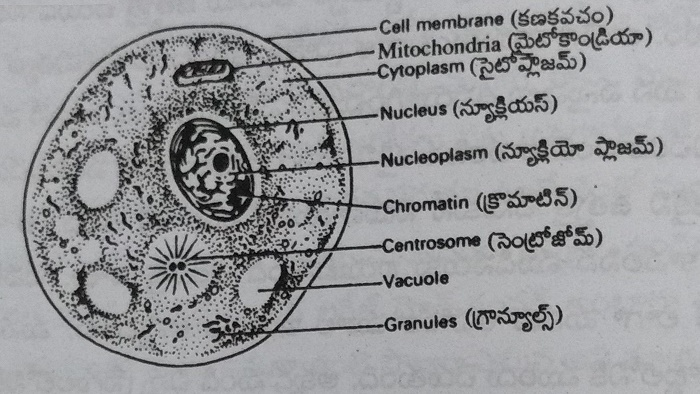

అధిక బరువును ఆరోగ్యకరంగా తగ్గించడం ఎలా?
(సుఖ జీవన సోపానాలు - 10)
సంపూర్ణ ఆరోగ్యాన్ని
సంరక్షించండి,
సర్వదా ఐశ్వర్యాన్ని
అనుభవించండి.
డా. మంతెన సత్యనారాయణరాజు
విషయసూచిక
- మన ధోరణి మారాలి
- బరువు పెరగడానికి గల కారణాలు
- ప్రొద్దుపోయి తింటే బరువు ఎందుకు పెరుగుతారు
- అధిక బరువు వల్ల అనర్థాలు
- తిన్నది కొవ్వుగా ఎలా మారుతుంది?
- మనం బరువు ఎలా పెరుగుతున్నాము?
- బరువు తగ్గాలంటే ఎలాంటి ఆహారం శ్రేష్ఠం?
- అన్నానికి, పుల్కాలకు గల తేడా
- ఆరోగ్యకరంగా బరువు తగ్గించే వంటలు
- బరువు తగ్గడానికి ఏ వ్యాయామం శ్రేష్ఠం
- అధిక బరువును ఆరోగ్యకరంగా తగ్గించే దినచర్య
- బరువును తగ్గించే ఒక రోజు ఉపవాసం
- సరైన శరీర ఆకృతి ఏది?
- ఎంత ఎత్తుకు ఎంత బరువు?
- సందేహాలు-సమాధానాలు
1. మన ధోరణి మారాలి
- ప్రకృతి నుండి అన్నీ తెలుసుకొని - ఎదిగాడు మనిషి తనను తాను మలుచుకొని
- పెరిగిపోయి అన్ని విధాల సౌకర్యం - కోల్పోతున్నాడు జీవన సౌందర్యం
- అనుసరించక అద్భుత ప్రకృతి - మనిషి పొందాడు వికృత ఆకృతిని
- పెంచుకోకండి దేహంలో క్రొవ్వు నిలువ - జబ్బు వచ్చాక తెలుస్తుంది ఆరోగ్య విలువ
- అడుసుత్రొక్కనేల పాట్లు పడనేల - బరువు పెరగనేల తిప్పలు పడనేల
- ఎన్నో ప్రయత్నాలు చేశారు చాలిక - ఈ విధానంలో బరువు తగ్గడం తేలిక
- కదలవలసిన పని లేదు ఇల్లు - ఇంట్లోనే రోగానికిక చెల్లు
ప్రకృతిలో జీవించే అన్ని జీవరాశులు కేవలం ప్రకృతి వనరులను ఆధారంగా చేసుకొని జీవిస్తున్నాయి. ప్రకృతిలో లభించే గాలి, నీరు, ఆహారాన్ని వాటి శరీర కణాల అవసరాలకు అనుగుణంగా ఉపయోగించుకొని ప్రతి జీవి వాటి వాటి జీవిత గమనాన్ని సాగిస్తున్నాయి. ఆది మానవుడు మిగతా అన్ని జీవుల మాదిరిగానే ప్రకృతిలో లభించే స్వచ్ఛమైన గాలి, కలుషితం కాని నీరు, అమృత ప్రాయమైన ప్రకృతి ఆహారం అనగా ఆకులు, కాయలు, దుంపలు, పండ్లు మొదలగు వాటిని తిని జీవించాడు. ఈ విశాల భూమిపై మానవుడు ఉద్భవించిన నాటి నుంచి తన ఉనికిని చాటి చెప్పుకోవడం కోసం తన చుట్టు ఉన్న జీవులతోను, ప్రకృతితోను సహజీవనం సాగిస్తూ తన మనుగడ కోసం నిరంతరం పోరాటం చేస్తూ వస్తున్నాడు. ప్రకృతిలో జరిగే మార్పులను, ప్రకృతిని ఆధారంగా చేసుకొని జీవించే అన్ని జీవరాశులను నిరంతరంగా తరతరాలుగా పరిశీలించాడు, పరీక్షించాడు, తనకు తెలియని క్రొత్త క్రొత్త విషయాలను తెలుసుకున్నాడు.
ఈ జీవ పరిణామ వ్యవస్థలో మనిషి యొక్క మజిలీలు ఎన్నో. ఆటంకాలు ఎన్నెన్నో అధిగమిస్తూ, ఎన్నో క్రొత్త పుంతలు త్రొక్కుతూ, నేటి నాగరిక సమాజానికి కారకుడై ఇంకా మునుముందుకు దూసుకెళ్తూనే ఉన్నాడు. ఒకప్పుడు మనిషి మిగతా జీవుల లాగ కేవలం ప్రకృతి ఇచ్చే గాలి, నీరు, ఆహారాలను ఆధారంగా చేసుకొని జీవించాడు. ఎండ, వాన, చలి మొదలగు ప్రకృతిలో కలిగే మార్పుల నుండి తనను తాను రక్షించుకోవడానికి బట్ట కట్టడం నేర్చుకున్నాడు. అలాగే ప్రకృతి వైపరీత్యాల నుండి గాని, ఇతర జీవుల నుండి గాని తనను తాను రక్షించుకోవడానికి ఇతర జీవుల వలే గూడు కట్టుకోవడం నేర్చుకున్నాడు. ఈ పరిణామ క్రమంలో గాలి, నీరు కంటే ఎక్కువగా కూడు, గూడు, గుడ్డలకు ఎక్కువ ప్రాధాన్యత ఇవ్వసాగాడు. కారణం గాలి, నీరు ప్రకృతిలో సులభంగాను, విరివిగాను, ఫ్రీగా లభిస్తున్నాయి. కనుక వాటిని, వాటి వలన మనిషి ఆరోగ్యానికి కలిగే లాభాలను ప్రక్కన పెట్టాడు. అంతగా పట్టించుకోవడం లేదు.
అంచెలంచెలుగా మానవుడు తన మేధాశక్తిని పెంచుకోవడంతో, వైజ్ఞానికంగా, శాస్త్రీయంగా, వైద్యపరంగా, టెక్నాలజీపరంగా అనేక రంగాలలో గణనీయమైన అభివృద్ధిని సాధించాడు. శారీరకంగా, మానసికంగా, ఆధ్యాత్మికంగా, సాంఘికంగా, ఆర్థికంగా మంచి నేర్పుతో మార్పును చవిచూసాడు.
నేటి ఆధునిక మానవుడు శాస్త్ర సాంకేతిక పారిశ్రామిక రంగాలలో అభివృద్ధిని గడించి ఈ భూమండలాన్నే కాదు, రోదసియాత్రలో చంద్రమండలంపై కాలు పెట్టాడు. ఈ ప్రపంచాన్ని అరనిమిషంలో అరచేతిలో చూడగలుగుతున్నాడు. ఇదంతా మానవ మేధస్సుకి తార్కాణం. వచ్చిన చిక్కంతా ఎక్కడ ఉందంటే ఇక్కడే. తన శరీర ధర్మాలను, శరీరం సూచించే సూచనలను ప్రక్కన పెట్టి, తాను ప్రగతి పథంలో ముందుకెళ్తున్నాడు. తక్కువ సమయంలో ఎక్కువ పనులు చేయాలనే తపనతో తన మేథాశక్తిని మాత్రమే ఎక్కువగా ఉపయోగిస్తూ డబ్బు, పేరు ప్రఖ్యాతులు గడిస్తున్నాడు. కాని శరీరానికి కావలసిన కనీస అవసరాలు అనగా గాలి, నీరు, ఆహారం, వ్యాయామం, విసర్జన, విశ్రాంతి ఎలా పూరించాలో మరియు మాససిక ప్రశాంతతను ఎలా పొందాలో మరిచిపోయి పెడదారి పట్టాడు. పర్యవసానంగా, ఇదిగో చూస్తున్నారుగా నేటి ఆధునిక అనారోగ్యకరమైన సమాజం.
ఉదయం నిద్ర లేచి మంచం మీద నుండి కాలు క్రింద పెట్టినప్పటి నుండి తిరిగి రాత్రి మంచం మీదకి చేరేంతవరకు నిత్యజీవితంలో మనిషికి కావలసిన అన్ని విషయాలలోను సౌకర్యాలు పెరిగినాయి. మనిషి చేసే ప్రతి పనిని మర యంత్రాలు పూర్తి చేస్తున్నాయి. వంట ఇంట్లో రుబ్బుకునే, దంచుకునే పనిలేకుండా గ్రైండర్లు, మిక్సీలొచ్చాయి. బట్టలు ఉతకాల్సిన పని లేకుండా వాషింగ్ మిషన్ల ద్వారా పనులు జరిగిపోతున్నాయి. ఒక చోటి నుండి ఇంకో చోటికి వెళ్ళడానికి నడవాల్సిన పనిలేకుండా రకరకాల వాహనాలు అందుబాటులోకి వచ్చాయి. ఇలా మన నిత్యజీవితంలో అన్ని పనులు ఏ ఇబ్బందీ లేకుండా, శరీరంతో పని లేకుండా కేవలం వ్రేళ్ళను మీటుతూ క్షణాల్లో పనులన్నీ చకచకా జరిగేటట్లు చేస్తున్నాం.
నేటి సమాజంలో డబ్బు, కీర్తికాంక్ష విపరీతంగా పెరిగిపోయాయి. డబ్బునే ప్రధానంగా చేసుకొని ఈ ప్రపంచం ముందుకెళ్తున్నది. ఈ జీవ పరిణామంలో అంచెలంచెలుగా మానవ జీవన ప్రమాణం పెరిగింది. కూడు, గూడు, గుడ్డ లాంటి కనీస అవసరాలకు మించి డబ్బులు చేతిలో కనబడుతున్నాయి. కుటుంబ నియంత్రణ పాటించి ప్రతి ఇంట్లో ఒకరు లేక ఇద్దరు పిల్లలనే కంటున్నారు. వెనుకటి రోజుల్లాగ తీరిగ్గా వడ్లు దంచుకొని, చేలల్లోకి వెళ్ళి ఆకుకూరలు, కూరగాయలు తెచ్చుకొని కూరలు వండుకొని, రోట్లో పచ్చళ్ళు రుబ్బుకొని తినే సమయం లేదు. చెట్ల నుంచి కాయలు, పండ్లు కోసుకొని తెచ్చుకునే తీరికా లేదు. చెట్లు, చేమలు అందరికీ అందుబాటుగా ఉండే అవకాశమూ లేదు. పైగా చేతిలో కావలసినంత డబ్బు ఉంది. ఖర్చు పెట్టడానికి స్థోమత ఉంది. తదనుగుణంగా నేడు సూపర్ మార్కెట్ లోకి మనసుని హత్తుకునేలా, ఆకర్షణీయంగా ఎన్నో క్రొత్త క్రొత్త మార్పులతో వింత వింత వస్తువులు మన కళ్ళ ఎదుటే గోచరిస్తుంటే మనం ఎలా ఊర్కోగలమండి? మన పంచేంద్రియాలకు దిమ్మతిరిగేటట్లుగా అద్భుతమైన రుచి, ఘుమ ఘుమ వాసన, కనువిందు చేసే కలర్లతో నోరూరించే తినుబండారాలు మనల్ని ఎంతగానో మభ్యపెట్టి, మాయలో పడేసి, మదిని దోచేస్తున్నాయి. "సంపాదించిన డబ్బును అనుభవించని ఈ జీవితం ఎందుకు" అనే ఆలోచన పెరిగింది. అందుకే జీవించినంత కాలం రకరకాల రుచులతో రుచికరమైన జీవితాన్ని అనుభవిద్దాం అనే భ్రమలో బ్రతుకుతున్నారు.
వాహనానికి రెండు చక్రాల్లాగా ఒక వైపు శారీరక శ్రమ పూర్తిగా తగ్గిస్తూ, రెండో వైపున శరీర అవసరానికన్నా ఎక్కువ ఆహారం తీసుకుంటూ, మనిషి తన జీవిత వాహనాన్ని అనారోగ్యం వైపుకు లాక్కెళ్తున్నాడు. Money makes many things and also monkey things. ఈనాడు మనిషి ప్రకృతి విరుద్ధమైన, వికృతమైన ఆహారపు అలవాట్లకు బానిసై వికృతాకారుడైనాడు. రోజు రోజుకు మనిషి ఆకృతిలో తేడా వచ్చింది. బాన కుండ లాగా ముందు పొట్ట పెరిగి కొందరు, వెనుక సీటు పెరిగి కొందరు, తొడలు లావెక్కి ఊబ చెంపలు, ఆంబోతు మెడతో మనిషి చిన్నపాటి రాక్షసుడిని పోలిన వికృతాకృతితో ఛండాలంగా తనకు తానే అసహ్యించుకునేటట్లుగా తయారైనాడు.
బరువు పెరిగిపోతున్నామని ఎవరికి వారికే తెలిసిపోతుంది. శరీరంపై బట్టలు, వస్తువులు తెలియజెప్పినా పట్టించుకోవడం లేదు. బరువు బాగా పెరిగి తన శరీరాన్ని తాను మోయలేని దుస్థితిలో ఉంది. దానికి తోడుగా మోకాళ్ళ నొప్పి రావడం, క్రిందికి పైకి మెట్లు ఎక్కలేక మోకాళ్ళలో టిక్ టిక్కుమని శబ్దం చేస్తూ, మోకాళ్ళ లోపల కలుక్కుమని భరించలేని నొప్పి వచ్చినప్పుడు లేదా రక్తంలో క్రొవ్వు కొలెస్ట్రాల్ అధికంగా చేరి, రక్తనాళాల్లో క్రొవ్వు చేరడం తద్వారా బి.పి. రావడం, అవయవాలకు రక్తం పంపడానికి గుండెపై అధికంగా భారం పడడం జరిగిపోయి చివరికి ఏ పక్షవాతం రావడమో జరిగినపుడు లేదా మూత్రపిండాలు, లివరు, పాంక్రియాస్ దెబ్బతినడం ద్వారా హార్మోన్లలో మార్పు వచ్చి సుగర్ లాంటి వ్యాధులు వచ్చినప్పుడు గాని మనిషి మేలుకోడు. ఏదో ఒక వ్యాధికి గురైనపుడు వైద్యుడిని ఆశ్రయిస్తాడు. వైద్యుడు ఇచ్చే మందు వేసుకుంటాడు. ఎన్ని మందులు వాడినా వ్యాధిలో మార్పు రానప్పుడు, వ్యాధులు మొండి వ్యాధులుగా మారినపుడు అయ్యా! నీ ఒళ్ళు బాగా పెరిగింది. ఇక లాభం లేదు వెంటనే బరువు తగ్గించుకొని రండి. అప్పటి వరకు మేము ఏమీ చేయలేమండి, మా చేతిలో ఏమీ లేదని వైద్యులు చేతులెత్తి ప్రక్కకు తప్పుకుంటారు. అప్పటి వరకు వారి బరువు గురించి ఆలోచించరు. బరువు వలన శరీరంలో ఎంతో నష్టం జరుగుతుందని గ్రహించరు. అప్పుడు మొదలెడతారు బరువు ఎలా తగ్గాలనే ప్రయత్నం. ఎక్కడికి వెళ్ళాలి, ఎవరిని కలవాలని తెలిసిన వాళ్ళని, శ్రేయోభిలాషులను అడిగి తెలుసుకుంటారు. పేపర్లు, మాగ్జైన్లు తిరగేస్తారు. దగ్గరలో అందుబాటులో ఉన్న ఒబెసిటి సెంటర్లను, డైటీషియన్లను, యోగ, జిమ్స్, ఏరోబిక్ ఎక్సర్ సైజులలో ఏదో ఒకదానిని ఎన్నుకుంటారు. 3-4 నెలల కోర్సులో చేరుతారు. వారు చేసే చికిత్సలు తీసుకుంటూ, ఒళ్ళు తగ్గించే ఎలక్ట్రానిక్ మిషన్లను పెట్టించుకుంటారు. వారు చెప్పే ఆహార నియమాలను చాలా స్ట్రిక్టుగా ఆచరిస్తారు. నూనె, నెయ్యి, మసాల పదార్థాలు పూర్తిగా మానేస్తారు. కోర్సు పూర్తి అయ్యేసరికి 5-10 కిలోలు తగ్గుతారు. హమ్మయ్య! కోర్సు అయిపోయిందని అదేదో గొప్ప కార్యక్రమం ముగించినట్లుగా మనసులో అనుకుంటారు. పాత మిత్రులు, అలవాట్లు మాత్రం అలాగే ఉంటాయి. తిరిగి అదే వాతావరణంలోకి వెళ్ళగానే వృత్తి, వ్యాపారం, బంధువుల దృష్ట్యా కొద్దిగా తమ పథ్యాన్ని సడలిస్తూ, మెల్ల మెల్లగా పాత అలవాట్లలోకి తిరిగి వచ్చేస్తారు. మళ్ళీ తినడం, త్రాగడం మొదలు పెడతారు. వ్యాయామాలు ఆపివేస్తారు. 3-4 నెలల్లో ఎంతో కష్టపడి, కఠోర దీక్షతో ఎంతో డబ్బు ఖర్చు చేసి తగ్గించుకున్న బరువు యథావిధిగా మళ్ళీ పెరగడం మొదలౌతుంది. 2-3 నెలల్లో తగ్గిన పాత బరువును తిరిగి పొందుతారు. ఒక్కోసారి కోల్పోయిన బరువు కన్నా ఎక్కువ బరువు పెరుగుతారు. అయ్యో బరువు పెరిగామని కొద్దిగా మనసులోకి రాగానే లేదా ఇతర రోగాలు కంట్రోలు కాకపోవడంతో మళ్ళీ డైటింగ్ లు, వ్యాయామాలు మొదలెడతారు. కొన్ని నెలలు ఆచరిస్తారు. తిరిగి మానేస్తారు. ఇలా అనేక సార్లు ఒబెసిటి సెంటర్ల చుట్టూ తిరుగుతూ, ఒక్క ప్రదేశంలో తృప్తి చెందక అనేక సెంటర్లు మారుస్తారు. చివరికి అందరూ అయిపోతారు. అన్ని సిస్టములు అయిపోతాయి. కాని దేనిలోనూ సంతృప్తి రాక విసుగెత్తి, ఏది చేయాలో, ఏది ఆచరించాలో తెలియక, చివరికి అన్నీ వదిలిపెడతారు. ఇక ఈ జివితం ఇంతేలే! బ్రతికిన్నన్ని రోజులు ఇలాగే తిందాం, తిరిగినన్ని రోజులు తిరుగుదాం ఇంకో జన్మంటూ ఉంటే అప్పుడు జాగ్రత్త పడదాంలే అని మొండిగా తయారౌతారు. ఇంకొంతమంది బరువు తగ్గాలని చాలా మొండిగా నూనె, మసాల, మాంసాహారం లాంటి క్రొవ్వును పెంచే పదార్థాలను తినడం మానేస్తారు. తిండి తగ్గిస్తే తొందరగా ఫలితం కనిపిస్తుందన్న ఆలోచనతో ఆహారాన్ని చాలా వరకు తగ్గించేస్తారు. రోజూ ఉదయం, సాయంత్రం 2 గంటలు వ్యాయామాలు చేస్తారు. మీ భారీకాయానికి మీరిచ్చే ఆహారం సరిపోక కళ్ళు తిరిగి, నరాలు బలహీన పడి, పూర్తిగా శక్తి లేక నీరసంగా పడిపోతారు. చివరికి నర్సింగ్ హోములకు తీసుకెళ్ళి సెలైన్ బాటిల్స్ ఎక్కించాల్సి వస్తుంది. ఇలా ఎవరు చేయమన్నారని డాక్టర్లు మిమ్మల్ని అడుగుతారు. ఇంకెప్పుడు ఇలా చేయకండని సలహా ఇస్తారు. దానితో ఈ డైటింగ్ నాకు పడదు, బి.పి. తగ్గిపోతుంది. కళ్ళు తిరుగుతాయని చెబుతారు. అనగా విషయంపై అవగాహన లేకుండా మీ ఇష్టం వచ్చినట్లుగా చేయడం లేదా అనుభవంలేని వ్యక్తుల సూచనల మేరకు ఆచరించడం ఎంత మాత్రం ఆరోగ్యానికి మంచిది కాదు. ఒకవేళ మీరు ఆచరించే పద్ధతులు బాగా పనిచేసి, బరువు బాగా తగ్గినా అది తాత్కాలికమైన మార్పుగానే ఉంటుంది గాని అది శాశ్వత పరిష్కారం మాత్రం కాదు. ఎందుకంటే, మనకు తగ్గిన బరువు ఆహారం తగ్గించడం ద్వారా తగ్గినదా? వ్యాయామాలు చేయడం ద్వారా తగ్గినదా? లేదా మనం ఒబెసిటి సెంటరులలో పెట్టుకున్న మిషన్ ద్వారా తగ్గినదా? అనేది చెప్పడం చాలా కష్టం. మనకెందుకులే ఏదో ఒకటి మొత్తం మీద బరువు తగ్గినది కదా అని అనుకుంటారా? ఇది ఎంత మాత్రం ఆరోగ్యకరం కాదు. "అడుసు త్రొక్కనేల కాలు కడగనేల" అన్నట్లు ప్రతిసారి తప్పు చేయడం ఎందుకు? తిరిగి సరిచేసుకోవడం ఎందుకు? ఇదెలా ఉందంటే, నేర ప్రవృత్తి కల్గిన దొంగ, ప్రతిసారి తప్పు చేయడం, కోర్టుకు వెళ్ళడం, కొన్ని రోజులు జైళ్ళో శిక్షను అనుభవించడంలా ఉంది. ఏ తప్పు చేయడం ద్వారా బరువు పెరుగుతున్నామో తెలుసుకొని, తిరిగి ఆ తప్పు చేయకుండా జాగ్రత్త పడాలి. జీవితంలో మనసు మార్చుకొని నడత మార్చుకోనంత కాలం మనం శిక్షను అనుభవించక తప్పదని గుర్తించాలి.
బి.పి., షుగర్, గుండె వ్యాధులు, కీళ్ళ నొప్పులు, క్యాన్సర్ మొదలగు దీర్ఘ కాలిక వ్యాధులు చూస్తే వయస్సు పెరిగిన తర్వాత వస్తూ ఉంటాయి. అలాంటి కోవకు చెందినదే బరువు సమస్య కూడ, కాని నేటి నాగరికతలో వచ్చిన మార్పులో భాగంగా పెద్ద వయస్సులో రావల్సిన అనేక దీర్ఘకాలిక రోగాలు నేడు వయస్సుతో నిమిత్తం లేకుండా వస్తున్నాయి. పై వ్యాధులతో పాటుగా బరువు కూడా చిన్న వయస్సు నుండే ప్రారంభమైంది. అభం శుభం తెలియని, ముక్కుపచ్చలారని చిన్నారులు సయితం ఎన్నో దీర్ఘకాలిక వ్యాధులకు కారణమైన బరువుకు బాధితులు కావడం శోచనీయం. రేపటి తరానికి వారసులు, భావి భారత పౌరులు, దేశ తొలి పౌరులు శ్రీ అబ్దుల్ కలాం గారి కలలు, స్వామి వివేకానంద గారి మాటలు ఎలా నిజం చేయగలరు? ఈ బరువు సమస్య మన దేశంలోనే కాదు ప్రపంచ దేశాల్లోనే పెద్ద సమస్యగా మారింది. బరువు రోగం కాదు. కాని అనేక రోగాలకు కారణమవుతుంది. ఈ బరువు ద్వారా చిన్నతనంలో గుండె సమస్యలు తలెత్తున్నాయి. చాలా కాన్వెంటు స్కూళ్లలో, కాలేజీలలో చూస్తే బరువు పెరిగిన పిల్లలు ఎక్కువగా కనబడుతుంటారు. పాపం వారికి నడవడమే పెద్ద సమస్య. దానికి తోడు వెనకాల పెద్ద పుస్తకాల మూట. కొద్ది దూరం నడిచినా లేదా 2-3 అంతస్తులలో ఉన్న క్లాసుల్లోకి వెళ్ళాలన్నా ఇబ్బందిపడుతూ, రొప్పుతూ, ఆయాసపడుతుంటారు. చిన్న వయస్సులోనే ఇంత ఇబ్బందిగా ఉంటే, ముందు జీవితంలో వారు ఎలా వుంటారండి! అందుకే పెద్దలు ముఖ్యంగా తల్లిదండ్రులు బాధ్యతగా బరువును కంట్రోలు చేసుకొని, ఆ తర్వాత పిల్లల భవితకు మార్గదర్శకులు కావాలని నా సలహా. మీ పిల్లలకు డబ్బు సంపాదించి ఇచ్చినదాని కంటే, మంచి ఆరోగ్య నియమాలను, సూత్రాలను నేర్పించడమే ఉత్తమం. మన పిల్లలు మనల్ని, మన ప్రవర్తనని బాగా పరిశీలిస్తుంటారు. మనం తినే ఆహారం, మనం చేసే వ్యాయామం, మన అలవాట్లను చూసి పిల్లలు చెప్పకుండానే నేర్చుకుంటారు. అందుకే ముందుగా మీరు బరువును కంట్రోలు చేసుకునే పద్ధతులను పాటించండి.
మనం బరువు ఎలా పెరుగుతున్నాం, అనే విషయాన్ని సంపూర్ణంగా అర్థం చేసుకోవాలి. అవగాహన ద్వారానే విషయం సానుకూలమవుతుందని నా అభిప్రాయం. అవగాహన లేకుండా డైటింగు చేసినా, వ్యాయామం చేసినా, ఒబెసిటి సెంటరులలోకి వెళ్ళి మిషను ద్వారా తగ్గించుకున్నా తాత్కాలిక ఫలితమే తప్ప, దీర్ఘకాలిక ఫలితం సున్నా. తిండి తగ్గించకుండా, కడుపునిండుగా తింటూనే, శరీరానికి కావలిసిన పోషక పదార్థాలను సమృద్ధిగా అందిస్తూ, బరువుతో పాటు ఇతర వ్యాధులు కూడా తగ్గేటువంటి చక్కటి జీవన విధానాన్ని ఆచరించాలి. అన్నీ తింటూనే బరువు తగ్గించుకోవాలి. శరీరంలో ఏ అవయవం దెబ్బతినకుండా, ఇతర రోగాలతోపాటు బరువు కూడ ఆరోగ్యకరంగా ఎలా తగ్గించుకోవాలనే మార్గాలను సూచించాము. గత 10 సంవత్సరాల నా అనుభవంలో ఈ పద్ధతుల ద్వారా కొన్ని వేల సంఖ్యలో బరువు తగ్గుతున్నారు. బరువుతో పాటుగా వచ్చిన అనేక దీర్ఘకాలిక సమస్యలు సులువుగా ఎలా వచ్చాయో, అలాగే వాటంతట అవే మెల్లగా తగ్గిపోతుండడం గమనార్హం. వారి ఆనందానికి అవధులు లేవు. మోడు వారిన జీవితాలు చిగురించి మళ్ళీ పునర్జీవితాన్ని పొందుతున్నారు. ఇదంత మా గొప్పతనం అనను. కాని వారు చక్కగా మేమిచ్చిన సలహాలు, సూచనలు శ్రద్ధగా పాటించి తిరిగి చక్కటి ఆరోగ్యాన్ని అనుభవిస్తున్నారు. ఇదంతా వారి కృషియే.
మీరింత వరకు బరువు తగ్గించుకోవడానికి ఎన్నో మార్గాలను అన్వేషించి ఉండవచ్చు. మరెన్నో పద్ధతులు ప్రయత్నించి ఉండవచ్చు. ఎందరెందరో వ్రాసిన పుస్తకాలు చదివి ఉండవచ్చు. వారిచ్చిన సలహాలు ఆచరించి కొంత లాభం పొంది ఉండవచ్చు. చాలా మంచిది. కాని నేను వ్రాసిన ఈ పుస్తకంలో ముఖ్యంగా ఏ తప్పు చేస్తే (ఆహారం, వ్యాయామం, అలవాట్లు) మనం బరువు పెరుగుతున్నాం, ఆ తప్పును శరీరంలోని ఏ అవయంపై దుష్ప్రభావం పడకుండా, ఇతర వ్యాధులు పెరగకుండా ఎలా సవరించు కోవాలి, తిండి మానేయకుండా పొట్టనిండా ఏ రకమైన ఆహారం తింటూ ఆరోగ్యంగా హాయిగా బరువు తగ్గించుకోవచ్చు అనే విషయాలను చాలా స్పష్టంగా, అందరికీ అర్థమయ్యే భాషలో, నేనెప్పుడూ మీకు చెప్పే ఉపన్యాస ధోరణిలో వ్రాసాను. ఈ పుస్తకంలో విషయాలు తెలుసుకుంటే మీరు ఇల్లు వదిలి ఎక్కడికీ వెళ్ళక్కర్లేదు. మీ ఇంట్లోనే మీరు ఆరోగ్యకరమైన ఆహార పద్ధతులను పాటిస్తూ, ఏ మాత్రం ఇబ్బంది లేకుండా, బరువుతోపాటు మీకున్న ఇతర వ్యాధులను కూడా తగ్గించుకోగలుగుతారు. అనేక విషయాల్లో బ్రేకుల్లా ఉన్న బరువును తొలగించి జీవితంలో బరువు మీకు భారం కాకుండా హాయిగా, ఆనందంగా మీ జీవిత మకరందాలను అనుభవిస్తూ మునుముందుకు సాగుతారని, అందుకు మా ఈ చిరుపుస్తకం సహకరిస్తుందని ఆశిస్తున్నాను.
2. బరువు పెరగడానికి గల కారణాలు
- వారసత్వంగా వస్తుంది లావు - వద్దనుకున్నా ఆపలేవు నీవు
- అంగట్లో దొరికేది కాదు ఆరోగ్యం - అమ్మానాన్నలందించాలి ఆ భాగ్యం
- వివాహానికి విత్తము కన్నా - విలువైన విత్తనం మిన్న
- డైటింగులో ఎండును చనుబాలు - డబ్బా పాలతో బిడ్డకు రోగాలు
- అమ్మపాలల్లో అమృతం ఉందండి - మీ బిడ్డకు తప్పక అందించండి
- చిన్నవయస్సులోనే పెంచుకుంటే క్రొవ్వు కణాలు - పెద్దయ్యాక తప్పదు అనారోగ్యంతో రణాలు
- వ్యాయామం చేయడం ఎంతో ముఖ్యం - చేయకుంటే ఉండదు ఒంట్లో సఖ్యం
- తెలుసుకోండి వ్యాయామం విలువ - దేహంలో పెంచుకోండి ప్రాణశక్తి నిలవ
- మనిషికి తెలివి ఎక్కువయ్యి - బాధపడుతున్నాడు రోగాల పాలయ్యి
- ముందుగానే మార్చుకుంటే ఆహారపు అలవాట్లు - ఆపై పడనక్కర్లేదు అనారోగ్యపు అగచాట్లు
- ఆహార పదార్థాలను చేస్తున్నారు పాలిష్ - వాటిని వాడటం ఎంత ఫూలిష్
- వికృతాహారం తింటున్నాడు మనిషి - తప్పు చేస్తున్నాడు తినకూడదని తెలిసీ!
- ఆధునిక ఆహార పదార్థాలు - బరువును పెంచి తెస్తున్నాయి అనర్థాలు
- పొద్దుపోయి తిని పడుకోకండి - అధికంగా బరువును పెంచుకోకండి
- పండగ రోజైనా చేసే ఉపవాసం - ఆరోగ్యానికిచ్చును అవకాశం
- వ్యాయామం, ఆహారం విషయంలో శ్రద్ధ వహించు - సక్రమంగా బరువు తగ్గవచ్చని గ్రహించు
- ఆచరణే మొదటి మెట్టు - నేటి నుంచే మొదలు పెట్టు
- ఆహార వ్యాయామాలపై శ్రద్ధ వహించు - పెరిగే పొట్టపై పట్టు సాధించు
అందరికీ సన్నగా ఉండాలని, ఎప్పటికీ స్లిమ్ గానే ఉండాలని కోరిక ఉంటుంది. ఈ కోరిక అందరికీ నెరవేరదు. కొందరు పిల్లలు చిన్నప్పటినుండి లావుగా అయిపోతారు. మరికొంత మంది యవ్వన దశ వచ్చిన దగ్గర్నుండి పెరుగుతారు. ఎక్కువ మంది పెళ్ళైన దగ్గర్నుండి పెరగడం ప్రారంభిస్తారు. ఇంకొంత మంది పిల్లలకు పెళ్ళిళ్ళు చేసి బాధ్యతలు అయిన తరువాత నుండి ప్రశాంతంగా తిని లావు అవుతారు. కొందరైతే ఎంత తిన్నా కడ్డీల వలె బిగుసుకు పోయి ఉంటారు. ఇలాంటి వారిని చూస్తే లావున్న వారికి బాగా జెలసీ వస్తుంది. మీది ఎంత అదృష్టం అండీ! ఎంత తిన్నా అలానే ఉంటారు అని అంటుంటారు. అందరిలోనూ ఒకే విధముగా జరగడం లేదు. దీనికి గల కారణాలేమిటి? బరువు పెరగడానికి అనేక కారణాలు కలిసికట్టుగా పనిచేస్తాయి. అందులో ముఖ్యమైన వాటిని మనం వివరంగా తెల్సుకుందాము.
బరువు పెరగడానికి ప్రధానమైన కారణాలు 5
1. వారసత్వపు లక్షణం బట్టి
2. కొవ్వు కణాల సంఖ్యను బట్టి
3. థైరాయిడ్ హార్మోన్స్ లోపాన్ని బట్టి
4. వ్యాయామ లోపాన్ని బట్టి
5. ఆహారపు అలవాట్లను బట్టి
ఈ ఐదు కారణాలు బరువును పెంచడానికి ఎలా దోహదం చేస్తున్నాయో ఒక్కొక్క దానిని వివరంగా తెలుసుకుందాము.
1. వారసత్వపు లక్షణం
చెట్టును బట్టి విత్తు అన్నట్లుగానే మన విత్తనం అంతా తల్లిదండ్రులను, తాత ముత్తాలను బట్టి నిర్థారించబడుతుంది. పెద్ద మర్రిచెట్టు అంతా ఇంత చిన్న విత్తనంలో రాసి ఉంటుంది. ఇంత చిన్న విత్తనాన్ని నాటితే అంత మర్రిచెట్టు అవే లక్షణాలతో బయటకు వస్తుంది. మర్రి విత్తనాలు నాటితే సొరకాయలు, బీరకాయలు రావు గదా! అలాగే, మనలో కూడా భార్యా భర్తలు బొద్దుగా ఉన్న వారికి పుట్టబోయే పిల్లలు కూడా దొందు శరీరంతో పుడతారు. భార్యా భర్తలు మంచిగా ఉన్నప్పటికీ, కొందరు పిల్లలకు మేనత్త, మేనమామ నిర్మాణం వస్తే, మరికొందరకు తాతముత్తాతల నిర్మాణం వస్తుంది. అందుచేతనే పెళ్ళిళ్ళు చేసుకునే ముందు ఏడుతరాల వరకు ఆలోచన చేసి మన పూర్వీకులు జాగ్రత్త పడ్డారు. ఈ రోజుల్లో అయితే ఒక్క తరం వరకు కూడా ఆలోచన చేయడం లేదు. ఎంత లావుగా ఉన్నా పెళ్ళిళ్ళు అవుతున్నాయి. మనము పిల్లవాడు అమెరికాలో ఉన్నాడా, జీతం ఎంత, కట్నం ఎంత అని ఆలోచిస్తున్నామే గానీ వాడి జీన్స్ ఏమిటి? నిర్మాణం ఎలా ఉంది? ఆరోగ్యవంతుడా కాడా? అన్న ఆలోచన లేకుండా పెళ్ళిళ్ళు చేస్తున్నాము. దానితో పుట్టబోయే పిల్లలపై వీళ్ళ ప్రభావం పడుతుంది.
భార్యా భర్తలిద్దరూ లావుగా ఉండి పిల్లలను కంటే, వారికి పుట్టిన సంతానం బొద్దుగా, దొందుగా అయ్యే అవకాశాలు సుమారుగా 30-40 శాతం ఉందని శాస్త్రవేత్తలు అధ్యయనాలు చేసి చెబుతున్నారు. పుట్టుకతో పిల్లలకు ఇలాంటి నిర్మాణం వస్తే, వారు కొద్దిగా తిన్నా ఊరికే పెరిగి పోతుంటారు. పిల్లలను పుట్టించడం అందరికీ తెలుసు. కానీ ఆరోగ్యవంతమైన సంతానాన్ని కనడం ఎందరకు తెలుసు. వందేళ్ళ జన్మను ప్రసాదిస్తున్నామే, మంచి నిర్మాణాన్నిస్తే ఆ పిల్లలు బ్రతికినన్నాళ్ళూ ఆ శరీరం సహకరిస్తుంది కదా! అలా కాకుండా, మన పిల్లలు చిన్నప్పటి నుండి బొద్దుగా, దొందు తత్వంతో ఉన్నారంటే అందరూ చూసి నవ్వుతూ ఉంటారు. ఏమిట్రా ఇప్పుడే ఇంత లావున్నావని ఎవరన్నా పిల్లలను నిలదీస్తే, అప్పుడు వాళ్ళు చెప్పే సమాధానం ఏమిటో తెలుసా! నేనేం చేయనండి, మా అమ్మ నాన్న లావుకదండీ! అందుకే నేనిలా ఉన్నాను అంటారు. తప్పు చేసింది భార్యా భర్తలు. కానీ శిక్షననుభవించేది మాత్రం పిల్లలు. మనం ఏమీ ఆస్తులివ్వకపోయినా వారు సంపాదించుకోగలరు. వారు సంపాదించుకోలేనిది, కొనలేనిది ఆరోగ్యవంతమైన శరీర నిర్మాణాన్ని. వయస్సు, ఉద్యోగం వచ్చాయని పిల్లలకు పెళ్ళిళ్లు చేస్తున్నారే గానీ మన పిల్లలకు ఆరోగ్యవంతమైన నిర్మాణం ఉందా లేదా? అని పెద్దలు పట్టించు కోవడం లేదు. కాబట్టి పెళ్ళైన తరువాత భార్యా భర్తలన్నా 2-3 సంవత్సరాలు పిల్లలను కనకుండా, ముందు వారిద్దరూ ఆరోగ్యంగా తయారయ్యి ఆ తరువాత మంచి సంతానాన్ని కనే ప్రయత్నం చేస్తే పుట్టబోయే పిల్లలు అదృష్టవంతులవుతారు.
మనిషి తనకు మంచి సంతానం కావాలని ప్రయత్నంచడం లేదు గానీ దొడ్లో ఉండే పశువులకు మాత్రం కావాలని ప్రయత్నం చేస్తుంటాడు. మన దొడ్లో ఉండే ఆవుకి గర్భధారణ సమయం వచ్చినప్పుడు, ఆ ఆవును ఊరిలో కనబడే ఏదొక ఎద్దును కలవనివ్వడు. మంచి విత్తనాన్ని ఇచ్చే ఆంబోతు ఎద్దు ఎక్కడుందా అని వెతుకుతుంటాడు. ఆ ఊరిలో ఆంబోతు దొరకకపోయినా, నాలుగు ఊర్లు కష్టపడి తిరిగైనా మంచి ఎద్దుతోనే ఆ ఆవును జత కలుపుతున్నాడు. ఎందుకంటే, తన దొడ్లో మంచి సైజు, షేపు ఉన్న దూడ పుట్టాలనే కోరిక అలా నాలుగూళ్ళు తిప్పింది.
మనల్ని కన్న తల్లిదండ్రులు ఏమీ చదువుకోకపోయినా మనకు మాత్రం మంచి శరీరాన్ని ఇవ్వగలిగారు. ఈ రోజుల్లో మనందరం బాగా చదువుకుని, తెలిసో తెలియకో అనేక తప్పులు చేసి మన విత్తనాన్నే పాడు చేసుకుని దేశాన్ని నిర్వీర్యం చేస్తున్నాము. భార్యాభర్తలు పిల్లవాడు పుట్టిన తరువాత, వారు ఆ పిల్లవాడిని మా కుమారుడు అని చెప్పుకుంటూ ఉంటారు. ఇక్కడ మా కుమారుడు అంటే అసలు అర్థమేమిటో తెలుసా? మా కుమారుడు = మాకు "మారుడు". అంటే, మా ఇద్దరికీ మారు రూపమే మా కుమారుడు అని అర్థం. వారిలో గట్టితనం ఉంటే వీడిలో గట్టితనం, వారిలో దొందు శరీరం ఉంటే వీడిలో ఆ దొందు శరీరం మారు రూపంగా వచ్చేస్తుంది. వారిలో సుగరు జబ్బు ఉంటే వీడిలో కూడా సుగరు జబ్బు రాసి ఉంటుంది. కాబట్టి మంచి జీన్స్ ను తెచ్చుకోవడానికి ప్రయత్నించండి. మీరు మరలా మంచి జీన్స్ ను పంచడానికి ప్రయత్నించండి.
2. కొవ్వు కణాల సంఖ్య
కొవ్వు కణాలు అనేవి కొవ్వును నిల్వ చేసుకునే సంచులు లేదా బ్యాంకులు అనవచ్చు. మనం ఎక్కువైన డబ్బును దాచుకోవడానికి బ్యాంకులను వాడుకున్నట్లే, మన శరీరం కూడా ఎక్కువైన తిండిని దాయడానికి కొవ్వు కణాలను వాడుకుంటుంది. ఈ కొవ్వు కణాలనేవి ముఖ్యంగా తయారయ్యే వయస్సు చూస్తే, పిల్లవాడు పుట్టినప్పటి నుండి మొదటి సంవత్సరంన్నర కాలం లోపులోనే వాటి సంఖ్య నిర్థారణ అవుతుంది. మరలా పిల్లలు మెచ్యూరయ్యే వయస్సు వచ్చినప్పుడు కొద్డిగా తయారవుతాయి. ఒక్కసారి కొవ్వు కణాలు పుడితే అవి జీవితాంతం అలానే ఉంటాయి. ఆ కొవ్వు కణాల సంఖ్యను ముఖ్యంగా నిర్థారణ చేసేది మొదటి సంవత్సరంన్నర వయస్సులోనే కాబట్టి, ఆ టైములో తీసుకునే ఆహారాన్ని బట్టి కొవ్వు కణాల సంఖ్య ఎక్కువా లేదా తక్కువా అన్నది తేలుతుంది. ఎవరిలో ఎక్కువ కొవ్వు కణాలుంటాయో వారిలో ఎక్కువ కొవ్వు పేరుకునే ఫెసిలిటీ పుట్టుకతో వచ్చినట్లే, ఇలాంటి వారు బరువు పెరగడానికి అవకాశాలు బాగా ఉన్నట్లు. ఎవరిలో తక్కువ కొవ్వు కణాలుంటాయో వారిలో తక్కువ కొవ్వు పేరుకునే సదుపాయం మాత్రమే ఉన్నట్లు. ఇలాంటి వారు సన్నగా ఉండే అవకాశాలు ఎక్కువ ఉన్నట్లు. కొవ్వు కణాలు తయారవడం అనేది మొదటి సంవత్సరం ఇచ్చే ఆహారాన్ని బట్టి నిర్ణయించబడుతుంది.
పుట్టినప్పటి నుండి మొదటి సంవత్సరం లేదా సంవత్సరంన్నర కాలం పాటు తల్లిపాలను ప్రధాన ఆహారంగా గ్రహించిన పిల్లలు అదృష్టవంతులని చెప్పవచ్చు. వారిలో కొవ్వు కణాల సంఖ్య బాగా తక్కువ తయారయ్యేట్లు తల్లిపాలు మేలు చేస్తాయి. ఈ మేలు జీవితాంతం వరకు మనిషి ఆరోగ్యాన్ని కాపాడుతుంది. మా తరం వారంతా అదృష్టవంతులం అని చెప్పవచ్చు. ఎందుకంటే, తల్లిపాలను 2-3 సంవత్సరాల వయస్సు వచ్చే వరకు త్రాగాము కాబట్టి, మరి కొంత మంది చివరి సంతానంలో పిల్లలైతే 4-5 సంవత్సరాల వయస్సు వచ్చినా చంక ఎక్కి త్రాగుతూనే ఉండేవారు. ఇక అలాంటి పిల్లల చేత పాలు మానిపించడానికి చనుమొనలకు కుంకుడు కాయ రసం లేదా వేపాకు రసం రాసుకుని తల్లులు పిల్లలచేత కావాలని పాలు మానిపించేవారు తప్ప పాలు ఇంకా వస్తూనే ఉండేవి. ఈ రోజుల్లో పుట్టే పిల్లలు దురదృష్టవంతులే అనవచ్చు. తల్లిపాలు త్రాగడానికి కూడా నోచుకోవడం లేదు. పిల్లవాడికి తల్లిపాలు ఆరోగ్యం అని డాక్టర్లు చెబితేనో లేదా అమెరికా వారు చెబితేనో గాని పాలు ఇవ్వడం తెలియడం లేదు. ఒక వేళ వచ్చినా ఒకటి రెండు మాసాలు మించి ఎక్కువ మందికి రావడం లేదు.
పెళ్ళికి ముందే ఎక్కువ మంది అమ్మాయిలు లావుగా ఉంటున్నారు. గర్భవతి అయినప్పుడు ఎబార్షన్స్ అవ్వకుండా ఉండాలని ఎక్కువ పనిచేయకుండా, వంగకుండా మెట్లు ఎక్కకుండా కదలకుండా కూర్చుని తినేసరికి, చివరకు అడ్డంగా పెరిగి పోతున్నారు. డెలివరీ అయిన దగ్గర్నుండి సాగిన బొజ్జను, పెరిగిన శరీరాన్ని తగ్గించుకుని అందంగా, స్లిమ్ గా అయ్యే ప్రయత్నంలో డైటింగ్ లు చేస్తున్నారు. డైటింగ్ లు చేస్తే పాలు ఎలా తయారవుతాయి. పాలిచ్చే ఆవుకు ఈ రోజు గడ్డి బాగా పెడితే, రేపు పాలు బాగా పెరుగుతాయి. ఈ రోజు పచ్చగడ్డి సరిగా వేయకపోతే రేపు పాలు తగ్గిపోతాయి. మరి మన విషయంలో కూడా అంతే, తిండి తక్కువ తిన్నా గాని పాలిస్తే అందం పోతుందన్న భావనతో ఉన్నా గాని బాలింతలకు పాలు తగ్గిపోతాయి. ఈ రోజుల్లో అసలు పాలేపడని తల్లులు ఎందరో!
పంది 10-15 పిల్లలను పెడుతుంది. దాని డెలివరీకి ఏ గైనకాలజిస్టూ పక్కన ఉండవలసిన పనిలేదు. తన 10-15 పిల్లలకు సరిపడా పాలిచ్చి పెంచుతుంది. పాలు పడాలంటే ఏమి తినాలి డాక్టరుగారు అని పంది ఎవరినీ అడగదు. ఏమి తింటే పాలు బాగా వస్తాయో తనకు బాగా తెలుసు. తను మాత్రం డైటింగ్ లు చేసి 10-15 పిల్లలకు అన్యాయం చేయదు. ఈ రోజులలో ఒక్క పిల్లవాడికి పాలు ఇవ్వడానికి స్త్రీలు అవస్థ పడుతున్నారు. జ్ఞానజీవి అయిన మనకు ఎంత అజ్ఞానమో చూడండి. మన అజ్ఞానంతో పిల్లల భవిష్యత్ నాశనం చేస్తున్నాము.
పిల్లవాడికి తల్లిపాలు సరిపడా లేనప్పుడు బయట నుండి గేదె పాలు పడతాము. ఆ పాలల్లో కొవ్వు పదార్థాలు ఎక్కువగా ఉంటాయి. ఇది కొవ్వు కణాల సంఖ్య పెరగడానికి మొదటి కారణం. రెండవ కారణం చూస్తే, పిల్లవాడికి 3-4 నెలలు వచ్చిన దగ్గర్నుండి బయట ఆహారాలను పెట్టడం ప్రారంభిస్తారు. టీ.వీలలో ఒక పిల్లవాడిని మోడల్ గా చూపించి, ఇదిగో మీ పిల్లవాడు కూడా మా పిల్లవాడి వలె ఇలా నున్నగా బొద్దుగా ఉండాలంటే మా పిండే పెట్టండి అని ఒక మోడల్ పిండిని చూపిస్తారు. ఇక అమ్మలందరూ దానినే కొనిపెడుతూ ఉంటారు. అందులో ఉన్న ఎక్కువ కొవ్వు పదార్థాల కారణంగా చిన్న పిల్లలలో కొవ్వు కణాల సంఖ్య ఎక్కువయ్యే అవకాశం ఉంటుంది. మనందరి కళ్ళకు పిల్లలను నున్నగా బొద్దుగా చూసుకోవాలని ఉంటుంది. పైకి చూసుకుని మురిసిపోతుంటాము గానీ లోపల పరిస్థితి ఆలోచించడం లేదు. కొంత మంది పిల్లలు డప్ప ముక్కు, చట్టి మూతితో ఉన్నప్పటికీ వారు నున్నని బుగ్గలు, గుమ్మడి కాయల్లాంటి పిర్రలుండి కాస్త ఎర్రగా ఉంటే, ఆ పిల్లలను చూసి అందరూ ఎంత ముద్దువస్తున్నాడండీ అంటూ ఎత్తుకోవడానికి ప్రయత్నిస్తారు. మరి కొందరు పిల్లలు మంచి మూతీ ముక్కును కలిగియున్నప్పటికీ వారు సన్నగా ఉన్నారంటే, ఆ పిల్లలను ఎవరూ పెద్దగా ముద్దు చేయరు. అచ్చంగా తల్లిపాలు త్రాగి పెరిగే పిల్లలను చూస్తే ఎవరూ నున్నగా బొద్దుగా తయారు గారు. ఏ పోషక పదార్థాలు ఎంతెంత మోతాదులో అవసరమో తల్లిపాలల్లో అవే మోతాదులో ఉంటాయి కాబట్టి పిల్లలు అన్ని విధాలా బాగుంటారు.
ఇక పిల్లలకు ఆరవ నెల వచ్చిన దగ్గర్నుండి అన్నప్రాసన చేస్తారు. అక్కడ నుండి వండిన ఆహారాలను, డైరెక్టుగా కొవ్వు పదార్థాలనే పెట్టడం ప్రారంభిస్తారు. కొద్దిగా అన్నం తీసుకుని అందులో సాంబారు తేటో లేదా రసమో లేదా కొద్దిగా కూర ముక్కలో వేసి దానిలో బలానికని వెన్నపూసో, మీగడో లేదా నెయ్యినో బాగా కారేట్లుగా పోసి, మెత్తగా పిసికి దానిని వాడి నోట్లో పెడతారు. క్రొత్త గాబట్టి పిల్లవాడు దానిని ఊసేస్తాడు. ఆ తల్లి, పిల్లవాడికి భోజనం ఊయకుండా తినిపించడం కొరకు వాళ్ళ అమ్మలనో, జేజిలనో పిలుస్తుంది. వారు వచ్చి పిల్లవాడిని ఒకరు కదలకుండా కాళ్ళూ చేతులు పట్టుకుంటే, మరొకరు నోటిలో ముద్ద పెట్టి, చేతితో నోటిని మూసి వేసి పట్టుకుంటారు. దాంతో ఆ పిల్లవాడికి ఊయడం కుదరక మ్రింగడం నేర్చుకుంటాడు. అలా బలవంతంగా మన ఆహారాలను వారం, పదిరోజులు పెట్టేసరికి పిల్లలు వాటికి అలవాటు పడతారు. మనం పెట్టే ఆహారంలో ఉన్న వెన్న మీగళ్ళకు, ఆ పిల్లల అవసరానికి మించి కొవ్వు లోపలకు చేరడం చేత వారిలో కొవ్వు కణాల సంఖ్య విపరీతంగా పెరిగిపోతుంది. ఆ వయస్సులో పిల్లలకు మన ఇంట్లో తోడు పెట్టిన పెరుగుపైన ఉన్న మీగడంతా వేరు చేసి పెట్టడం, చిక్కటి గడ్డ పెరుగు వేయడం, చిక్కటి పాలను రోజుకు 2-3 గ్లాసులు ఇవ్వడం ఇవన్నీ కలిసి మొదటి సంవత్సరంన్నర వయస్సులో అత్యధికమైన కొవ్వు కణాల సంఖ్య తయారవడానికి కారణం అవుతున్నాయి. ఆ కొవ్వు కణాల సంఖ్య జీవితాంతం అంతే ఉంటుంది.
ఇలాంటి నష్టం మన పిల్లలకు రాకుండా ఉండాలంటే ఆ వయస్సులో పిల్లలకు కేవలం తల్లిపాలనే ప్రధానాహారంగా ఇవ్వడం మంచిది. పాలతోపాటు పండ్లను కూడా మధ్య మధ్యలో తినిపిస్తే మంచిది. బాగా పాలు పడాలంటే బాలింతలు మంచి ఆహారాన్ని తినాలి. ముందుగా బరువు తగ్గాలనే ఆలోచన ప్రక్కకు బెట్టి పాలు పడే ఆహారం తినే ప్రయత్నం చేయాలి. పాలు పడాలంటే మంచి మాంసకృత్తులున్న ఆహారాన్ని బాగా తినాలి. అవి, ముఖ్యంగా ఆకుకూరలు, మొలకెత్తిన విత్తనాలని చెప్పవచ్చు. ప్రతినిత్యం భోజనంలో ఏదొక రకం ఆకుకూరను ఎక్కువగా వండుకుని, ఆ కూరను ముడి బియ్యం (పాలిష్ పట్టని బియ్యం) అన్నంతో కలిపి తింటే పాలు బాగా పడతాయి. ఉదయం పూట ఇతర టిఫిన్స్ మాని మొలకెత్తిన పెసలు, మొలకెత్తిన అలసందలు, నానబెట్టిన వేరుశనగ పప్పులు (పల్లీలు) 1-2 గుప్పెళ్ళు, ఒక చిన్న చెక్క కొబ్బరి, పది పదిహేను ఖర్జూరం పండ్లు తింటే మంచిది. అప్పుడప్పుడూ సోయాబీన్స్ ను కూడా నానబెట్టి మొలకలతో పాటు తింటే బాగా పాలు పడతాయి. వీటిని కూరలోగానీ, అన్నంలో గానీ వేసుకుని వండుకున్నా మంచిదే. సాయంకాలం భోజనంలో కూడా ముడి బియ్యం అన్నాన్ని తింటే మంచిది.
3. థైరాయిడ్ హార్మోన్స్ లోపాన్ని బట్టి
థైరాయిడ్ గ్రంథి అనేది కంఠ భాగంలో ఉంటుంది. పాంక్రియాస్ గ్రంథి ఇన్సులిన్ ని ఉత్పత్తి చేసినట్లుగానే థైరాయిడ్ గ్రంథి థైరాయిడ్ హార్మోన్లను ఉత్పత్తి చేస్తుంది. ఈ హార్మోన్లు మన శరీరంలో జీవకార్యాన్ని నియంత్రిస్తూ ఉంటాయి. థైరాయిడ్ గ్రంథి ఉత్పత్తి చేయవలసిన హార్మోన్లు సరిగా ఉత్పత్తి గానప్పుడు జీవకార్యంలో మార్పులు వచ్చి, శరీరం నీరు పట్టడం, ఉబ్బరం, ఊరికే బరువు పెరిగిపోవడం మొదలగునవన్నీ జరుగుతాయి. వీరు ఆహారం తక్కువ తిన్నప్పటికీ బరువు పెరిగిపోతూ ఉంటారు. శ్రమ లేకుండా తిండి ఎక్కువ తిని బరువు పెరిగిన దానికి, థైరాయిడ్ హార్మోన్స్ లోపం కారణంగా బరువు పెరిగిన దానికి మధ్య భేదం స్పష్టంగా తెలుస్తుంది. థైరాయిడ్ సమస్య వచ్చి బరువు పెరిగేవారు పైకి చూడడానికే వేరుగా తెలుస్తారు. చర్మం బాగా దళసరిగా మారుతుంది. కళ్ళపైన వాపులు, ముఖం ఉబ్బు ఉబ్బుగా ఉండి పెదవులు కూడా లావు అవుతాయి. శరీరానికి నీరు పడుతుంది. ఎప్పుడూ నీరసంగా, చిరాకుగా ఉంటారు. మలబద్ధకం ఎక్కువగా ఉంటుంది. ఏ పనీ చేయాలనిపించదు. స్త్రీలలో అయితే బ్లీడింగ్ తక్కువగా అవుతూ ఉంటుంది. ఎవరన్నా బరువు పెరిగేటప్పుడు ఇలాంటి లక్షణాలు ఎక్కువగా కనిపిస్తూ ఉంటే వెంటనే డాక్టర్లను సంప్రదించి, టెస్టులు చేయించుకుని మందులు వాడడం తప్పనిసరి. ఇలాంటి వారికి ఆహార నియమాల కంటే హార్మోన్ టాబ్లెట్లే వెంటనే ఫలితాన్ని ఇస్తాయి. వైద్యులిచ్చే ఆ మందులను వాడుతూ, మనం చెప్పుకునే ఆహార నియమాలను పాటిస్తూ ఉంటే బరువు బాగానే తగ్గవచ్చు. కొంతమందిలో థైరాయిడ్ హార్మోన్ టాబ్లెట్ వాడుతూ బరువు తగ్గే ప్రయత్నాలు ఎన్ని చేసినా కొద్దిగా కూడా ఫలితం కనిపించదు. అలాంటి వారు డాక్టరును సంప్రదించడమే మంచిది. వారు వేసుకునే మందు చాలకపోయినా, థైరాయిడ్ లో ఇంకా ఏమైనా మార్పులొచ్చినా సందర్భాన్ని బట్టి హార్మోన్ డోస్ పెంచవలసి ఉంటుంది. సరైన చికిత్స చేయించుకుంటూ బరువు తగ్గించే ప్రయత్నం చేయడం ఉత్తమం. నేను ప్రకృతి వైద్యం చేస్తున్నాను, కాబట్టి అన్ని మందులను పూర్తిగా ఆపి ప్రారంభిస్తాను అంటే, ఇక్కడ మంచి జరగదు. కొన్ని సందర్భాలలో మందు తప్పనిసరిగా వాడవలసి ఉంటుంది. ప్రకృతి విధానం మందులకు వ్యతిరేకం కాదుగదండీ! అందుచేత, ఇలాంటి థైరాయిడ్ సమస్యలతో బరువు పెరిగిన వారికి బ్రతికినన్నాళ్ళూ మందు వాడుతూ ఆహార నియమాలను పాటించడం తప్పని సరి.
4. వ్యాయామ లోపాన్ని బట్టి
ఇంతకు ముందు చెప్పిన మూడు కారణాలు బరువు పెరగడానికి చిన్న కారణాలైతే ఈ కారణం మాత్రం అన్నింటి కంటే అతి ముఖ్యం అని చెప్పవచ్చు. వ్యాయామం చేస్తూ ఆహారం తినే వారికి, వ్యాయామం చేయకుండా ఆహారం తినే వారికి బరువు పెరగడంలో తేడా అనేది ఎలా ఉంటుందనేదాన్ని ఒక చిన్న ఉదాహరణ ద్వారా తెల్సుకుందాము. మామూలు ఎద్దు, ఆంబోతు ఎద్దు - రెండూ ఎద్దులే అయినప్పటికీ ఈ రెండింటికి చాలా భేదం ఉంది. రెండు ఎద్దులూ తినే తిండి మాత్రం పచ్చగడ్డే అయినప్పటికి, రెండూ ఒకే మోతాదులో తిండి తిన్నప్పటికీ రెండింటి ఆకారాలు మాత్రం భిన్నంగా ఉంటాయి. ఆంబోతు ఎద్దు అంత లావు అవ్వడానికి, మామూలు ఎద్దు సరిపడా ఉండడానికి మధ్య భేదం అల్లా వ్యాయామమే. మామూలు ఎద్దు బండిని లాగుతూ, నాగలిని దున్నుతూ, శ్రమ చేస్తూ ఆహారాన్ని తింటుంది. తిన్న ఆహారం అంతా పని రూపంలో (వ్యాయామం) ఖర్చు అవుతుంది. కాబట్టి కొవ్వుగా మారే అవకాశం లేక ఆరోగ్యంగా పరిగెత్తేటట్లుగా దాని ఆకారం ఉంటుంది. అదే ఆంబోతు ఎద్దు అయితే, ఏ పనీ చేయకుండా ఊరకే తిని తిరుగుతూ, ఎక్కువగా పడుకుంటూ కాలక్షేపం చేస్తుంది. కాబట్టి అంత బొద్దుగా నడవలేకుండా, మోయలేనట్లుగా పెరిగిపోతుంది. ఆంబోతు ఎక్కడపడి ఆహారాన్ని తిన్నప్పటికీ ఎవరూ దానిని కొట్టకూడదు. అందుకే అలా కొవ్వు పట్టి పెరిగి అన్నింటినీ పొడుస్తూ ఉంటుంది. మీరు ఏమీ అనుకోనంటే నాకు ఇక్కడ ఒక్క మాట చెప్పాలనిపిస్తున్నది. అది ఏమిటంటే, ఎవరన్నా బాగా తిండి తింటూ ఏమీ పనిచేయకుండా ఊరకే తిరుగుతూ ఉంటే వారిని మన పెద్దలు దేనితో పోల్చి తిడతారో తెలుసా? "అచ్చుబోసిన ఆంబోతులా శరీరాన్ని పెంచి ఊరకే తిని తిరగకపోతే, కాస్త ఒళ్ళు వంచి చాకిరీ చేయవచ్చుగా అంటారు". పని చేస్తూ తిన్నదానికి పని లేకుండా తిన్నదానికి శరీరంలో వచ్చే మార్పు ఎంత ఉందో అర్థమయ్యింది గదా!
మన తల్లిదండ్రులు, తాత ముత్తాతలు మన కంటే ఎక్కువ ఆహారాన్ని తిన్నప్పటికీ వారు సన్నగా, కడ్డీలవలె గట్టిగా ఉన్నారంటే, వారు చేసిన శ్రమ తిన్న ఆహారాన్నంతటినీ కొవ్వుగా మారకుండా కరిగేట్లు చేసింది. ఆ రోజుల్లో వారు బాగా తినగలిగారు, అరిగించుకోగలిగారు, సన్నగా ఉండగలిగారు. ఈ రోజుల్లో చూస్తే, మనం పూర్వీకుల వలె తినలేకపోతున్నాము, అరగించుకోలేక అవస్థ పడుచున్నాము, పని చెయ్యలేక పోతున్నాము, చివరకు పెరిగిన దానిని మోయలేక ఇబ్బంది పడుతున్నాము.
సుమారు 30-40 సంవత్సరాలు వెనక్కెళ్ళి చూస్తే, మనిషి ఏపని చేయాలన్నా శరీరం పైనే ఆధారపడి చేయవలసి ఉండేది. ఆ పనిలో తిన్నదంతా కరిగిపోయేది. ప్రతి పనిలో వారికి రెక్కలు కదిలేవి, చెమటలు కారేవి. చివరకు ఉద్యోగ వ్యాపారస్తులకు కూడా శ్రమ ఎక్కువ ఉండేది. ఇంటి దగ్గర కూడా వారు పనిచేయవలసి వచ్చేది. మగవారికైతే, పెద్ద పెద్ద బావులలో నుండి 10-20 కావడుల నీరు తోడడం, వాటిని ఇంటికి మోసుకుని రావడం, దొడ్లో మొక్కల దగ్గర బాగుచేయడం, వాటికి నీళ్ళు పోయడం, పాలు పితకడం, వాములో నుండి గడ్డిపీకడం, బరువులు మోయడం, ఉద్యోగ వ్యాపారాలకు గాని, పొలాలకు గాని, ఎక్కువగా నడిచి వెళ్ళడం, ప్రొద్దుట్నుండి సాయంకాలం వరకు ఎండల్లో తిరగడం, పుల్లలు కొట్టడం, పారపనులు చేయడం మొదలుగునవి అన్నీ శరీరంలో కొవ్వు పేరుకోకుండా కరిగేలా వారి జీవనానికి సహకరించాయి.
పూర్వం రోజులలో ఆడవారికి కూడా ఎంతో శ్రమ ఉండేది. పది పురుళ్ళు పోసుకున్నా డొక్క లోపలకు అంటుకునే ఉండేదంటే, వారు ప్రతి నిత్యం చేసిన శ్రమే దానికి కారణం. స్త్రీలు సన్నగా ఉండడానికి కారణాలు పరిశీలిస్తే - అలికిన నేలపై మూరసైజుండే ఈతాకుల చీపురు పెట్టి పాచి తీస్తుంటే రెక్కలు చెమటలతో తడిచి పోయేవి. మంచి నీళ్ళ బిందెలను ఎక్కడి నుండో మోసి తెచ్చుకోవడం, పిండి రుబ్బడం, పోటు వేయడం, తిరగలిపై పప్పులు విసురుకోవడం, కళ్ళాపు చల్లడం, ఇంటిని అలుక్కోవడం, ముగ్గులు పెట్టుకోవడం, అంట్లు కడుక్కోవడం, బట్టలను బండలకేసి బాది ఉతకడం, కట్టె పుల్లల పొయ్యితో వంటలు వండడం, అత్తమామలకు సేవ చేయడం, ఇంట్లో అరడజను నుండి డజను మంది చిన్న పిల్లలను సాకడం, పైగా ఏ పూటకు ఆ పూట వేడివేడిగా వంటలను వండుకోవడం మొదలగునవన్నీ అధిక బరువు రాకుండా అడ్డుకున్నాయి. వారు ప్రతినిత్యం చేసుకునే పనులే వారి ఆరోగ్యానికి మేలు చేసాయి.
మనిషి తన తెలివితేటలతో అనేక వస్తువులను, వాహనాలను కనిపెట్టాడు. ఈ మధ్య వాటిని కొనుక్కునే స్థోమత బస్తీలలోని వారందరికీ కలుగుచున్నది. మనిషి చేయవలసిన పనులను మిషన్స్ చేస్తూ ఉంటే మనిషి తిన్న ఆహారం కొవ్వుగా మారే అవకాశం పెరిగింది. దానితో స్త్రీ పురుష భేదం లేకుండా అందరూ ఎక్కువగా లావు అవుతున్నారు. ఈ రోజుల్లో సౌకర్యాలు చూస్తే, బావిలో నీళ్ళు తోడే పని లేకుండా ఒక స్విచ్ నొక్కితే నీళ్ళను మోటారు తోడిపెడుతుంది. బక్కెట్లను మోసే పని లేకుండా ఎక్కడికి అక్కడ కుళాయిలు, ఓవర్ హెడ్ ట్యాంకులు, పిండి రుబ్బి పోటు వేయవలసిన పనిలేకుండా ఒక స్విచ్ నొక్కితే మిక్సీ కమ్ గ్రైండర్ ఆ పనిచేసి పెడుతుంది. వేలితో స్విచ్ నొక్కడానికి ఎంత శక్తి ఖర్చు అవుతుంది. ఇంట్లో పాలిష్ రాళ్ళు, వాటిపై పాచి తీయడానికి కుంచి చీపుళ్ళు. ఆ చీపురు మీటరున్నర పొడవుంటుంది. దానితో పాచి తీయాలంటే నడ్డి కూడా వంచవలసిన పనిలేదు. రెక్క కూడా పూర్తిగా కదలవలసిన పనిలేదు. కేవలం గుత్తి కదిలితే పాచి జరుగుతుంది. ఈ రోజుల్లో తుడిచే పాచికి జాకెట్టు కూడా తడవదు. బాత్ రూమ్ లో నీళ్ళను పోసుకునేటప్పుడు, నడ్డివంచి మగ్ తో నీళ్ళను ముంచుకుని, చెయ్యి బాగా పైకి లేపి పోసుకోవడం శ్రమ. అలా చేస్తే కొవ్వు కరుగుతుందేమో! ఆ మాత్రం కూడా కష్టపడకుండా ట్యాప్ తిప్పితే షవర్ పై నుంచి సులువుగా నీటిని చల్లుతుంది. ఇక ఆడవారి వంట విషయాని కొస్తే, వంట వండడానికి గానీ, అంట్లు కడగడానికి గాని క్రింద కూర్చోవలసిన పనిలేదు. పొయ్యి ఊదాల్సిన పని లేకుండా గ్యాస్ పొయ్యిలు. అవి కూడా నడ్డివంచకుండా బొడ్డు లెవల్ లో పైకి ఉంటాయి. అంట్లు కడిగేటప్పుడు కూడా నడ్డివంచవలసిన పనిలేకుండా పైకి సింక్ లు ఉంటున్నాయి. వంట సులువు కోసం ప్రెషర్ కుక్కరులు, నాన్ స్టిక్ పాత్రలు, వాషింగ్ మెషిన్ ఆన్ చేస్తే చాలు, అదే బట్టలు ఉతికి, పిండి, గంజి పెట్టి మరీ బయటకు అందిస్తుంది. మగవారితో పోలిస్తే ఆడవారు ఎక్కువగా ఎందుకు పెరుగుతున్నారంటే, మరి ఇలాంటి సౌకర్యాలన్నీ ఉపయోగించుకుంటున్నందున కరెంటు ఖర్చు అవుతున్నదే గానీ మనం తిన్నది ఖర్చు కావడం లేదు. బస్తీలలో ఆడవారికైతే ఇల్లు తుడిచి, అంట్లు కడిగిచ్చి, కూరలు కోసిపెట్టే పని పిల్లలు అందరిళ్ళలోనూ ఉంటారు. ఇక వారు చేసేదల్లా, పొయ్యి మీద కూర వేయడం, ఒక సీరియల్ చూడడం. మధ్యలో ఎడ్వర్ టైజ్ మెంట్ లు వచ్చినప్పుడు ఒకసారి కలుపుకోవడం మరలా కూర్చోవడం. పావుగంటకొకసారి టి.వి.ల వారు ప్రకటనల పేరు చెప్పి వీరికి మంచిగా బ్రేక్ లు కూడా ఇస్తున్నారు. అటు వంట పనులు, ఇటు సీరియల్ పనులు రెండూ చక్కగా పూర్తి అవుతున్నాయి. ఇన్ని రకాలైన సౌకర్యాలు వాడుకుంటూ ఆడవారిని సన్నగా ఉండమంటే ఎలా సాధ్యపడుతుంది.
ఇక మగవారి పనులు చూస్తే ఆఫీసుకెళ్ళడానికి నడిచే పని లేకుండా వాహనాలు, మెట్లు ఎక్కే పని లేకుండా లిఫ్ట్ లు, ఫైల్స్ మోసే పని లేకుండా కంప్యూటర్లు, చెమటలు పట్టకుండా సెంట్రలైజెడ్ ఏ.సీ.లు, ఫ్యాన్లు, శరీరాన్ని కదపకుండా మనస్సును పనిచేయిస్తూ వేలకు వేలు సంపాదించడం తేలిక అయ్యింది. శరీరాన్ని కదపడం కొరకు అప్పుడప్పుడు ఆటలాడి అన్నా శ్రమ పడతారనుకుంటే అదీ లేదు. పదకొండు మంది ఆడుతుంటే పదకొండువేల మంది నోరు తెరుచుకుని చూసి ఆనందించేవారే ఉంటున్నారు. ఆడి, చెమటలు కార్చి కష్టపడుతున్నందుకు, వారందరూ సన్నగా ఉంటారు. కూర్చుని వాళ్ళను చూస్తూ మనం తింటున్నందుకు లావు అయిపోతున్నాము. ఇంకా ఏమన్నా ఆటలాడితే వీడియో గేమ్స్ లేదా కంప్యూటర్ గేమ్స్. భార్యాభర్తలు ఇలా ఉంటే వీరిని చూసి పిల్లలు కూడా అలానే తయారవుతున్నారు.
ఈ రోజులలో ఇలాంటి వస్తు వాహనాలను, సౌకర్యాలను వాడుకోవడం తప్పు కాదు. ఆ పనులకు తగ్గట్టుగా తినకపోవడమే తప్పు. తినే విషయంలో తినడం పనిచేసే వారి మాదిరిగా తింటున్నాము. పనిని మాత్రం మిషన్ల చేత చేయిస్తున్నాము. దానితో అధిక బరువు అనేది రోజు రోజుకీ పెరిగిపోతున్నది. ఏదన్నా వ్యాయామాలు చేస్తే బరువన్నా పెరగకుండా ఉంటుందేమోనని ప్రయత్నించవచ్చు. రోజుకి నాలుగు పూట్లా నాలుగుసార్లు తిని ఒక పూట మాత్రమే ఒక గంట గంతులు, చిందులు వేస్తే తిన్నది అంతా ఎలా కరుగుతుంది? వ్యాయామం చేసేవారు కూడా అధిక బరువుతోనే బాధపడుతున్నారు. కాబట్టి మనం చేసే వ్యాయామం చాలక లేదా మనం చేసే శ్రమ చాలక శరీరం బరువు పెరిగిపోతున్నది. అమెరికా లాంటి సంపన్న దేశాలలో ఇంకా సౌకర్యాలు ఎక్కువ కాబట్టి, అక్కడ అందరి కంటే లావు సమస్యతో ఎక్కువ మంది బాధపడుతున్నారు. శ్రమ చేసే వారి శరీరం తిన్న ఆహారాన్ని కరిగేట్లు చేస్తే, శ్రమ చేయని వారి శరీరం దానిని పేరుకునేట్లు చేస్తుంది.
5. ఆహారపు అలవాట్లను బట్టి
వ్యాయామ లోపం కారణంగా బరువు పెరగడం అతి పెద్ద కారణమైతే, దాని తరువాత బరువు పెరగడానికి ముఖ్యమైన కారణంగా ఆహారపు అలవాట్లని చెప్పవచ్చు. మనకు ఆహారంపై మక్కువ ఎక్కువ ఉంటే బాగా తినవచ్చు. ఎవ్వరు ఏమీ అనరు. అయినా బరువు పెరగకుండానే దానిని కరిగించేట్లుగా శ్రమ అన్నా చేయాలి. లేదా శ్రమ చేయడం మన వల్ల కాదనిపిస్తే, మనం చేసే శ్రమకు తగ్గట్లే ఆహారపు అలవాట్లను మార్పన్నా చేసుకోవాలి. 24 గంటలూ కదలకుండా జీవించే సుకుమారులైనా బరువు పెరగకుండా ఉండాలంటే ఆహారపు అలవాట్లను మార్చుకుంటే సరిపోతుంది. ఆహారపు అలవాట్లకు అంత ప్రాముఖ్యత ఉన్నది. ఉదాహరణకు అడవులలో కాలు మీద కాలు వేసుకుని తపస్సు చేసుకునే ఋషులు చూడడానికి బాగా బక్కగా నరాలు, ఎముకలు బయట పడి, డొక్క లోపలకు పోయి ఉంటారు. అసలు శ్రమ చేయకుండా తింటున్నందుకు, అలాగే కూర్చున్నందుకు ఎంతో బరువు పెరగాలి. కానీ వారు పెరగడం లేదంటే కారణం తెలుసా! శ్రమ చేయని వాడికి తినే అర్హత ఎక్కడుంటుందనే విషయాన్ని వారు ఆచరణలో చూపిస్తున్నారు. "ఏక భుక్తే సదా యోగి" అన్నారు. రోజుకి ఒక్కసారి మాత్రమే యోగులు తింటారట. వారి శరీరానికి ఒక్కసారి తిన్నదే సరిపోతుందని, వారికి తగ్గట్లుగా వారి ఆహారాన్ని మార్చుకున్నారు. వారు కోరుకున్న విధముగా శరీరము ఎప్పుడూ వారి మాట వినేట్లు చేసుకుంటున్నారు. మనలాగా రోజుకి నాలుగు సార్లు తిని అలా కూర్చుంటే ఋషులు మనకంటే లావు అవుతారు. వ్యాయామం లేకపోయినా ఆహారపు అలవాట్లు బరువు పెరగకుండా ఎలా కాపాడగలుగుచున్నాయో అర్థమయ్యింది కదా! ఈ రోజుల్లో ఇంటిల్లిపాది అందరూ నున్నగా బొద్దుగా తయారవుతున్నారంటే, మన ఇంట్లోని ఆహారపు అలవాట్లు ఏవేవి బరువు పెరగడానికి ప్రోత్సహిస్తున్నాయో తెల్సుకుందాము. అనేక కారణాలున్నాయి. ఒక్కొక్క దానిని వివరంగా తెలుసుకుందాము.
I. పాలిష్ పట్టిన ఆహారాలను నిత్యం తినడం:- నాగరికత పేరు చెప్పి ఈ రోజుల్లో మనం తినే ఆహార పదార్థాలన్నీ పూర్తిగా పాలిష్ పట్టినవే ఉంటున్నవి. అవి తెల్లటి బియ్యం, బొంబాయి రవ్వ, ఉప్పుడు రవ్వ, షాపులలో అమ్మే గోధుమ పిండి, తెల్లటి గోధుమ రవ్వ, మైదాపిండి, కందిపప్పు, పెసరపప్పు మొదలగునవన్నీ ఒకటి లేదా రెండు పాలిష్ లు పట్టినవే. మరికొన్ని పదార్థాలు కూడా రిఫైన్ చేసినవే ఉంటున్నాయి. పాలిష్ పట్టడం వల్ల నష్టమేమిటంటే, ప్రతి ఆహార పదార్థంలోనూ యాంటీ ఫ్యాట్, యాంటీ కొలెస్టరాల్ పదార్థాలు ఉంటాయి. అవి పీచుపదార్థాలు, లిసితిన్, ఆర్జినైన్ మొదలగునవి. ఇవన్నీ మనం తిన్న ఆహారం ఒకేసారి రక్తంలోకి చేరకుండా నివారించి, రక్తంలోకి వెళ్ళిన తరువాత కూడా వెంటనే కొవ్వుగా మారకుండా, కొలెస్టరాల్ గా పేరుకోకుండా నియంత్రిస్తూ ఉంటాయి. పాలిష్ పట్టిన ఆహారాలు పోషక విలువలు లేని ఖాళీ శక్తిని మాత్రం ఇచ్చే ఆహారాలుగా తయారవుతాయి. ఇలాంటి వాటిని మనం తింటే వెంటనే బరువు పెరిగే అవకాశాలు ఎక్కువగా ఉంటాయి.
II. ప్రతిరోజూ ఎక్కువ రకాల కూరలు వండుకోవడం:- ఇదేమిటా అని ఆశ్చర్యపోతున్నారా? మీకెప్పుడూ ఇలాంటి విషయాలపై అనుమానం వచ్చి ఉండదేమో? పూర్వపు రోజుల్లో ఇంట్లో పది మంది ఉన్నా ఒకే కూరతో భోజనం ఉండేది. కానీ, ఈ రోజులలో ఉన్నది ముగ్గురు లేదా నలుగురైనప్పటికీ మూడు నాలుగు రకాలు లేకుండా తినడం లేదు. ఆ రోజులలో డబ్బులు లేక తినలేదు. ఈ రోజులలో డబ్బులున్నాయి కాబట్టి మేము వండుకుంటామని మీరు అనవచ్చు. పూటకు రెండు మూడు రకాల కూరలు వండాలంటే వేరు వేరు గిన్నెలు విడిగా పెట్టవలసినదే. ప్రతి కూరకు ముందు తాలింపు క్రింద నూనె వెయ్యాల్సిందే గదా! కూరల రకాలు పెరిగే కొద్దీ నూనె వాడకం బాగా పెరిగిపోతుంది. వెనుకటి రోజుల వలె నూనెను గుంట గరిటలో వేసి, నిప్పులపై పొంగనిచ్చి తాలింపు పెట్టడం అయితే ఎన్ని కూరలు వండినా దోషం ఉండదు. ఈ రోజులలో ఆడవారు నూనె వేయడానికి బదులుగా నూనెను పోస్తున్నారు. వెయ్యడానికి, పొయ్యడానికి భేదం ఎంత ఉందో ఆలోచించండి. ఉదయం రెండు, మూడు రకాలు, మరలా సాయంత్రం రెండు, మూడు రకాల వంటలైతే రోజుకి ఎంత నూనె ఖర్చు అవుతుందో మీకు తెలుసు గదా! మీ ఇంట్లో ఎంత నూనె నెలకు పడుతుంది అని అడిగితే, ఎక్కువ మంది చెప్పే సమాధానం 5-6 కేజీలని అంటారు. ఇంట్లో ఉన్న నలుగురు కలిపి నెలకు 5-6 కేజీలు వాడితే, ఒక్కొక్కరికీ రోజుకి 50-60 గ్రాముల నూనె లోపలకు వెళ్తున్నది. 50-60 గ్రాముల ద్వారానే అంతా శక్తిని అందిస్తే అంతా కొవ్వుగా మారదా? ఇంకొక నష్టం చూస్తే, వంట అయిన తరువాత రుచి కొరకు ఉప్పు వేస్తాము. ఎన్ని రకాల వంటలు చేస్తే అన్నిసార్లు నాలికతో నాకి రుచికి సరిపడా ఉప్పు వేయాలి. ఈ రూపంలో ఉప్పు ఎక్కువ వెళుతుంది. శరీరంలో ఎక్కువ ఉప్పు పేరుకుంటే, దానితోపాటు ఎక్కువ నీరు కూడా పేరుకుని బరువు పెరిగే అవకాశం ఉంటుంది.
III. అప్పడాలను, వడియాలను నిత్యం వేయించడం:- వెనుకటి రోజుల్లో ఎప్పుడన్నా బంధువులు వచ్చినప్పుడో లేదా కూరలు లేనప్పుడో వాటిని వేయించుకుని, అన్నాన్ని వీటితో నంజుకుంటూ తినేవారు. అవి రెండూ రుచిగా ఉంటాయి కాబట్టి. ఇప్పుడు ప్రతి నిత్యం ఏదొక రకాన్ని నూనెలో దేవి తింటున్నారు. భోజన హోటల్స్ లో, మెస్ లలో ఇవి తప్పనిసరిగా ప్రతిరోజూ ఇస్తున్నారు. వాటిని తినడం ద్వారా ఎక్కువ నూనె, ఎక్కువ ఉప్పు లోపలకు వెళ్ళి బరువు పెరిగేట్లు చేస్తాయి.
IV. పులుసులు, చారులు, సాంబారులు నిత్యం కాచుకోవడం:- వాటిలో ఉన్నది అంతా నీరేగదా, బరువేమి పెరుగుతామను కుంటున్నారా? ప్రతి ఇంట్లో భోజనం దగ్గర ఈ మూడింటిలో ఏదొక రకం లేకుండా భోజనం వడ్డించరనేది అతిశయోక్తి కాదు. వీటిలో చింత పండు గుజ్జుకు, కాస్త ఉప్పు కారాలు వేసి, సువాసన కొరకు పౌడర్ లు పోపులు వేసి నష్టంలేని వంటలుగా ప్రతినిత్యం వండుకుంటున్నారు. చింతపండు వేసిన వంటల్లో ఇతర రుచులన్నీ (ఉప్పు, కారాలు, నూనెలు, మషాళాలు) ఎక్కువగా పడతాయి. కాబట్టి ఈ వంటలను తినేటప్పుడు పులుసుగానీ, రసం గానీ కొద్దిగా వేసుకున్నప్పటికీ వాటితో ఎక్కువ అన్నం కలపవలసి వస్తుంది. అలా కలుపుకుంటే గానీ తినలేము. మనం తెలియకుండా అన్నాన్ని ఎక్కువగా తినేట్లు ఈ వంటలు చేస్తాయి. మెస్ లలో సాంబారు నిత్యం ఉంటుంది. ఎంత అడిగినా పోస్తూ ఉంటారు. కొందరు సాంబారుతో అన్నాన్ని ఎక్కువగా తినేస్తూ ఉంటారు. దానితో బరువు పెరుగుతారు. వాడికి సాంబారు భోజనం వంట పట్టింది. అందుకే లావు అయ్యాడని ఫ్రెండ్స్ వెక్కిరిస్తూ ఉంటారు. మనం బరువు పెరగడానికి కొవ్వు పదార్థాలే అక్కర్లేదు. కొవ్వు పదార్థాలను తిన్నదానికంటే పిండి పదార్థాలను ఎక్కువ తిన్నందుకే బరువు త్వరగా పెరుగుతారు. సాంబార్లు, రసాలు, పులుసులు మన చేత అన్నాన్ని ఎక్కువ తినేట్లు ప్రేరణ కలిగించి బరువు పెరగడానికి దోహదం చేస్తుంటాయి.
V. కూల్ డ్రింక్స్, ఐస్ క్రీమ్స్, చాక్ లెట్స్ తినడం:- మన చిన్నతనంలో ఎప్పుడన్నా తినాలనిపిస్తే కమ్మర కడ్డీనో లేదా జీడీనో కొనిపెట్టేవారు. దానిని గంట చీకినా కరిగేది కాదు. నష్టం ఉండేది కాదు. ఎప్పుడన్నా నెలకో, రెండు నెలలకో ఐదు పైసలు చేతికి చిక్కితే ఇక ఆరోజు పండుగే పండుగ, ఎందుకంటే, దానితో ఎర్ర ఐస్ కొనుక్కోవచ్చని, ఐస్ పెట్టె వాడు ఎప్పుడు వస్తాడా అని ఎదురు చూసి మరీ కొనుక్కునే వారము. దానిని తొందరగా చీకితే అయిపోతుందని మెల్లగా చీకుతుంటే ఐస్ ఈలోపు సగం మోచేతి మీదకు కారిపోతుండేది. మోచెయ్యి క్రింద మరో చేతితో కారే ఐస్ ను పట్టుకుని దానిని కూడా వేస్ట్ కాకుండా త్రాగేవాళ్ళము. కొంత మందికి ఈ ఐస్ కొనుక్కునే డబ్బులు లేక ఐస్ పెట్టి వెనకాలే పరుగెడుతూ, ఆ పెట్టె నుండి కారే ఐస్ బొట్లను చేతితో పట్టుకుని నాకేవాళ్ళు. కొనుక్కుంటే చీకడం, కొనలేనప్పుడు ఫ్రీగా పట్టుకుని నాకడం, చిన్నప్పటి రోజులు మనందరికీ ఇలానే సాగి ఉంటాయి కదండీ! ఇలాంటి వాటిని అప్పుడప్పుడు తిన్నప్పుడే బాగుంటాయి. నిత్యం తింటే అవి మనలను తినేస్తాయి. ఈ విషయం ఈ రోజులలో పిల్లలకే కాదు వాటిని కొని పెట్టే పెద్దలకు కూడా తెలియడం లేదు. ఈ రోజులలో ప్రతి ఇంట్లో ఒకరు లేదా ఇద్దరు మాత్రమే పిల్లలుంటున్నారు. కాబట్టి ఆ పిల్లలను గారాబంగా, నెత్తిన పెట్టుకుని పెంచుతున్నారు. డబ్బులకు ఇబ్బంది లేదు కాబట్టి వారు కోరినప్పుడల్లా కొనిపెడుతున్నారు. ఈ రోజులలో పిల్లలే కూల్ డ్రింక్లు, ఐస్ క్రీమ్ లు తింటే కుదరదట. అందుకనే ఫ్యామిలీ ఐస్ క్రీమ్ ప్యాక్, ఫ్యామిలీ కూల్ డ్రింక్ సీసా అని కుటుంబం అంతా కట్టకట్టుకుని తినేట్లుగా అందిస్తున్నారు. శని, ఆదివారాలలో బయటకు వెళ్ళినప్పుడో, ఏ సినిమాకు వెళ్ళినప్పుడో కాకుండా ఇంట్లో ఫ్రిజ్ లలో పెట్టుకుని నిత్యాహారాల వలె వీటిని తింటున్నారు. ఇదే ఈ రోజులలో ఫ్యాషన్. కూల్ డ్రింక్స్, చాక్ లెట్స్, బిస్కట్స్, ఐస్ క్రీములలో పంచదార వాడకం ఎక్కువగా ఉంటుంది. వాటిలో పోషక విలువలు అసలుండవుగానీ బరువు పెరగడానికి మూలపదార్థం అయిన పిండి పదార్థం (చక్కెర) బాగా ఉంటుంది. వీటిలో పీచు పదార్థాలు సున్నా. వీటిని తిన్న వెంటనే రక్తంలోకి చక్కెర చేరి, దానిని శరీరం వాడుకోకపోతే వెంటనే కొవ్వుగా మారి బరువు పెరగడానికి సహకరిస్తాయి. ఈ రోజులలో పిల్లలు బొద్దుగా ఉండడానికి ఇవి ఒక కారణంగా చెప్పవచ్చు.
VI. ఫాస్ట్ ఫుడ్స్ తినడం:- ఇతర దేశస్తులను చూసి మనం కూడా ఈ మధ్య వీటికి బాగా అలవాటు పడ్డాము. ఫాస్ట్ ఫుడ్స్ అంటే ఫాస్ట్ గా తయారు చేసుకోవచ్చు. ఫాస్ట్ గా తినవచ్చు. అలాగే ఫాస్ట్ గా పెరగవచ్చు. పిజ్జాలు, బర్గర్స్, న్యూడిల్స్ మొదలగు రకాలనుకోండి. వీటన్నింటిలో చాలా ఎక్కువ శక్తి ఉంటుంది. వీటిలో ఎక్కువగా మైదా ఉంటుంది. అలాగే ఎక్కువ చీజ్ కూడా వాడతారు. వీటిని ఎమ్టీ కేలరీలు (ఖాళీ కేలరీలు) ఉన్న ఆహారంగా చెప్పవచ్చు. క్రొవ్వు పేరుకోకుండా కాపాడే పీచు పదార్థాలు, పోషక పదార్థాలు లేకుండా కేవలం బరువు పెరిగేవి మాత్రమే ఉంటాయి. సాయంకాలం పూట బస్తీలలో పిల్లలూ పెద్దలూ అందరూ ఫాస్ట్ ఫుడ్ సెంటర్ల దగ్గరే ఎక్కువ దర్శనమిస్తుంటారంటే వీటి వాడకం ఎంత పెరిగిపోయిందో చూడండి.
VII. దాబాలు, పార్టీలు:- పట్టణాలలో శని, ఆదివారాలు వస్తున్నాయంటేనే బార్ & రెస్టారెంటులు, దాబాలు బిజీగా ఉంటాయి. ఈ మధ్య కంప్యూటర్ డెవలప్ మెంట్ వచ్చాక జనాలు ఎంజాయ్ చేయడం బాగా పెరిగింది. బర్త్ డే పార్టీ అనో, మ్యేరేజిడే అనో, ప్రమోషన్ అనో, కొత్త ఇల్లు కట్టుకోవడమనో, ఊరు మారి వెళ్ళిపోతున్నామనో, రిటైరయ్యామనో, స్వదేశాలకు వెళుతున్నామనో, విదేశాలనుండి స్వదేశానికి తిరిగి వచ్చామనో, అబ్బాయికి ఎమ్ సెట్ లో ర్యాంక్ వచ్చిందనో, పెళ్ళి కుదిరిందనో, చివరకు ఏ వంకా దొరకక పోతే మా ఆవిడ గర్భవతి అయిందనో పేరు చెప్పి జనాలు బాగా ఖుషీ ఖుషీగా పార్టీలు చేసుకుంటున్నారు. వెనుకటి రోజుల్లో విందు భోజనం అయితే నెలకు రెండు నెలలకు ఒక్కసారి కూడా దొరికేది గాదు. ఎవరింట్లో అన్నా పెళ్ళి అయితే గానీ విందు భోజనం దొరికేది కాదు. ఎప్పుడన్నా అలాంటి భోజనాలు తింటే దోషం ఉండదు. బాగున్నాయి గదా అని వారానికి రెండు, మూడు సార్లు పార్టీ పేరు చెప్పి లాగిస్తుంటే, ఆ తిన్నదంతా ఎక్కడ పేరుకుంటుందో ఆలోచించండి. దాబాలకు వెళితే అక్కడ వెజ్ గానీ, నాన్ వెజ్ గానీ ఎంత నూనెలు పోసి వండుతారో కదా! ఇలాంటి పోషక విలువలు లేని ఒళ్ళు పెరిగే ఆహారాలు బరువు పెరగడానికి దారి తీస్తాయి. పార్టీ పేరు చెప్పి మగవారు తినే ఆహారం ద్వారా ఆ పూటకు వచ్చే శక్తి చూస్తే సుమారు 1500 నుండి 2000 కిలో కేలరీల వరకూ ఉంటుంది. ఎక్కువ డబ్బులొచ్చే ఉద్యోగస్తులు ఎక్కువగా లావుగా కనబడుతూ ఉంటారు.
VIII. ప్రొద్దు పోయి భోజనం చేసి పడుకోవడం:- రాత్రి పూట 10-11 గంటలకు పొట్టనిండా తిని పడుకుంటే ఆ ఆహారం ద్వారా వచ్చిన శక్తి అంతా తెల్లవారే లోపులో ఖర్చు అయిపోతే బరువు ఏమీ పెరగము. బస్తీలలో వారు పగటి పూట కంటే రాత్రి పూటే ఎక్కువగా, ఎక్కువ రకాలతో పొట్టనిండుగా తింటారు. తిని నిద్ర పోవడం చేత నిద్రలో మనం తిన్నది ఖర్చు అయ్యే అవకాశం లేక కొవ్వుగా మారిపోతుంది. పగటిపూట కంటే నిద్రలో సగానికి సగం శక్తి తక్కువగా ఖర్చు అవుతూ ఉంటుంది. ఖాతాలో వేసింది ఎక్కువ, ఖర్చు చూస్తే తక్కువ. కాబట్టి తేలిగ్గా బరువు, బొజ్జలను పెంచడానికి ప్రొద్దుపోయి తినడం ఎంతగానో సహకరిస్తుంది. ఈ విషయాన్ని వివరణగా, సైంటిఫిక్ గా తరువాత అధ్యాయంలో తెలుసుకుందాము.
IX. ఉపవాసాలు, లంఖణాలు చెయ్యకపోవడం:- పూర్వం శనివారమనో, ఏకాదశనో, ద్వాదశి అనో లేదా శివరాత్రనో, ముక్కోటి ఏకాదశనో ఆ రోజు అసలు ఆహారం తినకుండా పూర్తిగా ఉపవాసంతో ఉండి కేవలం నీటిని మాత్రమే త్రాగేవారు. దానితో ఇంతకు ముందు పేరుకున్న కొవ్వు పదార్థాలు కాస్త కరిగి బరువు ఏకంగా పెరగకుండా కాపాడుకోవడానికి ఉపవాసాలు పనికి వచ్చేవి. తద్దినాలు, మాసికాలు, కర్మకాండలు పేరు చెప్పి ఆ సందర్భాలలో ఒంటి పూట మాత్రమే తినేట్లు చేసారు. అలాగే ఎప్పుడన్నా ఆకలి లేకపోయినా, జ్వరం వచ్చినా, ఆరోగ్యం దెబ్బ తిన్నా వెంటనే లంఖణాలను చేయించేవారు. 3-4 లంఖణాలు కనీసం పట్టేవి. అన్ని రోజులు కేవలం నీరు త్రాగి పడుకోవలసిందే. 3-4 లంఖణాలు చేసేసరికి 2-3 కేజీల బరువు తగ్గిపోయే వాళ్ళము. ఈ రూపంలో అన్నా శరీరం బరువు పెరగకుండా కాస్త శుద్ధి అయ్యేది. కార్తీక మాస, ధనుర్మాస ఉపవాసాలని ఆ నెలంతా పగటిపూట తినడం మాని, సాయంకాలం ఏ కుట్టు పిండో కొద్దిగా తిని సరిపెట్టుకునే వారు. ఇవన్నీ మన పెద్దలు అధిక బరువు పెరగకుండా ఆరోగ్యంగా ఉండడానికి సహకరించాయి. ఈ రోజుల్లో చూస్తే ఇటు పల్లెటూళ్ళలోగాని, అటు బస్తీలలోగాని ఇలాంటి వాటిని ఎవరూ పాటించడంలేదు. ఉపవాసాలకు, లంఖణాలకు ఏకంగా తిలోదకాలు ఇచ్చేసినట్లున్నారు. జ్వరం వచ్చినా, కామెర్లు వచ్చినా, నోరు బాగో పోయినా మందు వేసుకోవడం, మూడు పూటలా ఏదొకటి లాగించెయ్యడం చేస్తున్నారు. ఒంటి పొద్దుల పేరు జెప్పి మానడం బదులుగా అన్నాన్ని తినడం మాని దానికి మించిన శక్తినిచ్చే పూరీలను, పెసరట్లను పొట్టనిండా తిని, నేను శనివారం ఉపవాసం ఉంటానండి! ఒక్కపూట మాత్రమే తింటానండీ! అని గొప్పగా చెప్పుకుంటూ ఉంటారు. అన్నం తినకుండా ఏమి తిన్నా మనకు అది తిన్న దానిక్రింద లెక్కరాదన్న మాట. మంచి పనులు మాని ఇలాంటి చెడ్డపనులను ఆచరిస్తూ బరువు ప్రతి సంవత్సరానికీ కొంత చొప్పున పెరిగిపోతూ ఉన్నాము.
X. కూర తక్కువ అన్నం ఎక్కువ తినడం:- కూరలలో తక్కువ శక్తి ఉంటుంది. అన్నంలో ఎక్కువ శక్తి ఉంటుంది. బాగా కష్టపడి పనిచేసుకునే వారు కొద్దికూరతో ఎక్కువ అన్నం తిన్నా వారు బరువు పెరగరు. శ్రమలేని వారు బరువు పెరగకుండా ఉండాలంటే కూర ఎక్కువ అన్నం తక్కువ తినాలి. కూర తక్కువ తినడం వల్ల పొట్టను నింపడానికి అన్నాన్ని ఎక్కువగా తినవలసివస్తున్నది. వెనుకటి రోజులలో కూరగాయలు దొరకక, ఒక వేళ దొరికినా కొనే డబ్బులు లేక, ఒక వేళ వండినా ఎక్కువ మంది ఇంట్లో ఉండడం చేత ఎక్కువ కూర తినడం సాధ్యపడేది కాదు. ఈ రోజుల్లో ఇలాంటి సమస్య ఎవరికీ లేదు.
అన్నం బరువు పెరగడానికి, అన్నింటికంటే పెద్ద కారణం అని చెప్పవచ్చు. అన్నం ఎక్కువ తినే అలవాటు మన పెద్దల నుండి వచ్చింది. వారు తిన్నారు, పని చేశారు. కానీ మనం అలవాటుగా అన్నం మాత్రం ఎక్కువగా తింటున్నాము, పని విషయంలో తప్పుకుంటున్నాము. అందుకే బరువు ఎక్కువగా పెరుగుతున్నాము. ఇప్పటి వరకూ మనం బరువు పెరగడానికి ఆహార సంబంధంగా అనేక కారణాలను తెల్సుకున్నాము. మనమేదో ఒక్క తప్పు చేయడం వల్ల బరువు పెరగడం లేదు. అనేక కోణాల నుండి అనేక సంవత్సరాలుగా ఆ తప్పులను చేస్తూ క్రమేపీ పెరుగుతూ చివరకు లావుగా అవుచున్నాము.
బరువు పెరగడానికి ఐదు ప్రధానమైన కారణాల గురించి వివరంగా తెల్సుకున్నాము. మొదటి రెండు కారణాలు అయిన వారసత్వపు లక్షణం, ఎక్కువ కొవ్వు కణాల సంఖ్య మనకు పుట్టుకతో వచ్చినప్పటికీ, వాటి గురించి మనం దిగులు చెందడం మాని చివరి రెండు కారణాలు అయిన వ్యాయామం, ఆహారం విషయంలో శ్రద్ధ వహిస్తే అవి మనల్ని ఇబ్బంది పెట్టకుండా మనం సన్నగా అవ్వవచ్చు. అలానే ఎప్పటికీ సన్నగానే ఉండవచ్చు. పెరిగిన బరువు తగ్గించుకోవాలన్నా లేదా బరువు పెరగకుండా ఉండాలన్నా ఎలాంటి వ్యాయామాలు చేయాలో, ఎలాంటి ఆహారాలు తినాలో తరువాత అధ్యాయాలలో వివరంగా తెలుసుకుని స్లిమ్ గా అయ్యే ప్రయత్నం ప్రారంభిద్దాం.
3. ప్రొద్దుపోయి తింటే బరువు ఎందుకు పెరుగుతారు
- ఏ జంతువుకూ రానేరాదు ఊబకాయం - తెగ తిని తెచ్చుకుంటున్నారు ఈ అపాయం
- తింటున్నారు బాగా ప్రొద్దుపోయి - పెంచుకుంటున్నారు బరువు వెంటనే నిద్రపోయి
- ప్రొద్దుపోయి తింటున్నారు మరి! - బరువెక్కరా తిన్నది కొవ్వుగా మారి!
- రాత్రికి తినడం వలన పొట్టనిండా - పెరుగుతుంది కొవ్వు ఒంటి నిండా
- తిని కూర్చుంటే కొండైనా కరగదా! - తిని పడుకుంటే కొవ్వు నిండా పెరగదా!
- ఉండాలంటే బరువు పెరగకుండా - రాత్రికి తినకూడదు కడుపునిండా
- పెందలకడనే తినండి - బరువు పెరగకుండా ఉండండి
- పూర్వీకులందించిన చక్కని ఏర్పాటు - పెందలకడనే తినడం చేసుకోండి అలవాటు
- బాగుండాలంటే రాబోయేతరం - ఇకనైనా మారాలి మనందరం
ఈ ప్రకృతిలో ప్రతి జీవి తినవలసిన ఆహారం నియమింపబడినట్టుగానే, తినే సమయం కూడా నిర్ణయించబడి ఉన్నది. ఒక్కొక్క జాతి జీవులకు ఒక్కొక్క ఆహారం, దాన్ని తినే సమయం నిర్దిష్టంగా ఉంటుంది. ప్రపంచంలో ఎక్కడున్నా వాటి క్రమశిక్షణ ఒకే రకంగా ఉంటుంది. పగటి ప్రొద్దు 12 గంటలు అయితే రాత్రి ప్రొద్దు 12 గంటలు. పగటి పూట మాత్రమే కళ్ళు కనపడే జీవులు కొన్ని అయితే రాత్రి వేళల్లో కళ్ళు కనిపించే జీవులు మరికొన్ని ఉన్నాయి. ఈ భూమిపై నివసించే జీవులలో పగటి పూట 12 గంటల పాటు ఆహారాన్ని తిని తిరిగే జీవులు రాత్రి వేళ 12 గంటల పాటు తినకుండా తిరగకుండా పూర్తి విశ్రాంతిలో ఉంటాయి. ఈ రకంగా తిని తిరిగే జీవులను దినచరులు అంటారు. వీటికి భిన్నంగా మరికొన్ని జీవులు రాత్రి పూట 12 గంటల పాటు మాత్రమే తింటూ తిరుగుతూ, పగటి ప్రొద్దు 12 గంటలపాటు పూర్తి విశ్రాంతినిస్తాయి. ఈ రకంగా తిని తిరిగే జీవులను నిశాచరులు అంటారు. ఉదాహరణకు దినచరులు అంటే గేదెలు, ఆవులు, మేకలు, చిలకలు, కొంగలు, ఏనుగులు, గుర్రాలు, ఒంటెలు మొదలైనవి. అలాగే నిశాచరులు అంటే దోమలు, ఎలుకలు, పందికొక్కులు, పిల్లులు, గబ్బిలాలు, గుడ్లగూబలు మొదలైనవి.
మనం ఏ రకానికి చెందిన వారమో చెప్పండి. దినచరులమా? నిశాచరులమా? ఇదేమిటా అని అనుకుంటున్నారా? మానవుడు పుట్టినప్పటి నుండి గత 50-60 సంవత్సరాల క్రితం వరకు దినచరుడే. ఈ మధ్యకాలంలో నాగరికతలో మార్పుల కారణంగా ఉభయచరుడు అయ్యాడు. ఈ మధ్య అయితే మరీ పగలు, రాత్రి భేదం లేకుండా తింటున్నారు. పగటి పూట ఆహారం ద్వారా శరీరానికి లభించిన శక్తి రేపు ఉదయం తిరిగి ఆహారం తినడం ప్రారంభించే సమయానికి ఖర్చు అయ్యి, ఆహారం ద్వారా వచ్చిన శక్తి పూర్తిగా కరిగిపోతుంది తప్ప క్రొవ్వుగా మారి పేరుకునే అవకాశం ఉండదు. అందుచేతనే ఇతర జీవులలో బరువు పెరిగి ఊబ శరీరంతో బాధపడే జీవులు కనబడడం లేదు. పక్షుల గుంపులో అన్నీ ఒకే సైజులో కనబడతాయి. అడవిలో కనబడే దున్నపోతుల గుంపు, మేకల గుంపు, జింకల గుంపును చూస్తే అన్నీ ఒకేరకమైన ఆకృతిలో కనబడతాయి. అది వాటి క్రమశిక్షణ. వంద మంది మనుషులను చూస్తే రకరకాల సైజులు, రకరకాల షేపులు కనబడతారు. ఒకరికి పైన లావు అయితే, మరొకరికి క్రింద లావు, ఇంకొకరు ఎండుకు పోయి కనబడుతూ ఉంటారు. సరైన ఆకృతిలో కనబడే వారిని వ్రేళ్ళమీద లెక్కించవచ్చు.
బస్తీలు పెరిగిన దగ్గర్నుండి ఉద్యోగస్తులు, వ్యాపారస్తులు పగలే గాక రాత్రిపూట 10 గంటల వరకు కష్టపడి పని చేయవలసి వస్తున్నది. పరిశ్రమలు అభివృద్ధి జరుగుతున్నకొద్దీ మనుషులు "బి" షిఫ్ట్ లు, "సి" షిఫ్ట్ లు, అంటూ రాత్రివేళల్లో పనులు చేయాలి. బాగా ప్రొద్దు పోయే వరకు కష్టపడి పనిచేస్తున్నాడు కాబట్టి ప్రొద్దుపోయి తినవలసిన అవసరం సహజంగా కలుగుచున్నది. రాత్రి 9-10 గంటలకు ఇళ్ళకు చేరి కాస్త ఫ్రెష్ అయ్యి భోజనాలు చేసే సరికి 10-11 గంటలు అవుతుంది. హిందూ సాంప్రదాయంలో భర్తకు భోజనం పెట్టకుండా భార్యలు తినకూడదు కాబట్టి, భర్తలు వచ్చేంత వరకు భార్యలు కూడా భోజనం చేయకుండా వారికొరకు ఎదురు చూస్తూ ఉంటారు. సాయంకాలం పిల్లలు స్కూలు నుండి వచ్చిన తరువాత చిరుతిండ్లు పెట్టడం ఈ రోజులలో సాంప్రదాయం కాబట్టి, అలాంటివి తిన్న పిల్లల ఆకలి చచ్చిపోయి, వారు కూడా మమ్మీ డాడీ తిన్నప్పుడు తిందామని ప్రొద్దుపోయే వరకు భోజనం చేయడం లేదు. ఇలా చూస్తే కుటుంబం మొత్తానికి బాగా ప్రొద్దుపోతే గాని తినడానికి సమయం అనుకూలించడం లేదు. రాత్రి పూట 10-11 గంటలకు భోజనం చేసి వెంటనే పడుకోవడం ఆరోగ్యానికి మంచిది కాదని అందరికీ తెలిసినప్పటికీ చేసేది లేక అలానే కాలం వెళ్ళబుచ్చుతున్నారు. కొంతమంది ఉద్యోగస్తులు పెందలకడనే ఇళ్ళకు చేరినప్పటికి 6-7 గంటలకే భోజనం చేస్తే రాత్రి 10-11 గంటలకు మళ్ళీ ఆకలివేసి సరిగా నిద్రపట్టదని, కాలక్షేపం చేస్తూ అప్పుడు భోజనాలకు రెడీ అవుతున్నారు. బస్తీలలో ఉండే వారందరికీ ఇలా రాత్రి అయితే గాని తినడం కుదరడం లేదు. బస్తీల వారిని చూసి పల్లెటూళ్ళ వారు కూడా గత 20-25 సంవత్సరాల నుండి ప్రొద్దుపోతే గాని తినడం లేదు. పల్లెటూళ్ళ వారు టీవీలు వచ్చిన దగ్గర్నుండి వారి తిండి అలవాట్లలో బాగా మార్పు వచ్చింది. సాయంత్రం ప్రొద్దు పోయే వరకు పొలాలలో కష్టపడి పనిచేసి, ఇళ్ళకు చేరి స్నానాలు పూర్తిచేసి 7 గంటల నుండి టీ.వి సీరియల్స్ తో కాలక్షేపం చేస్తూ 9 గంటలు దాటాకా భోజనాలు చేస్తున్నారు. ఇలా సమాజంలో అందరికీ ప్రొద్దుపోయి తినడం అనేది ఒక అంటు రోగంగా వ్యాపించింది.
ప్రొద్దుపోయి భోజనం చేయడం అనేది నూటికి 95 మంది పైగా ఆచరిస్తున్న విషయం. ఈ రోజులలో ఈ విషయం మనకు తప్పుకాకపోవచ్చు గానీ శరీరానికి మాత్రం ప్రొద్దుపోయి తినడం అనేది క్షమించరాని తప్పు. ఈ తప్పుకు తోడు ఈ రోజులలో మనిషి మరో పెద్ద తప్పును చేస్తున్నాడు. అదేమిటంటే, తినకూడని ఆహారాన్ని తినకూడనంత తింటున్నాడు. ముందుగా తినకూడని ఆహారం గురించి ఆలోచిద్దాము. పూర్వపు రోజులలో మనిషి రోజు మొత్తంలో ఉదయం, మధ్యాహ్నం, సాయంకాలం అనే మూడు సమయాలలో తినవలసిన తీరును కూడా శరీరానికి అనుకూలంగా వారు తెలుసుకుని తిన్నారు. ఉదయం పూట బీదవాడిలా సింపుల్ గా తినమన్నారు. మధ్యాహ్నం పూట మహరాజులా ఫుల్ గా తినమన్నారు. సాయంకాలం మాత్రం భిక్షగాడిలా వెలితిగా సర్దుకు పొమ్మన్నారు. మన పెద్దలు ఆచరించి, అనుభవించి చెప్పిన సత్యాన్ని ఈ రోజులలో పూర్తిగా మార్చివేసారు. ఉదయం లైట్ టిఫిన్, మీడియంగా లంచ్ చేస్తూ డిన్నర్ ని మాత్రం మహరాజులా పూర్తిగా ఎంజాయ్ చేయడానికి వాడుకుంటున్నారు. ఉదయం టిఫిన్ పొట్టనిండా తింటే ఉద్యోగ వ్యాపారాలలో మత్తుగా ఉంటుందని సగం నిండేటట్లుగా తింటున్నారు. ఉద్యోగస్తులు, వ్యాపారస్తులు మధ్యాహ్నం పూట భోజనాన్ని క్యారేజీలు పట్టుకెళ్ళే తింటారు. ఉదయం పట్టుకొని వెళ్ళినా భోజనాలు మధ్యాహ్నానికి చల్లారిపోయో, పనిలో హడావిడి వల్ల భోజనం సరైన సమయానికి కుదిరో కుదరకో, పనిలో వచ్చే టెన్షల్ ల వల్లో, దగ్గర కూర్చుని ప్రేమగా వడ్డించే భార్యలు లేకో ఏ కారణంచేతనైనా గానీ మధ్యాహ్నం భోజనాన్ని ఎక్కువ మంది అసంతృప్తిగానే తింటారని చెప్పాలి. మధ్యాహ్నం భోజనం ఫుల్ గా తింటే నిద్రవస్తుందని వెలితిగానే తింటారు. ఇక రోజులో సంతృప్తికరమైన భోజనం చేయడానికి మిగిలిందల్లా డిన్నర్ మాత్రమే.
స్కూలు నుండి అలసిపోయి వచ్చే పిల్లల్ని సంతృప్తిపరచడం కొరకో, బాగా కష్టపడి పనిచేసి వచ్చే భర్తను ఆనందపరచడం కొరకో రాత్రికి వండే భోజనాలపై స్త్రీలు ఎక్కువ శ్రద్ధ పెట్టి రకరకాల పదార్థాలను రుచికరంగా తయారు చేస్తారు. కుటుంబం అంతా కలిసి కూర్చుని భోజనం చేసే అవకాశం రాత్రివేళల్లో అయితేనే కుదురుతుంది. కాబట్టి డిన్నర్ లో అందరికీ ఇష్టమైన రకాలను వండుకునే ప్లాన్ చేస్తారు. బిర్యానీలు గాని, పలావులు గాని, ఫ్రైలు గాని, పాలక్ పన్నీర్ లు గాని, అప్పడాలు, వడియాలు గాని, నాన్ వెజ్ రకాలు గాని బాగా నూనెలు పోసి వండే రకాలు గాని, డిన్నర్ కే తయారు చేస్తూ ఉంటారు. ఒకవేళ ఇంట్లో తయారు చేసుకోవడం కుదరక పోయినా అందరూ కలిసి తినడానికి ఫ్యామిలీ బార్ & రెస్టారెంట్ లు లేదా ఫ్యామిలీ ధాబాలు రెడీగా ఉన్నాయి. వాటిల్లో వడ్డించే రకాలు ఇక చెప్పనక్కర్లేదు. బార్ & రెస్టారెంటులు గానీ, ధాబాలు గానీ బాగా నడిచేది చీకటిపడ్డ తరువాతే. ఉద్యోగ, వ్యాపారస్తులకు బాగా చీకటి పడితే గానీ ఎంజాయ్ చేయడానికి కుదరదు గదా! అందుచేత రాత్రికి కుటుంబం అంతా కలిసి హాల్లో కూర్చుని వండుకున్నవన్నీ టీ.వీల ముందు పేర్చుకుని, చక్కగా కబుర్లు చెప్పుకుంటూ, టీ.వీలు చూస్తూ కాలక్షేపం చేస్తూ హాయిగా తింటున్నారు. ప్రతిరోజూ ఇలా జరగడం అందరికీ ఆనందంగా ఉంటుంది. ఈ ఆనందం వెనక బోలెడు నష్టం ఉంది కాబట్టే ఆలోచించమనేది.
ఇలా తినడానికి బరువు పెరగడానికి చాలా దగ్గర సంబంధం ఉంది. పని చేసే సమయంలో పగటి పూట ఆహారాన్ని కాస్త ఎక్కువ తిన్నా, ఎక్కువ రకాలు తిన్నా ఆ ఆహారం ద్వారా వచ్చే శక్తి ఆ పనిరూపంలో కరిగిపోతుందే తప్ప క్రొవ్వుగా మారదు. ఈ రోజుల్లో అలా తినకుండా దానికి భిన్నంగా పనిలేని విశ్రాంతి సమయమైన పడుకునే ముందు ఎక్కువ శక్తినిచ్చే వాటిని, ఎక్కువ మొత్తంలో పొట్టనిండా తిని పడుకుంటున్నారు. కొంచెం వెలితిగా తింటే మరలా నిద్రసరిగా రాదేమోనని వేలు పెడితే అందే వరకు తిని పడుకుంటున్నారు. ఉదయం, మధ్యాహ్నంతో పోలిస్తే రాత్రికి తినే ఆహారం ద్వారా శరీరానికి ఎక్కువ శక్తి లభిస్తున్నది. పైగా టీ.వీలు చూస్తూ తినడం వల్ల తెలియకుండా ఎక్కువ తింటారని శాస్త్రవేత్తలు నిరూపించారు. మన మెదడులో సంతృప్తిని తెలియజేసే ఒక సెంటర్ ఉంటుంది. టీ.వీలు చూస్తూ కబుర్లలో పడి తినేవారికి సంతృప్తిని కలిగించే సెంటర్ లో తిన్నది రికార్డ్ కాక తెలియకుండా ఎక్కువ తిని బరువు పెరుగుతారు. ఇలా రాత్రిపూట మనం ఎక్కువగా తినే ఆహారం ద్వారా వచ్చే శక్తి చూస్తే సుమారుగా స్త్రీలు 800 నుండి 1000 కి.కేలరీల శక్తినిచ్చే దానిని తింటే, పురుషులు 1200 నుండి 1500 కి.కేలరీల శక్తినిచ్చే భోజనాన్ని తింటున్నారు. బరువు పెరిగి మోయలేనప్పుడు రాత్రి తినే తిండిని మారుస్తున్నారు గానీ, ఏమీ పెరగకుండా సన్నగా ఉన్నప్పుడు అందరూ ఇలానే తింటూ ఉంటారు. రోజంతా తినే ఆహారంలో రాత్రి తిన్న ఆహారమే ప్రధానంగా బరువు పెరగడానికి దోహదం చేస్తున్నది. అది ఎలా అన్న విషయాన్ని వివరంగా తెలుసుకుందాము.
మనం ఉదయం 8-9 గంటలకు టిఫిన్ తిని పనిచేసుకుంటూ ఉంటాము. టిఫిన్ ద్వారా వచ్చే శక్తి క్రొవ్వుగా మారే అవసరం రాకుండానే మధ్యాహ్నం వరకు చేసే పనిలో ఖర్చు అయిపోతున్నది. మధ్యాహ్నం భోజనం ద్వారా వచ్చే శక్తి సాయంత్రం 5-6 గంటల వరకు చేసుకునే పనిలో ఖర్చు అవుతుందే తప్ప క్రొవ్వుగా మారడం లేదు. మధ్యాహ్నం కాసేపు పడుకున్నా మిగతా టైము ఏదొక పనిచేస్తాము. కాబట్టి ఆ రూపంలో కరిగిపోతున్నది. సాయంత్రం 5-6 గంటలకు తినే చిల్లర తిండి ద్వారా వచ్చే శక్తి రాత్రి 10 గంటల వరకు చేసే పని ద్వారా గానీ, టి.వీలు, సినిమా కాలక్షేపం వల్ల గానీ, లేదా పార్కులు, షికార్ల వల్ల గానీ క్రొవ్వుగా మారకుండా కరిగిపోతున్నది. రాత్రి 9-10 గంటలకు తిన్న ఆహారం ద్వారా వచ్చే శక్తి కరగాలంటే మనం ఆ టైములో ఏదన్నా 4-5 గంటలు పనిచేయాలి. ప్రొద్దుట నుండి పనిచేసి అలసి ఉంటాము కాబట్టి రాత్రికి తిన్న వెంటనే మత్తుతో కూడిన నిద్ర వెంటనే వస్తుంది. అందరూ ఇలా తినడం అలా ఒరగడం చేస్తారు. దానితో రాత్రికి తిన్న ఆహారం ద్వారా వచ్చే శక్తి అంతా నిద్రలోనే ఖర్చు కావాలి. రేపు ఉదయం మరలా తినే లోపులో ఆ శక్తి అంతా ఖర్చు అయితే మనం బరువు పెరగము. ఖర్చు కాకపోతే తిన్నది తెల్లవారే లోపులో క్రొవ్వుగా మారి పేరుకుంటుంది.
మన పూర్వీకులు ఏమీ చదువుకోకపోయినా ఈ విషయాన్ని గ్రహించి, సాయంకాలం తినే విషయంలో ఎన్నో జాగ్రత్తలు చెప్పారు. అవి మీరందరూ విన్నప్పటికీ, గుర్తున్నప్పటికీ అవి మాత్రం మనకు తినేటప్పుడు ఎప్పుడూ గుర్తుకు రావు. సాయంకాలం భోజనంలో దుంపలు వండకూడదని, ఆ భోజనంలో నెయ్యిని వాడకూడదని సాయంకాలం భోజనంతో చిరుతిండ్లు గానీ స్వీట్లు గానీ తినకూడదని, సాయంకాలం భోజనంలో పెరుగు వద్దని - మజ్జిగే ముద్దని, భోజనాన్ని నిండుగా తింటే అరగదు కాస్త వెలితిగా తినమని ఇలాంటి నియమాలను పెట్టుకున్నారు. ఎక్కువ శక్తినిచ్చే వాటిని పనిలేని సమయంలో తింటే అవి క్రొవ్వుగా మారతాయని, చీకటి పడ్డ తరువాత జీర్ణక్రియ మందంగా ఉంటుంది. కాబట్టి తేలిగ్గా అరిగేవి మాత్రమే తినాలని జాగ్రత్త పడ్డారు. దుంపలు, పెరుగు, నెయ్యి, అన్నం మొదలుగునవి ఎక్కువ శక్తినిస్తాయి కాబట్టి వాటిని డిన్నర్ కి పనికి రావన్నారు. ఏవైతే వద్దన్నారో వాటినే ఈ రోజులలో రాత్రికి పెట్టుకుని నిండుగా తిని పడుకుంటున్నారు. పడుకునేసరికి తిన్నది అరిగిపోవాలనే మాటను చెప్పేవారు. మరి మనకైతే ఈ రోజు తిన్నది అరగాలంటే డేట్లు, వారాలు మారితేగానీ అరగట్లేదు. అరిగింది తెల్లవారే లోపు ఎలా క్రొవ్వుగా మారుతుందో చూద్దాము.
రాత్రి భోజనం ద్వారా స్త్రీలు ఖాతాలో వేస్తున్నది సుమారు 900 కి.కేలరీలు అయితే పురుషులు 1300 కి.కేలరీలు వేస్తున్నారు. నిద్రలో శరీరం చేసే ఖర్చు చూస్తే గంటకు '60' కేలరీల శక్తి మాత్రమే. మనం పడుకునేది సుమారుగా 6-7 గంటలుంటుంది. అంటే సుమారు 400 కి.కేలరీల శక్తి నిద్రలో ఖర్చు అవుతుంది. ఖాతాలో వేసినది 900. 400 కి.కేలరీల ఖర్చు పోగా నికరం 500 కి.కేలరీలు మిగులుతుంది. లేచిన వెంటనే మూడు వంతుల మంది పైగా బెడ్ కాఫీతో దినచర్య మొదలు పెడతారు. పాత ఎకౌంట్ ఇంకా క్లియర్ కాలేదు కానీ కొత్త ఎకౌంట్ స్టార్ట్ అయ్యింది. దానితో ఈ 500 శక్తినిచ్చే ఆహారం శరీరానికి మిగులుతుంది కాబట్టి, ఆ మిగిలిన దానిని నిల్వ చేయడం కొరకు క్రొవ్వుగా మార్చివేస్తుంది. అది మన బ్యాంకులో డిపాజిట్ అవుతుంది. ఇలాగే పురుషులకు కూడా జరుగుతుంది. ప్రతి రోజూ ఇలానే తిని పడుకోవడం వల్ల తిన్నది రాత్రి వేళల్లో క్రొవ్వుగా మారి ఊరికే బరువు పెరిగేట్లు సహకరిస్తున్నది. ఉదయం, మధ్యాహ్నం, సాయంకాలం మూడు సందర్భాలలో తిన్నది ఎక్కువ మందికి పని రూపంలో కరిగిపోతున్నది కానీ రాత్రికి తిన్నది మాత్రమే ప్రధానంగా బరువు పెరగడానికి దోహదం చేస్తున్నది. అదే ప్రొద్దుపోయి తినడానికి బదులు పెందలకడనే తింటే ఎలా బరువు తగ్గుతామో చూద్దాము.
పెందలకడనే అంటే 5 నుండి 7 గంటలలోపు తినడం అని అర్థం. ఆ టైములో భోజనం ముగిస్తే బరువు ఎలా తగ్గుతుందో చూద్దాము. సాయంత్రం 6 గంటలకు డిన్నర్ చేయాలంటే ప్రతి రోజూ సాయంత్రం 5-6 గంటలకు తినే చిరుతిండ్లను తింటామా లేదా మానతామా? అంటే, అందరూ మానతాము అని చెబుతారు. అవి ఆ టైములో తిని ఇక భోజనం చేయలేము కాబట్టి చిరుతిండ్లను మానతాము. సాయంత్రం 6 గంటలకు స్త్రీలు 900 కేలరీల శక్తినిచ్చే భోజనాన్నే తిన్నారనుకునే లెక్క వేద్దాము. సాయంత్రం 6 గంటలకు భోజనం తిన్నా రాత్రి 10 గంటల వరకు నిద్రపోము. ఈ టైములో టీ.వీలు గాని ఇంట్లో పిల్ల, పాపలతో కాలక్షేపం గాని, సినిమాలు, షికార్లు గాని తేలికపాటి కాలక్షేపంతో రెస్టు తీసుకుంటూ ఉన్నా గంటకు అయ్యే ఖర్చు సుమారు 120 కి.కేలరీలు ఉంటుంది. సుమారు 6 నుండి రాత్రి 10 గంటల వరకు అంటే 4 గంటల పాటు అయ్యే ఖర్చు చూస్తే 120 x 4 = 480 అవుతుంది. ఏవరేజ్ న 500 కి.కేలరీలు పడుకునే లోపులో ఖర్చు అవుతున్నది. పడుకున్న దగ్గర్నుండి లేచే లోపులో ఖర్చు చూస్తే 400 కి.కేలరీలు. అంటే ఖాతాలో వేసిన 900 కి.కేలరీల శక్తి రేపు ఉదయానికల్లా పూర్తిగా కరిగిపోతున్నదే తప్ప క్రొవ్వుగా మారే అవకాశం లేదు. ఇలా పెందలకడనే తినగలిగితే బరువు పెరిగే అవకాశం లేకుండా ఉండవచ్చు. పెరిగిన బరువు తగ్గాలన్నా లేదా నిల్వ యున్న క్రొవ్వు కరగాలన్నా సాయంకాలం తినే భోజనంలో 900 శక్తినిచ్చే దాని బదులుగా 400-500 శక్తినిచ్చే దానిని మాత్రమే స్త్రీలు తినగలిగితే మంచిది. అప్పుడు మనం తిన్న ఆహారం ద్వారా వచ్చిన 500 కి.కేలరీల శక్తి రాత్రి పడుకునే లోపు ఖర్చు అయిపోతుంది. రాత్రి పడుకున్న దగ్గర్నుండి లేచే లోపు కావలసివచ్చే 400 కి.కేలరీల శక్తి నిల్వయున్న క్రొవ్వు నుండి కరిగించి తెచ్చుకుంటుంది. ఇలానే పురుషులకు కూడా జరుగుతుంది. ఇలా తినడం వల్ల రోజు రోజుకీ నిల్వయున్న క్రొవ్వు కరిగి చక్కగా బరువు తగ్గవచ్చు.
నేను 1997 జనవరి 1వ తేదీ నుండి సూర్యాస్తమయంలోపు తినాలనే నియమాన్ని ఆచరిస్తున్నాను. పొద్దుపోయి తింటే బరువు ఎలా పెరుగుతారనే విషయాన్ని తెలుసుకోవడం కొరకు నేను 1990లో ఎనిమిది రోజుల పాటు రాత్రి 10 గంటలకు 6-7 పుల్కాలను కేజీ చప్పిడి కూరతో తిని పడుకున్నాను. నేను ఎనిమిది రోజులలో కేజీపైనే బరువు పెరిగాను. మరలా 5-6 రోజులు పెందలకడనే తినేసరికి పెరిగిన బరువు తగ్గింది. బరువు పెరిగే గుణం ఉన్నవారు ఈ నియమం ద్వారా బరువు పెరగకుండా స్లిమ్ గానే ఉండవచ్చు. ఉద్యోగస్తులు, వ్యాపారస్తులై ఉండి శారీరక శ్రమ కుదరక పోయినా ఎప్పుడూ పెరగకుండా జాగ్రత్తపడడానికి పెందలకడనే తినడం సహకరిస్తుంది. పెరిగిన వారి క్రొవ్వును కరిగించడానికి ఎంతగానో మేలు చేస్తుంది.
నాకు ఒకసారి ఏ దేశ ప్రజలు సన్నగా ఉంటారో తెలుసుకుందామనిపించింది. బిజినెస్ పనిమీద ఎప్పుడూ ఇతర దేశాలు తిరిగే మా పేషెంట్ ఒకాయనను ఈ ప్రశ్న అడిగాను. వారు వెంటనే చైనాలో అందరూ సన్నగా, బొజ్జలు అసలు లేకుండా ఉంటారని సమాధానమిచ్చారు. నూటికి 90 మందికి పైగా సన్నగా ఉంటారనే మాట వినేసరికి నేను ఆశ్చర్యంతో ఇలా అడిగాను. చైనాలో అందరూ పెందలకడనే ఏమన్నా తింటారా? అని. సన్నగా ఉండడానికి ఈ నియమం ఎక్కువగా హెల్ప్ చెస్తుందని నాకు నమ్మకం. వారు వెంటనే అవునండీ అందరూ 5-6 గంటలకే డిన్నర్ తింటారన్నారు. ఉద్యోగ, వ్యాపారస్తులు కూడా క్యారేజీలు పట్టుకొని వెళ్ళి, ఆ టైములో బ్రేక్ తీసుకుని తిని మరలా పని చేసుకుంటారట. మనలాంటి వారు చైనా వెళ్ళి రాత్రి 8-9 గంటలకు హోటల్స్ కు వెళ్ళి భోజనం అంటే, ఏమిటి హోటల్ కట్టేసే ముందు వచ్చారని అడుగుతారట. దేశమంతా పెందలకడనే తినబట్టి నూటికి 90 మందికి పైగా సన్నగా ఉన్నారు.
అమెరికా లాంటి సంపన్న దేశాలలో చూస్తే దీనికి భిన్నంగా మూడు వంతులు మందికి పైగా అధిక బరువుతో బాధపడుతున్నారు. వారి జీవన శైలి చూస్తే పూర్తి విరుద్ధంగా ఉంటుంది. వారికి పని శ్రద్ధ ఎక్కువ. కాబట్టి పనిలో మత్తులేకుండా ఉండాలని ఉదయం, మధ్యాహ్నం చాలా లైట్ గా తిని డిన్నర్ ఎంజాయ్ చేయడానికి వాడుకుంటారు. సాయంత్రం 6-7 గంటలకు అన్ని పనులు అయిన తరువాత ఫ్యామిలీ అంతా కలిసి కూర్చుని ఉదయం మధ్యాహ్నం సరిగా తిననందువల్ల పొట్ట బాగా మాడి ఆకలితో ఉంటుంది. ఆ లోటును భర్తీ చేయడానికి డిన్నర్ ను ఫుల్ గా తింటారు. సుమారు 2-3 గంటల పాటు మెల్లగా తింటూ, హాయిగా త్రాగుతూ, ఫుల్ గా లాగించి పడుకుంటారు. ఇష్టం వచ్చిన వాటిని తింటూ పనిలో వచ్చిన ఒత్తిడిని తగ్గించుకునే ప్రయత్నం చేస్తారు. ఎప్పుడు తినకూడదో అప్పుడే తినే అలవాటు చేసుకుంటే అమెరికా వారిలా బాగా లావు అయ్యి అన్ని రకాల జబ్బులతో బాధపడాలి. లేదా ఎక్కడ తగ్గించాలో, ఎప్పుడు తినాలో అనే విచక్షణతో చైనా వారిలా, మన పూర్వీకులలా పెందలకడనే తింటే ఆరోగ్యమూ, ఆనందమూ రెండూ వస్తాయి.
ఈ రోజులలో పెందలకడనే తింటే మంచిదనే మాట చెబుతుంటే వినడానికి చాలా మందికి కష్టంగా ఉంటున్నది. ఇక తినడానికి ముందుకొస్తారంటారా? మరి కొంత మందికి తినడం చేతగాక లేదా సమయం సర్దుబాటు కాక నాబోటి వారిపై విరుచుకుపడుతుంటారు. ఈ హైటెక్ యుగంలో కూడా ఇలాంటి సలహాలేమిటని నాపై కోపం వస్తుందేమో? ఏ యుగమైనా తిన్నది ఒకరైతే పెరిగేది వేరొకరు గాదు. పెరిగేది ఒకడైతే మోసేది మరొకరు గాదు. కాబట్టి మన శరీరమే మనకు భారం కాకుండా ఉండాలంటే మంచి అలవాట్లే శరణ్యం. జబ్బులకు మందులున్నాయే గాని పెరిగిన బరువును మోయడానికి మందులు లేవు. కాబట్టి బరువును తగ్గించుకోవడానికి ప్రయత్నం ప్రారంభించండి. బరువు తగ్గడానికి ఏటికి ఎదురీదమనడం లేదు. దుక్కిదున్న మనడం లేదు. ఇటు పుల్లను అటు పెట్టమనడం లేదు. తిండిమాని రోజూ పస్తులుండమనడం లేదు. తినే ముద్దను కాస్త పెందలకడనే తిని మరలా పని చేసుకోమంటున్నాం. అంతే గదా, పైసా ఖర్చు లేదు. ఇల్లు వాకిళ్ళు వదిలి వెళ్ళాల్సిన పని లేదు. మిషన్లు ఎక్కాల్సిన పనిలేదు. ఎవర్నీ ఇబ్బంది పెట్టాల్సిన పనిలేదు. కాస్త మనస్సు మార్చుకుంటే చాలాయె. నాలుగు రోజులు కష్టపడితే అదే అలవాటు అవుతుంది. వారం రోజులు అలవాటు లేక పొట్ట ఖాళీగా ఉండి నిద్ర సరిగా రాదు. మొదటి వారం రోజులు వచ్చే కలల్లో కూడా ప్రొద్దుపోయి అవి తిన్నట్లు, ఇవి తిన్నట్లు కలలు వస్తుంటాయి. అలా కలలు వచ్చినా గానీ నిద్రలో లేచి ప్రొద్దుపోయి తినకండి. ఒక్క నెల రోజులు పాటు నా మీట మీద విశ్వాసంతో పెందలకడనే తినడానికి కాస్త అలవాటు పడండి. ఆ నెల రోజులలో వచ్చే ఫలితం, అరోగ్యం, ఆనందాన్ని మీరు చూస్తే మీరు ఇక ప్రొద్దుపోయి తినరు. మీరు పెందలకడనే తింటూ ఉంటే మీ పిల్లలకు కూడా ఈ మంచి అలవాటు వచ్చేస్తుంది. మనకంటే మన పిల్లలే ఎక్కువ లావు అయ్యే అవకాశముంది కాబట్టి పెద్దలుగా ముందు మనం మారదాం. మన వారసత్వాన్ని మంచిగా కాపాడుకుందాం. ఉద్యోగస్తులు, వ్యాపారస్తులు ఇళ్ళకు పెందలకడనే రావడం కుదరని వారికి పెందలకడనే ఎక్కడ ఉంటే అక్కడే తినే మార్గం ఉంది. బరువు తగ్గవలసిన వారు డిన్నర్ ఏమి తినాలి? ఇళ్ళకు త్వరగా రావడం కుదరని వారు ఏమి తినాలి? పెందలకడనే తినడం ఎప్పుడన్నా మిస్ అయితే ఏమి చేయాలి? ఆకలయ్యి నిద్ర సరిగా రాకపోతే వారు ఏమి చేయాలి మొదలగు ఆచరణకు సంబంధించిన విషయాలను తరువాత దినచర్య అనే అధ్యాయంలో తెలుసుకుందాము. మీరందరూ ఈ ధర్మాన్ని నమ్మి ఆచరించి, బరువు తగ్గి ఆనందిస్తారని ఆశిస్తున్నాను.
4. అధిక బరువు వల్ల అనర్థాలు
- ఆగకుండా పెరిగితే బరువు ఏల! - అవయవాలు పడతాయి మూల
- ఉంటే ఎత్తుకు తగ్గబరువు - సరిగా అందుతుంది ప్రాణవాయువు
- బరువు పెరిగితే శ్వాసల సంఖ్య పెరుగు - రోజు రోజుకి ఆయుష్షు తరుగు
- ప్రక్కవారిని బాధపెట్టే గురక - వస్తుంది ప్రాణవాయువు సరిగా అందక
- ప్రకృతిని అనుసరించడం శరీర ధర్మం - శరీరానికి సహకరించడం మానవ ధర్మం
- పాదాలకు రక్తం అందక సరిగా - వెరికోస్ వీన్స్ వస్తాయి త్వరగా
- అధికమైతే శరీర భారం - అవుతుంది అందవికారం
- లావున్న వారికి తప్పవు కీళ్ళనొప్పులు - ఇంకా వేచి ఉంటాయి ఎన్నో జబ్బులు
- బరువు పెరిగితే వచ్చే పీరియడ్స్ లోపం - ఆడవారి ఆరోగ్యానికది శాపం
- లావైతే దెబ్బతింటుంది శరీర వ్యవస్థ - లోపలి అవయవాలు పడతాయి అవస్థ
- బరువు పెరిగితే శక్తి సన్నగిల్లు - ఆరోగ్యానికి తప్పదు చెల్లు
- బరువు పెరగడంవల్ల ఎన్నో వ్యాధులు - పడతాం మానసికంగా ఎన్నో వ్యధలు
- అధికంగా పెరిగితే బరువు - ప్రాణశక్తికి తప్పదు కరువు
- పెళ్ళీడు వచ్చిన తరువాత బరువుపై ఎందుకు బెంగ - ముందు నుంచే ప్రకృతి జీవనాన్ని ఆచరించు సులభంగా
- బలంలేని ఆహారాన్ని విస్మరించు - ఆరోగ్యంపై అవగాహన పెంచు
శరీరం ఉండవలసిన సరైన బరువు కంటే 4-5 కేజీలు పెరిగినప్పుడు సామాన్యంగా ఎవరూ పెద్దగా పట్టించుకోరు. అప్పుడే జాగ్రత్త పడితే ఏ అనర్థాలు రావు. కొద్దిగా పెరగడం ప్రారంభించినప్పుడు సమస్యలనేవి వెంటనే ప్రారంభం కావు. అలా ప్రతి సంవత్సరం కొద్ది కొద్దిగా పెరుగుతూ, ఉండవలసిన బరువుకంటే 20-30 శాతం ఎక్కువగా పెరిగినప్పుడు, ముందుగా వచ్చే ఇబ్బందల్లా మన శరీరమే మనకు పైకి చూసుకోవడానికి అసహ్యంగా అనిపిస్తుంది. అప్పుడు కూడా జాగ్రత్తపడరు. శరీరం గురించి పట్టించుకోరు. పైగా, చాలా మంది ఇలా వారి శరీరాన్ని వారు సమర్ధించుకుంటూ ఉంటారు. అదేమిటంటే, నేను ఇంత లావుగా ఉన్నా అన్ని పనులు చకచకా చేసేస్తానండీ, టకటకా నడుస్తానండీ, నాకేమీ ఇబ్బంది లేదండీ అంటూ కాలక్షేపం చేస్తూ ఉంటారు. అలా కొన్ని సంవత్సరాలు గడిచేకొద్దీ శరీరం లోపల అవయవాలపై భారం బాగా పెరిగి ఒక్కొక్క భాగం దెబ్బ తినడం నిదానంగా జరుగుతూ ఉంటుంది. లోపల అలా నష్టం జరుగుతూ ఉన్నా పైకి మాత్రం మనకేమీ తెలియదు. లోడు ఉన్న బండిని ఎద్దులు లాగుతున్నంత సేపు రైతు ఆ ఎద్దుల గురించి, వేసిన ఎక్కువ లోడు గురించి పట్టించుకోడు. ఎప్పుడైతే ఆ ఎద్దులు లోడును లాగలేక మెడ మీద కాడిని క్రింద పడవేస్తాయో, అప్పుడు వేసిన లోడు ఎక్కువైయిందని ఆలోచనలో తగ్గించే ప్రయత్నం చేస్తాడు. కాడి క్రింద పడే వరకూ రైతు గ్రహించనట్లే, పెరిగిన బరువుతో అవయవాలు మూలపడితే గానీ ఎక్కువ మంది మేల్కోవడం లేదు. కొంత మంది అప్పటి నుండి తగ్గే ప్రయత్నాలు శ్రద్ధగా ప్రారంభిస్తే, మరికొంత మంది అయితే బరువు తగ్గే ప్రయత్నం చేయాలంటే నాకసలు కొద్దిగా కూడా ఖాళీ ఉండదండి! అంటూ ఇంకా శరీరాన్ని అశ్రద్ధ చేస్తూ సమస్యలను పెంచుకుంటూ ఉంటారు.
అధిక బరువు ఉన్న వారిని గమనిస్తే సుమారు 25 శాతం మంది ఏదో ఒక ప్రయత్నం చేసి సన్నగా అయితే, మిగతా 75 శాతం మంది మాత్రం ప్రయత్నించినా ఆశించిన ఫలితం పొందలేక నిరుత్సాహంతో అలానే కాలం వెళ్ళబుచ్చుతూ ఉంటారు. ఇలాంటి వారికి రాను రాను అధిక బరువు వల్ల అనర్థాలు ఇంకా పెరిగి పోతూ బరువు తగ్గితే గానీ ఏ జబ్బూ తగ్గదన్నట్లుగా శరీరం తయారవుతుంది. బరువు పెరిగిన వారందరూ బరువును తగ్గించుకోవడం కొరకు తిండిని మాత్రం బాగా తగ్గించి తింటున్నారు. బరువు తగ్గినా తగ్గకపోయినా అందరూ మాత్రం తిండి విషయంలో ఈ శ్రద్ధ తీసుకుంటున్నారు. ఇంకొంత మంది బరువు తగ్గాలని మంచి తిండిని పూర్తిగా మానేస్తున్నారు. ఆహార విషయంలో తెలిసో తెలియకో చేసే ఇలాంటి తప్పుల వల్ల బరువు పెరిగిన వారిలో అనేక సైడ్ ఎఫెక్ట్స్ వస్తున్నాయి. బరువు పెరిగినందువల్ల శరీరానికి కొన్ని ఇబ్బందులు వస్తే తిండి చాలనందువల్లో లేదా మంచి తిండి తిననందువల్లో మరికొన్ని ఇబ్బందులు వస్తున్నాయి. అధిక బరువుతో బాధపడే వారిలో సర్వసాధారణంగా వచ్చే ఇబ్బందులు ఏమిటో ఇప్పుడు తెల్సుకుందాము. ముందుగా
1. శ్వాసలు పెరిగిపోవడం
సుమారుగా సగటు మనిషి శరీరంలో 125 ట్రిలియన్ కణాలు ఉంటాయని అంచనా వేసారు. కణం అనేది కంటికి కనిపించని అతి చిన్న రూపం. మన శరీరం మొత్తం అలాంటి చిన్న చిన్న కణాల సముదాయమే. ఒక ట్రిలియన్ అంటే లక్ష కోట్లు. అనగా 125 లక్షల కోట్ల కణజాలం మన శరీరంలో ఉంటుంది అని అర్థం. మనిషి ఉండవలసిన బరువు కంటే 10-20 కేజీలు పెరిగినప్పుడు, ఇంకెన్నో ట్రిలియన్ కణాలు వారి శరీరంలో పెరిగిపోతాయి. ప్రతి కణం జీవించాలంటే ముందు కావలసినది ప్రాణవాయువు. ఆ ప్రాణవాయువు అందకపోయినా కొన్ని రోజుల వరకో లేదా కొన్ని నెలల వరకో జీవిస్తాయి. అలాంటిది, ప్రాణవాయువు అందకపోతే వాటి బ్రతుకు కొన్ని క్షణాలు అంటే వాటి జీవనానికి ప్రాణవాయువు ఎంత అవసరమో చూడండి. ఆ ప్రాణవాయువు సవ్యంగా అందితేనే కణాలు శక్తివంతంగా, ఆరోగ్యంగా, ఎక్కువ ఆయుర్దాయంతో జీవిస్తాయి. అప్పుడే మన జీవితం కూడా బాగుంటుంది. మనకు అవసరమయ్యే ప్రాణవాయువు ప్రకృతిలో నిండుగా, రెడీగా ఉన్నది. దానిని గ్రహించి కణాలకు అందించడానికి రెండు ఊపిరితిత్తులు ఉన్నాయి. మనం ఎత్తుకు తగ్గట్లు బరువు సరిపడా ఉన్నప్పుడు రెండు ఊపిరితిత్తులు అందించే ప్రాణవాయువు శరీరం అంతటికీ సవ్యంగా అందుతుంది. అలా కాకుండా మనం 10-20 కేజీలు బరువు పెరిగినప్పుడు, శరీరంలో అధికంగా పెరిగిన కణాలకు కావలసిన ప్రాణవాయువు ఎలా చాలుతుంది? మనం లావు అయ్యామని బరువు పెరిగామని ఊపిరితిత్తుల సైజు కూడా పెరుగుతుందా? అలా పెరిగితే లావు అయినవారికి ఈ నష్టం రాదు. అలా ఎన్నడూ జరుగలేదే! సన్నగా ఉన్నప్పుడు ఏ ఊపిరితిత్తులు గాలిని అందించాయో, అవే ఊపిరితిత్తులు అందించే అదే ప్రాణవాయువును పెరిగిన కోటానుకోట్ల కణాలు సర్దుకోవాలి. 'మంది ఎక్కువైతే మజ్జిగ పలుచన' అన్నట్లుగా కణాలు తక్కువ ప్రాణవాయువును సర్దుకుని జీవిస్తూ ఉంటాయి. పైగా లావున్న వారికి బొజ్జ కూడా ముందుకు పొడుచుకుని వస్తుంది. పెరిగిన పొట్ట బరువు డయాఫ్రమ్ అనే కండర సంకోచ వ్యాకోచాలను దెబ్బతీస్తుంది. దానితో ఊపిరితిత్తుల చివరి భాగాలు 20-25 శాతం మూసుకుపోతాయి. తద్వారా లావున్న వారి శరీరంలో ప్రతి కణానికి ప్రాణవాయువు చాలదు. ఈ ఇబ్బంది నుండి రక్షించడానికి, ఊపిరితిత్తులు ఎక్కువగా పనిచేస్తూ కణాలను పోషించే పని చేస్తూ ఉంటాయి. అంటే, సగటున ప్రతి నిమిషానికి 15 సార్లు స్పందించి శరీరానికి ప్రాణవాయువును అందించే ఊపిరితిత్తులు, లావు పెరిగిన వారిలో ప్రాణవాయువును అందించి, కణాలను రక్షించే నిమిత్తం ప్రతి నిముషానికి 22 నుండి 30 సార్లు మధ్యలో కొట్టుకుంటూ ఉంటాయి. లావు పెరిగిన వారిలో సుమారుగా 8 శ్వాసల నుండి 15 శ్వాసల వరకు ఒక నిముషంలో పెరుగుతున్నాయి. ఇలా 24 గంటలూ అధికంగా ఊపిరితిత్తులు స్పందించవలసిందే!
ఇలా శ్వాసలు పెరిగితే మాకేంటి నష్టం అని మీరు అనుకుంటున్నారా? అలా అనుకుంటే పొరపాటు పడ్డట్లే. తక్కువ శ్వాసలు నడిచే వారిలో ఎక్కువ ప్రాణవాయువు ప్రతి కణాన్ని చేరుతుంది. ఇది ఆరోగ్యానికి, ఆయుష్షుకి మంచిది. ఎక్కువ శ్వాసలు నడిచే వారిలో తక్కువ గాలి మాత్రమే ఊపిరితిత్తులలోకి ఎక్కుతుంది. కాబట్టి కణాలకు అందవలసిన ప్రాణవాయువు సవ్యంగా అందదు. అందువల్లే, లావున్న వారు ఊరికే రొప్పుతుంటారు. మెట్లు ఎక్కేటప్పుడు నోరు తెరిచి గాలి పీల్చుకుంటూ ఉంటారు. మెదడు కణాలకు ప్రాణవాయువు చాలక ఎప్పుడూ బద్ధకంగా, మత్తుగా ఉంటారు. ఎక్కువగా నిద్రపోతూ ఉంటారు. మనిషి రోజులో సుఖంగా, ప్రశాంతంగా, తక్కువ ఆలోచనలతో ఎప్పుడుంటాడో తెలుసా? శ్వాసల సంఖ్య తక్కువగా ఉన్న సమయంలో మాత్రమే. శ్వాసలు ఎక్కువగా ఉన్నప్పుడు మనస్సు, ఇంద్రియాలు పట్టుతప్పుతుంటాయి. నిగ్రహాన్ని కోల్పోతుంటాయి. ఈ రహస్యాన్ని ఋషులు తెలుసుకుని శ్వాసల సంఖ్యను బాగా తగ్గించుకునే ఆహార నియమాలను, ప్రాణయామాన్ని సాధన చేసారు. వారికి సుమారుగా 4 నుండి 8 శ్వాసల లోపులోనే నడిచేవి. మనకు కనీసం 10-15 శ్వాసలుంటే ఆరోగ్యానికి, మానసిక సుఖానికి మంచిది. బరువు ఒక్కొక్క కేజీ పెరిగిన కొద్దీ మనలో శ్వాసల సంఖ్య బాగా పెరిగి కణాలు బలహీనమవుతాయి. కణాలు బలహీనమైతే అవయవాలు బలహీనమవుతాయి. దానితో మొత్తం శరీరం పట్టుతప్పుతూ ఉంటుంది.
2. ఆయుర్దాయం తగ్గిపోతుంది
ఈ ప్రకృతిలో ఉన్న ఒక రహస్యాన్ని మనం గమనిస్తే ఆయుర్ధాయానికి శ్వాసలకు ఉన్న సంబంధం స్పష్టమవుతుంది. తక్కువ శ్వాసలు నడిచే జీవి ఎక్కువ కాలం జీవిస్తే, ఎక్కువ శ్వాసలు నడిచే జీవి తక్కువ కాలంలో చనిపోతూ ఉంటుంది. ఉదాహరణకు నిముషానికి 4 శ్వాసలు నడిచే తాబేలు 350/400 సంవత్సరాలు జీవిస్తే, నిముషానికి 28-32 శ్వాసలు నడిచే కుక్క 10-12 సంవత్సరాలు మాత్రమే జీవించడం కనబడుతున్నది. బరువు పెరిగే కొద్దీ శ్వాసలు పెరుగుతూ ఉంటాయి కాబట్టి లావున్న వారికి ఆయుర్దాయం తగ్గిపోతూ ఉంటుంది. లావున్న వారు లోపల క్రొవ్వు బాగా పట్టి పైకి ముడతలు తెలియకుండా ఉంటే ఉండవచ్చు కానీ లోపల అవయవాలన్నీ అంత లావు శరీరాన్ని పోషించలేక, సరైన ఆహారం అందక త్వరగా ముసలితనానికి గురి అవుతూ ఉంటాయి. లావున్న శరీరంలో అవయవాలన్నీ ఎక్కువ కాలం సమర్థవంతంగా పనిచేయలేక ఆయుష్షు తగ్గిపోతుంది. బాగా లావుండి అనగా 100-120 కేజీలు బరువుండి, పెద్ద పొట్టతో ఉన్న వారెవరన్నా 100-110 సంవత్సరాలు బ్రతకడం మీరెక్కడన్నా చూసారా? సామాన్యంగా మనకు అలాంటి వారెక్కడా కనబడడం లేదు. పల్లెటూళ్ళలో చూస్తే, బాగా బక్కగా ఉండి నరాలు, ఎముకలు బయటపడి 90-100 సంవత్సరాల వయస్సులో మంచంపై బడి అలానే కాలం గడుపుతూ ఉంటారు. అలాంటి ముసలి వారిని చూసి ఆ ఇంట్లో వారు లేదా ప్రక్కవారు, కొడుకులు గాని ఈ బక్క పీనుగు ఇంకా చావడం లేదే అనుకుంటూ ఉంటారు. బక్కగా ఉన్నవారిలో శరీర వైశాల్యం తక్కువ ఉండి కణకణానికీ కావలసిన ప్రాణవాయువు సవ్యంగా అందడం చేత వారి ఆయుష్షు ఎక్కువగా ఉంటుంది. అందుచేత మనం ఎంత సన్నగా ఉంటే మన లోపల అవయవాలకు, ఆయుర్ధాయానికి అంత మంచిదన్న మాట.
3. గురక వస్తుంది
ప్రపంచంలో మానవ జాతికి ఇప్పటి వరకు 22 రకాల జబ్బులొచ్చి ప్రస్తుతం పీడిస్తున్నాయని శాస్త్రవేత్తల అంచనాలు. ఈ 22 రకాల రోగాలలో ఏ రోగం ఏ వ్యక్తికన్నా వస్తే ఆ రోగం వల్ల ఆ వ్యక్తే బాధపడతాడు గాని, రోగం ఒకరికి వస్తే బాధ మరొకరికి ఎప్పుడూ రాదు. ఈ 22 రకాల రోగాలకు భిన్నమైన జబ్బు ఈ గురక జబ్బు. ఈ గురక జబ్బు గనుక ఎవరికైనా వస్తే, జబ్బు వచ్చినది ఒకరికైతే బాధ మాత్రం మరొకరికి ఉంటుంది. ఎందుకంటే, ఎవరు పెట్టే గురక వారికి వినపడదు గదా! ఆ గురక సౌండ్ లు రకరకాలుగా వినిపించేది ప్రక్కవారికే గదా! విచిత్రమేమిటంటే, వాయిద్యానికీ వాయిద్యానికీ శబ్దం మారినట్లే. మనిషికి మనిషికి గురక శబ్దం వేరు వేరుగానే వస్తుంది. కొంత మంది పెట్టే గురక శబ్దానికి నిద్రపట్టక భార్యాభర్తలు వేరు వేరు గదుల్లో పడుకుంటారు. మందు లేని జబ్బు ఈ గురక జబ్బు. ఇది ముఖ్యంగా లావున్న వారిలో, ఎక్కువగా బొజ్జలున్న వారిలో ఎక్కువగా వస్తూ ఉంటుంది. సన్నటి శరీరానికి కావలసిన ప్రాణవాయువు రెండు ముక్కు రంధ్రాల ద్వారా వెళ్ళేది సరిపోతుంది. బాగా బరువు, బొజ్జ పెంచిన వారికి శరీరానికి రెండు ముక్కు రంధ్రాల ద్వారా వెళ్ళే ప్రాణవాయువు చాలక ఇంకో పెద్ద రంధ్రం అయిన నోటిని కూడా తెరిపించి, దాని ద్వారా గాలిని అందుకునే ప్రయత్నం చేస్తుంది. అందుచేతనే, లావున్న వారు బరువు పనులలోనూ, నిద్రలోనూ తరచూ నోరు తెరుస్తూ ఉంటారు. నోటి లోపలకు వెళ్ళే ఎక్కువ గాలి కంఠ భాగంలో ఉండే సన్నటి భాగాల గుండా ప్రయాణించే సరికి రకరకాల శబ్దాలు పుడుతుంటాయి. ఇంట్లో మిగతా వారందరికీ నిద్రాభంగం కలిగించేటట్లుగా లావువారు గురక పెడుతూ ఉంటారు.
4. తిమ్మిర్లు ఎక్కడం
ఎక్కడైనా అనుకోకుండా క్రింద కూర్చోవలసి వచ్చినప్పుడు లావున్న వారి పరిస్థితి దేముడెరుగు. ప్రతి ఐదు, పది నిముషాలకొకసారి కాళ్ళను అటు మార్చా లేదా ఇటు మార్చా. పెట్టిన ఏంగిల్ పెట్టకుండా రకరకాల భంగిమలు మార్చుకుంటూ అవస్థపడి తిప్పుతూ ఉంటారు. దీనంతిటికి కారణం చూస్తే కాళ్ళు తిమ్మిర్లు ఎక్కడం. తొడల్లో, పిక్కల్లో ఎక్కువైన కండవల్ల కాళ్ళలోని రక్తనాళాలు నిరంతరం ఒత్తిడికి గురి అవుతూ ఉంటాయి. పైగా మడిచి క్రింద కూర్చునేసరికి ఆ వత్తిడి రక్తనాళాలపై బడి మరింత మూసుకునేట్లు చేస్తాయి. దాంతో పాదాలకు రక్తం సరిగా అందక కాసేపట్లోనే తిమ్మిర్లు ఎక్కుతూ ఉంటాయి. బాగా తొడలు ఎక్కువగా ఉన్నవారు కుర్చీలలో కూర్చున్నా పాదాలకు రక్త ప్రసరణ తగ్గి, తిమ్మిర్ల వల్ల ఊరికే కాళ్ళను పైకి క్రిందకు మారుస్తూ ఉంటారు. కాళ్ళు తిమ్మిర్లు అనేవి ప్రాణం తీసే జబ్బు కాదు గాని మనస్సుకు కుదురు లేకుండా నిరంతరం అసౌకర్యాన్ని కలిగిస్తూ ఉంటాయి. రక్తప్రసరణ సరిగా జరగకపోతే పాదాలలో నీరు చేరడం, వాపులు కొద్దిగా పెరగడం జరుగుతుంది.
5. వెరికోస్ వీన్స్ వస్తాయి
బాగా లావుండే వారిలో తొడలు, పిక్కల భాగంలో కూడా కొవ్వు బాగా పేరుకుంటుంది. పై భాగాలలో కొవ్వు పేరుకోవడం పూర్తి అయిన తరువాత ఇక క్రింద భాగాలలో ఖాళీ ఉందని తొడలు, పిక్కల్లో కూడా క్రొవ్వు పేరుకోవడం జరుగుతుంది. పురుషుల కంటే స్త్రీలలో కాళ్ళ భాగంలో ఎక్కువగా క్రొవ్వు పేరుకునే నిర్మాణం పుట్టుకతో వస్తుంది. తొడలు, పిక్కల భాగంలో పేరుకున్న క్రొవ్వు ఆ భాగాల్లో ఉండే రక్తనాళాలపైబడి వాటిని ఒత్తిడికి గురిచేస్తూ ఉంటాయి. చెడ్డ రక్తాన్ని క్రింద నుండి పైకి గుండె వైపుకు మోసుకుని వెళ్ళే రక్తనాళాలను వీన్స్ అంటారు. ఈ వీన్స్ పై ఒత్తిడి పెరిగి రక్తం పైకి ఎక్కక, రక్తనాళాలలోనే గూడుకట్టుకుని ఉంటుంది. దీని వల్ల రక్తనాళాల్లో రక్తపు ఒత్తిడి పెరిగి రక్తనాళాలు ఉబ్బుతాయి. అపరిశుద్ధ రక్తం ఉన్న రక్తనాళాలు కాబట్టి, ఆ రక్తనాళాలు నీలంగా కనిపిస్తూ ఉంటాయి. పాదాల దగ్గర, పిక్కల భాగంలో, తొడ భాగంలో రక్తనాళాలు తాడువలె మెలికలు, మెలికలు తిరిగి వాన పాముల వలె ఉండలుండలుగా పైకి ఉబ్బి లేదా పొంగి కనపడుతూ ఉంటాయి. వీటినే వెరికోస్ వీన్స్ అంటారు. ఈ సమస్య వచ్చిన దగ్గర్నుండి పాదాలలో చురుకులు, మంటలు. కాసేపు నుంచున్నా లేదా ఎక్కువ సేపు కాళ్ళు వేలాడేసి కూర్చున్నా పోట్లు పొడుస్తూ చాలా బాధగా ఉంటుంది. ఇలాంటి సమస్యకు పరిష్కారం అల్లా ఎక్కువ టైము కాళ్ళ క్రింద దిండు పెట్టుకుని అలా పడుకుని ఉంటేనే బాగుంటుంది. నడుస్తున్నా, పనిచేస్తున్నా బాధలు పెరుగుతూ ఉంటాయి. బరువు తగ్గకపోతే ఇంకా ఇతర రక్తనాళాలు కూడా దెబ్బతింటాయి. మనం ఆపరేషన్ చేయించి కొత్త రక్తనాళాలు వేయించుకున్నా బరువు వల్ల అవి కూడా సరిగా పనిచేయవు. లావున్నవారు ఎక్కువ సేపు నుంచుని చేసే పనులు, కాళ్ళ కదలికలు లేకుండా కూర్చుని చేసే పనులు చేయడం ద్వారా ఈ సమస్య త్వరగా వస్తుంది. ఈ సమస్య తగ్గాలంటే సన్నగా అవ్వడమే పరిష్కారం.
6. గజ్జల్లో చంకల్లో ఫంగల్ ఇన్ ఫెక్షన్స్ వస్తాయి
లావు ఎక్కువగా ఉన్న వారిలో గజ్జల భాగంలో, చంకల భాగంలో కండ బాగా పేరుకుని లావుగా ఉంటుంది. ఈ భాగాలలో ఒరిపిడి వల్ల బాగా వేడి పుడుతూ ఉంటుంది. ఆ వేడిని చల్లార్చడానికి చెమట ఎక్కువగా పడుతూ ఉంటుంది. ఆ భాగాలలో పట్టిన చెమట గాలి ఆడక అక్కడే ఎక్కువగా నిల్వ ఉంటుంది. ఆ నిల్వయున్న చెమటలోకి గాలిలోని ఫంగస్ చేరి ఇన్ ఫెక్షన్ కలిగిస్తుంది. దానితో గజ్జల్లో, చంకల్లో పాచి పేరుకుపోయి దుర్వాసన రావడం, బాగా దురదగా ఉండడం, ఆ భాగాల్లో చర్మం రంగు మారిపోయి నల్లగా ఒరుసుకుపోవడం జరుగుతూ ఉంటుంది. ఇక వేసవి కాలం అయితే లావున్న వారి పరిస్థితి, పైగా స్త్రీలకైతే మరీ ఇబ్బందిగా ఉంటుంది. తొడలు ఒరుసుకు పోయి పుండ్లు పడడం, అక్కడ మంట పుట్టడం, అక్కడ తరచూ గోకాలనిపించడం జరుగుతుంది. గోకితే సమ్మగా ఉంటుంది గాని నలుగురిలో ఉన్నప్పుడు గోకడం కుదరక మనస్సు కుదురుండదు. ఇలా కొన్ని నెలలో, సంవత్సరాలో గడిచే కొద్దీ చంకల్లో, తొడల భాగాలలో నల్లగా పేడు కట్టినట్లు చర్మం మారి, చూసుకోవడానికి చిరాకుగా తయారవుతుంది.
7. మలబద్ధకం వస్తుంది
ఇది ఎక్కువ మంది లావున్నవారు బరువు తగ్గించే ప్రయత్నం చేసేటప్పుడు వస్తుంది. త్వరగా బరువును తగ్గించుకోవాలని తిండిని బాగా తగ్గించి తింటూ ఉంటారు. కొంత మంది పూర్తిగా డైటింగ్ లు చేస్తారు. పొట్టను పూర్తిగా మాడుస్తుంటారు. భోజన సమయంలో ఎక్కువ నీళ్ళను త్రాగి, కొద్దిగా తిండి తిని సరిపెట్టుకుంటూ ఉంటారు. ఎప్పుడైతే తిండి తగ్గిపోతుందో మలం తయారవడం కూడా తగ్గుతుంది. పిండి కొద్దీ రొట్టె అన్నట్లుగానే తిండిని బట్టి మలం ఉంటుంది. తక్కువ తినడం వల్ల తయారైన తక్కువ మలం పొడవాటి ప్రేగులలో అరగడానికి ఒత్తిడి చాలదు. నీళ్ళ ట్యాంకులో నీరు తక్కువగా ఉన్నప్పుడు, క్రిందకు నీళ్ళ ఒత్తిడి ఎలా తగ్గుతుందో ప్రేగుల్లో కూడా మలం కదలికలు లేక ఎక్కువ గంటలు నిల్వయుంటుంది. నిల్వయున్న మలం గట్టిపడుతుంది. పైగా నీళ్ళు త్రాగినా బరువు పెరుగుతామనే భయంతో చాలా మంది నీరు తక్కువగా త్రాగుతారు. దానితో మలానికి బద్ధకం పెరిగి ప్రేగులకు అంటుకుపోతూ మలబద్ధకంగా మారుతుంది. బరువు పెరిగిన తరువాత దానిని స్పీడ్ గా తగ్గించుకోవాలనే రంధే గాని, బరువు తగ్గించుకోవడానికి ఆచరించే ఆహార నియమాలు ఇలాంటి ఇబ్బందులకు దారి తీస్తాయని ఆలోచన లేకుండా ఆచరించడమే దీనికి కారణం.
8. మోకాళ్ళ మడాల నొప్పులు
ఇది బరువు పెరిగిన వారందరికీ తప్పనిసరిగా వచ్చే సమస్యగా చెప్పవచ్చు. సన్నటి వారితో పోలిస్తే లావున్న వారికి 80% కీళ్ళ నొప్పులు వచ్చే అవకాశాలు ఎక్కువ. నొప్పులకు ఏ వైద్యం చేయించినా లేదా ఆపరేషన్ చేసినా బరువు తగ్గకపోతే మరలా వెంటనే తిరిగి వస్తాయి. మనం 20 కేజీలు బరువు పెరిగితే ఆ పెరిగిన 20 కేజీల బరువును ప్రతినిత్యం మోయవలసినది మోకాళ్ళు, మడాలే కదండీ! శరీరంలో అన్ని భాగాల కంటే ఈ రెండు భాగాలపైనే ఆ భారమంతా పడుతుంది. మనం ఎన్ని వేల అడుగులు వేస్తే అన్ని వేల సార్లు 20 కేజీలను మోకాలు, మడం మోసి మోసి త్వరగా దెబ్బతింటాయి. ముందుగా మడాల భాగంపై ప్రెషర్ పెరిగి అక్కడ వాపు రావడం, గుబ్బలాగా ఎదగడం జరుగుతుంది. మోకాలి చిప్పపై భారం పడే సరికి కార్టిలేజ్ దెబ్బతింటుంది. దానితో జిగురు ఉత్పత్తి సరిగా ఉండదు. కీలు ఆరోగ్యం దెబ్బతింటుంది. జిగురు లేని కీలు గ్రీజు లేని బేరింగు వలె టక్కు టిక్కుమంటూ శబ్దాన్ని చేస్తూ ఉంటుంది. ఇలానే జరుగుతూ ఉంటే నిదానంగా కీలు అరిగిపోవడం జరుగుతుంది. మన పూర్వీకులు సన్నగా ఉండబట్టి 60-70 సంవత్సరాల వరకు కీళ్ళ నొప్పులు రాలేదు. ఇప్పుడు చిన్న వయస్సులోనే ఎక్కువ మంది బాగా లావు అయ్యి, మోకాళ్ళపై, మడమలపై అధిక భారాన్ని మోపడం చేత, 30-40 సంవత్సరాలకే మోకాళ్ళ నొప్పులు వచ్చేస్తున్నాయి. దేనికైనా ఒక లిమిట్ ఉంటుంది. అలాగే మోకాళ్ళు మోసే బరువుకు కూడా ఒక లిమిట్ ఉంటుంది. మోకాళ్ళకు నొప్పులొచ్చి మూల పడేవరకు, బరువు పెరిగిన వారు నాకేమీ ఇబ్బంది లేదంటూ టక్కూ టిక్కూమంటూ తిరిగితే చెడిపోయిన చిప్పలు తిరిగి వస్తాయా? ఒక్కసారి కీళ్ళ సహజత్వం పోతే మరలా తిరిగి రాదన్న విషయం బరువున్న వారు ముందే గ్రహిస్తే చాలా మంచిది. లావున్న వారికి వచ్చే కీళ్ళ నొప్పులను ఏ వైద్య విధానమూ తగ్గించలేకపోతున్నదని మనం గుర్తుంచుకుని, ముందు నుండే బరువు పెరగకుండా జాగ్రత్త పడడం ఎంతో ఉత్తమం.
9. పీరియడ్స్ రెగ్యులర్ గా రావు
ఎత్తుకు తగ్గట్టు బరువు ఉన్నప్పుడు శరీరంలో ఉత్పత్తి అయ్యే హార్మోన్లు, శరీరం అంతటికీ సరిపోతాయి. 15-20 కేజీల బరువు పెరిగే సరికి ఆ పెరిగిన క్రొత్త కణజాలాన్ని నడిపించడానికి కావలసిన హార్మోన్లు చాలవు. దానితో హార్మోన్లు బ్యాలెన్స్ తప్పుతాయి. హార్మొన్ల లోపం కారణంగా పీరియడ్స్ రెగ్యులర్ గా రావు. పైగా లావున్న స్త్రీలు చదువుకునే వయస్సులో ఉన్నవారైతే బరువు పెరిగి అసహ్యంగా తయారవుతున్నామన్న టెన్షన్ తో ఎప్పుడూ బాధపడుతూ ఉంటారు. ఎప్పుడు టెన్షన్ వచ్చినా పీరియడ్స్ సైకిల్ దెబ్బ తింటుంది. ఈ రోజుల్లో చూస్తే నూటికి 70-80 శాతం మంది చదువుకునే పిల్లలకు పీరియడ్స్ రెగ్యులర్ గా రావడం లేదనే చెప్పవచ్చు. బాగా లావుగా ఉన్న అమ్మాయిలకు వివాహం అయినా సంతానం కలిగే అవకాశం చాలా తగ్గిపోతుంది. ఒక వేళ గర్భం వచ్చినా కాన్పు మాత్రం సాధారణంగా అవ్వడం చాలా కష్టం. ఈ రోజుల్లో చూస్తే వందలో 40 మంది స్త్రీలకు గర్భధారణ సహజంగా రావడం లేదు. గర్భం వచ్చిన వారికి సిజేరియన్ పనిలేకుండా డెలివరీ కావడం లేదు. కాబట్టి తల్లులు పిల్లల్ని చదివించడమే ముఖ్యం కాదు. అంతకంటే ఆరోగ్యంగా పెంచడం ఇంకా ముఖ్యం అని భావిస్తే పిల్లల భవిష్యత్ చాలా బాగుంటుంది. పెళ్ళికి ముందే ఇంతంత లావుగా పిల్లలుంటే వారికి పుట్టబోయే వారు ఇంకెంత లావుగా పుడతారో ఆలోచించండి. పెరిగే ప్రతి కేజీ బరువు ఎక్కడ వరకు దారితీస్తుందో ఆలోచించండి!
10. సుగరు వ్యాధి సులువుగా వస్తుంది
సన్నటి వారితో పోలిస్తే లావున్న వారికి సుగరు వ్యాధి వచ్చే అవకాశం 80 శాతం ఉందని వైద్యులు తెలియజేస్తున్నారు. మనం తిన్న ఆహారసారం రక్తంలో నుండి కణం లోపలకు చేరాలంటే దానిని మోసుకుని వెళ్ళేది ఇన్సులిన్ అనే హార్మోను. ఇన్సులిన్ అనేది కణకవచానికి ఉండే తలుపులను తెరిచి, మన ఆహార సారం కణం లోపల ప్రవేశించడానికి సహకరిస్తుంది. మన శరీరం సరిపడా బరువులో ఉన్నప్పుడు 125 ట్రిలియన్ కణాలు ఉంటాయనుకున్నాం. మనం 20 కేజీలు బరువు పెరిగామంటే, మన శరీరంలో సుమారు 25 ట్రిలియన్ కణాలు అధికంగా పెరుగుతాయి. ఆ కణాలన్నింటిలోకీ మనం తిన్న ఆహారసారం చేరాలంటే ఇన్సులిన్ కావాలి. మనం సన్నగా ఉన్నప్పుడు పాంక్రియాస్ గ్రంథి జానెడు ఉంటుంది. దాని నుండి ప్రతినిత్యం 40 యూనిట్ల ఇన్సులిన్ ఊరుతుంది. కాబట్టి అప్పుడు సరిపోతుంది. మనం 20 కేజీల బరువు పెరిగే సరికి పాంక్రియాస్ గ్రంథి కూడా జానెడు నుండి మూరెడు పెరుగుతుందా ఏమిటి? 40 యూనిట్ల ఇన్సులిన్ నుండి 60-70 యూనిట్ల ఇన్సులిన్ ఉత్పత్తిని పెంచుతుందా? మనం బరువు పెరిగిన దగ్గర్నుండి కొన్ని సంవత్సరాల పాటు పాంక్రియాస్ గ్రంథి రోజూ ఎక్స్ ట్రా డ్యూటీలు చేసి (ఓ.టీలు) ఎక్కువ ఇన్సులిన్ ఉత్పత్తి చేసి, మనం తిన్న ఆహారసారం కణం లోపలకు వెళ్ళేట్లు చేస్తుంది. అందుచేతనే సుగరు వ్యాధి రాదు. ఇలా జీవితాంతం ఓ.టీలు చేయడానికి పాంక్రియాస్ గ్రంథికి ఓపిక ఉండొద్దా? మనం బరువు పెరిగిన దగ్గర్నుండి 5-10 సంవత్సరాలు ఓవర్ గా పనిచేసిన పాంక్రియాస్ గ్రంథి, ఇక చేయలేక నావల్ల కాదు మొర్రో అంటూ 20-30 యూనిట్ల ఇన్సులిన్ మాత్రమే ఉత్పత్తి చేసి సరిపెట్టుకుంటుంది. దానితో ఇన్సులిన్ చాలదు. మనం తిన్న ఆహారసారం రక్తంలో నుండి కణం లోపలకు చేరే అవకాశం లేక రక్తంలోనే మిగిలిపోతుంది. రక్తంలో చక్కెర పదార్థాలు (ఆహారసారం) మిగిలితే అదే సుగరు వ్యాధి. లావున్న వారికి సుగరు రావడానికి ముఖ్యంగా ఇన్సులిన్ చాలకపోవడమే కారణం. శరీరం నడిచినంత కాలం నాకేమీ ఇబ్బంది లేదండి అని లావున్న వారు అంటూ, నేను ఇంత లావున్నా ఎన్ని మెట్లైనా గాని, తిరుపతి కొండైనా గాని టకాటకా ఎక్కేస్తానండి అంటూ ఉంటారు. మీరు ఎక్కుతున్నారు గాని మీరు తిన్నది కణాల లోపలకు ఎక్కడం లేదని గ్రహించలేక పోతున్నారు. లావున్న వారికి పైకి ఏమీ ఇబ్బందులు అనిపించకపోవచ్చు. లోపల అవయవాలన్నీ ఎన్ని అవస్థలు పడుతున్నాయో మీరు ఆలోచిస్తున్నారా? అవయవాల క్షేమమే మన క్షేమం అని మాత్రం మరువకండి. మనం ఎంత సన్నగా ఉంటే ఇన్సులిన్ అంత బాగా సరిపోతుంది. ఎంత బరువు పెరుగుతూ ఉంటే అంతంత సుగరు వ్యాధి వచ్చే రిస్క్ దగ్గర అవుతూ ఉంటుందని మాత్రం మరువకండి.
11. హై బి.పి. వస్తుంది
ఈ రోజుల్లో చూస్తే 55-60 సంవత్సరాల వయస్సులో ఉన్న వారికి నూటికి 90 మందికి పైగా బి.పి. ఉన్నట్లు శాస్త్రవేత్తలు తెలియజేస్తున్నారు. సన్నటి వారితో పోలిస్తే లావున్న వారికి 70 శాతం వరకు హై బి.పి.లు వచ్చే రిస్కు ఎక్కువ అని వైద్యులు చెబుతున్నారు. లావున్న వారిలో ఎక్కువ క్రొవ్వు పదార్థాలు ఉంటాయి. ఎక్కువ క్రొవ్వు పదార్థాల కారణంగా రక్తం చిక్కబడుతుంది. అలాగే రక్తం ప్రయాణించే రక్తనాళాలు కూడా క్రొవ్వు వల్ల గట్టిపడతాయి. ఇలా చిక్కపడ్డ రక్తాన్ని, గట్టిపడ్డ రక్తనాళాల గుండా పంపించడానికి మామూలు ఒత్తిడికి బదులుగా ఎక్కువ ఒత్తిడి అవసరం అవుతుంది. దానితో బి.పి. పెరిగిపోతుంది. పైగా లావున్నవారి శరిరంలో పెరిగిన ప్రతి కేజీ బరువు సూక్ష్మాతి సూక్ష్మమైన రక్తనాళాలపైన బడి ఒత్తిడిని వాటిపై కలిగిస్తూ, రక్త ప్రసరణ సవ్యంగా జరుగకుండా అడ్డుపడుతూ ఉంటుంది. అధిక బరువుతో బాధపడే వారికి వచ్చిన బి.పి. మందులు వాడినా త్వరగా కంట్రోలు కాదు. బరువు తగ్గడమే సులువైన పరిష్కారం.
12. కొలెస్టరాల్, గాల్ బ్లాడర్ స్టోన్స్ వస్తాయి
మన శరీరానికి ప్రతి రోజూ కొలెస్టరాల్ కావాలి. ఆ కొలెస్టరాల్ ను లివరు తయారు చేస్తుంది. మనం తిన్న ఆహారంలో ఉన్న క్రొవ్వు పదార్థాలను అరిగించే రసాలను కూడా లివరే తయారు చేస్తుంది. వాటినే బైల్ యాసిడ్లు అంటారు. లివరు తయారు చేసే కొలెస్టరాల్ లో 60 శాతం బైల్ యాసిడ్లు తయారు చేయడానికి ప్రతినిత్యం ఉపయోగపడుతుంది. అధిక బరువున్న వారిలో అధికంగా కొవ్వు ఉండడం వల్ల ఎక్కువ కొలెస్టరాల్ పదార్థాలు ఉంటాయి. ఈ కొలెస్టరాల్ పదార్థాలన్నీ లివరులోకి చేరడం ద్వారా ఎక్కువ బైల్ యాసిడ్లుగా లివరు మారుస్తుంది. ఇలా ఎక్కువైన బైల్ యాసిడ్లు మరికొన్ని ఇతర పదార్థాలతో కలవడం వలన గాల్ బ్లాడర్ లో స్టోన్స్ తయారవుతాయి. సన్నటి వారితో పోలిస్తే, లావుపాటి వాళ్ళలో గాల్ స్టోన్స్ వచ్చే రిస్క్ ఎక్కువ అని చెబుతారు. అలాగే లావున్న వారి రక్తంలో కొలెస్టరాల్ శాతం కూడా ఎక్కువగా ఉండే అవకాశముంటుంది. అలాగే బరువు తగ్గాలని డైటింగ్ లు చేసేటప్పుడు నిల్వయున్న కొవ్వు కరిగేటప్పుడు కూడా రక్తంలో కొలెస్టరాల్ వచ్చి చేరుతూ ఉంటుంది. రక్తంలో ఎక్కువ కొలెస్టరాల్ ఉండడం వల్ల రక్తనాళాలు సన్నగిల్లడం, గట్టి పడడం, మూసుకు పోవడం వంటివి జరుగుతూ ఉంటాయి. దాని నుండి పక్షపాతాలు, గుండె జబ్బులకు ఈ కొలెస్టరాల్ దారితీస్తుంది.
13. గుండె జబ్బులు వస్తాయి
సన్నటి వారితో పోలిస్తే లావున్న వారికి 70-80 శాతం గుండె జబ్బులు వచ్చే రిస్క్ ఎక్కువగా ఉందని కార్డియాలజిస్టులు అంటూ ఉంటారు. మనం సరిపడా బరువు ఉన్నప్పుడు అంత శరీరానికి కావలసిన రక్తాన్ని గుండె నిమిషానికి 72 సార్లు స్పందిస్తూ అందేట్లు చేస్తుంది. మనం సుమారు 20 కేజీల బరువు పెరిగినప్పుడు, పెరిగిన ఆ 20 కేజీల శరీరాన్ని పోషించాలంటే గుండె అధికంగా పనిచేసి రక్తాన్ని చిమ్మవలసి ఉంటుంది. నిమిషానికి 72 సార్లు స్పందించినప్పుడు వచ్చిన రక్తం, పెరిగిన 20 కేజీల శరీరానికి ఎలా సరిపోతుంది. చాలదు. కాబట్టి గుండె నిమిషానికి 80-90 సార్లు స్పందించి ఎక్కువ రక్తాన్ని చిమ్మి పెరిగిన శరీరాన్ని పోషిస్తూ ఉంటుంది. ఇలా ఒక నిమిషానికి 10-15 సార్లు ఎక్కువ పని చేస్తూ, అలా గంటకు, అలానే ఒక రోజుకు ఎన్నో వేల సార్లు అధికంగా కొట్టుకుంటూ మన అవసరాలను తీర్చే ప్రయత్నం చేస్తుంది. గుండె కొట్టుకోవడం ఎంతెంత పెరుగుతూ ఉంటే, గుండెకు విశ్రాంతి అంతంత తగ్గిపోతూ ఉంటుంది. గుండె ప్రతిస్పందనకు, స్పందనకు మధ్య 0.4 సెకన్లు విశ్రాంతి తీసుకుని మరలా పనిచేస్తూ, అలా నిరంతరం జీవితాంతం వరకు ఆగకుండా శ్రమిస్తూ ఉంటుంది. బరువు మనం పెరిగే కొద్దీ గుండె తీసుకునే విశ్రాంతి తగ్గిపోతూ ఉంటుంది. పెరిగిన బరువుతో ఏ పని చేసినా, ఏ వ్యాయామం చేసినా గుండెకు మరింత భారం అవుతుంది. అది ఎలా అంటే, మనం రెండంతస్తుల మేడ కట్టుకున్నాం. నీళ్ళను పైకి ఎక్కించే మోటారు చిన్నది పెట్టుకుంటాము. ఆ మోటరు కెపాసిటీ ఆ మేడకు సరిపోతుంది. మనం డబ్బులు ఉన్నాయని ఆ మేడ పైన ఇంకో రెండు అంతస్తులు పెంచి అదే నీళ్ళ మోటారును అన్ని అంతస్తులకు సరిపడా నీళ్ళను పంప్ చేయమంటే, ఆ చిన్న మోటరుపై ఎంత భారం పడుతుందో ఆలోచించండి. అంతస్తులు పెరిగే కొద్దీ మోటారు పవరు పెంచుకుంటామే! అలాగే బరువు పెరిగే కొద్దీ గుండె పవరు పెంచాలి. అధిక బరువున్న వారికి గుండె పవరు పెంచాలి. కానీ అధిక బరువున్న వారికి గుండెపైన రెట్టింపు భారం పడి దాని లైఫ్ తగ్గిపోతుంది. పైగా లావున్న వారిలో ఎక్కువ కొలెస్టరాల్ ఉంటుంది కాబట్టి, గుండె జబ్బులు రావడానికి, రక్తనాళాలు మూసుకుని పోవడానికి ఎక్కువ అవకాశం ఉంటుంది. అధిక బరువు వల్ల హై బి.పి., హై కొలెస్టరాల్ నిదానంగా గుండె పని తీరును దెబ్బ తీస్తాయి. పిల్లలు పెరిగే కొద్దీ తల్లికి పని పెరిగినట్లే శరీరం పెరిగే కొద్దీ గుండెకు భారం పెరుగుతూ ఉంటుంది. కాబట్టి ఎంత తక్కువ బరువు ఉంటే గుండెకు అంత పంప్ చేయడం తేలిక. మనం పెంచుకున్న బరువును నిద్రలో మోయవలసిన పనిలేదు. కాబట్టి మనకు హాయిగా ఉంటుంది. నిద్రలో మోకాళ్ళు, మడాలు, ఎముకలు మొదలైనవన్నీ మోత బరువు లేక విశ్రాంతి తీసుకుంటాయి. కానీ గుండెకు మాత్రం నిద్రలో కూడా విశ్రాంతి లేకుండా లావున్న వారు చేస్తున్నారని మరువకండి.
14. పోషక విలువలు తగ్గడం
బరువు బాగా పెరుగుతున్నాము, ఇక మోయలేక పోతున్నాము అని గ్రహించినప్పటి నుండి తిండిని బాగా తగ్గించి తినడం చేస్తారు. బరువును తగ్గించుకునే విషయంలో వేటిని తగ్గిస్తే మంచిదో, వేటిని బాగా తింటే బరువు పెరగకుండా ఆరోగ్యం బాగుంటుందో తెలియక అన్నింటినీ బాగా తగ్గించి తినేసరికి శరీరానికి పోషక విలువల లోపం బాగా వస్తుంది. శరీరాన్ని పెంచి ఆహారాన్ని తగ్గించడం అనేది ఎలాగుందంటే ఇద్దరికి వచ్చిన క్యారేజీనీ నలుగురు సర్దుకుని తినడంలా ఉంది. ఏదో ఒకటి లేదా రెండు రోజులు అలా సర్దుకుని మనం తినగల్గుతాము. అలా సంవత్సరం పొడవునా ప్రతి రోజూ మనం అందించే కొద్దిపాటి వాటినే అందుకుంటూ ప్రతిరోజూ పనిచేయవలసి ఉంటుంది. రాను రాను లోపల విటమిన్స్, మినరల్స్, ఎంజైమ్స్, యాంటీ ఆక్సిడెంట్స్, మైక్రో నూట్రియంట్స్ లాంటి సూక్ష్మపోషకాలు తగ్గి రక్తంలో ఉండవలసిన లేక రోగ నిరోధక వ్యవస్థ సన్నగిల్లుతుంది. బరువు తగ్గాలన్నది మంచి లక్ష్యమే కానీ ఆరోగ్యం దెబ్బతినకుండా, మంచి ఆహారం తిని బరువు తగ్గించాలన్న లక్ష్యం లేకపోతే దీర్ఘకాలంలో శరీరం బాగా దెబ్బ తింటుంది.
15. థైరాయిడ్ సమస్య
ఎవరన్నా ఊరికే బరువు పెరిగిపోతూ ఉంటే ముందు థైరాయిడ్ టెస్టు చేయించండి అని వైద్యులు అంటూ ఉంటారు. థైరాయిడ్ హార్మోనులు సరిగా లేనప్పుడు, శరీరంలో మెటబాలిజంలో మార్పులు వచ్చి ఇంకా త్వరగా బరువు పెరుగుతారు. మనం ప్రతి సంవత్సరం బరువును పెంచుకుంటూ వెళుతూ ఉంటే, పెరిగిన శరీరాన్నంతటినీ కంట్రోల్ చేయడానికి థైరాయిడ్ హార్మోన్స్ చాలవు. థైరాయిడ్ గ్రంథి బాగా పనిచేస్తున్నప్పటికి, అవి ఉత్పత్తి చేసే హార్మోన్లు మనం పెరిగే కొద్దీ శరీరానికి చాలకుండా ఉంటాయి. ఇలాగే బరువు పెరిగే కొద్దీ శరీరంలో ప్రతి గ్రంథి పైన అధిక భారం పడుతుంది. కొన్నాళ్ళకు గ్రంథులన్నీ అధికంగా పనిచేసి అలసిపోయి, ఇక చేయవలసిన పనిని సవ్యంగా చేయలేక తక్కువ వయస్సులోనే ముసలితనానికి గురి అవుతాయి. కాబట్టి పెరిగే ప్రతి కేజీ బరువు శరీరంలో అన్ని గ్రంథులపైన భారం అవుతుంది.
16. మానసిక సమస్యలు
బరువు పెరుగుతున్న కొద్దీ శరీరం అంద వికారంగా మారుతుంది. ఎవరి శరీరాన్ని వారు చూసుకోవడానికే అసహ్యం వేస్తుంది. బయటకు వెళ్ళినప్పుడు నలుగురు చూసి నవ్వుకుంటారేమోనని లేదా తమ గురించి ఎలాంటి కామెంట్సు చేస్తారోనని లావుగా ఉన్న వారిలో టెన్షన్ గా ఉంటుంది. పెళ్ళీడుకొచ్చిన పిల్లలైతే, ఇంత లావుగా ఉంటే ఎలా పెళ్లి అవుతుందనే భయం రోజూ వెంటాడుతుంది. ఇక బస్సు, రైలు ప్రయాణాలలో లావుపాటి వారికి ఎక్కువ చోటు పడుతుంది. దాంతో ప్రక్కవారు ఏమీ అనలేక మనస్సులో తిట్టుకోవడం చూసి లావున్న వారు ఎంతో ఫీలౌతుంటారు. ఇక మెట్లెక్కేటప్పుడేంటి, రిక్షా ఎక్కేటప్పుడేంటి, నలుగురిలో తిరిగేటప్పుడు ఎదుటి వారికంటే ఎవరికి వారికే మనస్సులో ఫీలింగ్స్ నెగెటివ్ గా వస్తూ ఉంటాయి. ఎప్పుడైతే మనస్సులో భయం గానీ, టెన్షన్ గానీ, నెగెటివ్ ఫీలింగ్స్ గానీ వస్తాయో అప్పుడు వెంటనే హాని కలిగించే హార్మోనులు రక్తంలోకి విడుదల అవుతాయి. వాటి కారణంగా రక్తం చిక్కబడడం, శ్వాసనాళాలు సన్నగిల్లడం, గుండె ఎక్కువగా కొట్టుకోవడం, హార్మోన్స్ సమతుల్యం దెబ్బతినడం మొదలగునవన్నీ ఆటోమాటిక్ గా జరిగిపోతూ ఉంటాయి. లావున్న వారిలో ఎక్కువ మందిలో కోపం, చిరాకు, ఊరికే ఆవేశపడడం మొదలగునవి గమనిస్తూ ఉంటాము.
ఇలా చెప్పుకుంటూ పోతే అన్ని అవయవాలపైన అధిక బరువు యొక్క భారం పడుతూనే ఉంటుంది. ఇక కొంతమంది లావున్న వారు పై ఆకారానికి బాగానే ఉన్నప్పటికీ లోపల మాత్రం అవయవాలన్నీ ఎంతో వేదన పడుతూ ఉంటాయి. మనం ఎంత సేపటికీ పైకి చూసుకుంటున్నామే గానీ లోపల ఆలోచన చేయడం లేదు. ఆరోగ్యం అనేది లోపల ఉన్న పని తీరును బట్టి ఉంటుందే గానీ పైకి నున్నగా, బొద్దుగా ఉన్నంత మాత్రాన అన్నీ లోపల కూడా బాగుంటాయను కోవడం పొరపాటు.
మనిషి సరియైన పని లేకుండా పనికిరాని, బలంలేని ఆహారాన్ని తింటూ, అధిక బరువును పెంచి, చివరకు శరీరాన్ని నిర్వీర్యంగా చేసుకుంటున్నాడు. పెరిగిన దానిని తగ్గించుకునే ప్రయత్నంలో కూడా చివరకు అనేక తప్పులు చేస్తూ ఆరోగ్యానికి ముప్పు తెచ్చుకుంటున్నాడు. కాబట్టి ఇలాంటి నష్టాలన్నీ మనకు గానీ, మన పిల్లలలో గానీ జరగకుండా ఉండాలంటే ముందు నుండి ఆరోగ్యం పట్ల అవగాహనతో మంచి పనులు చేస్తూ, శరీరం పెరగకుండా ప్రతినిత్యం జాగ్రత్త పడుతూ ఉంటే ఎంతో మంచిది. పెరుగుట విరుగుట కొరకే అన్నట్లు ఉంది. కాబట్టి మనందరం సన్నగా ఉండడానికి ముందు నుండే జాగ్రత్త పడడం ఉత్తమం. లెస్ లగేజ్ మోర్ కంఫర్ట్ అంటారు గదండీ! అలాగే ఈ శరీరం విషయంలో కూడా సన్నగా ఉంటే సౌఖ్యం ఎక్కువ అని మాత్రం మరువకండి.
5. తిన్నది కొవ్వుగా ఎలా మారుతుంది?
- మన శరీరం అద్భుత వాహనం - అందించాలి దానికి సరి అయిన ఇంధనం
- ఆహారసారం కణాలకు చేరు - కణాల నుండి శక్తి బయలుదేరు
- కణాలు శరీరానికి శక్తిని అందించు - వాటికి అనువైన ఆహారాన్ని నీవందించు
- పీకల దాకా తినడం మీకు ఎంతో ఇష్టం - దాన్నరిగించడం జీర్ణాశయానికి ఎంతో కష్టం
- ఆహార సారాన్ని ప్రతీక్షణం కణాల్లో పూరిస్తుంది - రక్తంలో చక్కెర తగ్గకుండా లివరు రక్షిస్తుంది
- లివరు అధికమైన ఆహారసారాన్ని పీల్చి - కణాల్లో భద్రంగా దాస్తుంది కొవ్వుగా మార్చి
- కొవ్వు పెంచుకుంటానంటే ఎట్టా - అదేమన్నా బ్యాంక్ డిపాజిట్టా!
మన శరీరమనేది ఒక వాహనం లాంటిది. ఇది పని చేయాలంటే ప్రతిరోజూ శక్తి కావాలి. ఆ శక్తిని వాడుకుంటూ మన శరీరం మనం అనుకున్న పనులను చేయడానికి సహకరిస్తూ ఉంటుంది. మన ఇంట్లో ఉన్న కొన్ని వస్తువులు (ఫ్యాన్లు, ఏ.సి.లు, లైట్లు) పని చేయాలంటే వాటికి కరెంటు తప్పనిసరిగా అవసరం అయినట్లుగానే మనకు మన శరీరంలోని అవయవాలన్నీ పనిచేయడానికి శక్తి అనేది ప్రతి నిత్యం అవసరం. మన వస్తువులు పనిచేయడానికి కావలసిన కరెంటును (శక్తిని) ఎక్కడో పవర్ ప్రాజెక్టులో తయారు చేస్తున్నారు. ఆ పవర్ ప్రాజెక్టు ద్వారా కరెంటు ఉత్పత్తి చేయడానికి బొగ్గు లేదా డీజిల్ అవసరం. వాటిని వాడుకుంటూ ఆ ప్రాజెక్టు కరెంటును ప్రతినిత్యం ఉత్పత్తి చేస్తే, ఆ కరెంటును మన వస్తువులు ఉపయోగించుకుని పనిచేస్తున్నాయి. అలానే మన శరీరమనే వాహనం పనిచేయాలంటే కావలసిన శక్తిని మనం బయట నుండి పంపించడం కుదరదు. స్వయంగా శక్తిని ఉత్పత్తి చేసుకునే సదుపాయము శరీరానికే ఉంది. ఆ శక్తిని ఉత్పత్తి చేయడానికి కావలసిన ముడిసరుకు బయట నుండి అందిస్తే చాలు. పవర్ ప్రాజెక్టుకు బొగ్గు, డీజిల్ లాగా మనకు ఆహారం మూల ఇంధనం అన్నమాట. మనం ఆహారాన్ని తింటే అది పొట్టలోనికి ముందు చేరుతుంది. అక్కడ నుండి చిన్న ప్రేగులలోనికి చేరుతుంది. ఈ రెండు చోట్ల మెత్తగా గుజ్జు గుజ్జుగా జీర్ణం అయ్యి, ఆ తరువాత రసంలాగా మారుతుంది. ఆ రససారమే మన శక్తికి మూల ఇంధనం.
ఆ రససారము ప్రేగుల గోడల నుండి మెల్లగా రక్తంలోనికి చేరుతుంది. రక్తంలో కలిసిన ఆ రససారము మెల్లగా రక్తనాళాల ద్వారా ప్రయాణిస్తుంది. మన శరీరంలో ఉండే రక్తనాళాలన్నింటినీ దండలాగా గ్రుచ్చితే, అవి సుమారు 60 వేల మైళ్ళ పొడవుంటాయని అంచనా వేశారు. మనం తిన్న ఆహారసారం ప్రతి నిత్యం ఈ 60 వేల మైళ్ళ పొడవుండే రక్తనాళాల ద్వారా ప్రయాణించవలసిందే. చివరకు మన ఆహార సారము చేరవలసిన గమ్యస్థానమేది? ఎక్కడికి వెళ్తే మన ఇంధనం మండుతుంది? ఎక్కడ శక్తి (శక్తికి మారుపేరు వేడి) ఉత్పత్తి అవుతుంది? మనలో పవర్ ప్రాజెక్టులు లేదా జనరేటర్ లు ఎక్కడ ఉన్నాయి? ఎన్ని ఉన్నాయి? ఇవన్నీ మీకు తెలుసా? అంటే మా కసలు తెలియదండి, ప్రతి రోజూ తింటం ఒక్కటే బాగా తెలుసండీ అంటారా! ఈ విషయాలన్నీ తెలుసుకోకపోయినా నష్టం లేదు లెండి. పెరిగిన బరువు తగ్గించుకోవడానికి ఈ విషయాలన్నీ తెలిస్తే తేలికగా ఉంటుందని చెబుతున్నాను. మనం ఎందుకు పెరుగుతున్నామో అర్థం కావలసింది ముందు మనకే గదండీ!
మనం తిన్నది పొట్టలోకి వెళ్ళినా, రక్తంలోకి చేరినా మనకు శక్తి రాదు. ఆహారం ద్వారా శక్తిని ఉత్పత్తి చేసే కేంద్రాలు కణాలు. కణాలనే జనరేటర్స్ అని లేదా పవర్ ప్రాజెక్టులని పిలుస్తారు. మనం తిన్న అహారసారం చివరకు చేరే గమ్యస్థానం కణాలే. ఆ కణం అనేది కంటితో చూడలేని చిన్న రూపం. అంత సూక్మాతిసూక్ష్మమైన కణాలే మనం బ్రతకడానికి, పనిచేయడానికి మూలం.

అంత సూక్ష్మమైన కణాలు మన శరీరంలో మొత్తం ఎన్ని ఉంటాయంటే, 125 ట్రిలియన్లని అంచనాలు వేసారు. ఒక ట్రిలియన్ అంటే లక్ష కోట్లు. అంటే, 125xలక్ష కోట్ల కణాల సముదాయం. ఈ శరీరం నిర్మించడానికి సుమారుగా ఇన్ని కణాలు ఉన్నాయన్నమాట. ఈ కణాలన్నీ ఎక్కడుంటాయనే సందేహం కలుగుతుందా? ఇందుగలడందులేడనే సందేహంబు వలదు! అన్నట్లుగానే అన్ని భాగాలు కణాల సముదాయమే. కొన్ని కోట్ల కణాలు కలిసి ఒక చోట చేరి కూర్చుంటే ఒక అవయవం అయ్యింది. అలా కొన్ని అవయవాలన్నీ ఒక దాని ప్రక్కన ఒకటి చేరి కూర్చుంటే ఈ శరీరం తయారయ్యింది. ఈ శరీరం మొత్తం కణాల సముదాయం.
మనం తిన్న ఆహారసారం రక్తనాళాల ద్వారా ప్రయాణించి చివరకు కణాల లోపలకు చేరుతుంది. కణాలు ఆ సారాన్ని (గ్లూకోజ్ లేదా చక్కెర పదార్థాలు) లోపల మండించి వేడిని ఉత్పత్తి చేస్తాయి. ఆ వేడికి మారు పేరే శక్తి. అలా కణాలలో ఉత్పత్తి అయిన వేడి లేదా శక్తి శరీరమంతా ప్రయాణిస్తూ మనం పని చేసుకోవడానికి అందుతూ ఉంటుంది. మనం నిద్రపోయినా కణాలు నిద్రపోకుండా 24 గంటలూ పని చేస్తూ వేడిని ఉత్పత్తి చేస్తూనే ఉంటాయి. అన్నం పొయ్యి మీద నుండి దింపిన తరువాత అరగంటలో చల్లారి పోతుంది. కానీ మన శరీరం మాత్రం ఎప్పుడూ వేడిగానే ఉంటుంది. అది అంతా కణాల చలవే. కణాలు వేడిని ఉత్పత్తి చేయడం ఆపేస్తే మనల్ని ఇక శ్మశానానికి తీసుకుని వెళ్ళాలి.
మన శరీరం ఒక ఆటోమాటిక్ యంత్రమని చెప్పవచ్చు. మన అవసరాలను బట్టే కణాలు శక్తిని ఉత్పత్తి చేస్తూ ఉంటాయి. మనం తేలిక పాటి పనులు చేస్తున్నప్పుడు తక్కువ శక్తి సరిపోతుంది కాబట్టి అప్పుడు తక్కువ శక్తినే ఉత్పత్తి చేస్తాయి. బాగా బరువు పనులు చేస్తుంటే చకచకా ఎక్కువ శక్తిని ఉత్పత్తి చేయగలవు. ఒక వేళ నిద్రలో ఉన్నామనుకోండీ, అవసరం బాగా తక్కువ గాబట్టి మరీ కొద్దిపాటి శక్తినే ఉత్పత్తి చేస్తూ విశ్రాంతిగా ఉంటాయి. పవర్ ప్రాజెక్టుల ద్వారా మన అవసరాలను బట్టే కరెంటు ఉత్పత్తిని పెంచడం గాని, తగ్గించడం గాని చేస్తుంటారు. మన కణాలు ఆగకుండా నిరంతరం శక్తిని విడుదల చేస్తున్నట్లే, పవర్ ప్రాజెక్టులు కూడా 24 గంటలూ ఆగకుండానే పనిచేస్తూ ఉంటాయి. ఉత్పత్తి అయిన కరెంటును మనం వాడుకోవలసిందే గానీ స్టోర్ చేసుకోవడానికి కుదరదు. ఇంత వరకు ఎక్కువ మొత్తంలో కరెంటు నిల్వ చేసుకునే టెక్నిక్ ను శాస్త్రవేత్తలు కనుగొనలేక పోయారు. ఏ పూటకు కావలసిన కరెంటును ఆ పూట ఉత్పత్తి చేసుకోవలసిందే. కరెంటు ఉత్పత్తి తక్కువ, ప్రజల వాడకం ఎక్కువ ఉందనుకోండి. అప్పుడు చేసేది లేక పవర్ కటింగ్ పేరుతో కొన్ని ప్రాంతాలకు ఆపి, కొన్ని ప్రాంతాలకు వదులుతూ ఉంటారు. ఇలా సర్దుకు పోవలసిందే. అలాగే, మన కణాలు ఉత్పత్తి చేసే శక్తిని కూడా శరీరంలో స్టోర్ చేయడం కుదరదు. కాబట్టి, మన కణాలు కూడా మన అవసరాలను బట్టి అప్పటికప్పుడు శక్తిని విడుదల చేస్తూ, మనం పనిచేసుకునేటట్లు సహకరిస్తూ ఉంటాయి.
ఉత్పత్తి అయిన శక్తిని దాచుకునే సదుపాయం శరీరంలో లేనప్పటికీ, శక్తిని ఉత్పత్తి చేయడానికి కావలసిన మూల ఇంధనాన్ని (ఆహారాన్ని) మాత్రం దాచుకునే సదుపాయం చాలా ఉంది. మనం అర్జెంటుగా బరువు పని చేయవలసి వచ్చిందను కోండి, ఆ పనికి చాలా ఎక్కువ శక్తి కావాలి. కణాలు వెంటనే అంత ఎక్కువ శక్తిని ఉత్పత్తి చేసి మనకు అందివ్వాలి. కణాల లోపలకు ఎక్కువ ఇంధనం వెళ్ళి మండాలి. కణాలకు అర్జెంటుగా కావలసిన ఎక్కువ ఇంధనాన్ని మనమేదో వెంటనే తిని అందిద్దాము అంటే అది కుదరదు. మనం తిన్నాకా అది అరిగి, రసంగా మారి, రక్తంతో కలసి కణాల లోపలకు చేరే సరికి 2-3 గంటలు పడుతుంది. ఇది ఎలాంటిదంటే, మనకు దాహం బాగా వేస్తున్నప్పుడు త్రాగడానికి నీరు రెడీగా లేకపోతే, అప్పుడు పార తీసుకుని, గొయ్యి త్రవ్వి, గోతితో నీరు తోడుకుని త్రాగడంలా ఉంటుందన్న మాట. మనకు ఇబ్బంది కలగకుండా ఉండడం కొరకు, కణాలకు కావలసిన ఇంధనాన్ని శరీరం ఎప్పుడూ ఎక్కువ మొత్తంలో రిజర్వులో ఉంచుతుంది. కణాలు కోరిన వెంటనే ఆ రిజర్వును అంచెలంచెలుగా విడుదల చేస్తూ కణ అవసరాలను వెంటనే తీరుస్తూ ఉంటుంది. మనం భోజనం చేస్తే, దాని ద్వారా వచ్చే కొంత ఇంధనాన్ని మరలా రిజర్వులోకి చేరుస్తూ, భర్తీ చేసుకుంటూ ఉంటుంది.
మనం తిన్న ఆహారసారాన్ని శరీరం మూడు రూపాలుగా కణాలు వాడుకునేట్లు అందిస్తూ ఉంటుంది. ఉదా:- ఎవరన్నా ఫ్రెండు మంచి హోటల్ లో మనకు పార్టీ ఇచ్చాడనుకుందాము. అప్పుడు మనం విజృంభిస్తాము. ఎందుకంటే ఫ్రీగా దొరికింది కాబట్టి. చాలామంది అలాంటప్పుడు పీకల దాకా పట్టిస్తారు. మరి కొందరైతే నోట్లో వ్రేలు పెడితే అందేవరకూ తింటారు. ఇంకొందరైతే, తిన్నది నోటి దాకా వచ్చే వరకూ తింటారు. మొత్తం మీద గట్టిగా పట్టు పట్టడం చేత, రోజుకి సరిపడా ఇంధనం ఒక్క ట్రిప్ లో లోడు అయ్యింది. మనం తిన్నాక చెయ్యి కడుక్కుంటే మన పని అయినట్లే. అప్పుడు హమ్మయ్యా అని, ఒక్కసారి రెండు చేతులూ పైకి లేపి విరుచుకుంటే ఎంతో హాయిగా ఉంటుంది. ఇక అక్కడ నుండి మన పొట్టకు మాత్రం అసలు పని ప్రారంభం అవుతుంది. అమ్మా! అబ్బా! అంటూ ముక్కుతూ, మూలుగుతూ అరిగించక నాకు తప్పుతుందా అంటూ రుబ్బడం ప్రారంభిస్తుంది. మనం తిన్న రెండు మూడు గంటలకు ప్రేగులు కూడా పని మొదలు పెట్టి పొట్టకు భారాన్ని తగ్గిస్తూ అరిగించడం ప్రారంభిస్తాయి. మొత్తం మీద తిన్నది సుమారు 2 నుంచి 5-6 గంటలు అవస్థ పడితే గానీ రసంగా మారదు. మనం గంట సేపు కష్టపడి తింటే, జీర్ణ వ్యవస్థకు మాత్రం అది 2 నుండి 5-6 గంటలు కష్టాన్ని కలిగిస్తుంది. మనం తిన్న ఆహారసారం ప్రేగుల నుండి అంచెలంచెలుగా 2 నుండి 5-6 గంటలలో రక్తంలోకి చేరుతూ ఉంటుంది. రక్తంలో చేరిన ఆహార సారాన్నంతా కణాలు వెంటనే వాడుకోవలసిన పనిలేదు. ఎందుకంటే, మనం పార్టీలో తిని వచ్చి ముసుగుతన్ని పడుకున్నాము. కణాలు నిద్రలో మనకు కొద్దిపాటి శక్తిని అందిస్తే సరిపోతుంది. మనం తిన్న ఆహారం ద్వారా వచ్చిన సారం చూస్తే, రేపు సాయంకాలం వరకు మరలా ఏమీ తినకపోయినా సరిపోయేట్లుగా లోడు అయ్యింది. ఇప్పుడు మనం తిన్న ఆహారసారాన్ని శరీరం రిజర్వులో వేసుకోవడం తప్ప వేరే గత్యంతరం లేదు. మనం తిన్న ఆహార సారమంతా రక్తంలో చేరిన తరువాత, మొత్తం అక్కడే (రక్తంలో) నిల్వ ఉండడానికీ కుదరదు. తిన్నదంతా రక్తంలో చేరి అక్కడే ఉంటే రక్తంలో చక్కెర పదార్థాలు ఎక్కువైతే సుగరు వ్యాధి వచ్చినట్లే. భోజనానికి ముందు సుగరు వ్యాధి లేకుండా, భోజనం అయిన 4,5 గంటలలో సుగరు వ్యాధి వచ్చినట్లు అవుతుంది. ఆరోగ్యవంతుడికి, రక్తంలో చక్కెర పదార్థలు నార్మల్ లెవల్ కు మించి నిల్వ ఉండకూడదు.
రక్తంలో చక్కెర పదార్థాల నార్మల్ లెవల్ చూస్తే పరగడుపున (ఏమీ తినకముందు) - 80 నుండి 110 మి.గ్రా. వరకు
భోజనం అయిన 2 గంటల తరువాత - 120 నుండి 160 మి.గ్రా. వరకు ఉండవచ్చు.
మనం తిన్న ఆహారసారం (చక్కెర పదార్థాలు లేదా గ్లూకోజ్) రక్తంలో చేరిన తరువాత 120 నుండి 160 మి.గ్రా. లెవల్ కు మించి నిల్వయుండకూడదు. కాబట్టి, ఈ లెవల్ వరకు రక్తంలోకి ఆహారసారం చేరుతూ మిగతాది మొత్తం వేరే ఎక్కడైనా నిల్వ యుండాల్సిందే. ఆహారసారం నిల్వయుండే ప్రదేశాలు మొత్తం మూడు. అవి,
మొదటి నిల్వ - రక్తంలో
రెండవ నిల్వ - లివరులో (కాలేయము)
మూడవ నిల్వ - కొవ్వు కణాలలో
మనం తిన్న ఆహారసారం రక్తంలో ఉండవలసినంత చేరిన తరువాత, మిగతా ఆహారసారం రెండవ నిల్వ అయిన లివరులో నిల్వ చేయబడుతుంది. ఆ నిల్వలు ఎన్నో గంటలు మనం పని చేసుకోవడానికి సరిపడా ఉంటాయి. రక్తంలోని ఆహారసారాన్ని కణాలు నిరంతరం వాడుకోవడం చేత రక్తంలోని చక్కెర పదార్థాలు తగ్గుతూ ఉంటాయి. కణాలు ఎంత వాడుకున్నప్పటికీ రక్తంలో చక్కెర పదార్థాలు 120 నుండి 160 మి.గ్రా. మధ్యలో ఉండేట్లుగా ఎప్పటికప్పుడు ఆ చక్కెర పదార్థాలను తిరిగి పూరిస్తూ (భర్తీ చేస్తూ), శరీరం సమతుల్యతను పోషించాలి. రెండవ నిల్వ అయిన లివరులోని ఆహార సారం (చక్కెర పదార్థాలు) రక్తంలోని తరుగుదలను బట్టి పూరించే విధముగా లివరు విడుదల చేస్తూ ఉంటుంది. లివరులో దాయబడిందంతా ఇలా అవసరమొచ్చినప్పుడు వెంటనే రక్తంలో చేరడానికే. మనం ఎక్కువ పని, బరువు పని ప్రారంభిస్తే వెంటనే తనలోని నిల్వలను ఎక్కువ మొత్తంలో విడుదల చేస్తుంది. మనం రోజంతా అలా ఖాళీగా కూర్చుని కాలక్షేపం చేస్తూ ఉంటే మెల్లగా విడుదల చేస్తూ ఉంటుంది. మనం ఒకేసారి ఎక్కువ తినేసినా లేదా ఒక పూటో ఒక రోజో అసలు తినకపోయినా రక్తంలో చక్కెర నార్మల్ కంటే పెరగకుండా, నార్మల్ లెవల్ కంటే తగ్గకుండా లివరు కాపలా కాస్తూ మనల్ని రక్షిస్తూ ఉంటుంది. ఇది ఆరోగ్యవంతుడి లక్షణం.
మనం పార్టీ పేరు చెప్పి ఒకేసారి రోజంతటికి సరిపడా తిన్నాం కాబట్టి, మనం తిన్న ఆహారసారం లివరులో నిల్వయుండే కెపాసిటీకి మించి లోపలకు వెళుతుంది. అప్పుడు లివరు చేతులెత్తేస్తుంది. ఇక నా వల్ల కాదు బాబు, నేను ఇంత దాయలేను, ఇంక ఎక్కడన్నా దాక్కో వేరే ప్లేస్ చూసుకో అంటుంది. అప్పుడు, అలా ఎక్కువైన ఆహార సారం మూడవ నిల్వ అయిన కొవ్వు కణాలను చేరవలసిందే. మనం తిన్న ఆహార సారము అదే మాదిరిగా కొవ్వు కణాలలో చేరి నిల్వ ఉంటే, ఆ సారము చెడిపోతుంది. పైగా ఎక్కువ రోజులు నిల్వ యుండదు. అందుకని, లివరు కెపాసిటీకి మించి ఎక్కువైన ఆహార సారాన్నంతా, చెడిపోని రూపమైన కొవ్వుగా మార్చి, దానిని కొవ్వు కణాలలో భద్రంగా దాస్తుంది. అవసరానికి మించి తిన్నదంతా మన లోపల ఇలా కొవ్వుగా మారి నిల్వ చేయబడుతూ ఉంటుంది. ఎక్కువ తిన్నప్పుడు శరీరం దానిని దాస్తుంది. ఎప్పుడైనా తినడం కుదరకపోయినా, ఏ లంఖణమో చేసినా ఆ నిల్వలను కరిగించి దాని ద్వారా మనకు శక్తిని అందిస్తూ, నువ్వు రెండు, మూడు రోజులు తినకపోయినా నాకేమీ ఇబ్బంది లేదులే అని అంటుంది. ఎంత చక్కటి నిర్మాణమో చూసారా? మనం రాత్రికి పార్టీలో ఫుల్ గా తిన్నప్పటికీ మరలా ఉదయం ఫుల్ గా టిఫిన్ చేస్తాము. మనం చేసుకునే పనులకు ఈ టిఫిన్ ద్వారా వచ్చే శక్తే రక్తంలో చేరి ఉపయోగపడుతూ ఉంటుంది. రాత్రి పార్టీలో ఎక్కువై కొవ్వుగా మారిన దాని విషయం చూస్తే, అది అంతా అలా సెటిల్ అవ్వాల్సిందే.
ఇప్పటి వరకు చెప్పుకున్న ఆహార సార నిల్వ విషయాన్ని ఇంకొక చక్కటి ఉదాహరణ ద్వారా పోల్చుకుని అర్థం చేసుకుందాము. మనకు ఒకటవ తేదీ వచ్చేసరికి ఉద్యోగం ద్వారా 20 వేలు జీతం వచ్చిందనుకుందాం, ఆ 20 వేల రూపాయలను జేబులో పెట్టుకుని ప్రతి రోజూ వాడుకుంటామా ఏమిటి? అంత డబ్బును జేబులో దాచుకోవడం కష్టం కదా! అందుచేత, రోజూ చేతి ఖర్చులకు కావలసినవి మాత్రమే జేబులో దాచుకోగలము. మిగతా కొంత డబ్బును ఇంట్లో బీరువాలో భద్రంగా దాచుకుంటాము. ఏ బోనస్ లు పేరు చెప్పో, ఓ.టి ల పేరు చెప్పో 40-50 వేల రూపాయలు ఒక్కసారే వచ్చాయనుకోండి. అప్పుడు మీరు వాటిని బీరువాలోనే దాచుకుంటారా? బీరువాలో అయితే సేఫ్ గా ఉండదని, బీరువా కెపాసిటీకి మించి వచ్చిన డబ్బును బ్యాంకులో వేసుకుని నిశ్చింతగా ఉంటారు గదా! ఇక్కడ చూస్తే రక్తంలో నిల్వలాగా జేబు పనిచేస్తే, లివరులో నిల్వలాగా బీరువా పనిచేస్తున్నది. కొవ్వు కణాలలో నిల్వలాగా బ్యాంక్ లో డిపాజిట్ పనిచేస్తున్నది.
రక్తంలో ఉన్న చక్కెరను కణాలు వాడుకోవడం ఎలాంటిదంటే, జేబులో డబ్బు తీసి వెంటనే వస్తువు కొనుక్కోవడంలా వెంటనే అయిపోతుంది. జేబులో డబ్బు తగ్గుతున్న కొద్దీ బీరువాలోని డబ్బు తీసి మరలా జేబులో చేర్చుకుంటున్నట్లే, రక్తంలో చక్కెర తగ్గే కొద్దీ లివరులోని చక్కెర వచ్చి చేరుతూ అవసరానికి రడీగా ఉంటుంది. వాడుకోవడానికి బీరువాలో డబ్బు తీసుకున్నంత త్వరగా బ్యాంక్ లోది తీసుకోవడం కుదురుతుందా? బ్యాంక్ కు వెళ్ళాలి, లైనులో నుంచోవాలి, కాయితం రాయాలి, టోకెన్ రావాలి, చివరకు అప్పుడు గానీ డబ్బు చేతికి రాదు. ఎక్కువ టైము పట్టినట్లే, కొవ్వు కణాలలో దాగియున్న కొవ్వు పదార్థాలు మరలా కరిగి, రూపం మారి కణాలు వాడుకునేట్లు అందాలంటే కూడా టైము పడుతుంది. బ్యాంకులో డబ్బులు దాచుకోవడానికి కొంత టైము పట్టినట్లే, తిన్నది కొవ్వుగా మారడానికి కూడా అంతే.
కూలి పని చేసుకునే వారికి ఏ రోజు సంపాదన ఆ రోజు ఖర్చు అయిపోతూ ఉంటుంది. కాబట్టి ఇక బ్యాంకులో దాచుకోవడానికి ఏమి మిగులుతుంది. అలానే తిన్న దాన్నంతా ఏ రోజుకారోజు చెమటలు కార్చి ఖర్చు చేస్తున్నారు కాబట్టి శరీరంలోని బ్యాంక్ లలో కూడా డిపాజిట్లు ఉండవు. కాబట్టి సన్నగా ఉంటారు. ఉద్యోగస్తులు, వ్యాపారస్తులు తినేది ఎక్కువ, పనిచేసేది తక్కువ కాబట్టి, మిగిలినది అంతా కొవ్వుగా మారి శరీరంలో బ్యాంకు డిపాజిట్లు పెరుగుతాయి. అందుకే నున్నగా, బొద్దుగా ఉంటారు. ఈ డిపాజిట్లు ఎంతెంత మోతాదులో ఉన్నదీ చూపులకే తెలిసి
పోతుంది.
6. మనం బరువు ఎలా పెరుగుతున్నాము?
- బరువు ఎలా పెరుగుతున్నావో గమనించు - శక్తి సమతుల్యతను పాటించు
- ఎన్ని కేలరీలు కావాలో చూసుకో - అనుగుణంగా ఆహారాన్ని తీసుకో
- చూసుకో ఏ పని చేస్తే ఎంత శక్తి అవుతుందో ఖర్చు - అవసరమైన విధంగా నీ దినచర్యను మార్చు
- ఉండాలి ఎత్తుకు తగ్గ బరువు - వ్యాయామంతో తగ్గుతుంది అధిక బరువు
- అవ్వా కావాలి బువ్వా కావాలి అంటే కుదరదు- మితిమీరి తింటే బరువు తగ్గడం జరగదు
- విత్తులలో విలువైన పోషక శక్తి - పెంచును మేధాశక్తి
- ఆకుకూరలు నిత్యం వాడుకో - సాఫీగా విరేచనమయ్యేట్లు చూసుకో
- అమృతాహారానికి అలవాటు పడదాం - అనారోగ్యానికిక స్వస్తి పలుకుదాం
- పండ్లను ఎక్కువగా వాడు - పోషకాల లోటు రాకుండా చూడు
- మొదలెట్టక ముందు వంట - మనిషికి రోగం లేదంట
- ఒకటి కాదు రెండు కాదు ఎన్నో నష్టాలు - మాంసాహారం తింటే తప్పవు కష్టాలు
- తెలుసుకున్నారుగా పదార్థాలలో శక్తి - తెలివిగా తింటేనే రోగాల నుండి ముక్తి
- సాయంకాలమయితే చాలు గుర్తుండదు వయస్సు - చిన్న పిల్లల్లా చిరుతిండ్లు కోరుతుంది మనస్సు
- ప్రతిరోజు అతిగా తినడం వలన కేలరీల మిగులు - బరువు పెరిగిపోయి ఆపై పడుతున్నారు దిగులు
- ముచ్చట్లతో తింటున్నారు ఒకరిపై ఒకరికి ఎక్కువై ఇష్టం - ఆపై తప్పదండోయ్! బరువు పెరిగితే కష్టం
- పొట్ట కాదండీ! చెత్తకుండి - ఏది పడితే అది పడేయకండి
- కరకరలు, పరపరలకు ఇక బందు - పండ్ల ఆహారంతో పసందు
- తక్కువ శక్తి, ఎక్కువ పోషకాలిచ్చే ఆహారం తినాలి - ప్రతిరోజూ క్రమం తప్పక వ్యాయామం చెయ్యాలి
- బరువు పెరగడానికి గల కారణాలపై శ్రద్ధ వహించు - ఆహార వ్యాయామాల బాణాలను సంధించు
మనం ప్రతిరోజూ ఎంత బరువు పెరుగుతున్నామో తెలియాలంటే ముందుగా రెండు వాస్తవాలు తెలియాలి. అవి,
మొదటిది - ఎంతశక్తి నిచ్చే ఆహారాన్ని రోజులో తింటున్నాము.
రెండవది - రోజులో ఎంత శక్తిని ఖర్చు చేస్తున్నాము.
తిన్న ఆహారం ద్వారా వచ్చిన శక్తి - ఖర్చు = నికర లాభం లేదా నష్టం.
చూశారా! ఎంత సింపుల్ గా తేలిపోయిందో, బరువు పెరగడమే జరుగుతున్నది గాని ఎప్పుడూ ఎకౌంట్ చూడడం లేదా? మార్చి 31 కల్లా పెద్ద కంపెనీల వారు లెక్కలు చూసి ఆడిటింగ్ చేయిస్తారు. ఒక మాదిరి బిజినెస్ చేసే వాళ్ళు మూడు నెలలకొకసారి లాభనష్టాలు చూసుకుంటారు. మరీ పండ్ల కొట్టు లేదా బజ్జీల కొట్టు వ్యాపారమైతే ఏరోజు అకౌంట్ ఆ రోజే తేలిపోతుంది. పడుకునే ముందు లాభనష్టాలను తలచుకుంటూ నిద్రపోతారు. లాభం బాగా ఉంటే కొనసాగిస్తాడు లేదా నెలంతా నష్టమే వస్తే తరువాత నెల నుండి బేరం మార్చేస్తాడు. మనం పుట్టి ఇప్పటికి ఎన్ని పుష్కరాలు గడిచాయో గదండీ. ఇప్పటి వరకూ ఎప్పుడైనా మన అకౌంట్ చూసుకున్నామా? ప్రతి రోజూ ఎంత శక్తిని మిగిల్చుతున్నాము, నెలకు ఎంత? చివరకు సంవత్సరం మొత్తం మీద ఎన్ని కేజీలు పెరుగుతున్నాము అన్న ఆలోచన మనలో ఉంటే కొంత భయం కలుగుతుంది. దానితో ఇక పెరగకుండా జాగ్రత్తన్నా పడవచ్చు లేదా తగ్గే ప్రయత్నం అన్నా చేయవచ్చు. శరీరం గురించి సరిగా ఆలోచన చెయ్యక ఇలా పెరిగిపోతున్నాము. చిన్న పిల్లలప్పటి నుండి ఇలాంటి అవగాహన కలిగిస్తే ఎప్పుడు పెరిగిన దానిని అప్పుడే వారు తగ్గించుకునే ప్రయత్నం చేస్తారు. శరీరం మోయలేకుండా మెడ మీద కాడి క్రింద పడేసే వరకు అశ్రద్ధ చేయరు.
బరువు ఎలా పెరుగుతున్నామో తెలుసుకోవాలంటే, ప్రతి రోజూ మన శరీరం పనిచేయడానికి ఎంత శక్తి ఖర్చు అవుతుందో తెలియాలి. లేచిన దగ్గర్నుండి పడుకునే వరకు మనం చేసే ఉద్యోగము లేదా పనిని బట్టి మనకు ఎంత శక్తి సుమారుగా సరి పోతుందో తేలుతుంది. రకరకాల వృత్తులు చేసే మనుషులుంటారు. ఏ వృత్తిలో ఉన్నవారికి ఎంత శక్తి ఒక రోజుకి సరిపోతుందో ముందు తెలుసుకుందాము.
1. వయస్సులో ఉన్న మగవారికి
నీడ పట్టున ఉండి చేసే తేలికపాటి పనికి - 2,450 కి.కేలరీలు
చెమటలు పట్టే బరువు పనులకు - 2,900 కి.కేలరీలు
బాగా కష్టమైన పనులకు - 3,800 కి.కేలరీలు
2. వయస్సులో ఉన్న స్త్రీలకు
నీడ పట్టున ఉండి చేసే తేలికపాటి పనికి - 1,950 కి.కేలరీలు
చెమటలు పట్టే బరువు పనులకు - 2,200 కి.కేలరీలు
బాగా కష్టమైన పనులకు - 2,900 కి.కేలరీలు
3. ఎదిగే వయస్సులో ఉన్న పిల్లలకు
12 సంవత్సరాల నుండి 21 సంవత్సరాల వరకు - 2,400 కి.కేలరీలు
4. పిల్లలు
9 నుండి 12 సంవత్సరాల వయస్సు వారికి - 1,920 కి.కేలరీలు
7 నుండి 9 సంవత్సరాల వయస్సు వారికి - 1,680 కి.కేలరీలు
5 నుండి 7 సంవత్సరాల వయస్సు వారికి - 1,440 కి.కేలరీలు
3 నుండి 5 సంవత్సరాల వయస్సు వారికి - 1,220 కి.కేలరీలు
1 నుండి 3 సంవత్సరాల వయస్సు వారికి - 960 కి.కేలరీలు
పైన చెప్పిన లెక్కలలో తేలికపాటి పని, బరువు పనులు, బాగా కష్టమైన పనులని మూడు రకాలుగా చెప్పుకోవడం జరిగింది. చాలా మంది తేలికపాటి పనులు చేస్తూ, దానినే కష్టమైన పనిగా చెప్పుకుంటారు. మరి కొంతమంది కష్టమైన పని చేస్తూ కూడా నేనేం కష్టపడుతున్నానండి అని అంటూ ఉంటారు. ఏ వృత్తులు ఏ రకం పని క్రింద కొస్తాయో తెలియకపోతే మనందరం తప్పుడు లెక్కలు వేసుకుంటాము. కొంతమంది గుమస్తాలు ఖర్చులు అయ్యిందానికంటే ఎక్కువ లెక్కలు రాసి ఆ డబ్బు నొక్కేస్తూ ఉంటారు. అలాంటి అలవాటు ప్రకారం ఇక్కడ మన ఖర్చు విషయంలో కూడా తప్పుడు లెక్కలు వేస్తూ ఉంటారు. మీరెవరూ అలాంటి పని చేయకుండా ఏ వృత్తి ఏ కోవకు చెందుతుందో వివరణగా తెల్సుకుందాము.
1. నీడ పట్టున ఉండి చేసే తేలిక పాటి పని (సెడెంటరీ వర్కు)
టీచర్, టైలర్, మంగలి, చెప్పులు కుట్టే పని, పోస్ట్ మాన్, రిటైరైన వారు, గృహిణులు, నుంచొని పని చేయించే రైతు, బిజినెస్ ఎగ్జిక్యూటివ్ లు, అకౌంటెంట్లు, బోధనలు చేసే గురువులు, నర్సులు, టైపిస్టులు, ఆఫీసు ప్యూన్ లు మొదలగు వారంతా.
2. చెమటలు పట్టే బరువు పనులు చేసేవారు (మోడరేట్ వర్కు)
చేపలు పట్టే వారు, బుట్టలు అల్లేవారు, లగేజీ మోసే పోర్టర్ లు, బంగారం పని చేసేవారు, వ్యవసాయం చేసే కూలీలు, చెక్కపని చేసేవారు, బట్టలుతికి ఇస్త్రీ చేసేవారు, రిక్షాలాగేవారు, కరెంటు పని చేసే వారు, వెల్డింగ్ చేసేవారు, ఫిట్టర్ లు, కార్మికులు, కూలీలు, బట్టలు నేసేవారు, డ్రైవర్ లు, ఇంట్లో పని మనుషులు, బీడీ కార్మికులు మొదలగువారు.
3. బాగా కష్టమైన పనులు చేసేవారు (హెవీ వర్కు)
రాళ్ళు కొట్టే వారు, కుమ్మరి పనివారు, బొగ్గు గనిలో పనివారు, రంపపు పనివారు, కొలిమి దగ్గర సుత్తికొట్టేవారు, పుల్లలు కొట్టేవారు, పారపని చేసేవారు, బాగా ఎక్కువ గంటలు ఆటలు ఆడేవారు మొదలగువారు.
ఇప్పుడు చెప్పండి! మీరు చేసేపని మూడు రకాలలో ఏ రకానికి చెందినదో? నీడ పట్టు నుండి తేలికపాటి పనిచేసే సెడెంటరీ వర్కు క్రిందకే మనలో ఎక్కువ మంది వస్తాము. మోడరేట్ వర్కు, హెవీ వర్కు చేసేవారు అసలు బరువు పెరగరు. మా బోటీ వారి సలహా వారికి అక్కర్లేదు. ఊబకాయం అనేది సుకుమారులనే ఎన్నుకుని వరిస్తుంది.
ఇప్పటి వరకు మనకు రోజు మొత్తంలో అయ్యే ఖర్చు తెలిసింది. అలా కాకుండా, ఏ పని చేసినప్పుడు ఎంతెంత శక్తి ఖర్చు అవుతుందో కూడా తెలుసుకుంటే బాగుంటుందనిపిస్తున్నది. మనం రోజులో చేసే పనులు ఎక్కువ శక్తిని ఖర్చు చేసేవో లేదా తక్కువ శక్తిని ఖర్చు చేసేవో తేలిపోతుంది. ఇప్పుడు ఆ వివరాలు తెలుసుకుందాము. ఒక గంట సేపు చేస్తే ఏ పనికి ఎంత శక్తి ఖర్చు అవుతుందో చూద్దాము.
ఒక గంట సమయం పని చేస్తే అయ్యే ఖర్చు
| క్రమ సం. |
పని |
శక్తి (కి.కేలరీలలో) |
| 1 |
నిద్రపోతున్నప్పుడు |
58 |
| 2 |
ఖాళీగా కూర్చుంటే |
100 |
| 3 |
టీ.వీ. చూస్తే |
100 |
| 4 |
ఊరకే పడుకుంటే |
80 |
| 5 |
నుంచుని ఉంటే |
120 |
| 6 |
ఇంటిలో పని |
150 |
| 7 |
కారు నడపడం |
120 |
| 8 |
ఇల్లు శుభ్రం చేయడం |
210 |
| 9 |
వాకింగ్ - 4 కి.మీ/గంటలో |
160 |
| 10 |
టైపు కొట్టడం |
110 |
| 11 |
షాపింగ్ కు తిరగడం |
204 |
| 12 |
సైకిల్ - 8 కి.మీ. గంటకు |
210 |
| 13 |
సైకిల్ - 15 కి.మీ. గంటకు |
360 |
| 14 |
పరుగు - 6 కి.మీ./గంటకు |
353 |
| 15 |
పరుగు - 8 కి.మీ./గంటకు |
522 |
| 16 |
పరుగు - 10 కి.మీ./గంటకు |
655 |
| 17 |
పరుగు - 12 కి.మీ./గంటకు |
750 |
| 18 |
స్పీడ్ నడక |
300 |
| 19 |
తోటపని |
300 |
| 20 |
టేబుల్ టెన్నిస్ |
360 |
| 21 |
యోగాసనాలు |
400 |
| 22 |
డాన్స్ |
400 |
| 23 |
బ్యాడ్మింటన్ |
400 |
| 24 |
టెన్నిస్ |
400 |
| 25 |
కొండ ఎక్కడం - ఎత్తు 30 మీటర్లు |
420 |
| 26 |
హాండ్ బాల్ |
600 |
| 27 |
ఈత |
550 |
| 28 |
స్కిప్పింగ్ |
650 |
| 29 |
షటిల్ |
400 |
| 30 |
హెవీ ఎక్సర్ సైజ్ |
700 |
| 31 |
బౌలింగ్ |
270 |
ఇప్పటి వరకు తెలుసుకున్న లెక్కలన్నీ సరిపడా బరువున్న మగవారు ఒక గంటసేపు చేయగా అయ్యే ఖర్చుల లెక్కలు. అదే బరువు ఎక్కువగా ఉండి, ఎక్కువ ఎత్తుగా ఉన్నవారు గంట సేపు చేసే వ్యాయామాలలో ఖర్చు ఇంతకంటే పెరుగుతుంది. అదే సరిపడా బరువు ఉండే ఆడవారు ఈ పనులు చేసినప్పుడు పైన చెప్పిన లెక్కలకు సుమారు 5% తగ్గించుకుంటే సరిపోతుంది. మనం రోజులో చేసే రకరకాల పనులన్నింటిలో అయ్యే ఖర్చు చూస్తే
స్త్రీలకు - 1950 నుండి 2000 కి.కేలరీలు
పురుషులకు - 2450 నుండి 2500 కి.కేలరీలు
నీళ్ళను లీటర్లలో, కరెంటును యూనిట్లలో, బెల్లాన్ని కేజీలలో కొలిచినట్లుగానే శక్తిని కిలో కేలరీలలో కొలుస్తారు. దీని బట్టి చూస్తే, స్త్రీలు రోజుకి 2000 కి.కేలరీల శక్తి నిచ్చే ఆహారాన్ని అందిస్తే సరిపోతుంది. అలాగే తేలిక పాటి పని చేసే పురుషులకు 2500 కి.కేలరీల శక్తి నిచ్చే అహారాన్ని అందిస్తే సరిపోతుంది. ఎవరన్నా బరువు పెరిగారూ అంటే, ఖర్చుకు మించిన ఆహారాన్ని లోపలకు పంపి ఉంటారని తెలుస్తున్నది. మనిషి సుమారుగా రోజులో కనీసం నాలుగుసార్లు తింటాడు. ఈ నాలుగు సందర్భాలలో మనం ఏ ఆహారాన్ని ఎంతెంత మోతాదులో తిన్నామో దాన్ని బట్టి ఆహారం ద్వారా ఒక్కో రోజులో ఎంత లోపలకు పంపామో తేలిపోతుంది. ఎన్ని కేలరీల శక్తినిచ్చే ఆహారం మనం తింటున్నదీ తెలిస్తేగానీ, మన అకౌంట్ తేలదు. ఈ విషయం తెలియాలంటే ముందు ఏ అహారంలో ఎంత శక్తి ఉంటుందో తెలుసుకోవాలి. ముందుగా ప్రకృతి సిద్ధమైన ఆహార పదార్థాలలో ఉన్న శక్తిని తెల్సుకుందాము.
100 గ్రాముల పదార్థంలో ఉన్న శక్తి
| క్రమ సంఖ్య |
పదార్థం పేరు |
శక్తి (కి.కేలరీలలో) |
| 1 |
సజ్జలు |
361 |
| 2 |
బార్లీ |
336 |
| 3 |
కొర్రలు |
331 |
| 4 |
జొన్నలు |
349 |
| 5 |
మొక్కజొన్నలు |
342 |
| 6 |
వరిగెలు |
341 |
| 7 |
రాగులు |
328 |
| 8 |
బియ్యం |
345 |
| 9 |
అటుకులు |
346 |
| 10 |
మరమరాలు |
325 |
| 11 |
గోధుమలు |
346 |
| 12 |
గోధుమపిండి |
341 |
| 13 |
మైదాపిండి |
348 |
| 14 |
గోధుమ రవ్వ |
346 |
| 15 |
సేమ్యా |
352 |
| 16 |
బొబ్బర్లు |
323 |
| 17 |
పెసలు |
334 |
| 18 |
శనగలు |
360 |
| 19 |
వేపుడు శనగపప్పు |
369 |
| 20 |
మినపప్పు |
347 |
| 21 |
పెసరపప్పు |
348 |
| 22 |
ఉలవలు |
321 |
| 23 |
బఠానీ |
315 |
| 24 |
పచ్చి బఠానీ |
93 |
| 25 |
కంది పప్పు |
335 |
| 26 |
సోయాబీన్స్ |
432 |
| 27 |
తోటకూర |
45 |
| 28 |
తోటకూర కాడ |
19 |
| 29 |
చుక్కకూర |
15 |
| 30 |
క్యాబేజి |
27 |
| 31 |
కొత్తిమీర |
44 |
| 32 |
కరివేపాకు |
108 |
| 33 |
ములగ ఆకు |
92 |
| 34 |
మెంతికూర |
49 |
| 35 |
గోంగూర |
56 |
| 36 |
పొన్నగంటి కూర |
73 |
| 37 |
బీట్ రూట్ |
43 |
| 38 |
క్యారెట్ |
48 |
| 39 |
చేమదుంప |
97 |
| 40 |
పెండలం |
79 |
| 41 |
నీరుల్లి |
50 |
| 42 |
బంగాళదుంప |
97 |
| 43 |
చిలగడ దుంప |
120 |
| 44 |
కంద |
79 |
| 45 |
బూడిద గుమ్మడి |
10 |
| 46 |
బీన్స్ |
158 |
| 47 |
కాకరకాయ |
25 |
| 48 |
సొరకాయ |
12 |
| 49 |
వంకాయ |
24 |
| 50 |
పెద్ద చిక్కుడు |
48 |
| 51 |
కాలీఫ్లవర్ |
30 |
| 52 |
గోరుచిక్కుడు |
16 |
| 53 |
దోసకాయ |
13 |
| 54 |
ములగకాయ |
26 |
| 55 |
క్యాప్సికమ్ |
24 |
| 56 |
దొండకాయ |
18 |
| 57 |
బెండకాయ |
35 |
| 58 |
మామిడికాయ |
44 |
| 59 |
పచ్చి బొప్పాయి |
27 |
| 60 |
అరటికాయ |
64 |
| 61 |
గుమ్మడికాయ |
25 |
| 62 |
బీరకాయ |
17 |
| 63 |
పొట్లకాయ |
18 |
| 64 |
బాదం |
655 |
| 65 |
జీడిపప్పు |
596 |
| 66 |
కొబ్బరి (ఎండు) |
662 |
| 67 |
కొబ్బరి (పచ్చి) |
444 |
| 68 |
లేత కొబ్బరి (బోండం) |
41 |
| 69 |
కొబ్బరి పాలు |
430 |
| 70 |
కొబ్బరి నీరు |
24 |
| 71 |
నువ్వులు |
563 |
| 72 |
వేరుశనగ |
567 |
| 73 |
పిస్తా |
626 |
| 74 |
ఉసిరి కాయ |
58 |
| 75 |
యాపిల్ |
59 |
| 76 |
అరటి పండు |
116 |
| 77 |
పనస |
88 |
| 78 |
రామాఫలం |
70 |
| 79 |
జీడిపండు |
51 |
| 80 |
ఖర్జూర పండు |
144 |
| 81 |
ఎండు ఖర్జూరం |
317 |
| 82 |
అంజీర |
37 |
| 83 |
ద్రాక్ష |
71 |
| 84 |
జామ |
51 |
| 85 |
నేరేడు |
62 |
| 86 |
నిమ్మపండు |
59 |
| 87 |
బత్తాయి |
43 |
| 88 |
నారింజ |
36 |
| 89 |
మామిడి |
74 |
| 90 |
కర్బూజ |
17 |
| 91 |
పుచ్చకాయ |
16 |
| 92 |
కమలాపండు |
48 |
| 93 |
తాటిపండు |
87 |
| 94 |
బొప్పాయిపండు |
32 |
| 95 |
అనాసపండు |
46 |
| 96 |
దానిమ్మపండు |
65 |
| 97 |
పంపర పనస |
44 |
| 98 |
సపోట |
98 |
| 99 |
సీతాఫలం |
104 |
| 100 |
టమోటాపండు |
20 |
| 101 |
వెలగ పండు |
134 |
| 102 |
రేగు పండు |
74 |
| 103 |
మోసుచేప |
144 |
| 104 |
వాలుగ చేప |
116 |
| 105 |
జెల్లలు |
86 |
| 106 |
పీత |
169 |
| 107 |
పులస |
273 |
| 108 |
బొచ్చి |
111 |
| 109 |
రొయ్యలు |
89 |
| 110 |
కొర్రమీను |
94 |
| 111 |
బాతుమాంసం |
130 |
| 112 |
బాతు గ్రుడ్డు |
181 |
| 113 |
కోడి గ్రుడ్డు |
173 |
| 114 |
కోడి మాంసం |
109 |
| 115 |
మేక మాంసం |
118 |
| 116 |
బర్రె పాలు |
117 |
| 117 |
ఆవు పాలు |
67 |
| 118 |
మేక పాలు |
72 |
| 119 |
పెరుగు |
110 |
| 120 |
మజ్జిగ |
15 |
| 121 |
జున్ను |
292 |
| 122 |
కోవా |
421 |
| 123 |
పాలపొడి |
496 |
| 124 |
పంచదార |
398 |
| 125 |
వెన్న |
729 |
| 126 |
నెయ్యి |
900 |
| 127 |
నూనె |
900 |
| 128 |
తేనె |
319 |
| 129 |
బెల్లం |
383 |
| 130 |
సగ్గు బియ్యం |
351 |
| 131 |
చెరుకు రసం |
39 |
వండిన ఆహారాలలో ఉన్న శక్తి
| క్రమ సంఖ్య |
పదార్థం పేరు |
పదార్థం బరువు |
శక్తి (కి.కేలరీలలో) |
| 1 |
ఇడ్లీ-1 |
పెద్దది |
100 |
| 2 |
దోసె-చిన్నది |
సాదా |
130 |
| 3 |
ఉప్మా-ప్లేట్ |
260 |
397 |
| 4 |
మషాళాదోసె పెద్దది |
100 గ్రాములు |
210 |
| 5 |
పూరి+కూర |
100 గ్రాములు |
245 |
| 6 |
మషాళావడ |
60 గ్రాములు |
100 |
| 7 |
పెరుగువడ |
80 గ్రాములు |
180 |
| 8 |
మైసూరు బోండా |
40 గ్రాములు |
105 |
| 9 |
సమోస |
65 గ్రాములు |
210 |
| 10 |
ఆమ్లెట్ |
1 |
120 |
| 11 |
కప్పు కాఫీ |
పెద్దది |
90 |
| 12 |
అన్నం |
కప్పు |
138 |
| 13 |
చపాతీ |
చిన్నది |
80 |
| 14 |
పుల్కా |
చిన్నది |
40 |
| 15 |
బ్రెడ్ ముక్క |
ఒక్కటి |
60 |
| 16 |
పరోటా |
55 గ్రాములు |
304 |
| 17 |
బిస్కట్లు-2 |
20 గ్రాములు |
64 |
| 18 |
ఐస్ క్రీమ్ |
100 గ్రాములు |
196 |
| 19 |
బంగాళాదుంప చిప్స్ |
20 గ్రాములు |
108 |
| 20 |
కేక్ |
75 గ్రాములు |
218 |
| 21 |
బూంది లడ్డు-1 |
35 గ్రాములు |
150 |
| 22 |
క్యారెట్ హల్వా |
85 గ్రాములు |
333 |
| 23 |
పాలకూర పప్పు-కప్పు |
155 గ్రాములు |
115 |
| 24 |
మైసూర్ పాక్-1 |
56 గ్రాములు |
345 |
| 25 |
సాంబార్-కప్పు |
160 గ్రాములు |
80 |
| 26 |
ఆకుకూర-కప్పు |
100 గ్రాములు |
130 |
| 27 |
బంగాళాదుంప కూర-కప్పు |
135 గ్రాములు |
130 |
| 28 |
పప్పు-కప్పు |
140 |
160 |
| 29 |
కొబ్బరి చట్ని-2 స్పూన్లు |
55 |
125 |
| 30 |
కొత్తిమీర చట్ని-2 స్పూన్లు |
20 |
45 |
| 31 |
టమోటా చట్ని-2 స్పూన్లు |
50 |
32 |
| 32 |
చేపలకూర-కప్పు |
125 |
220 |
| 33 |
రొయ్యల కూర-కప్పు |
85 |
220 |
| 34 |
మటన్ ఫ్రై-కప్పు |
145 |
340 |
| 35 |
పన్నీర్-ఒక స్పూన్ |
30 |
112 |
| 36 |
కూల్ డ్రింక్-1సీసా |
200 |
80 |
| 37 |
బీర్-1 గ్లాస్ |
200 |
100 |
| 38 |
సారాయి-1 పెగ్ |
45 |
110 |
ఏఏ ఆహార పదార్థాలలో ఎంత శక్తి ఉంటుందో తెలిసింది. ఇప్పుడు వాటిని ఆధారంగా చేసుకుని మనం తినే రకాలన్నింటినీ కూడితే ఎంత శక్తినిచ్చే వాటిని ఒక్క రోజులో తింటున్నామో తేలిపోతుంది. స్త్రీలకు కావలసిన 2000 కి.కేలరీలకు గానూ వారు ఎంత తింటున్నారనేది లెక్క వేద్దాము. తెల్లవారు జామున నిద్రలేచిన దగ్గర్నుండి ప్రారంభించి లెక్కించాలి.
1. బెడ్ కాఫీ:- కాఫీ అనే సరికి నాకు ఒక్క మాట గుర్తుకు వచ్చింది. స్త్రీలు నన్ను ఏమీ అననంటే దానిని చెబుతాను, చెప్పాక నన్ను తిట్టకూడదు. స్త్రీలు చుట్టాలకు కాఫీ ఇవ్వడానికైతే చిన్న సైజు కప్పులు తీస్తారు. స్వంతానికైతే పెద్ద సైజు కప్పులను వాడుతుంటారు. ఇలాంటివన్నీ మగవారికి తెలియకుండా మెయిన్ టైన్ చేస్తుంటారు. అందరి ఇళ్లలోనూ, అన్ని ఊళ్ళలోనూ ఈ కప్పుల భాగోతం కనబడుతుంది. ఇక్కడ మన కొరకు కాఫీ అంటే పెద్ద కప్పుతో, కాస్త చిక్కగా పై పై పాలతో కాచుకుంటాము కాబట్టి సుమారు 90 కి.కేలరీలు ఖాతాలో జమ పడుతుంది.
2. బ్రేక్ ఫాస్ట్:- బరువు పెరిగాక అందరూ తిండిని తగ్గిస్తున్నారు గానీ పెరగక ముందు మామూలుగానే తింటారు. అలా తినబట్టే గదా పెరిగింది. ఈ రోజులలో టిఫిన్ అంటే ఒక రకంతో సర్దుకుపోవడం కాదు. టిఫిన్స్ లో కూడా కాంబినేషన్ లు, మ్యాచింగ్ లు. అది ఎలా అంటే, ఇడ్లీ+వడ, ఉప్మా+పెసరట్టు, బ్రెడ్+ఆమ్లెట్, పూరీ+బంగాళాదుంప కూర ఇలా మొగుడూ పెళ్లాల జంటలవలె పెట్టుకుని తింటున్నారు. రెండు పెద్దసైజు ఇడ్లీలు (స్టార్ హోటల్ లో వేసే సైజ్) తింటే 200 కి.కేలరీల శక్తి వస్తుంది. దానితో ఒక వడ కాంబినేషన్ ఇస్తే 150 కి.కేలరీల శక్తి వస్తుంది. టిఫిన్ తిన్నాక మరలా కాఫీగానీ, టీగానీ తప్పనిసరిగా ఉంటుంది. ఆ కప్పు పడితేనే ప్రశాంతంగా ఉంటుంది. చిన్న సైజు కప్పు త్రాగారనుకున్నా సుమారు 60 కి.కేలరీల శక్తి వస్తుంది. ఇలా మొత్తం బ్రేక్ ఫాస్ట్ ద్వారా చూస్తే 410 కి.కేలరీల శక్తి అందుతుంది. ఇప్పుడు చెప్పుకున్నది స్త్రీలు తినే టిఫిన్ అనుకుందాం. ఇదే మగవారి టిఫిన్ అయితే కాస్త ఎక్కువ తింటారు కాబట్టి సుమారు 600-700 శక్తి దాటుతుంది.
3. లంచ్:- ఉదయం టిఫిన్ తిన్న తరువాత నుండి మధ్యాహ్నం భోజన సమయం వరకు ఈ మధ్య వ్యవధిలో మీరు ఇంకా ఏమీ ఆడించలేదన్నట్లుగా లెక్కలు వేసుకుందాము. ఈ మధ్యలో ఏదొకటి అడపాతడపా పడినా దాన్ని మినహాయిస్తున్నాము లెండి. భోజనంలో కనీసం గిద్దడు (అంటే చిన్న గ్లాసుడు) బియ్యపు అన్నం పెట్టుకుంటారు. మధ్యాహ్నం రొట్టెలు సామాన్యంగా ఎవరూ తినరు. ఆ అన్నం ద్వారానే సుమారు 500 కి.కేలరీలు వస్తాయి. అన్నంలోకి ముద్దపప్పు+ఆవకాయ పచ్చడి, ఒక కూర, పులుసు లేదా రసం వేసుకుంటారు. ఆడవారు కాబట్టి కూర చాలా కొద్దిగా తింటారు. చివరకు కప్పు గడ్డ పెరుగు తీసుకుంటారు. కూరలు+పెరుగు కలిపితే సుమారు 200 కి.కేలరీలు శక్తి వస్తుంది. మొత్తం లంచ్ ద్వారా వచ్చే శక్తి సుమారు 700 కి.కేలరీలు. అదే మగవారికైతే సుమారు 900-1000 కి.కేలరీలు వస్తాయి.
4. స్నాక్స్ (చిరుతిండ్లు):- సాయంకాలం 5-6 గంటలయిందంటే అందరకీ చిల్లర తిండి పైకి మనస్సు లాగుతూ ఉంటుంది. పూర్వపు రోజులలో పిల్లలే చిరుతిండ్లను బాగా అడిగేవారు. ఈ రోజులలో పిల్లలకు మించి పెద్దలు తినడానికి అలవాటు పడ్డారు. ఆ సమయంలో మగవారైతే బజ్జీలు, సమోసాలు, కట్ లెట్ లు, పానీ పూరీలు, జిలేబీ లాంటి వాటికి కొదవేముంది. జేబులలో డబ్బులు మస్తుగుంటున్నాయి. రోడ్ల ప్రక్కన తోపుడు బండ్లు రెడీగా ఉంటున్నాయి. కొంతమంది ఈ టైములో బిజినెస్ లో పడి కుదరక మిస్ అవుతారేమోనని డోర్ డెలివరీ సదుపాయంతో అలాంటి వారికి అందించగల్గుతున్నారు. ఇంట్లో ఉన్న స్త్రీలైతే ఈ టైములో చెక్కిలాలు, జంతికలు, పకోడీలు, స్వీట్స్ తింటారు. స్వీట్స్+హాట్ కాంబినేషన్ ఈ టైములో బాగుంటుంది. అవన్నీ నూనెతో చేసిన పదార్థాలు అవ్వబట్టి కొద్దిగా తిన్నా ఎక్కువ కేలరీల శక్తి వస్తుంది. అవి తిన్న తరువాత మరలా ఒక కప్పు కాఫీ లేదా టీ త్రాగుతాము. స్నాక్స్ ద్వారా స్త్రీలకు వచ్చేది సుమారు 400 కి.కేలరీల శక్తి. అదే మగవారికైతే సుమారు 500 కి.కేలరీల శక్తి వస్తుంది.
5. డిన్నర్:- ఉద్యోగ వ్యాపారాలలో వచ్చిన టెన్షన్ పోవాలంటే డిన్నర్ లో బాగా ఎంజాయ్ చేయాలనుకుంటారు. మగవారి సంతృప్తి కోసం వెరైటీలన్నీ ఆడవారు ఈ టైములో వండుతుంటారు. పైగా కుటుంబం అంతా కలిసి కూర్చుని భోజనం చేయడానికి డిన్నరులో అయితేనే కుదురుతుంది. నాన్ వెజిటేరియన్ వంటలు గాని, నూనె పోసి వండే కూరలు గాని డిన్నర్ లోనే వండుకుంటూ ఉంటారు. ఇంట్లో తినడం కుదరక పోయినా బయటకు వెళ్ళి దాబాలోనో, ఫ్యామిలీ బార్ & రెస్టారెంటులోనో తినేవి ఇలాంటివే గదా! ఇలాంటి రకాలన్నింటినీ ఖాళీ చేస్తారు. కొద్దిగా వెలితిగా తింటే ఎక్కడ నిద్ర పట్టదో అని అందరూ ఫుల్ గానే లాగిస్తారు. రోజులో, డిన్నర్ లోనే ఎక్కువ రకాలను, ఎక్కువ మొత్తాన్ని తింటారు. ఈ లెక్కన డిన్నర్ ద్వారా స్త్రీలకు 900 కి.కేలరీల శక్తి వస్తే పురుషులకు 1200 కి.కేలరీల శక్తి వరకు వస్తుంది.
రాత్రి 9-10 గంటలకు డిన్నర్ తిని ఆపితే ఒక రోజుకు అకౌంట్ పూర్తి అయినట్లు. డిన్నర్ తిని ఏ సెకండ్ షోకో వెళితే మరలా అక్కడ ఇంకొక డోస్ ఉంటుంది. అక్కడితో ఆపారని లెక్క వేద్దాము. స్త్రీలు నాలుగు సార్లుగా తిన్నది లెక్క వేస్తే 500 + 700 + 400 + 900 = 2500 కి.కేలరీల శక్తి వస్తే పురుషులకు 600 + 900 + 500 + 1200 = 3200 కి.కేలరీల శక్తి వస్తున్నది. ఇప్పటికి మనకు ఖర్చు ఎంతో, జమ ఎంతో లెక్క పూర్తిగా తేలింది. నికర లాభమెంతో చూద్దాం.
స్త్రీల విషయానికొస్తే
ఆహారం ద్వారా వచ్చే శక్తి 2500 కి.కేలరీలు
ఖర్చు అయ్యే శక్తి (-) 2000
నికర లాభం 500 కి.కేలరీలు
పురుషుల విషయానికొస్తే
వచ్చే శక్తి 3200 కి.కేలరీలు
ఖర్చు అయ్యేది (-) 2500
నికర లాభం 700 కి.కేలరీలు
స్త్రీలకు ఒక్కరోజులో సుమారుగా 500 కి.కేలరీల శక్తి శరీరంలో మిగిలిపోతుంది. పురుషులకు 700 కి.కేలరీలు మిగులుతున్నాయి. మీరంతా ప్రతి రోజూ ఇంత మిగుల్చుకుంటున్నారని చెప్పడం లేదు. మీకు విషయం అర్థం కావడం కొరకు మోడల్ గా ఒక లెక్క వేసాము. ఇలా ఎక్కువైన కాలరీలను శరీరం తెల్లవారే లోపులో క్రొవ్వుగా మార్చేసి క్రొవ్వు కణాలలో ఫిక్స్ డ్ డిపాజిట్ లాగా దాచేస్తుంది. బరువు పెరిగే వారిలో ఇలా ప్రతి రోజూ 500 కిలో కేలరీలు ఎక్కువ అవ్వక పోవచ్చు. ఒక్కోరోజు 200, ఒక్కోరోజు ఆకలి లేక తక్కువ తిన్నందుకు ఆ రోజు అసలు మిగలక పోవచ్చు. ఒక్కోరోజు బాగా తిన్నప్పటికీ ఆ రోజు అనుకోకుండా పని బాగా పెరిగి మొత్తం కరిగి పోవచ్చు. ఇలా అందరిలోనూ హెచ్చు తగ్గులు జరుగుతూనే ఉంటాయి. మొత్తం మీద సంవత్సరం గడిచే సరికి 3-4 కేజీలన్నా కొందరు పెరుగుతారు. బాగా స్పీడ్ గా పెరిగే వారిని చూస్తే ఒక్క సంవత్సరంలోనే 10-15 కేజీలు పెరిగిపోయి గుర్తుపట్టలేనట్లుగా అవుతారు. ఎక్కువ మందిలో జరిగేది చూస్తే 4-5 సంవత్సరాలలో 10-15 కేజీలు పెరగడం జరుగుతుంది. అక్కడ నుండి జాగ్రత్తపడి వారు దాన్ని పెరగకుండా కాపాడు కోవడానికి ప్రయత్నిస్తూ ఉంటారు. బరువు పెరగడం అనేది ఈ రకంగా జరుగుతున్నది. సంపాదనకు తగ్గట్లన్నా ఖర్చు ఉండాలి. లేదా ఖర్చును బట్టైనా సంపాదన ఉండాలి. అలా కాకుండా సంపాదన ఎక్కువ ఖర్చు తక్కువ అయితే బరువు పెరుగుతాము. జాగ్రత్త!
సుమారు 80 శాతం మందికి పైగా పెళ్ళికి ముందు సన్నగానే ఉంటున్నారు. మీరు బరువు ఎప్పటినుండి పెరిగారని లావైన వారిని అడిగితే ఎక్కువ మంది చెప్పేదేమిటంటే పెళ్ళైన దగ్గర్నుండే అని. ఇది నిజమేనంటారా? మీ విషయంలో కూడా అలానే జరిగిందో లేదో చెప్పండి. పెళ్ళైన తరువాత మొదటి 2-3 సంవత్సరాలలోనే ఎక్కువ మంది పెరగడం ప్రారంభిస్తున్నారట. అలా ఎందుకు జరుగుతున్నదో తెలుసుకోవాలని నేను ఆలోచన మొదలు పెట్టాను. నాకు రెండు కారణాలు దొరికాయి. అవి నిజమో కాదో మీరే తేల్చాలి. మొదటి కారణం - క్రొత్తగా పెళ్ళైన తరువాత ఈవిడంటే ఆయనకు, ఆయనంటే ఈవిడకు ఎక్కడ లేని ఇష్టం. ఒకరి కోసం ఒకరు ఎదురు చూస్తూ ఉంటారు. ఎందుకంటే, కలిసి కూర్చుని భోజనం చేయడానికి! భోజనం చేసేటప్పుడు ఈవిడ ఆయనకు వడ్డించగా, ఆయన ఈవిడకు వడ్డిస్తూ ముచ్చట్లాడుకుంటూ తింటూ ఉంటారు. తల్లి, పిల్లలకు వడ్డించేటప్పుడు పొరపాటున కొద్దిగా ఎక్కువ పడవేస్తే, అప్పుడు పిల్లలు కైయ్ మని లేచి అరుస్తారు. అదే కొత్త పెళ్లాం కాస్త ఎక్కువ పడవేసినా కిక్కురుమనకుండా తింటారు. ప్రేమతో పెట్టిందిలే అని ఎక్కువ అనిపించినా సర్దుకుని లాగిస్తారు. రెండవ కారణం - కొత్తగా పెళ్ళైన అమ్మాయికి ఎంత భోజనం వండితే కరెక్టుగా సరిపోతుందో లెక్కలు సరిగా తెలియవు. (ఈ రోజుల్లో వారికి అసలు తెలియవు.) ఎందుకైనా మంచిదిలే అని కొద్దిగా ఎక్కువగానే అన్నం కూరలు వండుతారు. ఉదయం పూటవి మిగిలితే, సాయంకాలం వండే వంట తగ్గించి వండుకుని ఆ మిగిలిన వాటిని ఖాళీ చేస్తారు. ఒక వేళ సాయంకాలం వండినవి రాత్రికి తినేటప్పుడు కొద్దిగా మిగులుతాయనిపిస్తే, అప్పుడు ఆవిడ ఏమి చెస్తుందో తెలుసా! ఏమండీ! ఈ కొంచెం మీరు పెట్టుకోండి, ఈ కాస్త నేను పెట్టేసుకుంటాను అంటూ మొత్తం గిన్నంతా ఊడిస్తే ఒక పనైపోతుంది. కడిగేసుకోవచ్చని మిగిలింది కాస్తా ఖాళీ చేస్తారు. ఆ మిగిలిందాన్ని కొద్దిగా చెత్తకుండీలో పడవేస్తే వేస్ట్ అవుతుందని, దానికంటే పనికి రాని కుండీ ఇంకొకటి లోపలుందని చివరకు పొట్టలో పడేస్తారు. ఇలా క్రొత్త జంట కవ్వించుకుంటూ కాలక్షేపపు కబుర్లతో ఎక్కువ తింటారు. నెలనెలా కొద్దికొద్దిగా పెరుగుతూ బుగ్గలు కాస్త నునుపెక్కుతూ ఒళ్ళు చేస్తూ ఉంటారు. ఇలా 1-2 సంవత్సరాలు గడిచిన తరువాత, పెళ్ళికి ముందో లేదా పెళ్ళప్పుడో చూసిన బంధువులెవరన్నా కలిసినప్పుడు, ఈ జంటను చూసి మీరు పెళ్ళప్పుడు కంటే ఇప్పుడు చాలా బాగున్నారు. ఎంత అందంగా ఉన్నారో అనేసరికి ఆ మాటకు పొంగిపోయి ఆ తిండిని తినటం అలానే కొనసాగిస్తారు. దాంతో మరీ పెరిగి అసహ్యంగా తయారయ్యే వరకు పట్టించుకోరు. అలా బాగా తినడానికి అలవాటు పడ్డాక ఒక్కసారి తగ్గించి తినాలంటే చాలా కష్టం కదండీ. ఇక అక్కడ నుండి సరిగా తినలేక, మానలేక అవస్థపడుతూ ఉంటారు.
పెళ్ళైన తరువాత 4-5 సంవత్సరాలలో భార్యా భర్తలిద్దరూ 10 కేజీలు పెరిగారనుకుందాము. ఆ పెరిగిన 10 కేజీల కొవ్వు ఇద్దరిలోనూ ఒకే రకంగా పేరుకోదు. ఆడవారికైతే ముందు ఎక్కడ పేరుకుంటుందంటే, ముందు వెనుక భాగం పిరుదులకు చేరుతుంది. అక్కడ కొంత కోటింగ్ అయ్యాక తరువాత తొడలకు చేరుతుంది. అక్కడ సరిపడా అయ్యాక చంకలకు, జబ్బలకు, వీపుకు చేరుతుంది. ఇంకా ఎక్కువైతే అప్పుడు నడుముకు పొట్ట భాగానికి చేరుతుంది. అదే పురుషులకైతే వెనకాల సట్టి పిర్రలు, పుల్లలు లాంటి తొడలను వదిలేసి ఎక్కువ మొత్తం పొట్టకు చేరుతుంది. ముందుకు బాన లాగా పెరుగుతుంది. బరువు పెరిగిన మగవారిని చూస్తే అంతా పొట్ట దగ్గరే పేరుకోవడం కనబడుతుంది. స్త్రీలకు అక్కడ, పురుషులకు ఇక్కడ పేరుకోవడానికి కారణం ఏమిటంటే, స్త్రీలలో కొవ్వు కణాల సంఖ్య పిరుదులకు, తొడలకు బాగా ఎక్కువగా ఉంటాయి. స్త్రీలలో ఉన్నదంతా ఆ రెండు భాగాలలో ఎక్కువగా ఉంటుంది. పురుషులకు ఉదర భాగంలో కొవ్వు కణాల సంఖ్య బాగా ఎక్కువగా ఉండి ముందు డిపాజిట్లు అక్కడికే చేరతాయి. అక్కడ బాగా నిండితే మిగతా చోట్ల తరువాత వెతుక్కుంటుంది. 40-50 కేజీలు ఎవరన్నా అధికంగా పెరిగితే వారిలో ఇక అన్ని ప్రాంతాలు పూర్తి అయ్యి చివరకు కాలి చిటికిన వేళ్ళు కూడా కొవ్వు పట్టి ఉబ్బి వ్రేళ్ళ మీద వ్రేళ్ళు ఎక్కినట్లుంటాయి.
బరువు పెరుగుతున్నామా లేదా అని తెల్సుకోవడానికి బరువు తూచే మిషన్ ఎక్కి చూసుకోవాలనుకుంటాము. చాలా మందికి బరువు చూసుకునే సదుపాయము లేక పట్టించుకోక అలా పెరిగిపోతూ ఉంటారు. మనం కాస్త శరీరాన్ని శ్రద్ధగా గమనించుకుంటూ ఉంటే ఏ మిషన్ అవసరం లేకుండానే, మనం బరువు పెరుగుతున్నదీ లేనిదీ తెల్సుకోవచ్చు. మనం రెండు మూడు కేజీలు బరువు పెరిగే సరికే శరీరం పెరుగుతున్నదని హెచ్చరికలు వస్తాయి. ఎప్పుడన్నా మీకు వచ్చాయా? మాకేమీ రాలేదని మీరందరూ అంటారు. అది తప్పు, అవి అందరికీ వస్తాయి. ఆ హెచ్చరికలను అందించేవి శరీరంపైన ధరించే కొన్ని దుస్తులు గాని, వస్తువులు గాని. అవి ఎలా తెలియజేస్తాయంటే, మగవారికైతే ముందు మొలత్రాడు హెచ్చరిస్తుంది. కొద్దిగా బొజ్జ పెరిగిందయ్యా! తగ్గించవయ్యా! ఇకనైనా జాగ్రత్త పడవయ్యా అని నడుముకు టైట్ అయ్యి తాడు ఒరుసుకుపోతూ తెలియజేస్తుంది. ఈ రోజుల్లో దాని హెచ్చరికలు ఎవరు పట్టించుకుంటారు. అది టైట్ అయితే దానిని కత్తిరించి కొత్త మొలత్రాడు కడుతున్నారు. అది మంచి చెప్పినందుకు దాన్ని తొలగించి దాని మేలు మరిచిపోతున్నాము. ఆ తరువాత ఇంకా పెరుగుతూ ఉంటే బెల్టు బెజ్జాలు గానీ, ప్యాంటు గుండీలు గానీ చెబుతాయి. బెల్టుకు ఉన్న బెజ్జాలన్నీ అయిపోతే ఇంకా క్రొత్త బెజ్జాలేయిస్తున్నారు గానీ బొజ్జలు మాత్రం తగ్గించుకునే ప్రయత్నం చేయడం లేదు. ప్యాంట్ గుండీలు పట్టకపోతే డొక్కను లోపలకు తీసుకొని మరీ ఎక్కిస్తుంటారు. ఈ మధ్య బరువు పెరిగినా ప్యాంట్ లు పాడవకుండా ఉండడానికి, ముందు జాగ్రత్త చర్యగా రెండు మూడు చోట్ల గుండీలను కుట్టించుకుంటున్నారు. పొట్ట పెరిగిన కొద్దీ గుండీని దాటి మరో గుండీకి బొందు మార్చుతున్నారే గానీ పట్టించుకోవడం లేదు. ఇక ఆడవారి విషయానికొస్తే ఏవి హెచ్చరిస్తుంటాయి? ఆడవారికి పొదుపు ఎక్కువగా ఉంటుంది కాబట్టి ముందే బట్టలు పోకుండా జాగ్రత్త పడుతుంటారు. స్త్రీలను జాకెట్టు హెచ్చరిస్తూ ఉంటుంది. కొద్దిగా బరువు పెరిగిన వెంటనే జాకెట్టు వేసుకునేటప్పుడు గానీ తీసేటప్పుడు గానీ తెలిసిపోతుంది. స్త్రీలు కూడా జాకెట్టు చేసే మేలును పట్టించుకోరు. జాకెట్టు కుట్టించుకునేటప్పుడే లోపల భాగంలో ఎక్స్ ట్రా గుడ్డ ఉంచి దానిపై ముందు జాగ్రత్త చర్యగా 3-4 కుట్లు ఒక దాని ప్రక్క ఒకటి వేయించుకుంటారు. కొద్దిగా బరువు పెరిగి జాకెట్టు ఎక్కకపోతే పిన్నీసు తీసుకుని ఒక వరుస కుట్లను విప్పుకుంటారు. మరలా పెరిగితే ఇంకొక వరుస విప్పుకోవడం. శరీరం ఎంతైనా పెరగవచ్చు గానీ జాకెట్టు మాత్రం పోగూడదు. జాకెట్టు గుడ్డకు ఇచ్చినంత విలువ కూడా శరీరానికి ఇవ్వడం లేదే. శరీరమంటే మనకు ఎంత అలుసో చూడండి. డబ్బు పోసి శరీరాన్ని జాకెట్టు వలె కొనలేదనేగా మనం పట్టించుకోంది. స్త్రీలకు నా సలహా ఏమిటంటే, జాకెట్టు వెనుక ఒక కుట్టు మాత్రమే వేయించండి. ఎందుకంటే, కొద్దిగ పెరిగిన వెంటనే జాకెట్లన్నీ ఎక్కకపోతే పాడైపోతాయి కాబట్టి, అదే కుట్టుతో పట్టేట్టుగా వెంటనే సన్నబడే ప్రయత్నం చేస్తారు. ఈ రూపంలోనన్నా సన్నగా ఉన్నవారు బరువు పెరగకుండా ప్రతిరోజూ జాగ్రత్త పడ్డట్లు అవుతుంది. నేను ఇలా అన్నందుకు స్త్రీలు మరోలా భావించకండి.
మనం ఇప్పటి వరకు బరువు ఎలా పెరుగుతున్నామో తెలుసుకున్నాము. పెరిగిన బరువును తగ్గించుకోవాలంటే ఇప్పటి వరకు తిన్నట్లే తిని వ్యాయామాన్ని పెంచుదామనుకుంటున్నారా లేదా వ్యాయాయం పెంచడం మావల్ల కాదు తిండినే తగ్గించి తిందామనుకుంటున్నారా? లేదా కేలరీలు తగ్గించే ఆహారం తింటూ, అటు మంచి వ్యాయామాలను బాగా పెంచుకుంటూ రెండు విధాలా జాగ్రత్త పడదామనుకుంటున్నారా? చెప్పండి! మనం తేలిగ్గా పెరిగిన దానిని తగ్గించాలంటే రెండు విషయాల పట్ల అవగాహన అనేది రావాలి. మొదటిది, బరువు తగ్గడానికి ఏ వ్యాయామం ఉత్తమం అనేది, రెండవది తక్కువ శక్తిని ఎక్కువ పోషక పదార్థాలనిచ్చే మంచి ఆహారం ఏది అనేది తెలియాలి. ఈ రెండు విషయాలను వివరంగా తెలుసుకుంటే, మనం ఇక తగ్గడానికి ఆచరణ ప్రారంభించవచ్చు. ఆ విషయాలను తెలుసుకునే ప్రయత్నం ఇప్పుడు చేద్దాం.
7. బరువు తగ్గాలంటే ఎలాంటి ఆహారం శ్రేష్టం?
- ఆహారానికి వద్దు అధిక ప్రాముఖ్యం - అంత కంటే గాలి నీరే ముఖ్యం
- అవసరానికి మించిన ఆహారం - అవుతుంది దేహానికి పెను భారం
- రోగం వచ్చాక ఎందుకు డైటింగ్, వాకింగ్ - రోజూ ఉండాలి బరువుపై చెకింగ్
- పెరిగిన కొద్దీ దేహంలో కణాలు - పెంచాలి తిండిలో పోషక పదార్థాలు
- శరీర పోషణకు రాకుండా ముప్పు - సవరించుకో నువ్వు చేసే తప్పు
- సంపూర్ణాహారం వైపు నీ దృష్టి సారించు - పోషక పదార్థాల లోపాన్ని నీ దేహంలో పూరించు
- విటమిన్స్, ఎంజైమ్స్, మినరల్స్ సూక్ష్మ పోషకాలు - రోగ నిరోధకశక్తిని కాపాడే ముఖ్య కారకాలు
- ఆహార పదార్థాలు తింటే ప్రకృతిసిద్ధంగా - పోషకాలు శరీరానికందుతాయి పరిశుద్ధంగా
- పండ్లు బాగా తింటే ఆరోగ్యం భద్రం - వాటిలోని పీచు పదార్థం చేస్తుంది రక్తాన్ని శుభ్రం
- ఆహారసారాన్ని మెల్లమెల్లగా రక్తంలోకి చేర్చుతూ - పీచుపదార్థాలు పనిచేస్తాయి కణాల అవసరాలు తీర్చుతూ
- ఇంటిని కట్టాలంటే ఎలా కావాలో ఇటుకలు - కణ నిర్మాణానికీ అలా కావాలి మాంసకృత్తులు
- తగ్గకూడదంటే రెసిస్టెన్స్ పవరు - మాంసకృత్తులు తగ్గించరాదు బరువున్నవారు
- మాంసకృత్తుల ఆహార సారం ద్వారా గ్లూకోజు పరిమాణం పెరగదు - శరీరం వాడుకుంటోంది కాబట్టి కొవ్వుగా మారేంత మిగలదు
- శరీరావసరాలకు తల ఒగ్గాలి - ఆరోగ్యకరంగా బరువు తగ్గాలి
- కొవ్వు పదార్థాలలో ఉంది ఎక్కువ శక్తినిచ్చే గుణం - బరువు పెరగడానికి అదే కారణం
- కొవ్వు పదార్థాలు తినడం మానినా తగ్గదు కొవ్వు - దాని వెనుక సూక్ష్మ కారణం తెలుసుకో నువ్వు
- సరియైన ఆహార విహారాలు - సంపూర్ణ ఆరోగ్యానికి ప్రమాణాలు
- పడీ పడీ పిండి పదార్థాలు తింటూ - బాధపడుతున్నారు బరువెలా పెరిగామంటూ
- తేలిగ్గా జీర్ణమయిపోవడం వల్ల పిండి పదార్థం - రక్తంలో చక్కెర శాతం పెరిగిపోయే అనర్థం
- పొట్ట మాడ్చకుండా బరువు తగ్గాలండి - మేము చెబుతున్న దినచర్యకు సిద్ధంకండి
- రోగాలు లేని, రోగాలు రాని ఆహారం - అదే ప్రకృతిచ్చిన సహజాహారం
- పచ్చికూరలో ఉన్నదంతా - శరీరానికి పనికొచ్చేదేనంటా
- కొబ్బరిని రెండు పూటలా వాడు - చప్పిడి వంటకది చక్కని తోడు
- మాంసాహారం రుచికి ఆనందకరం - ఆరోగ్యానికి అది హానికరం
- తేనె సహజ శక్తిదాయిని - సర్వరోగ నివారిణి
- బరువు పెరిగిన తరువాత పడకు ఆదుర్దా - ముందుగానే తీసుకో తగిన జాగ్రత్త
మనిషి జీవించడానికి అతి ముఖ్యమైన కనీస అవసరాలు మూడు. అవి, వరుసగా చూస్తే గాలి, నీరు మరియు ఆహారం. ఈ మూడింటిలో అన్నింటికంటే ఎక్కువగా, నిరంతరం కావలసిన మొట్టమొదటి అవసరం గాలి. గాలి కంటే తక్కువ పరిమాణంలో శరీరం కోరుకునే రెండవ అవసరం నీరు. గాలి, నీరు కంటే కూడా ఇంకా తక్కువ పరిమాణంలో శరీరం కోరుకునే మూడవ అవసరం ఆహారం. ఈ ప్రకృతిలో కూడా ఈ మూడింటి నిష్పత్తి అలానే ఉంటుంది. ఎక్కువ భాగం గాలి ఆక్రమించుకుని ఉంటే, దాని కంటే తక్కువలో నీరు, ఇంకా తక్కువలో భూమి ఉన్నది. గాలిని కొలవలేము కాబట్టి నీరు, భూముల నిష్పత్తిని మూడు వంతులు నీరు, ఒక వంతు భూమిగా చెప్పారు. ప్రకృతిలో ఇతర జీవరాశుల జీవనానికి కూడా ఇదే నిష్పత్తి. ప్రకృతికి మనకు అంత దగ్గర సంబంధం ఉంది. ఈ వాస్తవాన్ని గ్రహించే మన పెద్దలు "ఆ బ్రహ్మాండంలో ఏముందో ఈ పిండాండంలోనూ అదే ఉంది" అని ఆన్నారు. ఆ నిష్పత్తిని కాపాడుకోవడం ఆరోగ్యంగా, తారుమారు చేయడం రోగంగా వారు భావించారు. అందుకనే, ఈ ప్రకృతికి మనకు ఉన్న సంబంధం దెబ్బ తినకుండా కాపాడుకోవడం కొరకు ప్రకృతిని గౌరవించారు, ఆరాధించారు, చివరకు ప్రకృతిలో కలిసిపోయే వరకు సుఖంగా జీవించగలిగారు.
మన శరీరంలో కూడా గాలి, నీరు, ఆహారాల నిష్పత్తి 3:2:1 గా ఉండడం ఆరోగ్యదాయకం. ఈ మూడు ఈ మోతాదులో అందకపోతే ఎలా ఇబ్బంది పడుతుందో చూడండి. గాలి అందకపోతే కొన్ని క్షణాలలోనే మనం చనిపోతాము. నీరు అందకపోతే కొన్ని క్షణాల బదులు కొన్ని రోజుల వరకు జీవించగలం. చివరకు ఆహారం అందకపోతే కొన్ని రోజులలో ఏమీ కాదు. కొన్ని నెలల వరకూ జీవించగలుగుతున్నాము. దీన్ని బట్టి, శరీరం దేన్ని ఎక్కువగా కోరుకుంటున్నదో దేన్ని తక్కువగా కోరుకుంటున్నదో, దేనికి ఎలాంటి ప్రాముఖ్యత ఇస్తున్నదో తెలుస్తున్నది గదా! ఈ శరీరం జీవించాలంటే 3:2:1 నిష్పత్తి ప్రకారం వాడుకోవాలి. అలాగే ఏ రోజు కారోజు తిరిగి పూరిస్తూ 3:2:1 ఉండేలా జాగ్రత్త పడాలి. వీటిని పూరించాలంటే మనకు ఆధారం ఈ ప్రకృతే తప్ప వేరే గత్యంతరం లేదు. "ప్రకృతిని రక్షించండి అది మిమ్ములను రక్షిస్తుంది" అంటారు.
ఇదంతా మా బోటి లావు పాటి వారికి ఎందుకు చెబుతున్నారా అనే సందేహం మీకు కలుగుతుంది. మనిషి బరువు పెరిగాడు అంటే, వారు తినే ఆహారం పెరిగింది అని అర్థం. మామూలు వారితో పోలిస్తే, బరువు పెరిగిన వారికి ఆహారం అంటే ఎక్కువ ప్రీతి ఉంటుందని తెలుస్తున్నది. తిండితో పాటు సరిగా శ్రమ చేయని వారు ఎక్కువ బరువు పెరుగుతూ ఉంటారు. తినే ఆహారం రుచిగా ఉండాలంటే ఉప్పు సరిపడా వేయాలి. పని చేయని వారిలో ఉప్పు సరిగా విసర్జింపబడదు. విసర్జింపబడని ఉప్పు శరీరంలో నిల్వ ఉంటుంది. ఉప్పు ఎక్కడ నిల్వ ఉండాలన్నా దానికి నీరు తోడు కావాలి. ఇది ఉప్పుకున్న గుణం. శరీరంలో నిల్వయున్న ఎక్కువ ఉప్పు ఎక్కువ నీటిని కూడా నిల్వ చేస్తూ ఉంటుంది. లావు పెరిగిన వారిలో చూస్తే వారిలో పెరిగినదల్లా నీరు, కొవ్వు దీనితో శరీరంలో నిష్పత్తులు తారుమారు అవుతాయి. 3:2:1 ఉండవలసిందల్లా నీటి పాలు, ఆహారం పాలు పెరిగేసరికి గాలి శాతం తగ్గిపోతూ ఉంటుంది. జీవకణాలు జీవకార్యాన్ని సవ్యంగా చేయాలంటే అవి కోరుకున్నట్లు మనం ఇవ్వాలిగానీ, రుచిగా ఉంటుందని ఆహారాన్ని ఎక్కువ తిని, నీటిని తక్కువ త్రాగితే రోగాలు వస్తాయి. అధిక బరువు పెరుగుతుంది. దేనికి ఇవ్వవలసిన ప్రాముఖ్యత దానికి ఇవ్వనందువల్ల ఇదంతా జరుగుచున్నది. మన శరీరంలో ఆహారానికి చాలా ప్రాముఖ్యత ఉంది. ఎంత ఉన్నప్పటికీ నీరు, గాలి అంత మాత్రం కాదని తెలుసుకున్నాము. ఆహారానికి ఇవ్వవలసిన దానికంటే ఎక్కువ ప్రాముఖ్యత ఇచ్చి తిన్నందుకు బరువు పెరిగారు కాబట్టి ఇప్పుడు ఆరోగ్యవంతంగా తగ్గాలంటే ఇప్పుడు ఆహారానికి మాత్రం (3:2:1) తగు ప్రాముఖ్యతను ఇచ్చి, మంచి ఆహారాన్ని తగు మోతాదులో గ్రహిస్తే మంచిదని చెప్పడం కొరకు ఇదంతా చెప్పవలసి వచ్చింది. చిన్న వయస్సు వారు, సన్నటివారు ప్రతి నిత్యం ఈ రహస్యాన్ని గుర్తుంచుకుని తింటూ ఉంటే ఎప్పటికీ సన్నగా, ఆరోగ్యంగా జీవించగలుగుతారు.
శరీర అవసరానికి మించి ఆహారాన్ని తింటూ, తిన్నదానికి తగ్గట్లుగా శ్రమచేయలేక బరువు పెరుగుతున్నారు. బరువు పెరగడం మంచిదికాదని ప్రతినిత్యం అందరికీ అనిపిస్తున్నప్పటికీ, ఈ హైటెక్ యుగంలో పట్టించుకునే వ్యవధి లేక చూసిచూడనట్లుగా కాలం గడుపుచున్నారు. కొంత మంది ఉన్నట్లుండి ఒక ఊపులా ఈ రోజు నుండి వ్యాయామం చేస్తూ, రాత్రికి భోజనం మాని పుల్కాలే తిని జాగ్రత్త పడదామని ప్రారంభిస్తారు. ఒకటి, రెండు నెలలు గడిచే సరికి ఫలితం చూస్తే, 1-2 కేజీలకు మించి కనబడదు. ఇంత కష్టపడితే వచ్చేది ఇంతేనా! ఈ కాస్తదానికి ఇంత త్యాగం చేయాలా ఏమిటి? అని మరలా మామూలుగా తినేస్తారు. అలా ప్రతి సంవత్సరంలో ఒకటి రెండు సార్లు జాగ్రత్త పడుతూ, మిగతా సమయంలో అశ్రద్ధ చేస్తూ బరువు పెరుగుతూనే ఉంటారు. చివరకు పెరిగిన బరువు వల్ల ఏదన్నా పెద్ద ఇబ్బంది వస్తే గాని పట్టుదల పూర్తిగా రావడం లేదు. ఏ కీళ్ళ నొప్పులో, సుగరు వ్యాధో, గుండె జబ్బులో వచ్చినప్పుడు శ్రద్ధ పెరుగుతున్నది. మీరు బరువు తగ్గితే గాని ఈ జబ్బులు కంట్రోలు గావు, వెంటనే 10 కేజీలు తగ్గాలి అని డాక్టరు గారు నొక్కి చెప్పితే గాని బుర్రకు బాగా ఎక్కడం లేదు. తిండి బాగా తగ్గించి తిని రెండు పూటలా వ్యాయామం చెయ్యాలన్న డాక్టరుగారి మాటను ఆరోజు నుండి స్ట్రిక్టుగా ఆచరణ చేయడం ప్రారంభిస్తారు. కొంత మంది ఆ నియమాలకు కొద్దిగా తగ్గినప్పటికీ, ఎక్కువ మంది మాత్రం ఎంత తగ్గించి తిన్నా, కొద్దిగా కూడా తగ్గకపోగా నీరసం పెరుగుతూ ఉంటుంది. ఇంకా ఒకటి రెండు నెలలు అలానే ఓపిక పట్టి కొనసాగించే సరికి, నీరసం తట్టుకోలేక డాక్టరుని సంప్రదిస్తారు. తగ్గించి తినమంటే సాంతం తగ్గించి తింటే నీరసం రాదా ఏమిటి? ఓ మాదిరిగా తింటే నీరసం రాకుండా ఉంటుందని డాక్టరుగారు సలహా ఇస్తారు. అలానే ఒక మాదిరిగా తినటం ప్రారంభించిన దగ్గర్నుండి నీరసం తగ్గిందిగాని, బరువు మాత్రం పెరిగిపోతూనే వుంది, ఇంకా ఏమి చేయాలంటావు అని ఫ్రెండ్సుతో చెప్పుకుంటూ బాధపడుతూ ఉంటారు. ఇలాంటి వారికి కొంత మంది ఫ్రెండ్సు ఇచ్చే సలహాలు ఎలా ఉంటాయంటే, అన్నింటినీ తినడం మాని నీరసంతో ఇంకెన్నాళ్ళు బ్రతుకుతావు! త్వరలోనే ఇంకో సునామీ వచ్చేస్తుందంటున్నారు. ఉన్నన్నాళ్ళూ అన్నీ తిని హాయిగా పోక, ఈ డైటింగ్ లు, వాకింగ్ లు మనకెందుకంటావు అని అంటుంటారు. ఈ మాటలు వినేవారు కొందరైతే, బరువు తగ్గాలని తిండి తగ్గించి తిని మానకుండా ప్రయత్నం చేసేవారు మరికొందరుంటారు. అధిక బరువుతో బాధపడేవారిని వేధించే ఒక పెద్ద సందేహం ఉంటుంది. అదేమిటంటే, ఇంత తక్కువ తిన్నా కొవ్వు ఎందుకు కరగడం లేదు. ఇంత తక్కువ తిన్నా బరువు ఎందుకు తగ్గడం లేదు. ఇలా తిన్నప్పటికీ సుగరు గాని, కొలెస్టరాల్ గాని ఎందుకు కంట్రోలు అవ్వడం లేదు? అధిక బరువు ఒక పెద్ద సమస్య అనుకుంటే, దానికి మించి సమస్యలుగా ఇప్పుడు నీరసం, ఇతర సమస్యలు పట్టుకున్నాయేమిటి? అనుకుంటారు. ఇంకొంత మందైతే వట్టి గాలి పీల్చినా పెరిగేట్లుగా ఉంది. ఈ జన్మకు శరీరం తగ్గుతుందంటావా అని వాపోతుంటారు. ఎక్కువ తింటే బరువు పెరుగుతున్నామని, మరీ తగ్గించి తింటే బరువు తగ్గకపోగా కొత్త సమస్యలు వస్తాయి. అతివృష్టి, అనావృష్టి. ఈ రెండిటి వల్ల ఎప్పుడూ నష్టమే. లావున్నవారు తిండి తగ్గించి తింటే ఎలాంటి నష్టమో ఇప్పుడు తెలుసుకుందాము.
తిండి తగ్గించి తింటే వచ్చే నష్టం
మనిషి ఉండవలసిన బరువుకంటే 15-20 కేజీలు పెరిగినప్పుడు, వారి శరీరంలో వేల కోట్ల కణాలు పెరుగుతాయి. ఆ పెరిగిన వేల కోట్ల కణాలను పోషించడానికి రక్త సరఫరా నిమిత్తమై కొన్ని వేల కిలోమీటర్ల పొడవుండే రక్తనాళాలు అధికంగా పెరుగుతాయి. సిటీలలో జనాలు, వాహనాలు పెరిగినప్పుడు ఆటోమ్యాటిక్ గా రోడ్లను వెడల్పు చేయడం, కొత్తరోడ్లు వేయడం ప్రభుత్వం చేసినట్లే, లావు పెరిగిన వారిలో, పెరిగిన శరీరం నిమిత్తం ఈ ఏర్పాట్లు కూడా పెరుగుతాయి. పెరిగిన శరీరాన్ని పోషించడానికి గాలి, నీరు, ఆహార పదార్థాల అవసరం పెరుగుతుంది. పెరిగిన రక్తనాళాల ద్వారా పెరిగిన కణజాలానికి ఈ మూడూ సరఫరా గావాలి. శరీరం సన్నగా ఉన్నప్పటి కంటే 15-20 కేజీలు బరువు పెరిగినప్పుడు గాలి, నీరు, ఆహార పదార్థాల అవసరం బాగా పెరుగుతుంది. అది ఎలా అంటే, మన పెరట్లో 2 మీటర్ల ఎత్తున్న చెట్టు ఉంది. దాని పోషణకు కొద్దిగా ఎరువు, సరిపడా నీరు పోస్తాము. రెండు సంవత్సరాలలో ఆ చెట్టు రెట్టింపు అయ్యి సుమారు 4 మీటర్ల ఎత్తు పైగా ఎదిగింది. దాని పోషణకు ఇప్పుడు 2 సంవత్సరాల క్రితం వేసిన ఎరువు, అంతే నీరు పోస్తే ఆ చెట్టు ఏమవుతుంది. ఎండుకు పోతుంది, బలహీనమవుతుంది. ఇక్కడ మనం శరీరాన్ని పెంచి, దాని పోషణకు కావలసిన అవసరాలను తగ్గించి వేస్తే శరీరం నీరసంలో పడదా? సన్నగా ఉన్నప్పుడు తిన్నదానికంటే, బాగా పెరిగినప్పుడు తినేది చూస్తే సగానికి సగం పైగా తక్కువగా ఉంటుంది. ఏరియాని పెంచాం, అవసరాలను తగ్గించాం. తిండి తగ్గించి తింటే మంచిదని తినే అన్ని పదార్థాలలోనూ సగానికి పైగా తగ్గిస్తుంటారు. ఇడ్లీలు నాలుగు బదులుగా రెండు, దోసెలు అయితే 1-2 అందులోకి చట్నీ కూడా చిన్న స్పూనుడు. మధ్యాహ్నాం భోజనంలో ఒక గుప్పెడు అన్నం, కప్పుకూర, కొద్దిగా మజ్జిగ. సాయంకాలం పండ్లు ఏమైనా తింటే దానిమ్మ కాయ చెక్క లేదా యాపిల్ ముక్క. డిన్నర్ లో అయితే 1-2 పుల్కాలు, కప్పు కూర, కొద్దిగా మజ్జిగతో సరిపెట్టుకుంటారు. అంత పెద్ద శరీరానికి ఈ కొద్ది తిండి ఒక మూలకు కూడా రాదు. సమతుల్యమైన ఆహారం తిననందువల్ల హార్మోన్స్ లోపం వచ్చి కొవ్వు కరగడం బదులుగా నీరసం వస్తూ ఉంటుంది. మనం తిన్న దాంట్లో శరీర పోషణార్థం ఏమి పోషక పదార్థాలున్నాయి. పోషక పదార్థాలు లేక ఆహారం కొద్దిగా తిన్నందువల్ల, అంత శరీరాన్ని పోషించలేక శరీరం నీరసించి పోతుంది. అది ఎలా అంటే, కుక్కకు ఒక కాన్పులో ఒకటి లేదా రెండు పిల్లలే పుడతాయి. ఆ కుక్కకు వచ్చే పాలన్నీ 1-2 పిల్లలకు బాగా సరిపోయి మంచి బలంగా తయారవుతాయి. అదే కుక్కకు ఇంకొక కాన్పులో 5-6 పిల్లలు పుడతాయి. అప్పుడు కూడా కుక్కకు వచ్చే పాలు మాత్రం ఇంతకు ముందు మాదిరిగానే ఉంటాయి. ఇప్పుడు ఆ పాలను 5-6 పిల్లలు త్రాగుతుంటే, ఏ పిల్లకూ పాలు సరిపడా అందవు. దానితో కొన్ని పిల్లలు ఎండుకు పోతాయి. కొన్ని పిల్లలు పాలు చాలక చచ్చిపోతాయి.
మనం ఉండవలసిన బరువు 60 కేజీలు అయితే సుమారు 15-20 కేజీలు పెరిగి 75-80 కేజీల వరకు పెరిగామనుకుందాము. పెరిగిన 15-20 కేజీల బరువును తగ్గించడానికి ఇక్కడ మనం తిండి తగ్గించి తింటున్నాము. 15-20 కేజీల గురించి లక్ష్యం పెట్టుకుని, 60 కేజీల శరీరాన్ని, 125 ట్రిలియన్ కణజాలాన్ని అశ్రద్ధ చేస్తూ ఎండగడుతున్నారు. ఇదేమి పాపమండీ! శరీరాన్ని ఇబ్బంది పెడుతూ బరువు తగ్గించే ఆలోచన మంచిది కాదు. ఇలా ప్రయత్నిస్తే బరువు తగ్గము, పైగా నీరసం పెరుగుతుంది. నిల్వయున్న కొవ్వు కూడా సరిగా వాడకంలోకి రాక కొవ్వు కూడా తగ్గదు. బరువు తగ్గాలంటే తిండి తగ్గించడం మంచిదే! కానీ, ఏ తిండి తగ్గించి తిని, ఏ తిండి పెంచితే మన పోషణకు ముప్పురాదో తెలుసుకుని తగ్గించడం ఆరోగ్యకరం. రోజులో మంచి తిండి అంటూ ఏమీ తినకుండా తినే వాటన్నింటినీ తగ్గించి తింటే, శరీరం దేనిని ఆధారంగా చేసుకుని నడుస్తుంది. ఇలాంటి శరీరాన్ని నడపడం చేతకాక మూలపడేయడానికి ప్రయత్నిస్తుంది. ఆరోగ్యకరంగా బరువు తగ్గడం అంటే, 75-80 కేజీల శరీరాన్ని పోషించే మంచి పోషక విలువలున్న ఆహారాన్ని తప్పనిసరిగా తింటూ, 15-20 కేజీల కొవ్వును శరీరం కరిగించేట్లు కొవ్వును కరిగించే తిండిని తిని శరీరానికి సహకరించాలి. శరీరం మేలు మనం కోరుతూ ఉంటే, మన మేలు శరీరం చూసుకుంటూ సుఖంగా ప్రయాణం సాగేట్లు చేస్తుంది. ఇచ్చి పుచ్చుకోవడం మర్యాద అంటారు గదండీ! శరీరాన్ని వాడుకోవడమే గాని దాని మేలు కోరి మంచిగా తినకుండా అవస్థ పెడుతున్నాము. ఇప్పటి వరకు అయ్యిందేదో అయ్యింది. ఇక నుండి ఇలా జరుగకుండా క్షేమంగా బరువు తగ్గాలంటే తప్పనిసరిగా అందించవలసిన పోషక పదార్థాలేమిటో తెలుసుకొని, ప్రతినిత్యం వాటిని అందించి బరువు తగ్గే ప్రయత్నం చేయడం ఉత్తమం. ఇప్పుడు అలాంటి శ్రేష్ఠమైన ఆహరం గురించి తెలుసు కుందాము.
పోషక పదార్థాలు, వాటి రహస్యాలు
మన శరీరం తయారవడానికి, పోషించడానికి కావలసిన పోషక పదార్థాలు ఏడు, అవి
1. పిండి పదార్థాలు
2. మాంసకృత్తులు
3. కొవ్వు పదార్థాలు
4. విటమిన్స్
5. మినరల్స్
6. న్యాచురల్ ఎన్ జైమ్స్
7. పీచు పదార్థాలు
ఈ ఏడు ముడి సరుకులు ప్రతి రోజూ జీవనానికి కనీస అవసరాలు. ఈ ఏడింటితో నిర్మితమై నడుస్తున్న ఈ శరీరాన్ని ఒక్క రోజు మనం వాడుకున్నామంటే ఈ ఏడు ముడి సరుకులు తరుగుతాయి. ఆ తరుగుదలను తిరిగి పూరించమని శరీరం ప్రతిరోజూ అడుగుతుంది. శరీరంలో నీరు తగ్గినప్పుడు దాహం రూపంలో అడిగి తిరిగి పొయ్యమని కోరినట్లే. ఇక్కడ ఆకలి రూపంలో మంచి ఆహారాన్ని అందివ్వమని ప్రతి రోజూ అడుగుతుంది. ఆకలి యొక్క అసలు అర్థాన్ని మనం తీర్చడం అంటే ఈ ఏడింటి పోషక విలువలను అందించడమే. సంపూర్ణాహారం, సమతుల్యమైన ఆహారం మాత్రమే వీటన్నింటినీ కలిగియుంటుంది. ప్రకృతిలో ప్రతి జీవి ఏ ఆహారం తినడానికి పుట్టిందో, దానినే వెతుక్కుంటూ జీవితాంతం దానినే తింటూ శరీర అవసరాలను తీరుస్తూ ఉంటుంది. నాగరికత పేరు చెప్పి బెత్తెడు నాలుకకు ఓటు వేసి బారెడు శరీరాన్ని మోసం చేస్తున్నాము. నాలుకకు ఏది బాగుంటుందా అన్న ఆలోచనతో ఆహారాన్ని ఎన్నుకుని దానితో శరీరానికి ఆకలి తీరుస్తూ శరీరానికి వెన్నుపోటు పొడుస్తున్నాము. శరీరం కోరుకునే దాన్ని మనం రోజులో ఏ పూట అందిస్తున్నాము, మనం తినే ఆహారంలో ప్రతి పూట ఇవన్నీ ఉన్నాయా లేదా అన్న ఆలోచన చేయకుండా తింటున్నాము. ఇలాగే కొన్ని రోజులు గడిచేసరికి పోషకపదార్థాలలో లోపం వచ్చి, శరీరం పని చేసుకోవడానికి ఆటంకం వస్తుంది. ఏ పోషక పదార్థం లోపించిందో, దానినే తిరిగి నాకు అందివ్వమని ఒక సమస్య రూపంలో శరీరం వ్యక్తం చేస్తుంది. చివరకు అప్పుడన్నా మంచి ఆహారాన్ని అందిస్తామా? ఆ సమస్యను తగ్గించడానికి మందు రూపంలో పోషక విలువలను అందిస్తున్నాము. ఈ పోషక విలువలన్నింటినీ మనం సహజంగా అందిస్తూ ఉంటే, సహజంగా శరీరం పని చేసుకుంటూ పోతుంది. సహజంగా ఆరోగ్యం వచ్చేస్తుంది. కారును మనం ఒక రోజు వాడితే అందులో డీజిల్, ఇంజన్ ఆయిల్, గాలి, నీరు, గ్రీజు మొదలగునవన్నీ తరుగుతాయి. రేపు మరలా కారు పని చేయాలంటే వీటన్నింటినీ తిరిగి పోసి వాడుకోవలసిందే. కారులో జనాభా ఎక్కువ ఎక్కినా, తక్కువ ఎక్కినా కారు నడవాలంటే ఇవి కనీస అవసరాలు. వాటిని తిరిగి పోసుకోవడం డ్రైవరు బాధ్యత. కారులో ఎక్కువ జనాభాను ఎక్కించి, బాగా లోడుతో లాగిస్తే ఆయిల్ ఖర్చు, టైరు అరుగుదల పెరుగుతాయా లేదా? ఇంజన్ లైఫ్ తగ్గుతుందా? లేదా? అలాగే లావున్న వారి శరీరం ఒక రోజు వాడితే కొన్ని పోషక విలువలు సన్నటి వారి కంటే ఎక్కువ ఖర్చు అవుతాయి. కాబట్టి వాటిని తిరిగి ఎక్కువగానే భర్తీ చేయాలి. బరువు తగ్గవలసిన వారు ఏ ఏ పోషక పదార్థాలను ఎక్కువ తినాలి, ఏ పోషక పదార్థాలను తగ్గించి తినాలో ఒక్కొక్క దాని గురించి వివరంగా తెల్సుకుందాము.
విటమిన్స్, మినరల్స్, న్యాచురల్ ఎంజైమ్స్
ఆరోగ్యానికి ఈ మూడూ అందరికీ కావాలి. మీరు ఎంత బరువు ఎక్కువవున్నా మీ ఆహారంలో వీటి లోపం వస్తే చాలా ఇబ్బందులొస్తాయి. ఈ మూడు శరీరానికి బరువును అసలు పెంచవు. కానీ శరీరాన్ని నడిపించడానికి పోషించడానికి ముఖ్యమైన పాత్రను పోషిస్తుంటాయి. కణాలు రోగాల బారిన పడకుండా కాపలాకాస్తూ ఉంటాయి. మనకు రోగ నిరోధక శక్తిని కలిగిస్తాయి. రోగాలు వస్తే త్వరగా తగ్గడానికి మనకు సహకరిస్తుంటాయి. శరీర నిర్మాణానికి తోడ్పాటునిస్తాయి. శరీరానికి ఇవి చేసే మేలు ఇంతా, అంతా కాదని చెప్పవచ్చు. వీటి అవసరం చూస్తే, ప్రతి రోజూ మిల్లీ గ్రాములలో గాని లేదా అంత కంటే తక్కువ మోతాదులో గాని సరిపోతాయి. ఇంత పెద్ద శరీరాన్ని, ఇంత కొద్ది మోతాదులో ఉండే ఇవి ఎలా నడిపిస్తాయి లేదా ఎలా శాసిస్తాయి అన్న దానిని ఒక ఉదాహరణ ద్వారా తెలుసుకుందాము. ఎంతో పవర్ ఫుల్ గా పెరిగెత్తే గుర్రాన్ని చిన్న కళ్ళెం కంట్రోలు చేస్తూ ఉంటుంది. వందల కొద్దీ ఉండే గేదెల, ఆవుల మందను ఒక చిన్న కొరడా లేదా కర్ర నడుపుతూ ఉంటుంది. ఆ కొరడా లేకపోయినా, ఆ కళ్ళెం లేకపోయినా గుర్రం గానీ, ఆవుల మందగానీ కంట్రోలు తప్పినట్లే, 70-80 కేజీల బరువుండే శరీరం కూడా వీటి లోపంతో గాడి తప్పుతుంది.
ఎన్నో వందల రకాల ఎంజైమ్స్ ను శరీరమే ప్రతి రోజూ తయారు చేసుకుంటుంది. మనం తినే ఆహారంలో కూడా కొన్ని నేచురల్ ఎంజైమ్స్ ఉంటాయి. అవి ఆరోగ్యానికి మంచిది. ప్రకృతి సిద్ధమైన పదార్థాలను మనం పాడుచేయకుండా, వండకుండా తిన్నప్పుడే అవి మనకు అందుతాయి. పదార్థాన్ని వేడి చేస్తే ఇవి పూర్తిగా నశిస్తాయి. అలాగే విటమిన్స్ కూడా వేడి చేయడం వల్ల గాని, వండడం వల్ల గాని బాగా దెబ్బతింటాయి. అన్ని ఆహారాలలో విటమిన్స్, ఎంజైమ్స్ ఉన్నప్పటికీ మనం వండి, పిండి, వేయించి తినేసరికి కొన్ని పూర్తిగా దెబ్బతింటున్నాయి. కొన్ని తగ్గిపోతాయి. ఇంకొన్ని రూపం మార్చబడతాయి. కాబట్టి వీటిని మనం సహజరూపంలో అందివ్వడం మంచిది. ఉండవలసిన బరువు కంటే 20 శాతం ఎక్కువగా పెరిగిన వారి శరీరానికి, ఈ మూడింటి అవసరం సన్నటి వారి కంటే ఎక్కువగా ఉంటుంది. పెరిగిన శరీరాన్నంతటిని పోషించాలంటే ఈ పోషక పదార్థాల అవసరం ఎక్కువగా ఉంటుంది. బరువు తగ్గాలని తిండి తగ్గించినా వీటి లోపం రాకుండా చూసుకుంటూ తగ్గించాలి.
ఈ మూడు పోషక విలువలు సమృద్ధిగా ఉన్న ఆహారాలు చూస్తే పండ్లు, కూరగాయలు, ఆకుకూరలు. వండితే ఇవి దెబ్బతింటాయి కాబట్టి వండని రూపంలో పంపాలంటే ఆకుకూరలను తినలేము కాబట్టి వీటిని ప్రక్కకు బెట్టి పండ్లను, పచ్చి కూరగాయలను బాగా వాడగలిగితే మంచిది. కూరగాయలలో బరువును పెంచే పదార్థాలు ఉండవు. పచ్చికూరల సలాడ్ ను తినడం గాని లేదా పచ్చి కూరల రసాన్ని త్రాగడం గాని చేస్తే మనకు మంచి పోషకాలు బరువు పెరిగే అవకాశం లేకుండా అందుతాయి. పండ్ల విషయాని కొస్తే బరువును పెంచేవి, బరువును పెంచనివి రెండూ ఉన్నాయి. మనం విచక్షణతో వాటిని వాడుకోవాలి. బరువు తగ్గాలని పూర్తిగా పండ్లను మానితే ఎంతో నష్టం. బత్తాయి, దానిమ్మ, నారింజ, కమలా, పుచ్చకాయ, కర్బూజా, జామ, నేరేడు, రేగి, అనాస మొదలగు పండ్లు నిత్యం వాడుకున్నా బరువు పెరగము ఈ పండ్లలో తక్కువ శక్తి ఉంటుంది. ఎక్కువ పోషక విలువలు ఉంటాయి. బరువు తగ్గాలనుకున్నవారు. ప్రతి నిత్యం 20 శాతం పండ్లను వాడుకోవడం వలన దోషం లేదు. ఒక గ్లాసు (పావు లీటరు) బత్తాయి, నారింజ లేదా కమలా జ్యూస్ త్రాగినా 100-120 కేలరీలు మించి ఏమి పోషకాలు ఉంటాయి? అదే వీటిలో అయితే తక్కువ శక్తి, ఎక్కువ పోషకాలుంటాయి. పండ్లను తినడం మంచిది. పుల్లటి పండ్లను రసంగా త్రాగి, మిగతా వాటిని తినడమే మంచిది. బరువు తగ్గాలనుకునేవారు పండ్లను తినడం మంచిది. తిండి తగ్గించే ప్రయత్నంలో వీటిని తగ్గించడం గాని, మానడం గాని చేయవద్దు.
పీచు పదార్థాలు
పీచు పదార్థాలు ముఖ్యంగా రెండు రకాలు. అవి జీర్ణమయ్యేవి మరియు జీర్ణం కానివి అని చెప్పవచ్చు. పీచు పదార్థం అంటే, మనం కమలా తొన నమిలినప్పుడు నోటిలో రసం వస్తుంది. మనకు రసమే మంచిదనిపించి దానిని మాత్రమే మ్రింగి నోటిలో మిగిలి పోయిన పిప్పిని ఊసివేస్తాము. కమలా రసంలో కలిసి రక్తంలో చేరే పీచు పదార్థాలు జీర్ణమయ్యే పీచులు. అవి కమలారసంతో పాటు ప్రయాణం చేస్తూ రక్తనాళాలను, రక్తాన్ని శుద్ధి చేస్తూ ఉంటాయి. రక్తనాళాల గోడలకు పేరుకున్న పనికిరాని క్రొవ్వు పదార్థాలైన కొలెస్టరాల్, ట్రైగ్లిజరైడ్స్ లాంటి వాటిని చీపురు పెట్టి ఇంటిని తుడిచినట్లుగా ప్రతి రోజూ తుడుస్తూ ఉంటాయి. ఈ జీర్ణమయ్యే పీచు పదార్థాలు చేసే మేలు చూస్తే రక్తనాళాలు మూసుకోకుండా, రక్తం గడ్డలు కట్టకుండా, గుండె జబ్బులు, పక్షవాతాలు రాకుండా నివారిస్తూ ఉంటాయి. లావున్న వారికి, క్రొవ్వు ఎక్కువగా పేరుకున్నవారికి ఈ సమస్యలు వచ్చే రిస్క్ ఎక్కువ కాబట్టి ఈ పీచు పదార్థాల సహకారం బాగా తీసుకోవాలి.
కమలా తొన నమలగా నోటిలో మిగిలిన పీచు పదార్థం అనేది జీర్ణం కాని పీచు పదార్థం. ఇది మనం ఊయకుండా మ్రింగితే ప్రేగుల లోపల జీర్ణక్రియకు సహకరిస్తుంది. ఈ పీచు రక్తంలోనికి వెళ్ళలేదు. జీర్ణక్రియ అయిన తరువాత ప్రేగులను చీపురు వలె క్లీన్ చేస్తుంది. ఈ పీచు పదార్థం ప్రేగులలో కొంత నీటిని పీల్చుకుని ఉబ్బి మలం తయారీకి సహకరిస్తుంది. ఎక్కువ పీచున్న వాటిని తింటే మలం తయారవుతుంది. ప్రేగులలో మలం మోతాదు ఎక్కువ ఉంటే ఒత్తిడి ఎక్కువగా ఉండి త్వరగా బయటకు వచ్చే అవకాశముంటుంది. మలం ప్రేగు (పెద్ద ప్రేగు) లోనికి చనిపోయిన సూక్ష్మ జీవులు, కణాలలోని కొన్ని వ్యర్థ పదార్థాలు, మాంసకృత్తులు ప్రతినిత్యం చేరుతూ ఉంటాయి. జీర్ణం కాని పీచు పదార్థాలు మలం ప్రేగుని ఊడ్చుకుంటూ ఆ చెడుని పట్టుకుని మలం రూపంలో బయటకు వస్తాయి. ఈ పీచు పదార్థాలు ఏడు మీటర్ల పొడవుండే ప్రేగులను క్లీన్ చేస్తూ ఉంటాయి. ఈ పీచు పదార్థాల వల్ల లాభం చూస్తే మలబద్ధకం రాకుండా చేస్తాయి. ముఖ్యంగా ప్రేగులలో క్యాన్సర్ రాకుండా కాపాడుతాయి. సుగరు వ్యాధి వచ్చిన వారికి చేసే మేలు చూస్తే ప్రేగులలోనే ఆహార శాతం (గ్లూకోజ్) ఒకేసారి రక్తంలోకి చేరకుండా అడ్డుకుని, రక్తంలోనికి గ్లూకోజ్ ను అంచెలంచెలుగా విడుదల చేస్తూ ఉంటాయి. దానితో రక్తంలో చక్కెర వెంటనే పెరగదు.
ఇక బరువు తగ్గవలసిన వారికి చూస్తే చాలా మేలు చేస్తాయి. మనం తిన్న ఆహారం ప్రేగులలో అరగడానికి సుమారు 2 నుండి 5-6 గంటల వరకు పడుతుంది. ప్రేగులలోని ఆహార సారము పీచుపదార్థాల వల్ల మెల్లగా రక్తంలోనికి కొద్ది కొద్దిగా చేరుతూ ఉంటుంది. రక్తంలోకి వచ్చిన ఆహార సారాన్ని శరీరం అవసరాల నిమిత్తం ఖర్చు చేస్తూ ఉంటుంది. ఇలా కొద్ది కొద్దిగా రక్తంలో చేరడం వల్ల తిన్నది కొవ్వుగా మారే అవకాశం ఉండదు. పీచు పదార్థాలు లేని ఆహారాలు తింటే అవి అరిగిన వెంటనే ఆహార సారమంతా ఒకేసారి రక్తంలోకి చేరుతుంది. అంతసారాన్ని శరీరం వెంటనే వాడుకోలేదు కాబట్టి, అవసరానికి మించి రక్తంలో ఉన్న పదార్థాలను కొవ్వుగా మార్చే ప్రయత్నం చేస్తుంది. కాబట్టి బరువు తగ్గవలసినవారు గాని, బరువు పెరగకూడదనే వారుగాని, పీచు పదార్థం ఉన్న ఆహారాలను తింటే మంచిది. పీచు పదార్థం మంచిదన్నామని మునగ కాడలను చీకిన తరువాత ఆ పిప్పిని మ్రింగి, లేదా తేగలు తిన్న తరువాత ఆ పిప్పిని మ్రింగి ఇబ్బందులను తెచ్చుకోకండి. అవి ఇబ్బంది కలిగించే పీచులు. వాటిని ఊయండి. మ్రింగడానికి అనుకూలంగా ఉన్న వాటిని వాడుకుంటే సరిపోతుంది.
ఒక్క రోజులో మనిషికి కావలసిన పీచు పదార్థాలు సుమారు 40 గ్రాములని చెప్పారు. బరువు తగ్గవలసిన వారు ఇంత కంటే తగ్గకుండా తింటే మంచిది. ఈ పీచు పదార్థాలు ఉన్న ఆహారాలేమిటంటే ప్రకృతి సిద్ధమైన అన్ని ఆహార పదార్థాలలోనూ ఉంటుంది. పండ్లు, కూరగాయలు, ఆకుకూరలు, గింజ ధాన్యాలు మొదలగునవి అన్నీ మంచివే. ముఖ్యంగా జీర్ణమయ్యే పీచు, పండ్లలో బాగా ఉంటుంది. గింజ ధాన్యాలలో ఎక్కువగా జీర్ణం కాని పీచులుంటాయి. కూరలను బాగా తింటే మంచిది. పండ్లను పిప్పితో పాటు తింటే మంచిది. జంతు సంబంధిత ఆహారాలన్నీ పీచు లేని ఆహారాలు. వీటి అన్నింటిలోనూ పీచు సున్నా. ఉదాహరణకు కోడి గ్రుడ్డు, పాలు, పెరుగు, వెన్న, నెయ్యి, మాంసం, చేపలు మొదలగునవి. వీటితోపాటు బ్రెడ్, కేక్, జామ్, కూల్ డ్రింక్స్, ఐస్ క్రీమ్, చాక్లెట్లు, బిస్కట్లు, తెల్లటి బియ్యం, గోధుమ పిండి (కొన్నది), బొంబాయిరవ్వ, ఉప్పుడు రవ్వ, మైదా, పంచదార, పిజ్జాలు, బర్గరులు, న్యూడిల్స్, మొదలగు వాటన్నింటిలో పీచుపదార్థాలు ఉండవు. బరువు తగ్గవలసినవారు వీటికి దూరంగా ఉంటే మంచిది.
మాంసకృత్తులు (ప్రొటీన్స్)
మాంసకృత్తులనేవి శరీర నిర్మాణానికి అతి ముఖ్యమైన పాత్రను పోషిస్తూ ఉంటాయి. ఒక ఇంటిని నిర్మించాలంటే ఇటుకలు ఎలా ఉపయోగపడతాయో మనకు మాంసకృత్తులు అలా ఉపయోగపడతాయి. మాంసకృత్తులనేవి ఒక్క రోజుకి ఎంత అవసరమో తెలుసా! ఒక కేజీ బరువుకి ఒక గ్రాము అవసరం అన్నారు. అంటే, 60 కేజీలున్న మనిషికి 60 గ్రాములు కావాలి. అదే ఎదిగే వయస్సులో ఉన్న పిల్లలకైతే మనకంటే రెట్టింపు అవసరం. శరీరాన్ని కొత్తగా నిర్మించాలంటే ముఖ్యమైన ముడిసరుకు మాంసకృత్తులే గదా! పిల్లలకైతే ఒక కేజీ బరువుకు 2 గ్రాములు కావాలి. ప్రతి రోజూ కోటాను కోట్ల కణాలు ఆయుర్దాయం అయిపోయి చనిపోతూ ఉంటాయి. చనిపోయిన కణాల స్థానంలో క్రొత్త కణాలను నిర్మించుకునే నిమిత్తం శరీరానికి మాంసకృత్తులు కావాలి. అలాగే, మరికొన్ని కణాలు జబ్బున పడుతూ ఉంటాయి. వాటిని రిపేరు చేయడానికి కూడా మాంసకృత్తులు కావాలి. మన శరీరంలో గ్రంథులన్నీ హార్మోనులను ఉత్పత్తి చేయాలంటే వాటికి ముడి సరుకు మాంసకృత్తులే. అలాగే, అనేక రకాల ఎంజైములను శరీరం తయారు చేసుకోవడానికి మాంసకృత్తులు అవసరం. మన శరీరంలో హాని కలిగించే వైరస్ లు, సూక్ష్మజీవులు ప్రవేశించి ఇబ్బంది పెట్టే ప్రయత్నం చేసినప్పుడు, వాటిని చంపి మనల్ని రక్షించే యాంటీబాడీస్ తయారీకి కూడా మాంసకృత్తులే మూలం. మగవారు ముఖ్యంగా కోరుకునే కండ పుష్టికి ఇవే ఆధారం.
మనము 60 కేజీల బరువు ఉండవలసినదల్లా 75-80 కేజీల వరకు బరువు పెరిగితే, అప్పుడు ఈ మాంసకృత్తులను రోజూ ఎంత తినాలి? నార్మల్ బరువు 60 కేజీలు కాబట్టి నేను 60 గ్రాముల మాంసకృత్తులు తింటానంటే చాలదు. ప్రస్తుతం ఉన్నది 80 కేజీలు కాబట్టి ఒక కేజీకి గ్రాము చొప్పున ప్రతి రోజూ 80 గ్రాముల మాంసకృత్తులను అందించవలసిందే. అసలే ఇంత కండపట్టి ఉన్నాము, ఇంకా ఇవన్నీ తింటే ఇంకెప్పుడు బరువు తగ్గుతామని వీటిని తగ్గిస్తే ప్రమాదాలలో పడిపోతాము. బరువు తగ్గాలని తిండి తగ్గించే విషయంలో సన్నగా ఉన్న వారి కంటే లావున్న వారు మాంసకృత్తులను ఇంకా ఎక్కువ తినాలని మరువకూడదు. బరువు తగ్గాలని తినే తక్కువ ఆహారంలో మాంసకృత్తులు ఎక్కువగా లోపిస్తే ఏమి జరుగుతుందో తెలుసా? కొత్త కణజాల నిర్మాణం తగ్గిపోతుంది. యాంటీబాడీస్, హార్మోన్లు, ఎంజైమ్ ల ఉత్పత్తి కొరకు నిలవయున్న కండను కరిగించి అందులో మాంసకృత్తులను తిరిగి వాడుకోవడం చేస్తుంది. ఇలా ఎక్కువ కాలం జరిగితే కండంతా కరిగి తోళ్ళు వేలాడుతూ కొవ్వు మాత్రం అలానే ఉంటుంది. బరువు కూడా పెద్దగా తగ్గరు. రెసిస్టెన్సు పవర్ బాగా తగ్గిపోతుంది. కొంత మంది పైకి చూపులకు తగ్గినట్లున్నా తూకం చూస్తే మాత్రం మార్పు కనపడదు. అలాంటి వారిలో ఇది ఒక కారణం.
మాంసకృత్తులనేవి శరీరానికి శక్తినివ్వడానికి కూడా పనికి వస్తాయి. ఒక గ్రాము మాంసకృత్తులు నాలుగు కి.కేలరీల శక్తిని విడుదల చేస్తాయి.
1 గ్రాము ప్రొటీను = 4 కిలో కేలరీల శక్తి
మనం తినే ఆహారంలో పిండి పదార్థాలు, కొవ్వు పదార్థాలు, మాంసకృత్తులు మూడూ కలిసి లోపలకు వెళితే శరీరం అప్పుడు శక్తి కొరకు పిండి, కొవ్వు పదార్థాలను వాడుకుని, శరీర నిర్మాణానికి, ఇతర పనులకు మాంసకృత్తులను వాడుకుంటుంది. పిండి, కొవ్వు పదార్థాలు శక్తినివ్వడానికే తప్ప శరీర నిర్మాణానికి పనికిరావు. మనం తినే ఆహారంలో పిండి, కొవ్వు పదార్థాలు లేకుండా కేవలం మాంసకృత్తులే ఎక్కువగా ఉన్నప్పుడు మాత్రం శరీర నిర్మాణానికి కొంత వాడుకుని మిగతా మాంసకృత్తులను శక్తిని విడుదల చేయడానికి ఉపయోగించుకుంటుంది. బరువు పెరిగిన వారిలో నూటికి 80-90 మంది పిండిపదార్థాలను ఎక్కువగా తిన్నందుకే పెరుగుతారు. ఇలా పెరిగిన బరువును చురుగ్గా తగ్గించుకోవడానికి రోజంతా మాంసకృత్తులున్న ఆహారాన్ని మాత్రమే కొందరు తింటారు. అలా తింటే స్పీడ్ గా ఎందుకు తగ్గుతున్నారో తెల్సుకుందాము. ఈ విధానాన్ని అమెరికాలో విరివిగా వాడుచున్నారు.
1. మాంసకృత్తులు జీర్ణం కావాలంటే ఎక్కువ టైము పడుతుంది. ఎక్కువ సేపు జీర్ణకోశంలో ఆహారం ఉండేసరికి మనకు ఆకలి వెంటనే వేయదు. చాలా గంటల వరకు మళ్ళీ తిండి పైకి వాంఛ వెళ్ళదు.
2. మాంసకృత్తులు ఎక్కువగా ఉన్న ఆహారాన్ని తింటూ ఉంటే, పొట్ట నిండక ముందే ఇక చాలు, ఆపు అని సిగ్నల్స్ వస్తాయి. మాంసకృత్తులు ఉన్న ఆహారం పొట్టలో సగం పడేసరికే పొట్టనుండి మెదడులో సంతృప్తిని కలిగించే సెంటరుకు వెంటనే సిగ్నల్స్ వెళ్ళి మనకు సంతృప్తి కలుగుతుంది. దానితో ఇక చాలు అని మనకి అనిపిస్తుంది. పొట్టనిండా తినే అలవాటు పోతుంది. బరువు తగ్గడానికి సగం తిని లేవాల్సి వస్తుంది, అనే ఫీలింగ్ లేకుండా మాంసకృత్తులు సహకరిస్తున్నాయి. ఉదాహరణకు మొలకెత్తిన విత్తనాలను పొట్టనిండా తిందామని పెట్టుకున్నా మూడు వంతులు తినేసరికి ఇక ఆపితే చాలు, మానేద్దామనే ఫీలింగ్సు సహజంగా అందరికీ కనబడుతుంటాయి. వేరుశనగ పప్పులను (పల్లీలను) అచ్చంగా ఆకలి తీర్చుకోవడానికి తినమంటే, మీరు వాటిని పొట్ట నిండా తినగలుగుతారా? లేదు కదా!
3. మాంసకృత్తులున్న ఆహారం అరగడానికి ఎక్కువ టైము పట్టడం చేత, ఈ ఆహారం ద్వారా వచ్చిన సారం ప్రేగులగుండా రక్తంలోనికి మెల్ల మెల్లగా, కొద్ది కొద్దిగానే చేరుతూ ఉంటుంది. సుమారు 2 నుండి 5-6 గంటల వరకు అలా మెల్లగా చేరడం చేత రక్తంలో గ్లూకోజ్ పరిమాణం పెరగదు. వెళ్ళిన దానిని వెళ్ళినట్లుగా శరీరం వాడుకుంటుంది కాబట్టి కొవ్వుగా మారేంత మిగలదు.
4. కేవలం మాంసకృత్తులున్న ఆహారాన్ని మాత్రమే తినడం వల్ల, జీర్ణమైన తరువాత ఈ సారాన్ని, శరీరం రెండు రకాల పనులకు విడగొట్టి వాడుకుంటుంది. మొదటిగా శరీర నిర్మాణం పనులకు అవసరమయ్యే నిమిత్తం సుమారుగా 60 నుండి 80 గ్రాముల మాంసకృత్తులను వాడుకుంటుంది. రెండవ రకంగా చూస్తే, మిగిలిన మాంసకృత్తులను శక్తిగా మార్చి శరీరం పనిచేయడానికి అందిస్తూ ఉంటుంది. ఇలా వచ్చే శక్తి చాలదు కాబట్టి నిల్వయున్న కొవ్వు స్పీడుగా కరుగుతూ ఉంటుంది.
5. అచ్చంగా మాంసకృత్తులున్న ఆహార పదార్థాలు శాకాహారంలో ఉండవు. పిండి పదార్థాలు లేకుండా మాంసకృత్తులు మాత్రమే మాంసాహారములో ఉంటాయి. చేపలు, కోడి, రొయ్యలు ఈ కోవకు చెందినవి. రోజుకు రెండు సార్లు లేదా మూడు సార్లు వీటిని తినాలి. వీటితో కూర చేసుకుని (ఉప్పు నూనెలతోనే) అన్నం, రొట్టెలు, పుల్కాలు లాంటివి లేకుండా కేవలం కూరను మాత్రమే కావలసినంత తినవచ్చు. రోజులో కూరగాయలు గానీ, పండ్లు గానీ తినకూడదు. నాన్ వెజ్ బాగా తినమంటే ఎంతో ఆనందం కదండీ! వెజ్ మానేయడమంటే మరీ సంతోషం. లక్షలమంది అమెరికన్లు బాగా ఈ విధానాన్ని ఆచరించి మంచిగా తగ్గుతున్నారు. ఈ సిద్ధాంతాన్ని తెలియజేసిన వ్యక్తి చేసిన సూచన ఏమిటంటే, ఈ పద్ధతిని దీర్ఘకాలికంగా ఆచరిస్తే ఇబ్బందులొస్తాయి. కాబట్టి దీర్ఘకాలంగా ఆచరిస్తే గుండెజబ్బులు, కిడ్నీ జబ్బులు, కేన్సరులు, ఇతర పోషకాహార లోపాలు వచ్చి ఇబ్బందులు పడతారు.
బరువు తగ్గవలసిన వారు పైన చెప్పిన విధముగా మాంసాహారం తిని తగ్గమని నేను చెప్పడం లేదు. ఆ మార్గములో బరువు తగ్గడానికి కారణాలను, ఉన్న నష్టాలను తెల్సుకున్నాము. చెడు త్వరగా వ్యాపిస్తుంది, అలానే త్వరగా అంతమవుతుంది అంటారు. బరువు తగ్గడం నాలుగు నెలలు లేటు అయినా, ఏ నష్టం రాకుండా తగ్గడం ఉత్తమం. బరువు తగ్గవలసిన వారు తినే ఆహారంలో వృక్ష సంబంధిత మాంసకృత్తులున్న గింజలను ఎక్కువగా తినడం దోషం కాదు. బరువు తగ్గే వరకు, మన అవసరానికి మించి మాంసకృత్తులను పెంచి, ఇతర పిండి పదార్థాల మోతాదును తగ్గించడం దోషం కాదు. మనం తినబోయే మంచి ఆహారంలో ఈ మార్పు చేసుకుంటే ఆరోగ్యకరంగా బరువు తగ్గవచ్చు.
ఏఏ ఆహార పదార్థాలలో ఎన్ని మాంసకృత్తులు, ఎంత క్రొవ్వు, ఎంత పిండి
పదార్థాలు ఉన్నాయనేది ఈ క్రింది పట్టిక ద్వారా తెలుసుకుందాం.
| వరుస సంఖ్య |
పదార్థం పేరు |
పిండి పదార్థం గ్రాములలో |
ప్రొటీన్లు గ్రాములలో |
క్రొవ్వు పదార్థం గ్రాములలో |
| 1 |
సజ్జలు |
67.5 |
11.6 |
5.0 |
| 2 |
బార్లీ |
69.6 |
11.5 |
1.3 |
| 3 |
కొర్రలు |
60.9 |
12.3 |
4.3 |
| 4 |
జొన్నలు |
72.6 |
10.4 |
1.9 |
| 5 |
మొక్కజొన్నలు |
66.2 |
11.1 |
3.6 |
| 6 |
రాగులు |
72.0 |
7.3 |
1.3 |
| 7 |
బియ్యం (దంపుడు) |
76.7 |
7.5 |
1.0 |
| 8 |
మిల్లు బియ్యం |
78.2 |
6.8 |
0.5 |
| 9 |
అటుకులు |
77.3 |
6.6 |
1.2 |
| 10 |
మరమరాలు |
73.6 |
7.5 |
0.1 |
| 11 |
గోధుమలు |
71.2 |
11.8 |
1.5 |
| 12 |
గోధుమపిండి |
69.4 |
12.1 |
1.7 |
| 13 |
మైదాపిండి |
73.9 |
11.0 |
0.9 |
| 14 |
గోధుమరవ్వ |
74.8 |
10.4 |
0.8 |
| 15 |
శనగలు |
60.9 |
17.1 |
5.3 |
| 16 |
వేపుడు శనగ పప్పు (పుట్నాలు) |
58.1 |
22.5 |
5.2 |
| 17 |
మినప్పప్పు |
59.6 |
24.0 |
1.4 |
| 18 |
బొబ్బర్లు |
54.5 |
24.1 |
1.0 |
| 19 |
పెసలు |
56.7 |
24.0 |
1.3 |
| 20 |
పెసరపప్పు |
59.9 |
24.5 |
1.2 |
| 21 |
ఉలవలు |
57.2 |
22.0 |
0.5 |
| 22 |
పచ్చి బఠాణి |
15.9 |
7.2 |
0.1 |
| 23 |
ఎండు బఠాణి |
56.5 |
19.7 |
1.1 |
| 24 |
కందిపప్పు |
57.6 |
22.3 |
1.7 |
| 25 |
సోయాచిక్కుడు |
20.9 |
43.2 |
19.5 |
| 26 |
తోటకూర |
6.1 |
4.0 |
0.5 |
| 27 |
చుక్కకూర |
1.5 |
1.6 |
0.3 |
| 28 |
క్యాబేజి |
4.6 |
1.8 |
0.1 |
| 29 |
కొత్తిమీర |
6.3 |
3.3 |
0.6 |
| 30 |
కరివేపాకు |
18.7 |
6.1 |
0.1 |
| 31 |
ములగ ఆకు |
12.5 |
6.7 |
1.7 |
| 32 |
మెంతికూర |
6.0 |
4.4 |
0.9 |
| 33 |
గోంగూర |
9.9 |
1.7 |
1.1 |
| 34 |
పొన్నగంటి కూర |
11.6 |
5.0 |
07 |
| 35 |
చింత చిగురు |
18.2 |
5.8 |
2.1 |
| 36 |
బీట్ రూట్ |
8.8 |
1.7 |
0.1 |
| 37 |
క్యారెట్ |
10.6 |
0.9 |
0.2 |
| 38 |
చేమదుంప |
21.1 |
3.0 |
1.0 |
| 39 |
పెండలం |
18.1 |
1.3 |
0.1 |
| 40 |
నీరుల్లి |
11.1 |
1.2 |
0.1 |
| 41 |
చిలకడదుంప |
28.2 |
1.2 |
0.3 |
| 42 |
కంద |
18.4 |
1.2 |
0.1 |
| 43 |
బూడిద గుమ్మడి |
1.9 |
0.4 |
0.1 |
| 44 |
బీన్స్ |
29.8 |
7.4 |
1.0 |
| 45 |
కాకరకాయ |
4.2 |
1.6 |
0.2 |
| 46 |
సొరకాయ |
2.5 |
0.2 |
0.1 |
| 47 |
వంకాయ |
4.0 |
1.4 |
0.3 |
| 48 |
పెద్ద చిక్కుడు |
7.2 |
4.5 |
0.1 |
| 49 |
కాలిఫ్లవర్ |
4.0 |
2.6 |
0.4 |
| 50 |
గోరుచిక్కుడు |
10.8 |
3.2 |
0.4 |
| 51 |
దోసకాయ |
2.5 |
0.4 |
0.1 |
| 52 |
మునగకాడ |
3.7 |
2.5 |
0.1 |
| 53 |
క్యాప్సికమ్ |
4.3 |
1.3 |
0.3 |
| 54 |
దొండకాయ |
3.1 |
1.2 |
0.1 |
| 55 |
బెండకాయ |
6.4 |
1.9 |
0.2 |
| 56 |
మామిడికాయ |
10.1 |
0.7 |
0.1 |
| 57 |
పచ్చి బొప్పాయి |
5.7 |
0.7 |
0.2 |
| 58 |
అరటి కాయ |
14.0 |
1.4 |
0.2 |
| 59 |
గుమ్మడికాయ |
4.6 |
1.4 |
0.1 |
| 60 |
బీరకాయ |
3.4 |
0.5 |
0.1 |
| 61 |
పొట్లకాయ |
3.3 |
0.5 |
0.3 |
| 62 |
బాదంపప్పు |
10.5 |
20.8 |
58.9 |
| 63 |
జీడిపప్పు |
22.3 |
21.2 |
46.9 |
| 64 |
కొబ్బరి (పచ్చి) |
13.0 |
4.5 |
41.6 |
| 65 |
కొబ్బరి (ఎండు) |
18.4 |
6.8 |
62.3 |
| 66 |
కొబ్బరి పాలు |
11.9 |
3.4 |
41.10 |
| 67 |
కొబ్బరి నీరు |
4.4 |
1.4 |
0.1 |
| 68 |
నువ్వులు |
25.0 |
18.3 |
43.3 |
| 69 |
వేరుశనగ |
26.1 |
25.3 |
40.1 |
| 70 |
పిస్తా |
16.2 |
19.8 |
53.5 |
| 71 |
ఉసిరికాయ |
13.7 |
0.5 |
0.1 |
| 72 |
యాపిల్ |
13.4 |
0.2 |
0.5 |
| 73 |
అరటి పండు |
27.2 |
1.2 |
0.3 |
| 74 |
పనస |
19.8 |
1.9 |
0.1 |
| 75 |
రామాఫలం |
15.7 |
1.4 |
0.2 |
| 76 |
జీడిపండు |
12.3 |
0.2 |
0.1 |
| 77 |
ఖర్జూరం పండు |
33.8 |
1.2 |
0.4 |
| 78 |
ఖర్జూరం (ఎండు) |
75.8 |
2.5 |
0.4 |
| 79 |
అంజూర్ |
7.6 |
1.3 |
0.2 |
| 80 |
ద్రాక్ష |
16.5 |
0.5 |
0.3 |
| 81 |
జామ |
11.2 |
0.9 |
0.3 |
| 82 |
నిమ్మపండు |
10.9 |
1.5 |
0.1 |
| 83 |
బత్తాయి |
9.3 |
0.8 |
0.3 |
| 84 |
మామిడి |
16.9 |
0.6 |
0.4 |
| 85 |
కర్బూజ |
3.5 |
0.3 |
0.2 |
| 86 |
కమలాపండు |
10.9 |
0.7 |
0.2 |
| 87 |
తాటి పండు |
20.7 |
0.7 |
0.2 |
| 88 |
బొప్పాయి పండు |
7.2 |
0.6 |
0.1 |
| 89 |
దానిమ్మ పండు |
14.5 |
1.6 |
0.1 |
| 90 |
పంపర పనస |
10.2 |
0.6 |
0.1 |
| 91 |
పుచ్చకాయ |
3.3 |
0.2 |
0.2 |
| 92 |
సపోటా |
21.4 |
0.7 |
1.1 |
| 93 |
సీతాఫలం |
23.5 |
1.6 |
0.4 |
| 94 |
టొమాటోపండు |
3.6 |
0.9 |
0.2 |
| 95 |
వెలగపండు |
18.1 |
7.1 |
3.7 |
| 96 |
రేగుపండు |
17.0 |
0.8 |
0.3 |
| 97 |
మోసుచేప |
6.7 |
19.4 |
4.4 |
| 98 |
వాలుగ చేప |
7.6 |
15.4 |
2.7 |
| 99 |
జెల్లలు |
0 |
21.4 |
0 |
| 100 |
పీత |
3.3 |
8.9 |
1 |
| 101 |
బొచ్చి |
2.9 |
19.5 |
2.4 |
| 102 |
రొయ్యలు |
0.8 |
19.1 |
1.0 |
| 103 |
కొర్రమీను |
..... |
19.5 |
4.7 |
| 104 |
బాతు మాంసం |
0.1 |
21.6 |
4.8 |
| 105 |
బాతు గ్రుడ్డు |
0.8 |
13.5 |
13.7 |
| 106 |
కోడిగ్రుడ్డు |
..... |
13.3 |
13.4 |
| 107 |
కోడిమాంసం |
.... |
25.9 |
0.0 |
| 108 |
బర్రెపాలు |
5.0 |
21.4 |
3.6 |
| 109 |
ఆవుపాలు |
7.4 |
4.3 |
6.5 |
| 110 |
మేకపాలు |
4.6 |
1.1 |
3.4 |
| 111 |
పెరుగు |
3.0 |
3.3 |
4.5 |
| 112 |
మజ్జిగ |
0.5 |
3.1 |
4.0 |
| 113 |
జున్ను |
7.9 |
13.4 |
2.3 |
| 114 |
కోవా |
25.7 |
22.3 |
1.6 |
| 115 |
పాలపొడి |
38.0 |
25.8 |
26.7 |
| 116 |
వెన్న |
.... |
.... |
100 |
| 117 |
నెయ్యి |
.... |
.... |
100 |
| 118 |
నూనె |
..... |
.... |
100 |
| 119 |
పంచదార |
99.4 |
0.1 |
0 |
| 120 |
తేనె |
79.5 |
0.3 |
0 |
| 121 |
బెల్లం |
84.7 |
2.3 |
0.1 |
| 122 |
సగ్గుబియ్యం |
87.1 |
0.2 |
0.2 |
| 123 |
చెరుకురసం |
9.1 |
0.1 |
0.2 |
కొవ్వు పదార్థాలు (ఫ్యాట్స్)
కొవ్వు పదార్థాలు రెండు రకాలుగా చెప్పారు. మొదటిది కనిపించే కొవ్వు, రెండవది కనిపించని కొవ్వు పదార్థం. కనిపించే కొవ్వు పదార్థాలంటే నూనెలు, నెయ్యి, వెన్న మొదలైనవి. కనిపించని కొవ్వు పదార్థాలు వేరుశనగ పప్పులు, నువ్వులు, కొబ్బరి, సజ్జలు మొదలైనవి. ప్రకృతి మన కొరకు కనిపించని కొవ్వు పదార్థాలను మాత్రమే ప్రసాదించింది. మన ఆరోగ్యానికి అవి హాని కలిగించవు. మనిషి తెలివితేటలతో గింజలలో ఉండే కొవ్వును వేరు చేసి, వాడుకోవడానికి కొవ్వుని కనిపెట్టాడు. కనిపించే కొవ్వు పదార్థాలన్నీ పూర్తిగా నూటికి నూరు శాతము కొవ్వును మాత్రమే కలిగి ఉంటాయి. శరీర అవసరాలకు కావలసిన కొవ్వును కనిపించే కొవ్వు రూపంలో అందిస్తూ ఉంటే అవసరాలకు మించి అందే ప్రమాదముంది. ఒక రోజులో మనకు కావలసిన కొవ్వు పదార్థాలు 20-25 గ్రాములు. ఇంట్లో ఉండే నలుగురి వంట నిమిత్తం నెలకు 5-6 కేజీల నూనె అవుతున్నదంటే, ఒక్క మనిషికి రోజులో సుమారుగా 50-60 గ్రాముల నూనె ద్వారా 50-60 గ్రాముల కొవ్వు వెళుతున్నది. శరీర అవసరాలకు మించి కొవ్వును తింటే అనేక నష్టాలొస్తాయి.
మనకు కావలసిన కొవ్వు చేసే మంచి పనులు చూస్తే - కణ పొరల నిర్మాణానికి, కణాల పనితీరుకు, విటమిన్స్ వలె శరీరాన్ని నడిపించడానికి, కావలసిన ఎక్కువ శక్తి నివ్వడానికి ప్రతి నిత్యం అవసరం. ఈ పనుల నిమిత్తం శరీరం కోరుకునే సహజమైన కొవ్వు 20-25 గ్రాములు కనిపించని కొవ్వు రూపంలో అందించడం మంచిది. ఆ రూపంలో అయితే కొవ్వు పదార్థాలతో పాటు ఇతర పోషక పదార్థాలు కూడా కలిసి ఉంటాయి. దానివల్ల అవసరానికి మించి తినడం జరగదు. ఒక వేళ అవసరానికి మించి ఈ రూపంలో కొవ్వుని తింటే, పెరిగితే బరువు పెరుగుతామే తప్ప వేరే నష్టాలేమీ రావు. ఎందుకంటే, వీటిలో కొవ్వు పదార్థాలతో పాటు రక్తనాళాలను క్లీన్ చేసే పీచు పదార్థాలు, యాంటీ కొలెస్టరాల్ పదార్థాలు అన్నీ ఉండడం వల్ల ఇవి ఆ నష్టాలేమీ రాకుండా కాపాడుతాయి. అదే మనం కనిపించే కొవ్వు అయిన నూనెను వాడినప్పుడు, అవసరానికి మించిన కొవ్వు పదార్థాలన్నీ రక్తనాళాల గోడలకు పేరుకోవడంగాని, రక్తనాళాలు గట్టి పడేట్లు చేయడం గాని, రక్తంలో హాని కలిగించే కొలెస్టరాల్, ట్రైగ్లిజరైడ్స్ లాంటి వాటిని పెంచడం గాని, శరీర బరువును పెంచడం గాని చేస్తుంటాయి. నూనెలో పీచుపదార్థలు, యాంటీ కొలెస్టరాల్ పదార్థాలు ఉండవు. గింజలలో ఉన్న ఆ పదార్థాలు గానుగాడించినప్పుడు చెక్కలో చేరతాయే గాని నూనెలోకి రావు. కొవ్వు పదార్థాలు ఎక్కువ తిన్నప్పుడు బరువు పెరగడానికి అందులో ఎక్కువ శక్తి నిచ్చే గుణం ఉంటుంది.
1 గ్రాము కొవ్వు = 9 కి.కేలరీల శక్తి
మాంసకృత్తులు, పిండి పదార్థాలతో పోలిస్తే కొవ్వు పదార్థాలు మాత్రం రెట్టింపు శక్తిని విడుదల చేస్తాయి. బరువు తగ్గించుకోవాలని తిండిని తగ్గించేవారు కొవ్వు పదార్థాలను కూడా పూర్తిగా తగ్గించి వేస్తారు. ఇది ఆరోగ్యానికి మంచిది కాదు. అసలే శరీరంలో కొవ్వు పేరుకుని అవస్థపడుతున్నాము, ఇంకా కొవ్వు పదార్థాలు తింటే కొవ్వు ఏమి కరుగుతుంది! పైగా కొవ్వు పదార్థాలు 1 గ్రాము 9 కి.కేలరీల శక్తినిస్తున్నాయి. కొవ్వుని తింటే ఎక్కువ కేలరీలు లోపలకు వెళతాయి. కాబట్టి, బరువు తగ్గాల్సినవారు కొవ్వు పదార్థాలను ఆహారంలో తొలగించడం మంచిదని ఎక్కువ మంది అనుకుంటూ ఉంటారు. ఈ విధానాన్నే ఎక్కువ మంది ఆచరిస్తూ ఉన్నారు. ఇది సరైనది కాదు. మీరు సాంతం కొవ్వు పదార్థాలను మానినప్పటికీ మీలో కొవ్వు శాతం తగ్గదు. మీరు కొవ్వుని తిని కూడా బరువు తగ్గించవచ్చు. మీరు కొవ్వు పదార్థాలు తిన్నా అది కొవ్వుగా మారదు. ఈ విషయాల వెనకున్న వాస్తవాలను ఇప్పుడు మనం పరిశీలిద్దాం.
1. క్రొవ్వుని పూర్తిగా మానినా క్రొవ్వు ఎందుకు తరగడం లేదు
క్రొవ్వు పదార్థాలు కేలరీస్ ను ఎక్కువగా అందిస్తాయని భావించి, మన ఆహారంలో కొవ్వును పూర్తిగా మాని తిన్నా బరువు ఎందుకు తగ్గరో చూద్దాం. పిండి పదార్థాలు చాలా తక్కువ శక్తిని (1 గ్రాము = 4 కేలరీలు) ఇస్తాయని వాటి ద్వారా కేలరీస్ అందించే ప్రయత్నం చేస్తుంటారు. ఇడ్లీ, నూనె లేని దోసెలు, అన్నం, బ్రెడ్ మొదలగు వాటిలో అసలు నూనె లేదు కాబట్టి బరువు తగ్గవలసిన వారికి ఇవి మంచిదని తింటూ ఉంటారు. ఇవి పిండి పదార్థమే ప్రధానంగా ఉన్న పదార్థాలు. మనం తిన్న తరువాత ఇవి 2-3 గంటలలోనే పూర్తిగా జీర్ణం అవుతాయి. పూర్తిగా జీర్ణం అయిన తరువాత ఆహార సారమంతా (గ్లూకోజ్) ఒకేసారి ప్రేగుల నుండి రక్తంలో చేరుతుంది. మనం చేసే ఉద్యోగ వ్యాపారాలకు గంటకు 120/150 కేలరీల మించి ఖర్చు కాదు. రక్తంలోకి చేరిన ఎక్కువ గ్లూకోజ్ శరీర అవసరాలకు మించి చాలా ఉండే సరికి, కొంత గ్లూకోజ్ ను లివరులో దాచి, ఇంకా ఎక్కువైన దాన్ని కొవ్వుగా మార్చే ప్రయత్నం వెంటనే చేయవలసి వస్తుంది. మీరు తిన్న పిండి పదార్థమే కొవ్వుగా మారిపోతుంటే, మీలో నిల్వయున్న కొవ్వును కరిగించే ప్రయత్నం శరీరం ఇంకేమి చేస్తుంది. తిండిని మార్చి తగ్గించి తిన్నప్పటికి కొవ్వు అనేది కరగకుండా అలానే ఉంటారు. పిండి పదార్థాలను తినేటప్పుడు ఆకలి త్వరితంగా ఉంటుంది. మీరు నాలుగు సార్లుగా కొద్ది కొద్దిగా తిన్నా, తిన్న సారము ఒకేసారి రక్తంలో చేరడం వల్ల కొవ్వు కరగడం లేదు. ఈ విషయాన్ని ఒక ఉదాహరణ ద్వారా చూద్దాము. పందిని కోస్తే దాని చర్మం క్రింది కొవ్వు పదార్థం పొరలు పొరలుగా, వారుల్లాగా విపరీతంగా ఉంటుంది. అంత కొవ్వు పెరగడానికి పంది ఎన్ని నూనె డబ్బాలు తాగి ఉంటుంది. లేదా ఎంత నెయ్యిని వాడి ఉంటుంది చెప్పండి! ఒక్క కొవ్వునే బయట నుండి తినదు. తను తినే దానినే అవసరానికి మించి తింటుంది. ఏ పదార్థం అన్నా అవసరానికి మించి రక్తంలోకి చేరితే, దానిని వెంటనే శరీరం కొవ్వుగా మార్చి దాచేస్తుంది. పనికి రాని మలం నుండి కూడా పందిలో కొవ్వు తయారవుతుంది. గడ్డిలో కొవ్వు పదార్థం ఏమీ ఉండదు. దున్నపోతులోని కొవ్వు అంతా ఎక్కువైన గడ్డి నుండి శరీరం మార్చినదే! కొవ్వును మానినా కొవ్వు కరగకపోవడం తెలుసుకున్నాం. ఇక రెండవ విషయం
2. క్రొవ్వు పదార్థం తిన్నా అది క్రొవ్వుగా మారదు
బరువు తగ్గాలని తిండిని తగ్గించే విషయంలో, ఆహారంలో కొవ్వు పదార్థాలను మాత్రం తగ్గించకూడదు. శరీరం కోరుకునే 20-25 గ్రాముల కొవ్వును మీరు తిన్నా అది లోపలకు వెళ్ళి కొవ్వుగా ఏమీ పేరుకోదు. ఆ కొవ్వుని కనిపించే రూపంలో అందించినా, కనిపించని రూపంలో అందించినా అది కొవ్వుగా మారదు. కొవ్వు పదార్థాలు జీర్ణం కావడానికి సుమారు 4 నుండి 6 గంటల వరకు పడుతుంది. కొవ్వు పదార్థాలు నూటికి నూరు శాతం పూర్తిగా ప్రేగులలో జీర్ణం కావు. పిండి పదార్థాలు ఒక్కటే పూర్తిగా అవుతాయి. మనం తిన్న కొవ్వు పదార్థాలలో కొన్ని పూర్తిగా విడగొట్టబడలేక క్రింద నుండి మలం రూపంలో కొద్దిగా పోతాయి. ఈ కారణంగా కొన్ని కేలరీస్ తగ్గుతాయి. 1 గ్రాము క్రొవ్వు = 9 కి.కేలరీలు వస్తాయని గుర్తుండి, మనం ఎన్ని గ్రాములు కొవ్వు తిన్నామో x 9 వేసుకుని అమ్మో అనుకుంటారు. ప్రేగుల గోడల నుండి మనకు వంట బట్టిన కొవ్వు x 9 వేసుకుంటే అది కరెక్టు. ప్రేగులలో జీర్ణమైన కొవ్వు పదార్థాలు మెల్ల మెల్లగా రక్తంలోకి అంచెలంచెలుగా చేరుతుంటాయి. సుమారు 2-3 గంటల సేపు కొవ్వు పదార్థాలు మెల్లగా చేరడం వల్ల రక్తంలో వీటి పరిమాణం ఒకేసారి పెరగదు. మనకు రోజులో కావలసిన 20-25 గ్రాముల కొవ్వంతటినీ ఒకేసారి ఒకే ఆహారంలో అందించం కదా! మూడు పూట్లా లేదా రెండు పూటలా తినే ఆహారంలో తక్కువ మోతాదులో వెళుతుంది. కాబట్టి రక్తంలోకి మెల్ల మెల్లగా చేరే కొవ్వు పదార్థాలను శరీరం మెల్ల మెల్లగా వాడుకోవడానికి అవకాశం కుదురుతుంది. మనం కొవ్వు పదార్థాలను అందించినప్పటిక అది కొవ్వుగా మారవలసిన పనిలేకుండా శరీరం అవసరాలను వాడుకోబట్టి కొవ్వు పెరగడం లేదు. వానజల్లు మెల్లగా పడుతున్నప్పుడు, పడ్డ చినుకును పడ్డట్లు భూమి పీల్చుకోవడం వల్ల నేలపై నీళ్ళు ఎక్కువ అయ్యి పల్లానికి వెళ్ళవు. ఇక్కడ మనలో జరిగింది కూడా అంతే. కొవ్వు పదార్థాలు మెల్ల మెల్లగా రక్తంలో చేరడం వల్ల శరీరం మెల్లమెల్లగా గ్రహించడానికి, వాడుకోవడానికి వీలు కలుగుతున్నది. బరువు త్వరగా తగ్గిపోవాలన్న రంధిలో, ప్రతి నిత్యం కనీస అవసరాలైనా కొవ్వు పదార్థాలను పూర్తిగా తగ్గించి వేయడం మంచిది కాదు. కావలసిన కొవ్వుని మాత్రం కనిపించని రూపంలో (గింజలు, ధాన్యాలు) వాడుకుంటే ఏ జబ్బులూ రావు. బరువు కూడా తగ్గుతాము.
పిండి పదార్థాలు
మన శరీరానికి వెంటనే శక్తిని ఇవ్వగలిగే ప్రధానమైన పోషక పదార్థంగా చెప్పుకోవచ్చు. మనిషి పని చేయడానికి రోజులో కావలసిన శక్తిని పొందడానికి 60-70 శాతం పిండి పదార్థాలను తినవలసి యుంటుంది. అంటే, పిండి పదార్థాల ద్వారా 60 నుండి 70 శాతం శక్తి, కొవ్వు పదార్థాల ద్వారా 20-25 శాతం శక్తిని, మాంసకృత్తుల ద్వారా 10 శాతం శక్తిని శరీరానికి అందేలా తినడం మంచిది. పిండి పదార్థాలలో శక్తి ఎంత అంటే,
1 గ్రాము పిండి పదార్థం = 4 కి.కేలరీల శక్తి
పిండి పదార్థాలు బాగా ఉన్న ఆహారాలు బియ్యము, రాగులు, గోధుమలు, జొన్నలు, దుంపలు, బ్రెడ్, కేక్, పంచదార, రవ్వలు, అన్ని రకాల పిండ్లు, ఖర్జూరం, అరటిపండ్లు మొదలగునవి. పిండి పదార్థం ఎక్కువగా ఉండే ఆహారాలు తినడానికి చాలా సులువుగా ఉంటాయి. తిన్న తరువాత కూడా పొట్టలో తేలికగా ఉంటుంది. గ్యాస్ తయారుకాదు. త్వరగా అరుగుతాయి. పిండి పదార్థం ఎక్కువగా ఉన్న ఆహారాలు పొట్ట నిండే వరకు తినాలనిపిస్తుంది. ఇవి పొట్టలో పడి నిండితే గానీ సంతృప్తిని కలిగించే సిగ్నల్స్ మన మెదడులో నుండి రావు. అందుకే అన్నం పొట్ట నిండా తినాలనిపిస్తుంది. పిండి పదార్థాలను బాగా తింటూ శారీరక శ్రమ చేస్తే బరువు ఏమీ పెరగము. ఉద్యోగస్తులు, వ్యాపారస్తులు శ్రమ చేయకుండానే పిండి పదార్థాలను ఎక్కువగా తింటూ ఉంటారు. దానితో బరువు పెరిగి ఇబ్బందులు పడేటప్పుడు కూడా ఎవరికీ పిండి పదార్థాలపై అనుమానం రాదు. మనిషి అధిక బరువు పెరగడానికి, త్వరగా సుగరు వ్యాధి రావడానికి ఈ పిండి పదార్థాలే కారణం అని చెప్పవచ్చు. బరువు పెరిగిన వారిలో పెరిగిన కొవ్వంతా ఈ పిండి పదార్థం నుండి తయారైనదే ఎక్కువగా ఉంటుంది. బరువు తగ్గవలసిన వారు తగ్గించవలసిన ఆహార పదార్థమల్లా ఈ పిండి పదార్థమే.
పిండి పదార్థాన్ని ఎందుకు తగ్గించాలి
1. పిండి పదార్థాలు ప్రేగులలో తేలికగా జీర్ణమై చక్కెర పదార్థాల (గ్లూకోజ్) గా మారిన తరువాత, ఈ ఆహార సారమంతా ఒకేసారి రక్తంలోకి చొప్పించబడుతుంది. అంత ఆహారసారాన్ని (గ్లూకోజ్) శరీరం వెంటనే వాడుకోలేక, చేసేది లేక క్రొవ్వుగా మార్చేస్తుంది. కుంభవర్షం కురిసినప్పుడు ఆ నీరంతటినీ వెంటనే భూమి పీల్చుకోలేక, పీల్చుకోగా ఎక్కువైన నీటినంతటినీ పల్లానికి చేరుస్తుంది. శ్రమ చేయనివారు ఎక్కువ పిండి పదార్థాలు తింటే, ఎక్కువగా శరీరంలో ఇలా కొవ్వు పెరుగుతుంది.
2. పిండి పదార్థాల ద్వారా వచ్చిన చక్కెర అంతా ఒకేసారి రక్తంలో చేరేసరికి, ఆ పెరిగిన చక్కెర శాతాన్ని తగ్గించేందుకు ఎక్కువ ఇన్సులిన్ ఉత్పత్తి అవుతూ ఉంటుంది. ఇలా ప్రతి రోజూ ఇన్సులిన్ ఉత్పత్తిని పిండి పదార్థాలు బాగా పెంచేస్తూ ఉంటాయి. కొంత కాలానికి ఇన్సులిన్ ఉత్పత్తి తగ్గిపోవడం గాని, ఇన్సులిన్ ఉన్నప్పటికీ పని చేయకుండా వ్యతిరేకత వచ్చేయడం గాని జరుగుతుంది. పిండి పదార్థాల వాడకం పెరగడం వల్ల సుగరు వ్యాధి త్వరగా వచ్చేస్తుంది.
3. పిండి పదార్థాలు కేవలం శక్తిని ఇవ్వడానికి తప్ప శరీరానికి మరే విధముగా ఉపయోగపడలేవు. అదే మాంసకృత్తులు, కొవ్వు పదార్థాలు అయితే శక్తినివ్వడంతోపాటు అనేక శరీర అవసరాలను తీర్చడానికి ఉపయోగపడతాయి. పిండి పదార్థాలను తగ్గించి తినడం వల్ల, శరీరానికి కావలసిన శక్తిని అందించడం కొరకు నిల్వయున్న కొవ్వును కరిగించి వాడుకుంటుంది. దానితో బరువు తగ్గడం, కొవ్వు తగ్గడం రెండూ జరుగుతూ ఉంటాయి. పిండి పదార్థాలను తగ్గించడం వల్ల లాభాలు ఇవి.
ఇప్పటి వరకు మనము ఏడు పోషక పదార్థాల గురించి, శరీరానికి అవి చేసే మేలు గురించి అర్థం చేసుకున్నాము. బరువు తగ్గవలసిన వారు తిండిని తగ్గించి తినాలనే తప్పుడు విషయాన్ని ప్రక్కకు బెట్టండి. బరువు తగ్గవలసిన వారు తిండిని గాదు తగ్గించవలసినది, తినే తిండిలో ఉన్న పిండి పదార్థ భాగాన్ని మాత్రమే.
బరువు తగ్గవలసిన వారు బాగా తినవలసినవి.
1. తక్కువ శక్తిని, ఎక్కువ పోషకాలనిచ్చే పండ్లు, పండ్ల రసాలు.
2. ఎక్కువగా పచ్చి కూరల వాడకం లేదా రసం త్రాగడం
3. మొలకెత్తిన విత్తనాలు తగినన్ని
4. నూనె లేని పుల్కాలు లేదా జొన్న రొట్టెలు
5. ఎక్కువ తినగలిగేట్లు ఉప్పు, నూనె లేకుండా వండిన కూరలు
బరువు తగ్గవలసిన వారు తినవలసిన ఆహారానికి ఎలాంటి గుణం ఉండాలంటే, తక్కువ శక్తిని ఎక్కువ పోషక విలువలను అందించేదిగా ఉండాలి. మనం పైన చెప్పుకున్న ఆహారాలు ఆ కోవకు చెందినవే. బరువు తగ్గాలని పొట్టను మాడ్చవలసిన పని లేకుండా సంతృప్తిగా తినవచ్చు. బరువు తగ్గవచ్చు. ఇవి నాలుకకు అలవాటు పడడానికి టైము పడుతుంది. మనస్సు మార్చుకుని తినగలిగితే ఆరోగ్యకరముగా అధికబరువును తగ్గించుకోవచ్చు. ఇప్పుడు చెప్పిన మంచి ఆహారాలను ఏ సమయంలో ఎలా తింటే బరువు తగ్గుతారనే ఆచరణకు సంబంధించిన విషయాన్ని దినచర్య అనే అధ్యాయంలో పూర్తిగా తెలుకుని ఆచరించే ప్రయత్నం చేద్దాం.
8. అన్నానికి, పుల్కాలకు గల తేడా
- మన తాతలు తిని అరిగించుకున్నారు - శ్రమ చేసి కొవ్వును కరిగించుకున్నారు
- అన్నానికి, పుల్కాలకు ఎంతో భేదం ఉందండి - బరువు తగ్గాలంటే పుల్కాలే తినండి
- కరగాలంటే నిలవయున్న క్రొవ్వు - పుల్కాలు తినడం మొదలు పెట్టు నువ్వు
- వాడకండి పాలిష్ చేసిన పిండి - దానిలో ఏ విలువ లేదండి
- పుల్కాలతో తినవచ్చు ఎక్కువ కూర - బరువు తగ్గచ్చలా తినడం ద్వారా
- రకరకాల రసాలతో పుల్కాలు - రుచులలో పడతాయి పోటీలు
- రకరకాల రసాలతో పుల్కాలు - పెంచుతాయి ఆహారంలో పోషకాలు
మనకు ప్రధానమైన ఆహారం గింజ ధాన్యాలు. వీటిని అన్నంగా వండుకొని తింటూ మనకు కావలసిన ఎక్కువ శక్తిని ప్రతినిత్యం పొందవచ్చు. పూర్వపు రోజులలో ఏ కూరలు, పండ్లు దొరకక పోయినా మూడు పూటలా అన్నాన్ని మాత్రం తింటూ రోజంతటికీ కావలసిన శక్తిని పొందుతూ పనిచేసుకునేవారు. మన పూర్వీకులకు రోజంతా పని చేయాలంటే సుమారు 3000 నుండి 4000 కేలరీల వరకు శక్తి అవసరమయ్యేది. ఆ శక్తినంతటినీ నూటికి 95 శాతం అన్నం ద్వారానే సమకూర్చు కొనేవారు. ఆ రోజులలో ఇతర ఆహార పదార్థాలను సంపాదించుకోలేక కేవలం అన్నంపై ఆధారపడి మాత్రమే జీవించేవారు. వరి అన్నం దొరకక ముందు రాగి అన్నం, జొన్న అన్నం, రాగి సంకటి, జొన్న సంకటి, కొర్ర అన్నం, వెదురు బియ్యంతో అన్నం మాత్రమే తినేవారు. రాను రాను బియ్యం ప్రధానమైన పంట కావడంతో వరి అన్నం అందరికీ అందుబాటులోకి వచ్చాయి. పూర్వం రోజులలో బాగా పని చేసే మగవారు రోజుకి మూడు పూటలా కలిపి కేజీ బియ్యపు అన్నాన్ని తినేవారు. అంటే సుమారుగా కేజీ వరి అన్నం ద్వారా వచ్చే శక్తి 3500 కేలరీల వరకు ఉంటుంది. అంత ఎక్కువగా తినగలిగారు, అరిగించుకోగలిగారు, దానికి తగ్గట్టు పనిచేయగలిగారు. వారు తిన్నది పని రూపంలో ఏ రోజుకారోజు కరిగి పోయింది కాబట్టి వారు బరువు పెరగలేదు.
పూర్వీకుల నుండి అన్నం తినడం వారసత్వపు అలవాటుగా మనకు లభించింది. మనవరకు వచ్చేసరికి ఈ రోజులలో రెక్కలు కదిలే పనులు లేక ఆకలి సగానికి సగం తగ్గిపోయింది. దానివల్ల మన పెద్దలు తిన్న అన్నంలో సగం కూడా మనం ఈ రోజుల్లో తినలేకపోతున్నాము. కాలక్రమేణ మూడుపూటలా అన్నం నుండి రెండుపూటలకు తగ్గడం జరిగినా, పని లేకపోవడంతో బరువు పెరగడం అనేది నెమ్మదిగా ప్రారంభం అయ్యింది. ఈ మధ్య బరువు తగ్గాలనుకునేవారు అన్నాన్ని ఒక పూటకే పరిమితం చేసి సాయంత్రం పుల్కాలను తింటూ కొంతమేలు చేసుకుంటున్నారు. అధిక బరువుతో షుగరు వ్యాధి కూడా బాగా పెరిగిపోవడం వలన పిండి పదార్థాలను తగ్గించి తింటే మంచిదని సలహాలు వస్తున్నాయి. ఒక పూట తినే అన్నాన్ని కూడా బాగా తగ్గించి తింటూ జాగ్రత్త పడుతున్నారు. కొంత మంది రొట్టెలు పడక రెండు పూటలా అన్నాన్నే తింటూ అవస్థ పడుతుంటారు. ఇంకొంతమంది పుల్కాలు నమలలేకనో లేదా గోధుమలు పడకనో వరి అన్నంపైనే ఆధారపడుతూ ఉంటారు. అధిక బరువును, షుగరు వ్యాధిని తగ్గించుకునే ప్రయత్నంలో కొందరు గింజధాన్యాలను మార్చి తింటూ ఉంటారు. బియ్యంకంటే జొన్నలు, రాగులలో తక్కువ పిండి పదార్థాలుంటాయని వాటిని అన్నంగా గానీ, రొట్టెలుగా గానీ తింటూ ఉంటారు. పుల్కాలను లేదా జొన్న రొట్టెలను కష్టపడి తినే కంటే అన్నం తగ్గించుకుని తింటే రెండూ సమానమే అనుకుంటూ మరికొందరు వరి అన్నాన్ని తగ్గించుకు తింటూ ఉంటారు. ఇంకొందరు అన్నం తినడం కోసమే పుట్టిన ఈ పొట్ట, అన్నం తినకుండా ఉండలేదనుకుంటూ వరి అన్నాన్ని మానకుండా కాలక్షేపం చేస్తూ ఉంటారు.
ఇలా ఎవరికి తోచినట్లు వారు ఆహార ధాన్యాలను మార్పు చేసుకుంటూ వండుకునే తీరును మార్చుకుంటూ బరువు తగ్గడానికి రకరకాలుగా ప్రయత్నిస్తారు. ఇలా ప్రయత్నించే వారిని చూసి కొంతమంది వైద్యులు అనే మాటలేమిటంటే అన్నానికి, పుల్కాలకు పెద్ద భేదం లేదు. తినే పదార్థాన్ని బాగా తగ్గించి తింటే ఏది తిన్నా సమానమే అంటూ ఉంటారు. బరువును, షుగరును తగ్గించుకోవడానికి పుల్కాలే తినవలసిన పనిలేదు. అన్నం తిన్నా ఫరవాలేదు అంటుంటారు. మాములుగా ఆలోచించి చూస్తే అది కరెక్టేననిపిస్తుంది. కాస్త లోతుకెళ్ళి ఆలోచనచేస్తే పుల్కాలకూ, అన్నానికీ చాలా భేదం ఉందని తెలుస్తుంది. గింజ ధాన్యాల జాతిని మార్చడంలో పెద్ద భేదం లేదు గానీ తయారు చేసే తీరును మార్చితే చాలా మార్పు వస్తుంది. ఈ వాస్తవాన్ని నేను ప్రాక్టికల్ గా గమనించి చూశాను. ఆ భేదాలేమిటో మనము ఇప్పుడు ఆలోచన చేద్దాము.
| 1 |
సజ్జలు |
361 కిలో కేలరీలు |
| 2 |
బార్లీ |
336 కిలో కేలరీలు |
| 3 |
కొర్రలు |
331 కిలో కేలరీలు |
| 4 |
మొక్కజొన్న |
342 కిలో కేలరీలు |
| 5 |
జొన్నలు |
349 కిలో కేలరీలు |
| 6 |
వరిగెలు |
341 కిలో కేలరీలు |
| 7 |
రాగులు |
328 కిలో కేలరీలు |
| 8 |
బియ్యం |
346 కిలో కేలరీలు |
| 9 |
గోధుమలు |
346 కిలో కేలరీలు |
మనం సామాన్యంగా తినే గింజ ధాన్యాలన్నీ యీ రకాలే. వీటన్నింటిలోని శక్తి సుమారుగా ఒకే రకంగా ఉంది. అన్నంగా వండుకుని తినేటప్పుడు ఏ గింజధాన్యాన్ని వండుకుని తిన్నా వచ్చే శక్తి సమానమే. ఎవరు ఏ రకమైన అన్నానికి అలవాటు పడితే దానినే యిష్టంగా తినగల్గుతారు. అన్నం రకం మారేసరికి రుచి సహించక తినే మోతాదు తగ్గే సరికి కొంత శక్తి తగ్గుతుంది. అంతే తప్ప ఏ రకమైన అన్నం తిన్నా వచ్చే శక్తి సమానమే. సర్వసాధారణంగా బరువు పెరగక పూర్వం పూటకు ఒక గిద్దెడు బియ్యం (చిన్న గ్లాసుడు) చొప్పున రోజుకి రెండు గిద్దల బియ్యాన్ని అందరూ తింటూ ఉంటారు. ఒక కేజీ బియ్యాన్ని ఎన్ని రోజులలో ఖాళీ చేస్తారో చూద్దాము.
ఒక కేజీ బియ్యానికి ఏడు గిద్దలు
గిద్ద అంటే చాలా ప్రాంతాలలో లెక్క తెలియదు. గ్రాములలో అయితే తెలుస్తుంది. ఒక కేజీకి 1000 గ్రాములు.
ఒక గిద్దెడు బియ్యానికి 145 గ్రాములు.
ఒక రోజుకి 2 గిద్దల చొప్పున 290 గ్రాములు.
ఈ లెక్కన చూస్తే సగటు మనిషి ప్రతి రోజు అన్నంగా తింటే ఒక కేజీ బియ్యాన్ని మూడున్నర రోజులలో ఖాళీ చేస్తున్నాడు.
290 గ్రాముల బియ్యంలో శక్తి చూస్తే - సుమారు 1000 కిలో కేలరీలు.
మనుషులు సన్నగా ఉన్నప్పుడు అన్నం ద్వారా వచ్చే 1000 కిలో కేలరీల శక్తిని ఒక రోజుకి అందించడం సరైన మార్గమే. అదే పెరిగిన బరువు తగ్గించడానికి రోజుకి కావలసిన శక్తి చూస్తే స్త్రీలకు 1300-1400 కిలో కేలరీల శక్తి, పురుషులకైతే 1700-1800 కిలో కేలరీల శక్తి అయితే సరిపోతుంది. రోజువారీ పనికి కావలసిన శక్తి స్త్రీలకు సుమారు 2000 కిలో కేలరీలు అయితే పురుషులకు 2500 కిలో కేలరీలు అవసరం ఉంటుంది. పెరిగిన బరువు తగ్గాలంటే వారికి అన్నం ద్వారా రోజుకి 1000 కిలో కేలరీల శక్తి అందిస్తే, నిల్వ ఉన్న క్రొవ్వు ఇంకేమి కరుగుతుంది? నిల్వయున్న క్రొవ్వును కరిగేలా తినాలంటే అన్నం ద్వారా వచ్చే శక్తిని సగానికి సగం పైగా తగ్గేట్లుగా తింటే సరిపోతుంది. అంటే అన్నాన్ని బాగా తగ్గించి తింటే సరిపోలా అన్పిస్తుంది.
కంచం దగ్గర కూర్చున్న తరువాత అన్నాన్ని తగ్గించి తిని లేవడం ఎందరకు సాధ్యపడుతుంది? పైగా ఈ మధ్య కాలంలో పూటకు రెండు లేదా మూడు రకాల కూరలు వండుకునే అలవాటు వచ్చింది. ఒక్కొక్క కూరతో కొద్దిగా తిన్నప్పటికీ అరగిద్ద బియ్యపు అన్నం పైన అయిపోతుంది. ఆంధ్రులకు ఎన్ని రకాల వంటలు తిన్నా చివరకు గడ్డ పెరుగుతో, ఆవకాయబద్ద వేసుకుని నంజుకు తింటేగాని తిన్నట్లుండదు. చాలామంది మగవారు రోజుకి మూడుగిద్దల అన్నాన్ని తేలిగ్గా తింటూ ఉంటారు. అలాంటి వారికి అన్నం రోజూ తినే దాని కన్నా తగ్గించి తిన్నా బరువు తగ్గరు.
బరువు తగ్గవలసిన వారు, షుగరు తగ్గవలసిన వారు అన్నం బదులుగా రెండు పూటలా పుల్కాలు తింటే పిండి పదార్థం చాలా తగ్గిపోతుంది. బరువు, షుగరు తగ్గడానికి పుల్కాలు తినడం తేలికైన మార్గం.
ఒక కేజీ గోధుమపిండిలో శక్తి 3,410 కిలో కేలరీలు.
ఒక కేజీ గోధుమ పిండిని మీడియం సైజు పుల్కాలుగా చేస్తే సుమారుగా 60 నుండి 65 వరకు పుల్కాలు వస్తాయి. బరువు, షుగరు తగ్గవలసిన వారిని అన్నం పూర్తిగా మాని రెండు పూటలా పుల్కాలు మాత్రమే తినమంటే మధ్యాహ్నం 4 పుల్కాలు, సాయంత్రం 4 పుల్కాలు తినగలుగుతారు. పుల్కాలతో ఎక్కువ కూర తింటాము కాబట్టి అంతకంటే పుల్కాలు అవసరం ఉండదు. చాలామంది పుల్కాలంటే 2-3 కు మించి తినలేరు. రోజుకి రెండు పూటలా కలిపి 8 పుల్కాలు తిన్నా గోధుమ పిండి కేజీ 8 రోజులు వస్తుంది. అదే కేజీ గోధుమ రవ్వను అన్నంగా తినమంటే మూడున్నర రోజులలో ఖాళీ అవుతుంది.
ఒక్కొక్క పుల్కాకు పట్టే పిండి సుమారు 16 గ్రాములు.
పూటకు 4 చొప్పున రెండు పూటలకు 8 పుల్కాలకు 8x16 = 128 గ్రాములు. ఒక్కొక్క పుల్కాలో నూనె లేకుండా కాల్చితే శక్తి 56 కిలో కేలరీలు. 8 పుల్కాలలో శక్తి 8x56 = 448 కిలో కేలరీలు.
అన్నంగా తింటే రోజుకి 290 గ్రాముల బియ్యం గానీ, గోధుమలు గానీ ఖాళీ అవుతాయి. అదే పుల్కాలుగా తింటే 128 గ్రాముల పిండి సరిపోతుంది. అన్నంగా తింటే వచ్చే 1000 కిలో కేలరీల శక్తిని తగ్గించడానికి పుల్కాలుగా తిన్నందుకు 448 కిలో కేలరీలు మాత్రమే వస్తుంది. పుల్కాలుగా తినడం ద్వారా పిండి పదార్థాన్ని సగానికి సగం తగ్గించవచ్చునని దీని ద్వారా నిరూపించబడుతున్నది. చాలా మంది సాయంకాలం రెండు మూడు పుల్కాలు మించి తినలేరు. ఈ లెక్కన రోజుకి 400 కేలరీల శక్తి మాత్రమే వస్తుంది. ఒక్క రోజులో 600 కిలో కేలరీల శక్తి తగ్గించుకోవడానికి ఇది తేలిక మార్గం. అదే బరువు తగ్గడానికి పుల్కాల మార్గం.
అన్నం కంటే పుల్కాలే శ్రేష్ఠమనడానికి మరికొన్ని కారణాలు
1. ఈ రోజులలో బియ్యాన్ని ముత్యాల్లా పాలిష్ పడితే గానీ ఎవరూ తినడం లేదు. పాలిష్ పట్టడం ద్వారా బియ్యపు గింజలలో ఉన్న లాభం మూడు వంతులు తౌడులోకి వెళ్ళిపోతుంది. ఆ లాభం ఏమిటంటే క్రొవ్వుకు విరుగుడు పదార్థం అయిన పీచు పదార్థం, కొలెస్టరాల్ కి విరుగుడు పదార్థాలైన లిసితిన్, ఆర్జినైన్, 12 రకాల బి-కాంప్లెక్స్, లిగ్ నిన్స్ అనే యాంటీ క్యాన్సర్ పదార్థాలు, మంచి మాంసకృత్తులు, మంచి క్రొవ్వు పదార్థాలు మొదలగునవన్నీ పై పొరలలో ఉండబట్టి ఇవన్నీ రెండు పాలిష్ లలో బయటకు పోతాయి. ముడి బియ్యం తింటే ఇవన్నీ వస్తాయి. అలాగే ముడి గోధుమపిండిలో ఇవన్నీ ఉంటాయి. పాలిష్ పట్టిన గోధుమ పిండిని తిన్నా, తెల్లటి బియ్యాన్ని తిన్నట్లే, లాభం పోతుంది. షాపులో చక్కటి ప్యాకింగులలో అమ్మే గోధుమ పిండి అలా పాడు చేసి అమ్మేదే. అందుచేతనే ఆ పిండితో చేసిన పుల్కాలు తెల్లగా, మృదువుగా పైకి ఆకర్షణీయంగా ఉబ్బి మరీ ఉంటాయి. టి.వి.లలో ప్రకటనల ద్వారా రొట్టెలు పొంగడాన్ని చూసి ఆ పిండే కొని తింటే, వాటిని తిన్న ఈ శరీరం కూడా వాటిలా అలాగే పొంగుతుంది. పొట్ట ఉబ్బుతుంది. ముడి గోధుమల పిండిని అందరూ మరపట్టించుకుంటే మంచిది. పట్టించుకున్న గోధుమ పిండిని తినడం ద్వారా తెల్లటి బియ్యం వాడకం తగ్గుతుంది. దాని ద్వారా తెల్లటి బియ్యం వల్ల కలిగే నష్టం కూడా తగ్గుతుంది.
2. బరువు తగ్గవలసిన వారు ఎక్కువ కూరను తినవలసి ఉంటుందనుకొన్నాము. అన్నంలో ఎక్కువ కూరను తినగలిగే కంటే ఎవరైనా పుల్కాలతోనే ఎక్కువ కూరను తినగలుగుతారు. పుల్కాలను తినడం ద్వారా తెలియకుండా ఎక్కువ కూరను తినడం అలవాటుగా వస్తుంది. బరువు తగ్గవలసిన వారు కూరతో పొట్టను నింపుకోవడానికి పుల్కాలు సహకరిస్తాయి.
3. బియ్యంలో కంటే గోధుమలో పీచుపదార్థం ఎక్కువగా ఉంటుంది. పుల్కాలలో ఉన్న పీచుపదార్థం వల్ల గానీ, ఎక్కువ కూర తినడంవల్ల గానీ, పుల్కా కూర కాంబినేషన్ లో మలబద్ధకం తగ్గుతుంది.
4. బరువు తగ్గడానికి, ఆరోగ్యానికి ఉప్పు, నూనెలు లేని కూరలను వండుకుంటే మంచిదనుకున్నాము. ఆ విధంగా వండుకున్న కూరలు అన్నంలో కంటే పుల్కాలతోనే రుచికరంగా తినగలుగుతారు. తెల్లటి అన్నంలో అయితే ఈ కూరలు మరీ చప్పగా ఉండి రుచుల లోటు బాగా తెలిసి తినడం ద్వారా ఇబ్బందిగా ఉంటుంది. పుల్కాలతో అయితే చప్పిడికూరలు చక్కగా తినగలుగుతారు.
5. అన్నం తిన్నప్పుడు కన్నా పుల్కాలు తిన్నప్పుడు పొట్ట బరువు అనిపించదు. తేలిగ్గా ఉండడమే కాకుండా త్వరగా అరుగుతాయి.
పుల్కాలు చేసుకునే విధానం
పుల్కాలు చేసుకోవడానికి కావలసిన గోధుమ పిండిని మనం స్వయంగా మరపట్టించుకుంటే మంచిది. మెత్తగా పట్టించిన పిండిని ఇక జల్లించకుండా అలాగే వాడుకోవాలి. ఒక్క పూట పుల్కాలకు గోధుమ పిండి వాడినప్పటికీ, రెండవ పూట పుల్కాలకు అన్ని రకాల ధాన్యాల పిండి మంచిది. లేదా రెండు పూటలా అన్ని రకాల ధాన్యాలు కలిపిన పిండిని వాడుకున్నా మంచిదే. అలాంటి పిండి తయారు చేసుకోనడానికి కావలసినవి: గోధుమలు-1 కేజి; జొన్నలు 1/4 కేజి; రాగులు 1/4 కేజి; సజ్జలు-1/4 కేజీ; సోయాబీన్స్ 1/4 కేజి వేసి వీటిని బాగా ఎండబెట్టి పిండి పట్టించుకుంటే మంచిది. సోయాబీన్స్ అనేవి యాంటీకొలెస్టరాల్ గా బాగా సహకరిస్తాయి.
పుల్కాల పిండి పిసకడానికి, నీరు పోయడానికి బదులుగా పాలుగాని, కొబ్బరిపాలు గానీ, బీట్ రూట్ రసం గాని, క్యారెట్ రసంగాని, ఆకుకూరల రసంగాని, టొమాటో రసం గాని, వెజిటబుల్ జ్యూస్ గాని పోసి పిసకడం వలన రొట్టెలకు రకరకాల రంగులు, రకరకాల రుచులు వస్తాయి. రోజుకో రసం పోసి రొట్టెలు చేసుకోవడం వల్ల రొట్టెలు బోర్ కొట్టకుండా ఉంటాయి. రొట్టెలలో ఉప్పు వేయకూడదు. ఈ రకంగా రొట్టెలు చేసుకోవడం వల్ల ఉప్పులేని చప్పదనం తెలియదు. అప్పుడప్పుడు ఆకుకూరల తురుముగానీ, కొబ్బరి కోరుగానీ కలుపుకుంటే కమ్మగా ఉంటాయి. రొట్టెల పిండి పిసికేటప్పుడు అందులో కొద్దిగా నువ్వుల పొడిగానీ, వేరుశనగపొడి గానీ కలిపితే రొట్టెలు బాగా గుల్లగా వస్తాయి. ఇలా చేసుకున్న రొట్టెలను బాగా కాలిన పెనంపై నూనె లేకుండా కాల్చి సరిపడా కాలిన తరువాత గ్యాస్ మంటపై డైరెక్టుగా పెడితే బాగా పొంగి ఉబ్బుతాయి. ఇలా నూనె లేకుండా కాల్చుకుంటే వాటినే "పుల్కాలు" అంటారు. నూనె వేసి కాల్చితే వాటినే చపాతీలు అంటారు. కొందరు రొట్టెలు అంటే పుల్కాలన్న అర్థం బదులుగా నాన్ రొట్టెలు లేదా దిబ్బ రొట్టెలు అని పొరపాటు పడుతూ ఉంటారు. గోధుమ పుల్కాలే తినాలని లేదు. మీకు యిష్టమైతే విడిగా రాగిరొట్టె గానీ, జొన్న రొట్టెలను గానీ చేసుకుని తినవచ్చును. జొన్న రొట్టెలయితే గోధుమరొట్టెల కంటే ఖర్చు చాలా తక్కువ. పైగా చల్లబడినా మెత్తగానే ఉంటాయి. ఆఫీసులకు రొట్టెలను క్యారేజిలో తీసికొని వెళ్ళేవారు, గోధుమపుల్కాలు గట్టిపడి తినలేనివారు, జొన్న రొట్టెలను తీసికొని వెళ్ళడం మంచిది.
జొన్న రొట్టెలు చేసుకునే విధానం
జొన్నలు బాగా ఎండబెట్టి మెత్తగా పిండి ఆడించుకోవాలి. ఒక వంతు జొన్న పిండికి, ఒక వంతు నీటిని పొయ్యి మీద ఒక గిన్నెలో పోసి బాగా మరిగించిన తరువాత జొన్న పిండిని అందులో పోసి గరిటెతో కలపాలి. నీటిలో పిండి వేయగానే మంటను ఆర్పివేయాలి. ఆ పిండిని కొంచెం చల్లారిన తరువాత చేతితో పిసికి ఉండలుగా చేసుకుని, గోధుమ రొట్టెలు చేసుకున్న మాదిరిగానే తయారుచేసి పెనం మీద కాల్చుకోవాలి. ఇతర పిండిలను చన్నీటితో కలిపినట్లు కలిపే కంటే ఈ రకంగా చేయడం వలన చాలా మృదువుగా ఉంటాయి. చాలా త్వరగా అరుగుతాయి.
9. ఆరోగ్యకరంగా బరువు తగ్గించే వంటలు
- బరువు తగ్గాలంటే ఒక మాట - మార్చుకోవాలి సుమా మీ వంట
- వంటల్లో నూనె వాడకం తగ్గించు - సహజమైన కొవ్వు పదార్థాలను అందించు
- రుచులున్నవి ఏడు - శరీరానికి చేస్తున్నాయి కీడు
- రోగకారక రుచులను మానండి - ప్రత్యామ్నాయాలందించాం రుచి చూడండి
- రోగాలు రాని వంటలు తిందాం - కలకాలం ఆరోగ్యంగా జీవిద్దాం
అధిక బరువుతో బాధపడేవారు బరువు తగ్గడానికి చేసే ప్రయత్నంలో, వండే వంటకు పెద్దగా ప్రాముఖ్యతను ఇవ్వరు. ఇంట్లో అందరి నిమిత్తమై వండే కూరలనే బరువు తగ్గాలని కాస్త మోతాదు తగ్గించి తింటూ ఉంటారు. సాంబారు, రసం లాంటి వాటిలో అసలు కొవ్వు పదార్థాలు ఉండవు కాబట్టి, మనకు ఇలాంటివి మంచిదని వాటినే తింటూ పొట్టను నింపుతూ ఉంటారు. బరువుతోపాటు ఇతర రోగాలు వచ్చి ఉంటే, వైద్యులు చెప్పినట్లు వంటల్లో ఉప్పు నూనెలను కొద్దిగా తగ్గించి వండే ప్రయత్నం చేసి వాటిని తింటూ ఉంటారు. ఉప్పు, నూనెలను తగ్గించి వండి, వాటిని తగ్గించి తిన్నప్పటికీ అధిక బరువుతో వచ్చే బి.పి.లు, సుగరు లాంటి వ్యాధులు మందులు వాడితేగానీ కంట్రోలు కావడం లేదు. కేవలం అధిక బరువును మాత్రమే తగ్గించుకోవాలని ఆహారాన్ని తగ్గించి తినేవారికి, భవిష్యత్ లో లేని జబ్బులు రాకుండా ఉండేట్లుగా వారు తినే ఆహారం సహకరించలేకపోతున్నది. కొంతమంది ఒక పూట కేవలం పచ్చి కూరలను మాత్రమే తిని ఉంటారు. ఇంకొందరు పుల్కాలతో పచ్చి కూరలను కలుపుకుని ఒక పూట భోజనం అంతా వీటితోనే గడుపుతారు. ఒక పూట అలా మంచి పని చేసినా మరో పూట తినే వంట, జబ్బులు తగ్గకుండా లేదా రాకుండా కాపాడులేకపోతుంది. మన జబ్బులకు మన వంటలకు చాలా దగ్గర సంబంధం ఉంది. ఇది స్త్రీలకు తెలియడం లేదు. ఎవరూ తినడం లేదు కాబట్టి వంటలు మారితే జబ్బులు తగ్గుతాయని వైద్యులకు కూడా తెలియదు. మనం తినే వంట, బరువును, బరువుతోపాటు ఇతర బాధలను తగ్గించేదిగా ఉంటే మంచిది. మనం తినవలసిన వంట ఎలాంటి మార్పులను కలిగియుంటే మంచిదంటే-
1. ఎక్కువ కూర తినేట్లుగా వంట ఉండాలి
కూరగాయలు, ఆకు కూరలలో చాలా తక్కువ పిండి పదార్థాలు ఉంటాయి. పోషక విలువలు ఎక్కువగా ఉంటాయి. బరువు తగ్గవలసిన వారు ఎక్కువగా తినవచ్చనే మొట్టమొదటి ఆహారంగా కూరగాయలని చెప్పవచ్చు. కూరల ద్వారా వచ్చే శక్తి కొవ్వుగా మారదు. ప్రేగుల నుండి మెల్లమెల్లగా (పీచుపదార్థాలున్నందువల్ల) రక్తంలో చేరుతుంది. శరీరం ఎప్పటికప్పుడు వాడుకునేట్లు సహకరిస్తాయి. బరువు తగ్గవలసిన వారు వండిన కూరను సుమారు అరకేజీ తగ్గకుండా తింటే మంచిది. బరువు తగ్గవలసిన వారు తగ్గించి తినే ప్రయత్నంలో అర్థాకలితోనే భోజనాన్ని ఆపి చేస్తుంటారు. కూరను పొట్టనిండా తిని సంతృప్తిగా లేవచ్చు. ఇంత ఎక్కువగా కూరను తినాలంటే ఉప్పు, నూనెలు సరిపడా వేసి వండుకున్నప్పుడు తినడం సాధ్యపడుతుందా? కొద్ది కూరతో అన్నం ఎక్కువ కలుపుకుని తినడానికవి బాగుంటాయి. అలా తినే బరువు పెరిగిపోయాము. ఉప్పు, నూనె లేకుండా కూరలను వండగలిగితే ఎంత కూర తిన్నా నోటికి వెగటుగానీ, పొట్టకు భారంగానీ ఉండదు. అదే నేను అయితే, భోజనంలో సుమారుగా ముప్పావు కేజీ నుండి కేజీ కూర వరకు 20 సంవత్సరాల నుండి తింటున్నాను. కాబట్టి స్త్రీలు వండే వంట విధానాన్ని మార్పు చేయగలిగితే, బరువు తగ్గవలసిన వారు ఎక్కువ కూర తినడం సాధ్యపడుతుంది.
2) నూనె లేకుండా సహజమైన కొవ్వు పదార్థాలతో వంట ఉండాలి
నూనె వాడకం మంచిది కాదని అందరికీ ఇప్పుడిప్పుడే అర్థమవుతున్నది. సగంపైగా వాడకాన్ని తగ్గించి వండుతున్నారు. వైద్యులు మాత్రం స్పూనుడు నూనెతో తాళింపు మాత్రం వేసుకుంటే సరిపోతుందంటున్నారు. లావు ఎక్కువగా ఉన్న వారికి గుండె ఇబ్బందులు, కొలెస్టరాల్, ట్రైగ్లిజరైడ్స్ లాంటి సమస్యలు 70-80 శాతం వరకు వచ్చి ఉంటాయి. వంటలో నూనెను పూర్తిగా మాని వాటి బదులు వేరుశనగ పప్పుల (వేయించి) పౌడర్, నువ్వుల పౌడర్, పచ్చి కొబ్బరి లేదా కొబ్బరి లేదా కొబ్బరి పాలు, పాలు లేదా కొద్దిగా పెరుగు వాడుకుంటూ వంటలను వండితే సహజమైన కొవ్వు పదార్థాలు హానిలేని రూపంలో వెళ్తాయి. వీటి వాడకం వల్ల వంటలు రుచికరంగా ఉంటాయి. బరువు తగ్గవలసిన వారికి నీరసం రాకుండా సహకరిస్తాయి. వంటల్లో వీటిని వాడితే బరువు తగ్గమనుకొని, కేవలం ఉడకేసిన ముక్కలు తింటే కొవ్వు పదార్థాలు లోపిస్తాయి. పైగా నీరసం వస్తుంది. ఈ మార్పులతో వంటలు చేస్తే గుండె, రక్తనాళాలు సంబంధిత ఇబ్బందులు లేని వారికి రాకుండా ముందే జాగ్రత్త పడ్డట్లు అవుతుంది.
3) ఉప్పు వేయకుండా సహజమైన ఉప్పుతో వంట ఉండాలి
ఉప్పు రుచులకు రాజైతే రోగాలకు రారాజు అని చెప్పవచ్చు. ఉప్పు వాడకం మంచిది కాదని అందరికీ అర్థమయినప్పటికీ అది లేకపోతే వంటలు ఎలా తినగలమనే భయంతో తగ్గించి తింటున్నారు. నేననేది ఉప్పు తగ్గించడానికి బదులుగా పూర్తిగా మానితే మరీ మంచిదని. మన శరీరానికి కావలసిన ఉప్పు - కూరలు, ఆకులు, పండ్లు, గింజలు, దుంపలు, పాలు, పెరుగు మొదలగు వాటిలో ఉంది. ఆ ఉప్పే మన వంటలకు మన అవసరాలకు సరిపోతుంది. బయట నుండి తినే ప్రతి గ్రాము ఉప్పు శరీరానికి ఎక్కువే. అలవాటుగా అలా తింటూ కాలక్షేపం చేస్తున్నామేగానీ వాస్తవాలను గ్రహించి మనిషి మారే ప్రయత్నం చేయడం లేదు. చేతులు కాలాక ఆకులు పట్టుకుంటాను అన్నట్లుగానే బాగా పెద్ద జబ్బులొచ్చాక నేను మానతాను అంటున్నాడు. రాబోయే అనర్థాలను ముందే గ్రహించి మారగలిగితే మనిషిగా మంచిగా బ్రతకడానికి బాగుంటుంది.
లావున్న వారి శరీరంలో 3 లీటర్ల నుండి 10 లీటర్ల వరకు నీరు అధికంగా నిల్వ యుండి ఉంటుంది. అంత ఎక్కువ నీటి నిల్వకు ఉప్పే మూలకారణం. ఒక గ్రాము ఉప్పుకు సుమారుగా 90 గ్రాముల నీటిని ఆపుకునే గుణం ఉంటుంది. మనం తిన్న ఉప్పు లోపల నిల్వ ఉండి దానితో నీరు కూడా అధికంగా ఉండిపోతుంది. ఆ నీటి బరువు తగ్గితేగానీ శరీరం తేలికపడదు. ఆహారంలో ఉప్పును తినడం పూర్తిగా మానితే నెలలోనే 5 కేజీల నుండి 10 కేజీల వరకు బరువు తగ్గడం జరుగుతుంది. ఆ తరువాత నెల నుండీ కొవ్వు కరగడం ప్రారంభం అవుతుంది. ఉప్పు మానడం ద్వారా రక్తం పలుచబడడం, రక్తప్రసరణ బాగా పెరగడం, బి.పి., సుగరు లాంటి మొండి జబ్బులు మాత్రలు లేకుండా పోవడం, అధిక బరువు తేలిగ్గా తగ్గడం జరుగుతాయి. ఉప్పు వేయకుండా రుచిగా వంటలు చేసుకునే విధానం నేను మీకు చెబుతాను గదా! మీరు మారితే చాలు.
4) ఇతర జబ్బులను తగ్గించే విధముగా వంట ఉండాలి
బరువుతో పాటు అనేక ఇతర సమస్యలు మనకు ఉంటాయి. బరువు తగ్గినప్పటికీ, ఆ జబ్బులన్నీ అలానే మనల్ని వేధిస్తుంటే సుఖంగా ఎలా బ్రతకగలం? మనం తినే వంట ఆ జబ్బులను ప్రోత్సహించకుండా, శరీరానికి సహకరించేదిగా ఉండాలి. అన్ని అవయవాల క్షేమం కోరి మన వంటలు ఉండాలి. కాబట్టి, అన్ని అవయవాలను ఇబ్బంది పెట్టే రుచులను ప్రక్కకు బెట్టి హానిలేని రుచులతో వంటలు చేయడం పరిష్కార మార్గం. రుచులు ఏడు. అవి ఉప్పు, నూనె, నెయ్యి, తీపి, పులుపు, కారం మరియు మషాళాలు. వీటివల్ల చాలా జబ్బులొస్తున్నాయి. మనకు జబ్బులు తగ్గాలంటే వంటలలో వీటి వాడకం బదులుగా వేరే రుచినిచ్చే పదార్థాలతో వంటలు చేయగలిగితే, వంటలు రుచిగానూ ఉంటాయి. జబ్బులు కూడా త్వరగా తగ్గుతాయి. ఇలాంటి జబ్బులను తగ్గించే వంటలను చేసుకోవడం, తినడం మంచిది.
5) లేని జబ్బులు రాకుండా చేసే వంటలై ఉండాలి
వయస్సుతోపాటు అందరికీ జబ్బులొస్తున్నాయని అందరికీ తెలుసు. ఆ పాడు జబ్బులు రాకుండా ముందు నుండి జాగ్రత్తపడితే మంచిదని అనుకుంటున్నారు గానీ ఆచరణలో చూపలేక పోతున్నారు. మామూలు వారికంటే అధిక బరువున్న వారికి సంవత్సరాలు గడిచేకొద్దీ అనేక క్రొత్త జబ్బులు వచ్చే రిస్క్ చాలా ఎక్కువ ఉంది. అధిక బరువు అనే పెద్ద సమస్య ఇతర పెద్ద సమస్యలను సృష్టించకుండా ఉండేట్లుగా మన వంటలు మారితే మంచిది.
ఉప్పు, నూనె, కారం మషాళాలను వైద్యులందరూ బాగా తగ్గించి తినమంటే, నేను మాత్రం మానమనే ఎందుకు చెబుతున్నానో తెలుసా! ఉప్పు, నూనెలను రుచికి సరిపడా వేసుకుని తింటే జబ్బులు బాగా వస్తున్నాయి. వచ్చిన జబ్బులకు మందులు వేసినా కంట్రోలు గానట్లుగా ఉంటున్నాయి. ఉప్పు, నూనెలను సగానికి సగం తగ్గించి తింటే జబ్బులు నిదానంగా వస్తున్నాయి. వచ్చిన జబ్బులు మందులు వేస్తే కంట్రోలు అవుతున్నాయి. ఉప్పు, నూనెలను బాగా తింటే జబ్బులు పెరిగినప్పుడు, వాటిని తగ్గిస్తే జబ్బులు తగ్గుతున్నప్పుడు, వాటిని మానేస్తే ఏమవుతుందో చెప్పండి. జబ్బులు సాంతం పోవాలి, లేని వారికి రాకుండా ఉండాలి. ఈ ఆలోచనతో నేను వంటలలో ఏడు రుచులు వేయకుండా, ప్రత్నామ్నాయపు రుచులతో వండుకునే మార్గాన్ని తెలుసుకోగలిగాను. నేను గత 12 సంవత్సరాలుగా పూర్తిగా ఆ వంటలనే నియమంగా తింటున్నాను. అలాంటి జబ్బులు రాకూడదని తింటున్నాను. మీరందరూ కూడా మీ ఇంటిలో ఇలాంటి వంటల మార్పును చేసుకుంటే బాగుంటుందని నా సలహా. ఏ రుచులకు బదులుగా ఏ రుచులు వాడాలి, నూనె లేకున్నా రుచి మారకుండా ఉండాలంటే ఎలా వండాలి, ఉప్పు లేకుండా రుచి రావాలంటే ఏమి వాడాలి, అలాగే రకరకాల వంటలు ఎలా వండుకోవచ్చు? మొదలైన విషయాలతో మీ అందరి కొరకు "రోగాలు రాని రుచులు" అనే పుస్తకాన్ని వ్రాసాను. దానిని చూసుకుంటూ స్త్రీలు వండే విధానంలో మార్పు చేయగలిగితే ఆరోగ్యకరంగా బరువు తగ్గవచ్చు. పుస్తకం కంటే కూడా సులువుగా చూసి నేర్చుకోవటానికి బాగుంటుందని సి.డి.ల రూపంలో కూడా తయారు చేసాము. వాటిని మీరు టీ.వి.లలో చూసి నేర్చుకోవచ్చు. అందరికీ రోగాలను ఇచ్చే రుచులు వండటం తెలుసు. మేము మీకు అందించే విధానం అంతా రోగాలు రాని రుచులు, జబ్బులను తగ్గించే వంటలు.
కుటుంబ ఆరోగ్యం అంతా ఎక్కువగా వంటగదిపైనే ఆధారపడి ఉంటుంది. వంటగదిలో మార్పులకు స్త్రీలు సహకరించాలి. స్త్రీలకు ముందుగా భర్తలు సహకరించాలి. సుఖంగా జీవిద్దాం, ఆరోగ్యంగా జీవిద్దాం అనే లక్ష్యం భార్యాభర్తలలో ఉంటే ఇలాంటి మార్పులు చేయడం ఎవరికైనా కష్టం కాదు. మీరు తలచుకుంటే నేను చెప్పే ఉప్పు లేని వంటలు తినడం పెద్ద కష్టం కాదు. మనసును స్థిరం చేసుకుని ఆరోగ్యకరంగా బరువు తగ్గడానికి వెంటనే ముహూర్తం పెట్టండి.
10. బరువు తగ్గడానికి ఏ వ్యాయామం శ్రేష్టం
- అధిక బరువు ఆరోగ్యానికి చేటు - తగ్గాలంటే వ్యాయామానికివ్వాలి దినచర్యలో చోటు
- బరువు పెరిగారు సుఖాలకు మరిగి - ఆరోగ్యం పెంచుకోండి బరువు తరిగి
- అధిక బరువుతో నడవకు - అరుగును కీళ్ళని మరవకు
- ఆసనాలలో ఉండదు ఏ నష్టం - బరువు తగ్గడానికి అవే శ్రేష్టం
- ఏ భాగంలో పెరిగినా లావు - ఆసనాలతో తగ్గించుకో నీవు
- అధిక బరువును తగ్గించే ఆసనాలు - వ్యాయామ ధర్మానికి ఇవే శాసనాలు
- ఆసన స్థితిలో ఎక్కువ సేపు ఉండు - అలా చేస్తేనే ఫలితం మెండు
- పేరుకు పోయిందా! శరీరంలో అధికంగా కొవ్వు - ఆసనాలకు కరిగించే అవకాశం ఇవ్వు
సరైన శారీరక శ్రమ చేయకుండా ఆహారాన్ని అవసరానికి మించి తిన్నందుకు, ఆ ఆహార పదార్థాలు కొవ్వు రూపంలో మారి పేరుకున్నందుకు బరువు పెరిగాము. పెరిగిన బరువు తగ్గించడానికి ఆహార మార్పులతో పాటు వ్యాయామాన్ని పెంచితే అటు బరువు తగ్గుతూ ఇటు నిల్వయున్న కొవ్వు కూడా కరుగుతుంది. ఆహార మార్పులు తెలుసుకున్నాము కాబట్టి, వ్యాయామ విషయాలు ఇప్పుడు తెలుసుకుందాము. కష్టపడి చెమటలు కార్చే ఏ పని చేసినా ఏ ఇతర వ్యాయామాల జోలికి వెళ్ళవలసిన పని లేదు. ఈ రోజులలో అలాంటి బరువు పనులను చేసుకోవడానికి అటు ఇంటిలోనూ అవకాశం లేదు, ఇటు ఆఫీసులలో కూడా లేదు. కాబట్టి పట్టణాలలో ఉన్న ఉద్యోగస్తులకు, వ్యాపారస్తులకు ఏదైనా ఇతర వ్యాయామాలు చేయడమే గత్యంతరం. అలాంటి వ్యాయామాలు చూస్తే, నడక, పరుగు, ఆటలు, ఈత, జిమ్, ఏరోబిక్స్, ఇతర ఎక్సర్ సైజులు మొదలగునవి చెప్పవచ్చు. ఇందులో ఏ వ్యాయామాలను బరువు తగ్గవలసినవారు ఎక్కువగా చేస్తూ ఉంటారో చెప్పండి? పట్టణాలలో ఉన్న వారందరూ చెప్పే సమాధానం నడక అని. నడక అనే దానిని నిత్యం చేస్తే బరువు తగ్గుతామా లేదా? నడక వల్ల ఏమి జరుగుతుందో తెలుసుకుందాము.
అధిక బరువున్న వారు నడిస్తే
నడక అనేది ఒక మంచి వ్యాయామంగా ఈ మధ్య కాలంలో చెప్పడం జరుగుతున్నది. నడకను ఒక వ్యాయామంగా గుర్తించారు. పూర్వపు రోజులలో నడక వ్యాయామం కాదు. మన పెద్దలు పని చేయడానికి నడవవలసి వచ్చేది, కాని ఈ రోజుల్లో మనకు నడవడమే పనిగా మారింది. ఏది ఏమయినప్పటికీ ఆఫీసుల్లో కదలకుండా కూర్చుని బిగుసుకు పోయే వారందరికీ ఉదయమే నడక అనేది శరీరాన్ని తేలికబరుస్తున్నది. నడక అనేది ఒక మంచి వ్యాయామంగా వైద్యులు చెప్పినప్పటి నుండి ప్రపంచ వ్యాప్తంగా నడిచే వారి సంఖ్య బాగా పెరిగింది. ఉదయం 7-8 గంటలయ్యే వరకు ముసుగుదన్నే వారంతా నడక పుణ్యమా అంటూ తెల్లవారుఝామునే లేచి ఒక మంచి పని చేస్తున్నారు. అన్ని వ్యాయామాలతో పోలిస్తే ఎక్కువమంది ఆచరించే వ్యాయామము ఏదై ఉంటుందో చెప్పండి. నడకే అని చెప్పవచ్చు. ప్రపంచ వ్యాప్తంగా వ్యాయామం చేసే జనాభాలో చూస్తే 80 శాతం మంది పైగా నడకనే చేస్తూ ఉంటే మిగతా 15-20 శాతం మంది జనాభా మాత్రం ఇతర రకరకాల వ్యాయామాలను చేస్తున్నారు. నడిచే వారిలో, ఎక్కువ మంది ఏ ఫలితాన్ని ఆశించి నడిచే వారుంటారో చెప్పండి. నూటికి 80 శాతం మంది పైగా బరువు తగ్గాలనో లేదా బరువు పెరగకూడదనో నడిచే వారుంటే మిగతా వారు మాత్రం ఇతర జబ్బుల గురించో లేదా ఇతర లాభాల గురించో నడుస్తున్నారు.
నడిస్తే బరువు తగ్గుతారా?
ఎక్కువ మంది దానినే ఆచరిస్తున్నారు కాబట్టి బాగానే తగ్గుతారనిపిస్తుంది. తగ్గకపోతే వాళ్ళందరు ఎందుకు నడుస్తారు చెప్పండి. నేనూ మీలాగనే అనుకుని ఎంత తగ్గుతారు? ఎంత మంది తగ్గుతున్నారు? తెలుసుందామని ఆరా తీయడం ప్రారంభించాను. రాష్ట్రంలోని అన్ని జిల్లాలలో కొన్ని వేల మందిని అడిగి తెలుసుకున్నాను. ఎక్కువ మంది ఏమి చెప్పారంటే, ఎంత నడిచినా పెద్దగా తగ్గినట్లు కనబడడం లేదండీ! ఆశించినంత ఫలితం రావడం లేదండీ! అన్నారు. అయినా నడకనే ఇంకా ఎందుకు కొనసాగిస్తున్నారని అడగగా, కనీసం పెరగకుండా అన్నా ఉంటాము గదండి అన్నారు. ఇతర ఫలితాలు మంచిగానే ఉంటాయి. ముఖ్యమైనదే రావడం లేదు. ఆశించిన ఫలితం రాకపోయినా ఎక్కువ మంది నడకనే నమ్ముకుంటున్నారంటే, ఇంకేదో కారణం ఉండి ఉంటుంది. దానిని కూడా తెలుసుకోవాలని ప్రయత్నించగా, చివరకు అసలు విషయమేమిటంటే, అన్ని వ్యాయామాలలో ఏ వ్యాయామం తేలికా అని ఆలోచన చేయగా, నడక అంత తేలికైనది ఇంకొకటి లేదనిపించింది. అందుచేతనే, ఎక్కువమంది ఇష్టపడుచున్నారు. ఇన్నాళ్ళూ సుఖపడినందుకే అసలు బరువు పెరిగింది. దానిని కరిగించే వ్యాయామాలలో సుఖం చూసుకుంటే ఎలా తగ్గుతామండీ? ఆ నడకను పద్ధతి ప్రకారం చేస్తే కొంత ఫలితం ఉంటుంది. ఎక్కువ మంది కాలక్షేపానికి నడుస్తుంటారు. నడిచేటప్పుడు బ్యాచ్ లు బ్యాచ్ లుగా చేరడం, అలా నడుస్తూ ఎక్కడెక్కడ లోకాభిరామాయణం అంతా చెప్పుకుంటూ నడిస్తే లాభం ఎలా వస్తుందండి. 15-20 కేజీల ఎక్కువ బరువున్న వారు తగ్గాలని వాకింగ్ చేస్తే లాభం కంటే నష్టమే ఎక్కువ ఉంటుంది. లావున్న వారు నడిస్తే నష్టమేమిటో ఇప్పుడు చూద్దాం.
లావున్న వారు నడిస్తే వచ్చే నష్టం
నేను ప్రస్తుతం ఉన్న బరువు 54 కేజీలు. నా ఎత్తు 5'5" అంగుళాలు. నేనున్న ఎత్తుకు, నేను చేసే పనికి ఈ 54 కేజీల బరువు సరియైనది. నేను ఇలా ఉండి ఎలా నడిచినా, పరుగెత్తినా నా ఈ బరువును మోయడానికి మోకాళ్ళ చిప్పలుగానీ, మడాలుగానీ, కాళ్ళ ఎముకలుగానీ ఇబ్బంది పడవు. ఈ బరువును మోయడానికి అవి నిర్మించబడి ఉన్నాయి కాబట్టి శ్రమ అనిపించదు. ఆ భాగాలన్నింటికీ నడిచినందుకు మేలు జరుగుతుంది. ఫ్రీ అవుతాయి. నేను అనుకోకుండా 74 కేజీల వరకు బరువు పెరిగాననుకుందాము. పెరిగిన 20 కేజీల బరువు శరీరంలో అన్ని వైపులా సర్దుకుంది కాబట్టి మనకు ఇబ్బంది అనిపించదు. శరీరం బరువంతటినీ మోసే మోకాళ్ళకు, మడాలకు మరి ఇబ్బంది అనిపించదా! మనం ఒక అడుగు తీసి మరో అడుగు ముందుకు వేయాలంటే శరీరం మొత్తం బరువు ఒక కాలిపైనే పడుతుంది. ఆ తరువాత ఈ బరువంతా మరో అడుగులో మరో కాలిపైనే పడుతుంది. ఉండవలసిన బరువు ఉన్నప్పుడు ఒక కాలుకి భారం కాదు. మనం 20 కేజీలు పెరిగినప్పుడు, ఆ 20 కేజీల బరువును మోయవలసినది ఒక కాలిలో ఉండే మోకాలు, మడం, కాలి ఎముక, ఆ తరువాత రెండవ ప్రక్క ఇలా మనం రోజులో ఎన్ని వేల అడుగులు వేస్తే అన్ని వేల సార్లు అధికంగా మోయవలసిందే. రోజులో కనీసం ఏదో ఒక రూపంలో 8 నుండి 10 వేల అడుగులు అందరూ వేస్తూ ఉంటారు. అంటే, ఒక్క రోజులో 8-10 వేల సార్లు 20 కేజీల బరువును అధికంగా అన్ని సార్లు మోయవలసి వస్తున్నది. అంత బరువును మోసి మోసి ఆ కీళ్ళు ఏమి అవ్వాలి. అంత అధిక బరువు పడ్డందుకు కీళ్ళ సందులలో ఉండే కార్టిలేజ్ అనే పదార్థం దెబ్బ తింటుంది. అది దెబ్బ తింటే జిగురు ఉత్పత్తి సరిగా రాదు. జిగురు లేని కీలు రాపిడికి గురి అవుతుంది. గ్రీజు లేని బేరింగుల వలె ఇక అరిగిపోవడం, టిక్కిటిక్కుమని శబ్దాలు రావడం జరుగుతుంది. ఉదాహరణకు స్కూటరు ఇద్దరు ఎక్కి తోలుకోవడానికి నిర్మించారు. ఇద్దరు ఎక్కినప్పుడు ఆ బరువు టైర్లకు గానీ, స్ప్రింగ్ లకు గానీ, ఇంజన్ కు గానీ శ్రమ ఉండదు. అదే ముగ్గురు ఎక్కితే భారము పెరుగుతుంది. అయినా సరే అప్పుడప్పుడు ముగ్గురెక్కి వెళ్ళినా స్కూటరు ఏమీ ఇబ్బంది పెట్టదు. ఏమీ అవ్వడంలేదని రోజూ ముగ్గుర్ని ఎక్కించుకుని తొక్కితే దాని బ్రతుకు ఏమవుతుందో, అధిక బరువుండి నడిస్తే వారిలో కూడా అలానే నష్టం జరుగుతుంది. ఆ బరువుకు మడాలు వాచిపోతాయి. పెరుగుతాయి. లావున్న వారిని నడవద్దని ఎముకల డాక్టర్లు నొక్కి మరీ చెబుతుంటారు. కీళ్ళ నొప్పులు వచ్చిన వారు కూడా నడవకూడదు. రోజూ మానకుండా వాకింగ్ చేసే అభిమానులను గానీ, వాకింగ్ ను గానీ నేను తప్పు అనడం లేదు. లావున్న వారు చేస్తే నష్టమంటున్నాను. కాబట్టి అధిక బరువుతో బాధపడేవారు బరువు తగ్గించడానికి నడకను మాని వేరే ఆలోచన ఏదైనా చేయాలి.
అధిక బరువున్న వారు ఇతర వ్యాయామాలు చేస్తే
జాగింగ్ (అలుపురాని పరుగు) చేస్తే ఎలా ఉంటుంది. నడవడం వల్లే నష్టం అంటూ ఉంటే పరుగెత్తితే ఇబ్బంది మరీ పెరుగుతుంది. ఇది పనికిరాదు. సైకిల్ తొక్కడం చేస్తే, సైకిల్ అంటే రోడ్డుపై వెళ్ళే సైకిల్ కాదు. స్టాండు వేసి తొక్కే సైకిల్. మోకాళ్ళపై మడాలపై భారం ఉండదు గానీ ఇది తొడల వరకే వ్యాయామం అవుతుంది. కొవ్వు కరగదు. బరువు తగ్గము. ఇది కూడా తేలిక వ్యాయామము అయ్యి ఫలితం రాదు. స్కిప్పింగ్ లో(తాడు ఆట) కూడా మోకాళ్ళకు మడాలకు నష్టం వస్తుంది. కొన్నాళ్ళు చేసి ఆపేస్తే తొడలు లావుగా అయిపోతాయి. ఏరోబిక్స్ చేయడానికి అందరికీ కుదరదు. ఇది బాగా క్లాస్ జనానికే పరిమితం. వయస్సులో ఉన్న పిల్లలకు చేయడం సాధ్యపడుతుంది. మిగతా వారికి పనికిరాదు. ఆశించినంత ఫలితం రాదు. జిమ్ చేస్తే విపరీతంగా ఆకలి పెరిగిపోతుంది. బరువు తగ్గాలని తినే తక్కువ శక్తినిచ్చే ఆహారం చాలక నీరసం అనిపిస్తుంది. విగరస్ గా చేస్తే మజిల్ టోన్ దెబ్బ తింటుంది. జిమ్ చేయడం ఆపిన వెంటనే ఇంకా ఎక్కువ బరువు పెరిగే అవకాశం ఉంటుంది. బరువున్న వారికి వీటన్నింటికంటే మంచి వ్యాయామం ఇంకొకటి ఉంది. అదే ఈత. మనం ఎంత బరువుతో బాధపడుతున్నప్పటికీ ఈ బరువంతా మన మోకాళ్ళపై, మడాలపై పడకుండా మొత్తం వెళ్ళి నీళ్ళపై పడుతుంది. కాబట్టి అసలు నష్టం ఉండదు. గంట ఈత కొడితే సుమారు 500 కి.కేలరీలపైన ఖర్చు అవుతాయి. ఇప్పుడు పైన చెప్పిన అన్నింటికంటే ఇదే ఉత్తమం అని చెప్పవచ్చు. పల్లెటూరివాళ్ళకు మంచిదే. కాకపోతే పట్టణాలలో ఉండేవారి సంగతి ఆలోచన చేయాలి. నేను ఇప్పుడు ఈతకు వెళ్ళండి అంటే, వారికి కోపం వస్తుందేమో! అసలే త్రాగడానికే నీరు లేక ఛస్తుంటే, ఈత కొట్టడానికి నీళ్ళు ఎలా ఉంటాయండి అంటారు. నీళ్ళున్నా నూటికి 80-90 శాతం మందికి ఈత రాదు. స్త్రీలకు అసలు అవకాశం ఉండదు. అవకాశమున్న వారు ప్రయత్నించరు. పైన చెప్పుకున్న వ్యాయామాల విషయం అందరికీ తెలిసిందే. అందరికీ తెలియని మంచి మార్గం మరొకటి ఉంది. బరువును తేలిగ్గా తగ్గించే సులువైన మార్గం, యోగాసనాలు వేయడం. లావున్న వారికి బరువు తగ్గడానికి అన్నింటికంటే ఆసనాలు ఉత్తమం అని చెప్పవచ్చు. వాటి గురించి వివరంగా తెలుసుకుందాము.
బరువు తగ్గడానికి ఆసనాలు చేసే మేలు
ఇతర వ్యాయామాలన్నీ మామూలు మనుషులు కనిపెట్టినవి. కానీ ఆసనాలు మాత్రం, బ్రహ్మచర్యంతో తపస్సు చేస్తూ, మానవ జీవిత రహస్యాలను తెలుసుకున్న ఋషులు కనిపెట్టిన విద్య. బరువు, కొవ్వు తగ్గవలసిన వారికి అన్ని వ్యాయామాలతో పోలిస్తే ఆసనాలు మాత్రం వాటన్నింటికీ భిన్నంగా ఫలితాన్ని ఇస్తాయి. లావున్న వారందరికీ ఆసనాలు ఒక వరం లాంటివి అని అనవచ్చు. బరువున్న వారికి ఆసనాలే శ్రేష్టం అనడానికి కారణాలు:
1) లావున్న వారు ఏ వ్యాయామాలు గాని, ఏ పనులు గాని చేసినా మోకాళ్ళ మీద, మడాల మీద బరువు పడినట్లుగా ఆసనాలలో నష్టం జరగదు. ఎందుకంటే, ఆసనాలను చేసేటప్పుడు క్రింద కూర్చుని గాని పడుకుని గాని చేస్తారు. అప్పుడు శరీరం బరువు మోకాళ్ళపై, మడాలపై పడదు. నడక, ఇతర వాటిలో వచ్చే నష్టం ఇక్కడ తొలిగింది.
2) బరువున్న వారు ఏ వ్యాయామాలు చేస్తున్నా, అంత శరీరాన్ని కదుపుతున్నందుకు చాలా అవయవాలపై భారం పెరుగుతుంది. నిమిషానికి 72 సార్లు కొట్టుకోవలసిన గుండె, బరువున్న వారు వ్యాయామాలు చేసేటప్పుడు 120-130 సార్ల కంటే ఇంకా ఎక్కువగా స్పందిస్తూ అంత శరీరానికి రక్తాన్ని చిమ్మలేక అవస్థపడుతూ ఉంటుంది. ఊపిరితిత్తులు నిమిషానికి 15-18 సార్లు పని చేయవలసినదల్లా 30-40 సార్లు స్పందించి ప్రాణవాయువు అందించడానికి అవస్థపడుతూ ఉంటాయి. ఆసనాలలో మాత్రం గుండె, ఊపిరితిత్తులు సహజంగానే స్పందిస్తూ దీర్ఘశ్వాసలను తీసుకుంటాయి. కాబట్టి మనస్సుకి, శరీరానికి ప్రశాంతంగా ఉంటుంది.
3) అన్నింటి కంటే ముఖ్యమైన లాభమిది - బరువు పెరిగిన వారంతా ఒకే రకంగా ఉండరు. కొందరికి పొట్ట మాత్రమే పెరిగి బరువంతా అక్కడే ఉంటుంది. కొందరు స్త్రీలకయితే కేవలం సీటు, తొడలు మాత్రమే పేరుకుని పోయి ఉంటాయి. ఇంకొందరయితే అన్ని భాగాలలోనూ బాగా సర్దినట్లుగా పేరుకుని ఉంటారు. మనం రెండుపూటలా నడిచినా శరీరం తగ్గవచ్చేమో గానీ పొట్ట తగ్గుతుందా? నడిచినంత మాత్రాన స్త్రీలకు సీటు తగ్గుతుందా? అలాంటి వారికి ఆ భాగాలే తగ్గాలంటే ఏ వ్యాయామాలు సహకరిస్తాయి? ఆసనాలలో ఉన్న గొప్పతనం ఏమిటంటే, ఒక్కొక్క భాగానికి ఒక్కొక్క ఆసనం ఉంటుంది. ఒక్క భాగంపైనే పని జరగాలంటే దాని కొరకు చెప్పిన ఆసనాన్ని వేస్తే చాలు. ఏ భాగంలో క్రొవ్వు కరగాలన్నా ఆసనాలను చేస్తే సరిపోతుంది. ఉదాహరణకు పొత్తికడుపు తగ్గడానికి ఒక ఉత్థానపాదాసనము అనే దానిని చేస్తే ఆ ఆసనం ఆ భాగం పైనే పని చేసి ఆ భాగంలోని కొవ్వును మాత్రమే కరిగిస్తుంది. పై పొట్ట భాగం తగ్గాలంటే నౌకాసనం చేయాలి. ఇది పై పొట్టపైనే కరిగిస్తుంది. లేదా బిగిసేటట్లు చేస్తుంది. ఇలానే సీటుకు ఒక ఆసనం, తొడలకు ఒక ఆసనం, జబ్బలకు, వీపుకు, ప్రక్కలకు, ఇలా మనలో కొవ్వు ఎక్కువగా ఉండే అన్ని భాగాలకు సంబంధించిన ఆసనాలు ఉంటాయి. సుమారు ఒక పది ఆసనాలు వేస్తే ముఖ్యమైన భాగాలలో కొవ్వు తగ్గడానికి సరిపోతుంది.
1) పొత్తి కడుపు తగ్గాలంటే - ఉత్థానపాదాసనం
2) పై పొట్ట తగ్గాలంటే - నౌకాసనం
3) ప్రక్క భాగం తగ్గాలంటే - అర్థమత్స్యేంద్రాసనం/వక్రాసనం
4) వీపు భాగం తగ్గాలంటే - భుజంగాసనం
5) సీటు తగ్గాలంటే - శలభాసనం
6) తొడలు తగ్గాలంటే - సుప్తవజ్రాసనం
7) జబ్బలు తగ్గాలంటే - గోముఖాసనం
8) పిక్కభాగం, తొడ వెనక భాగం - ధనురాసనం
9) నడుము భాగం తగ్గాలంటే - సర్పాసనం/ఉష్ట్రాసనం
ఆసనాలలో స్పెషల్ టెక్నిక్ ఉందని చెప్పవచ్చు. ఎవరికి కావలసిన భాగాలలో వారు ఆయా ఆసనాలను రెండు పూటలా లేదా ఒక పూట వేసి కొవ్వును బాగా కరిగించుకోవచ్చు.
4) ఎవరింట్లో వారు, ఎవరికి అనుకూలమైన సమయంలో వారు చేసుకోవచ్చు. వర్షం కురుస్తున్నా ఆసనాలు చేసుకోవడానికి ఆటంకం రాదు. ఇంకొకరి తోడు అక్కర్లేదు. ఆసనాలు చేయడం వల్ల నడుము నొప్పులు గానీ, మెడ నొప్పులు గానీ, డిస్క్ ప్రాబ్లమ్స్ గానీ రాకుండా ఉంటాయి. మోకాళ్ళ, మడాల నొప్పులతో బాధపడేవారు కూడా ఇప్పుడు చెప్పిన ఆసనాలను ఇబ్బంది లేకుండా వేయగలుగుతారు. చాలా మంది ఆసనాలను వేసి ఫలితం రాక మానేస్తూ ఉంటారు. వారికి ఫలితం రాలేదంటే ఆసనాలలో దోషం కాదు. వారు చేసిన తప్పుకు వారు ఫలితాన్ని పొందలేకపోవచ్చు. ఆ తప్పులేమిటో తెలుసుకుందాము.
ఆసనాలలో చేసే పెద్ద తప్పులు
1) ఆసనాన్ని వేసి, అందులో ఎక్కువ సేపు ఉండకుండా తీసేస్తుంటారు. ఇలా 20-30 ఆసనాలను వేసినా ఆనుకున్న ఫలితం రాదు. కొవ్వు కరగదు. ఆసనంలో ఉండగలిగినంత సేపు ఉంటేనే ఆ భాగంలో ఫలితం బాగా వస్తుంది. మీరు ఎక్కువ ఆసనాలు చేయడం కంటే, తక్కువ ఆసనాలలోనే, వేసిన ఆసనంలో ఎక్కువ సేపు అలానే కదకుండా ఉంటే బాగా కొవ్వు కరుగుతుంది.
2) ఆసనం సరిగా అందకపోయినా, వంగకపోయినా నాకు రాలేదని తీసివేస్తారు. అలా చేస్తే ఫలితం రాదు. ఎంత వరకు అందితే, లేదా ఎంత వరకు వంగితే అక్కడే కదలకుండా ఆ స్థితిలోనే ఉంటే ఫలితం బాగానే వస్తుంది.
3) ప్రక్కవారితో పోల్చుకుని వారు ఉన్నంత సేపు ఉండడం, లేదా వారు తీసేస్తే తీసివేయడం చేస్తే మనం తగ్గము. మన శరీర స్థితిని బట్టి మనం చూసుకోవాలి గానీ ప్రక్క వారితో లింకు ఫలితాన్ని పోగొడుతుంది.
4) ఆసనాలు చేసేటప్పుడు శ్వాస బిగించి ఉండడం అనేది ఆ భాగంలో కొవ్వు కరిగించే ఫలితాన్ని తగ్గించేస్తుంది. శ్వాస కుంభించడం లేదా బిగించడం వల్ల ఆసనంలో ఎక్కువ సేపు ఉండలేము. 15-20 సెకండ్లకు మించి ఉండలేక వెంటనే తీసేస్తే ఆసనంలో ఫలితం రాదు.
ఇలాంటి అనేక తప్పులను కొద్దిగా మార్పుచేసి, మనం అనుకున్నట్లుగా ఆసనాలను చేసినప్పుడు బరువు బాగా తగ్గడమే కాకుండా, కొవ్వు కూడా బాగా కరుగుతున్నది. నేను ఇలాంటి వాస్తవాలను తెలుసుకుని, ఈ మార్పులతో ఆసనాలను నేర్పిస్తుంటే ఫలితం బాగా పెరిగింది. ఒక్క మాటలో చెప్పాలంటే, బరువున్న వారికి ఆసనాలు చేసే మేలు ఇంతా అంతా గాదని చెప్పవచ్చు. రోజూ ఒక గంట ఆసనాలు, ప్రాణాయామం లాంటివి చేస్తే, ఏ ఇతర శారీరక శ్రమ చేయకపోయినా నష్టం రాదు.
ఇంత లాభమున్న ఆసనాలను లావున్న వారికి అందించాలని ప్రత్యేకంగా వారి కొరకు వారు చేయవలసిన ఆసనాలపై నేను పుస్తకం వ్రాశాను. అన్ని ఆసనాల గురించి అనేక పుస్తకాలుంటాయి. నేను మాత్రం, లావున్న వారి కొరకు ప్రత్యేకంగా ఉండే భంగిమలు చూపిస్తూ, వారు ఇంట్లో చూసి చేసుకునే విధముగా వ్రాయడం జరిగింది. ఆసక్తి ఉన్న వారు ఆ పుస్తకం ద్వారా ఆసనాల రహస్యాలను వివరంగా తెలుసుకునే ప్రయత్నం చేయండి. టి.వి.లో చూసుకోవడానికి అనుకూలంగా సి.డి.ల రూపంలో ప్రాణాయామాన్ని, ఆసనాలను ఈ మధ్య అందించాము. అలా అయినా ఆసనాల విలువను తెలుసుకోండి. మీకందుబాటులో ఎక్కడన్నా యోగా క్లాసులు ఉన్నా నేర్చుకునే ప్రయత్నం చేయండి.
ఆరోగ్యకరంగా శరీరంలో పేరుకున్న అధికమైన కొవ్వును కరిగించడానికి ఆసనాలు ఎంతో మేలు చేస్తాయి. ఏ ఇతర భాగాలకు ఇబ్బంది లేకుండా బరువు తగ్గించే ఆసనాలను మీ జీవితంలో భాగంగా చేసుకుని ఆచరిస్తారని ఆశిస్తున్నాను.
11. అధిక బరువును ఆరోగ్యకరంగా తగ్గించే దినచర్య
- ఆరోగ్యమే మన ప్రథమ లక్ష్యం - దినచర్యతో సాధించాలి ఆ లక్ష్యం
- నీరు త్రాగి నడుస్తూ తిరుగు - ప్రేగుల్లో మలం కదిలి జరుగు
- ఆరోగ్యం ఉండాలంటే ప్రతి ఇంట - వ్యాయామానికి ఇవ్వాలి రోజుకో గంట
- చేసుకోండి కూరగాయల రసం అలవాటు - తీర్చుకోండి పోషక పదార్థాల లోటు
- మొలకెత్తిన విత్తనాలు - ఎలుగెత్తిన పోషకాలు
- భోజనంతో పాటు నీరు త్రాగొద్దు - తిన్న 2 గంటల తర్వాత మానొద్దు
- రోగాలు రాని రుచులు తినండి - సక్రమంగా బరువును తగ్గండి
- దినచర్యను సరిగా మలచుకో - బరువు తగ్గే లక్ష్యాన్ని చేరుకో
- ఆరోగ్యం మన జన్మహక్కు - ప్రకృతి జీవనంతోనే అది దక్కు
- కార్యాకారణ సంబంధం తెలుసుకో - మంచి దినచర్యతో బరువు తగ్గించుకో
ఇక్కడ మనం చెప్పుకునే దినచర్య అంటే, లేచిన దగ్గర్నుండి పడుకోబోయే ముందు వరకు తినే, త్రాగే వాటి యొక్క క్రమశిక్షణను తెలియజేసేది అని అర్థం. బరువు తగ్గవలసిన వారు కేవలం బరువు తగ్గడం ఒక్కటే ప్రధాన లక్ష్యంగా పెట్టుకుని ఆహార నియమాలను పాటిస్తే భవిష్యత్ లో కొన్ని క్రొత్త ఇబ్బందులు వస్తాయి. బరువు తగ్గడం అనేది ద్వితీయ లక్ష్యంగా ఉంటే మంచిది. ప్రథమ లక్ష్యంగా ఆరోగ్యం గురించి ఆలోచన చేయాలి. ఏ జబ్బులూ లేని వారు ఏ జబ్బులూ రాకుండా జాగ్రత్త పడే మంచి అలవాట్లను నేర్చుకుంటూ, బరువును తగ్గించే నియమాలను ఆచరించడం ఆరోగ్యానికి మంచిది. ఇతర జబ్బులతో బాధపడేవారు ఆ జబ్బులను తగ్గించుకునే విధముగా ముందు జాగ్రత్త పడుతూ, తరువాత బరువు తగ్గించే ఆహార నియమాలను ఆచరించడం ఆరోగ్యదాయకం. మనకు బరువు తగ్గి ఇతర జబ్బులు అలానే ఉన్నా సుఖంగా ఉండదు. బరువు తగ్గడానికి ఆచరించిన మార్గం వల్ల కొత్త జబ్బులు పుట్టుకొచ్చినా సుఖం ఉండదు. కాబట్టి మన దినచర్య ఆరోగ్యాన్ని అందిస్తూ బరువును తగ్గించేదిగా ఉంటే చాలా మంచిది. అప్పుడు ఆ దినచర్యను మనం ఎంత కాలం ఆచరించినా దోషం ఉండదు.
శరీరం ప్రకృతి సిద్ధమైనది. మన అలవాట్లు కూడా ప్రకృతి సిద్ధంగా ఉంటే ఆరోగ్యం సులువుగా వస్తుంది. ఆరోగ్యానికి అవసరాలు ఏడు. ప్రతి నిత్యం మనం ఆ అవసరాలను సరిగా అందిస్తూ ఉంటే వాటిని గ్రహించి మంచి ఆరోగ్యాన్ని శరీరం మనకు తిరిగి అందిస్తుంది. ఇచ్చి పుచ్చుకోవడం మర్యాద, మనం ఏమి ఇస్తున్నామని లేదా ఏమి మంచి పనులు చేస్తున్నామని శరీరం మనకు ఆరోగ్యాన్ని ప్రసాదిస్తుంది? మన దినచర్య మంచిగా ఉంటే శరీరం సన్నగా ఆరోగ్యంగా ఉండి ఉండాలిగా? మనం బరువు పెరిగామన్నా, ఇతర బాధలు వచ్చాయన్నా మన దినచర్య మంచిగా లేదని శరీరం హెచ్చరిస్తూ ఉన్నది. ఇలాంటి సమస్యలు వచ్చిన తరువాత నుండైనా మనం మన అలవాట్లను, దినచర్యలను మార్చుకోకపోతే ఎలా చెప్పండి. ఆరోగ్యానికి అవసరాలు ఏడు.
1. మంచి గాలి
2. మంచి నీరు
3. మంచి ఆహారం
4. మంచి వ్యాయామం
5. మంచి విసర్జన
6. మంచి విశ్రాంతి
7. మంచి ఆలోచనలు
ఇతర జీవులు ఆరోగ్యంగా జీవించడానికి వాటి అవసరాలు ఆరు. అవి మొదటి ఆరు మాత్రమే. మనిషిగా మనకు మనస్సు ఉంది కాబట్టి మంచి ఆలోచనలు, చెడ్డ ఆలోచనలు వస్తూ ఉంటాయి. ఆలోచనల ప్రభావం అరోగ్యంపై చాలా ఉంటుంది. కాబట్టి మన దినచర్య అనేది ఈ ఏడు అవసరాలను సరైన సమయంలో, సరైన మోతాదులో అందిస్తే ఆరోగ్యం సహజంగా వస్తుంది. రోగాలు కూడా ఏ మందులూ అవసరం లేకుండా చాలా వరకు తేలిగ్గా తగ్గుతాయి. అలానే శ్రమకు తగ్గట్లు శరీర పోషణకు సరిపడా తిండిని మనం అందిస్తే ఏ నష్టమూ జరుగకుండా బరువు తగ్గవచ్చు. బరువు తగ్గవలసిన స్త్రీలకు 1300-1400 కి.కేలరీల శక్తినిచ్చే ఆహారాన్ని, పురుషులకు 1600-1700 కి.కేలరీల శక్తినిచ్చే ఆహారాన్ని అందించే విధముగా దినచర్య ఉంటే మంచిది. ఇప్పుడు ఆ దినచర్యను తెల్సుకుందాము.
పరగడుపు శుద్ధి కార్యక్రమము
మన శరీరం తెల్లవారు ఝాము సమయం నుండి లోపల శుద్ధి చేసుకుంటూ ఉంటుంది. ఆ వ్యర్థ పదార్థాలను బయటకు పూర్తిగా విసర్జించాలంటే నీటి అవసరం ఉంటుంది. నీరు త్రాగిన వారికి ఆ వ్యర్థ పదార్థాలు నీటిలో బాగా కరిగి, కదిలి బయటకు పోతాయి. దీని ద్వారా శరీరం లోపల కణజాలం, 5 లీటర్ల రక్తం పరిశుభ్రం అవుతుంది. పరగడుపున నీరు త్రాగడం ఆరోగ్యానికి ఎంతో మంచిది.
1. ఉదయం 5 గంటలకు మొదటి దఫా నీరు:- నిద్ర లేచిన వెంటనే నోటిని పుక్కిలించి ఊసి లీటరు నుండి లీటరున్నర వరకు 1 సీసాలో లేదా చెంబులో నీటిని తీసుకుని, వాటిని ఎత్తి పట్టుకుని గటగటా ఆపకుండా త్రాగగలిగినంత వరకు త్రాగితే మంచిది. ఇబ్బంది అనిపిస్తే కొద్దిసేపు (3-4 నిమిషాలు) ఆగి ఆ తరువాత మిగతా నీటిని త్రాగవచ్చు. స్త్రీలు, పెద్దలు లీటరు నుండి లీటరుంపావు వరకు త్రాగగలిగితే మంచిది. వయస్సులో ఉన్న పురుషులు అయితే లీటరున్నర వరకైనా త్రాగవచ్చు. అలా నీటిని త్రాగిన తరువాత పేపరు చదవడం, టీ.వీ చూడడం, ఫోన్లో మాట్లాడడం లాంటివి చేయకుండా మనస్సును పొట్ట, ప్రేగులపై లగ్నం చేసి అటూ ఇటూ ఇంట్లో నడుస్తూ, ఆ భాగాల్ను గమనిస్తూ ఉంటే ప్రేగులలో మలం జరుగుతూ ఉంటుంది. ప్రేగులలో మలం నీళ్ళ బరువుకు బాగా జరిగి ఒత్తిడి పెరుగుతుంది. బాగా అర్జెంటుగా వెళ్ళాలనిపించే వరకు అలా తిరిగి అప్పుడు దొడ్లోకి వెళితే జాడించి సుఖ విరేచనం అవుతుంది. పరగడుపున సుఖవిరేచనం అవ్వడం ఆరోగ్యానికి ఎంతో మంచిది. మనం త్రాగిన నీరు పొట్ట, ప్రేగుల నుండి 10-15 నిమిషాలలో రక్తంలో చేరి, అక్కడ నుండి కణాలలో చేరి వాటన్నింటినీ శుద్ధి చేస్తూ ఉంటుంది. మొదటి సారి నీటిని త్రాగడం ద్వారా మనకు వచ్చే ఫలితాలు చూస్తే ముందు మలశుద్ధి తరువాత రక్తశుద్ధి, కాబట్టి ఈ నియమాన్ని ఎప్పటికీ మానరాదు.
2. ఉదయం 5.30 - 6.30 గంటలకు వ్యాయామం:- ఏదైనా శారీరక వ్యాయామాలను చేస్తే మంచిది. ఉద్యోగ వ్యాపారస్తులకు పగటి పూట శ్రమ ఉండదు కాబట్టి, రాత్రి ఇంటికి చేరేటప్పటికి పొద్దు పోతుంది కాబట్టి ఉదయం తప్పనిసరిగా వ్యాయామానికి సుమారు ఒక గంట సమయాన్ని కేటాయిస్తే మంచిది. అన్ని వ్యాయామాల కంటే యోగాసనాలు వేయడం బరువున్న వారికి ఎంతో మంచిదని తెల్సుకున్నాము. కాబట్టి పొట్ట, బరువును తగ్గించే ఆసనాలను, దీర్ఘ శ్వాసల ప్రాణాయామాన్ని ఈ సమయంలో చేస్తే నిల్వయున్న కొవ్వు కరుగుతుంది. ఉదయం పూట పని హడావుడిలో ఆసనాలను వేయడానికి కుదరని స్త్రీలు, వాటిని సాయంకాలం పొట్ట ఖాళీగా ఉన్న 4-5 గంటల సమయంలో చేస్తే సరిపోతుంది. ఆసనాల ద్వారా శరీరానికి మంచి వ్యాయామాన్ని చేసినట్లు అవుతుంది.
3. ఉదయం 6.30 - 6.45 గంటలకు రెండవ ధఫా నీరు:- మరలా నీటిని లీటరు నుండి లీటరుం పావు వరకు త్రాగే ప్రయత్నం చేసి, ఆ తరువాత మనస్సును పొట్ట, ప్రేగుల భాగంపై లగ్నం చేసి అటూ ఇటూ నడుస్తూ, రెండవ విరేచనం అవ్వడానికి ప్రయత్నిస్తే మంచిది. బాగా అర్జెంటు అనిపించేవరకు ఆగి అప్పుడు వెళితే రెండవ విరేచనం సాఫీగా జాడించి అవుతుంది. ఇలా ఉదయం పూట రెండు విరేచనాలు అయితే మీటరున్నర పొడవుండే మలాశయం అంతా పూర్తిగా ఖాళీ అయ్యి, ప్రేగులు పరిశుభ్రంగా ఉంటాయి. రెండవ సారి త్రాగిన నీరు మరలా రక్తాన్ని, కణాలను చేరి, వాటిని పూర్తిగా శుభ్రం చేస్తుంది. ఇలా రెండు సార్లుగా నీరు త్రాగడం, రెండు సార్లు విరేచనం అవ్వడం అనేది శరీరాన్ని లోపల స్నానం చేయించడం అవుతుంది. మీకు ఇప్పటి వరకూ ఇలా వెళ్ళడం అలవాటు లేక పోయినా, చెప్పినట్లుగా చేస్తే వారం, పది రోజుల్లో అలవాటు అవుతుంది. ఎంతో హాయిగా ఉంటుంది.
బ్రేక్ ఫాస్ట్:- రెండవసారి నీళ్ళను త్రాగడం పూర్తి అయిన తరువాత సుమారు అరగంట వ్యవధి ఇచ్చి అల్పాహారం తీసుకోవచ్చు. అలవాటు ప్రకారం కాఫీ, టీలు, ఇడ్లీ, దోసెలు గుర్తుకు వస్తాయి. అవి ఆరోగ్యానికి, బరువు తగ్గడానికి మంచిది కాదు కాబట్టి వాటిని పూర్తిగా మానవలసి ఉంటుంది. వాటి స్థానంలో మంచి వాటికి చోటిస్తే వీటిపై మనస్సు లాగదు. కాఫీ, టీల బదులుగా వెజిటబుల్ జ్యూస్ త్రాగి, ఇడ్లీ దోసెల బదులుగా మొలకెత్తిన విత్తనాలు తీసుకుంటే సరిపోతుంది. ఈ మంచి బ్రేక్ ఫాస్ట్ ద్వారా హార్మోన్స్ లోపాన్ని, రోగనిరోధక శక్తిని ఇతర శరీర అవసరాలను తీర్చినవారం అవుతాము. రోజూ అన్నీ వండినవే తింటే మన అవసరాలు ఎలా తీరతాయి. కాబట్టి సహజాహారాన్ని 25-30 శాతం అన్నా మనం బ్రేక్ ఫాస్ట్ ద్వారా అందిస్తే మంచిది. మేము చెప్పే ఈ బ్రేక్ ఫాస్ట్ నోటికి బాగోకపోయినా శరీరానికి మాత్రం చాలా బాగుంటుంది.
ఉదయం 7.30 - 8.30 గంటలకు వెజిటబుల్ జ్యూస్:- పచ్చి కూరగాయ ముక్కలను తినడం కంటే వాటిని రసంగా తీసుకుని త్రాగడం చాలా తేలిక. మనం వాడుకో తగిన కూరగాయలు - పొట్ల, సొర, బీర, క్యారెట్, బీట్ రూట్, నాటు టొమాటో, కీరా, దోసకాయలు. వీటికి పురుగుమందుల ప్రభావం ఎక్కువగా ఉండదు కాబట్టి మంచివి అంటున్నాము. పైగా రసానికివి అనుకూలంగా ఉంటాయి. ఇప్పుడు చెప్పుకున్న రకాలలో ఏవైనా 4-5 రకాల కూరగాయల ముక్కలను కోసి, వాటిని గ్రైండర్ లో వేసి మెత్తగా గుజ్జు గుజ్జుగా నలిగేట్లుగా తిప్పాలి. ఆ తరువాత గుడ్డలో పోసి ఆ గుజ్జును వడకడితే పైన అధికంగా ఉండే పిప్పి ఆగి, క్రిందకు మాత్రం కూరల రసం క్లియర్ గా వస్తుంది. అలా వడకట్టిన రసాన్ని పెద్ద గ్లాసుడు తీసుకుని దానిలో కొద్దిగా నిమ్మరసం, 2-3 స్పూన్ల తేనెను కలిపి మెల్లగా త్రాగితే మంచిది. వారం రోజులు త్రాగే సరికి ఈ రసం నోటికి అలవాటవుతుంది. రసం రుచి సహించనివారు క్యారెట్, టొమాటో, కీరా ఈ మూడింటినే ముందు రసం తీసుకోవడం అలవాటు చేసుకుని, నిదానంగా ఇతర కూరలను వాడుకోవడం చేయవచ్చు. పెరిగిన శరీరానికి కావలసిన పోషక విలువలను ఈ రసం అందిస్తుంది. ఈ కూరల రసం ఎప్పుడైనా కుదరని వారు పండ్ల రసాలనైనా ఉదయం పూట త్రాగవచ్చు.
ఉదయం 8.00 - 8.15 గంటలకు మొలకెత్తిన విత్తనాలు:- పెసలు, అలసందలు, రాగులు, సజ్జలు, జొన్నలు, శనగలు, గోధుమలు మొదలగు గింజలను మనం తినడానికి వాడుకోవచ్చు. పెసలు, అలసందలు తినడానికి కొద్దిగా రుచిగా ఉంటాయి. నమలడానికి కొద్దిగా మెత్తగా ఉంటాయి. కాబట్టి ఈ రెండిటినీ కామన్ గా అందరూ తీసుకుని, వీటితో పాటు సజ్జలు, జొన్నలు, గోధుమలు లేదా రాగులు మొదలైన గింజలలో ఒక రకం తీసుకుని మొలకెత్తించే ప్రయత్నం చేయాలి. మనకు అందుబాటులో ఉన్న 3-4 రకాల గింజలను ఒక్కొక్క రకం ఒక గుప్పెడు చొప్పున వేరు వేరు గిన్నెలలో తీసుకొని, గిన్నెల నిండా నీళ్ళు పోసి ఉదయమే నానబెట్టాలి. రాత్రి పడుకునే ముందు నానిన గింజలను నీళ్ళ నుండి వేరు చేసి విడి విడిగా న్యూస్ పేపరుపై గాని లేదా పొడి గుడ్డపై ఆరబోయాలి. బాగా ఆరిపోయిన ఆ గింజలను ఉదయం మూట కట్టడం గానీ, మొలకల బాక్సులలో వేసి గానీ 24 గంటలు పాటు ఉంచితే గింజలకు బాగా మొలకలు వస్తాయి. అలా బాగా మొలకలు వచ్చిన గింజలు తింటే బరువు పెరగరు. గింజలకు మొక్క రాబట్టి త్వరగా అరుగుతాయి. గ్యాసు కూడా రాకుండా ఉంటుంది. ఇలా మొలక వచ్చిన గింజలను ఒక్కొక్క రకానికి ఒక గుప్పెడు చొప్పున పెట్టుకుని వాటిని 7-8 ఖర్జూరాలతో నంజుకుంటూ, మెత్తగా నమిలి తింటే మంచిది. మొలకెత్తిన విత్తనాలను తిన్నా కూడా పొట్ట నిండనట్లుంటే, వాటితోపాటు, బొప్పాయి ముక్కలు గానీ, జామ ముక్కలు గాని, దానిమ్మ గింజలు గాని, ఖర్జూరం గాని తినవచ్చు. బరువు తగ్గాలని గింజలను తగ్గించి తింటే హార్మోన్స్ లోపం వస్తుంది. నీరసం పెరుగుతుంది. మంచి ఆహారాన్ని బాగా తింటూ బరువును తగ్గించడం ఆరోగ్యదాయకం. మొలకెత్తిన విత్తనాలతో పాటు నానబెట్టిన వేరుశనగ పప్పులు, పచ్చికొబ్బరి బరువు తగ్గవలసిన వారు తినవలసిన పని లేదు. వీటిని వంటలు వండుకునేటప్పుడు వాడుకుంటే శరీరానికి కావలసిన మంచి క్రొవ్వు పదార్థాలు అందుతూ, వంటకు మంచి రుచి వస్తుంది. మొలకెత్తిన విత్తనాలను తినేటప్పుడు వేడి చేయడంగాని, అందులో ఉప్పు, కారాలు వేయడం గాని చేయకూడదు. ఈ మొలకల టిఫిన్ ద్వారా శరీరానికి కావలసిన మంచి మాంసకృత్తులు, కొవ్వు పదార్థాలు సహజమైన రూపంలో అందించినట్లు అవుతుంది.
మధ్యాహ్నం 11.00 - 11.30 గంటలకు నీటి కార్యక్రమం:- టిఫిన్ తిన్న రెండు గంటల సమయం గడిచాక నీరు త్రాగితే జీర్ణక్రియకు మంచిది. ఈ లోపు త్రాగడం అజీర్ణానికి, గ్యాస్ ట్రబుల్ కు, కడుపులో మంటలకు దారితీస్తుంది. టిఫిన్ తిన్న 2 గంటల తర్వాత లీటరు లేదా లీటరుంపావు నీటిని తీసుకుని అంచెలంచెలుగా 3-4 విడతలుగా త్రాగాలి. మధ్యాహ్నం భోజనానికి ఒక అరగంట ముందు వరకూ నీటిని అలా త్రాగుతూ ఉండవచ్చు. ఇప్పుడు త్రాగే నీటిని ఒకేసారి లీటరు త్రాగితే భుక్తాయాసం వస్తుంది కాబట్టి ఈ సమయంలో త్రాగే నీరంతటినీ అంచెలంచెలుగా త్రాగడం మంచిది.
మధ్యాహ్నం 1.00 - 1.30 గంటలకు లంచ్:- లంచ్ లో రైస్ ను పూర్తిగా మానితే మంచిది. అన్నం కంటే పుల్కాలు ఎంతో మంచిదని ఇంతకు ముందు తెల్సుకున్నాము. ఆడించిన పిండితో చేసుకున్న 3-4 పుల్కాలను నూనె లేకుండా కాల్చుకు తింటే మంచిది. పుల్కాలలో తినే కూర మేము చెప్పినట్లుగా ఉప్పు, నూనెలు లేకుండా ఆరోగ్యకరంగా వండుకుంటే, బరువుతోపాటు బి.పి., సుగరు లాంటి ఇతర మొండి రోగాలు కూడా మాత్రలు అవసరం లేకుండా తగ్గుతాయి. ఏ జబ్బు లేని వారు తింటే ఇక జీవితంలో అవి రాకుండా జాగ్రత్త పడినట్లు అవుతుంది. కాబట్టి స్త్రీలు వంటలు వండే విధానం మార్చుకుంటే ఎంతో మంచిది. నేను వ్రాసిన "రోగాలు రాని రుచులు" అన్న పుస్తకంలో ఉన్న విధముగా ఒక ఆకుకూరను తప్పనిసరిగా వండుకోండి. రెండో కూరగా పాలు పోసిన ఇగురు గాని, రోటి పచ్చడి గాని చేసుకుని ఎక్కువ కూరను (సుమారు అరకేజీకి తగ్గకుండా) పెట్టుకుని, 3,4 పుల్కాలతో తింటే మంచిది. తినేటప్పుడు నిమ్మరసం, ఉల్లిపాయ ముక్కలను వాడుకుంటూ తింటే కష్టం లేకుండా తినగల్గుతారు. చివరకు ఒక కప్పు పెరుగుగాని లేదా కప్పు మజ్జిగ గాని తీసుకోవచ్చు. ఎప్పుడన్నా అన్నం తినాలనిపిస్తే 7-8 రోజుల కొకసారి అంత ముద్ద పెట్టుకుని పెరుగన్నాన్ని పుల్కాల తరువాత తింటే అన్నంపైన బెంగ పోతుంది. ఎవరన్నా పుల్కా కూరలను ఉదయం 9-10 గంటలకే తినదలిస్తే వారు జ్యూస్ త్రాగిన తరువాత మొలకల బదులుగా పుల్కాలు తిని మధ్యాహ్నం లంచ్ లో మొలకెత్తిన విత్తనాలను, పండ్లను తినవచ్చు. మీకు ఎలా సౌకర్యంగా ఉంటే అలా మార్చుకోండి. ఎప్పుడన్నా బయట ఊళ్ళకు వెళ్ళినప్పుడు అన్నీ తినడానికి బదులుగా పెరుగన్నం తిని వస్తే సరిపోతుంది. దాని వలన ఎలాంటి హానీ జరుగదు.
మధ్యాహ్నం 3.00 - 3.30 గంటలకు నీటి కార్యక్రమం:- మధ్యాహ్నం భోజనంతోపాటు నీరు త్రాగరాదు. భోజనం అయిన తరువాత కావాలంటే అరగంట లేదా గంట పడుకోవచ్చు. దాని వలన బరువు పెరగదు. భోజనం తిన్న రెండు గంటలు గడిచాక నీటిని ఒకటి లేదా ఒకటింపావు లీటరు తీసుకుని, వాటిని 3-4 అంచెలుగా కొద్ది కొద్దిగా ఒక గంట వ్యవధిలో త్రాగితే బాగుంటుంది.
సాయంకాలం 4.00 - 4.30 గంటలకు స్నాక్స్:- నీళ్ళను త్రాగడం పూర్తి అయిన 10-15 నిమిషాల తరువాత ఈ టైములో చిల్లర తిళ్ళు తినడం మాని పండ్లు లేదా పండ్ల రసాలను త్రాగితే మంచిది. సుగరు వ్యాధి ఉన్నవారైతే పండ్లను తింటే సరిపోతుంది. వారు రసాలు త్రాగవద్దు. వారు తినవలసిన పండ్లు జామ, దానిమ్మ, బత్తాయి, నేరేడు, రేగి, కమలా మొదలగునవి. సుగరు వ్యాధి లేని ఇతరులు ఈ టైములో ఏదన్నా పండ్ల రసం గాని, చెరుకురసం గాని, కొబ్బరి నీళ్ళు గాని, రాగి జావను గాని త్రాగవచ్చు లేదా తక్కువ శక్తినిచ్చే ఏ పండ్లనైనా తినవచ్చు. ఎవరికన్నా ఈ టైములో ఆకలి లేకపోతే పండ్లు, పండ్ల రసాలను మాని నీళ్ళను త్రాగుతూ అలా 6 గంటల వరకు పొట్టను మాడిస్తే సరిపోతుంది.
సాయంకాలం 6.00 - 6.30 గంటలకు డిన్నర్:- డిన్నర్ తినే ముందు అవకాశమున్న వారు విరేచనం అయ్యే ప్రయత్నం చేస్తే పొట్ట ఫ్రీగా ఉంటుంది. పెందలకడనే భోజనం చేస్తే నిల్వయున్న క్రొవ్వు కరుగుతుందని ఇంతకు ముందు తెల్సుకున్నాము. కాబట్టి వీలున్నంత వరకు 6.00 - 6.30 గంటలలో డిన్నర్ ముగించడానికి ప్రయత్నం చేయండి. డిన్నర్ లో గోధుమ పుల్కాలు లేదా జొన్న రొట్టెలు 3 లేక 4 పెట్టుకుని అందులోకి మేము చెప్పినట్లుగా నాన్ స్టిక్ లో నూనె లేకుండా వేపుడు గాని, పాలు పోసిన ఇగురు గాని ఏదన్నా ఒక రకం వండుకుని, ఎక్కువగా కూరను పెట్టుకుని తింటే మంచిది. ఆ తరువాత ఒక కప్పు మజ్జిగ కావాలంటే త్రాగవచ్చు. పుల్కాలతో ఉడికిన కూర తినడం డిన్నర్ లో ఒక ప్లాన్ అయితే, పుల్కాలతో పచ్చికూర చేసుకుని తినడం రెండవ ప్లాన్. ఎవరికన్నా పచ్చికూరలు తినడం ఇష్టమైతే వారు దీనిని ఆచరించవచ్చు. సాయంకాలం వంట హడావిడి లేకుండా చాలా త్వరగా కూర తయారవుతుంది. బరువు కూడా చాలా త్వరగా తగ్గుతారు. పచ్చికూర చేసుకునే విధానం చూస్తే - పొట్ల, సొర, బీర, క్యారెట్, బీట్ రూట్, టొమాటో, కీరా దోస మొదలగు కూరగాయలను చిన్న చిన్న ముక్కలుగా తురుముకుని, వాటికి ఉల్లిపాయముక్కలు, పచ్చిమిర్చి, కొత్తిమీర, నిమ్మరసం కలుపుకుంటే పచ్చికూర సిద్ధం అయినట్లే. ఈ పచ్చికూరను గోధుమ పుల్కాలతోగాని, జొన్న రొట్టెలతో గాని తినవచ్చు. చివరకు కొద్దిగా పెరుగుతో పచ్చికూరను కలుపుకుని తినవచ్చు. ఎవరైతే పెందలకడనే ఇంటికి చేరరో అలాంటి వారికి సూర్యాస్తమయంలోపు డిన్నర్ తినాలంటే, ఇప్పుడు చెప్పే ప్లాన్ సరిపోతుంది. డిన్నర్ లో ఉడికిన ఆహారం బదులుగా కేవలం ఫ్రూట్స్ తిని సరిపెట్టుకుంటే మంచిది. సీతాఫలాలు దొరికితే 3-4 తినవచ్చు. మామిడి సీజన్ అయితే 2-3 మామిడి పండ్లను తినవచ్చు. సపోటాలు అయితే డజనో లేదా డజనున్నరో తింటే సరిపోతాయి. లేదా ఇతర జామ, దానిమ్మ, రేగి లాంటి వాటిని మీకు కావలసినన్ని తినవచ్చు. ఏ పండూ దొరకనప్పుడు ఉందిగా అరటిపండు, దానిని తినండి. 4-5 అరటి పండ్లు తింటే అదే భోజనంలో సరిపోతుంది. భోజనం చేసి అరటి పండ్లను తింటే దోషం కాని, అరటి పండ్లే భోజనం అయితే బరువు పెరగరు. ప్రొద్దు పోయి ఇళ్ళకు చేరే వారంతా పెందలకడనే పండ్లను డిన్నర్ గా తిని సరిపెట్టుకుంటే ఎంతో మంచిది. శరీరానికి ఈ రూపంలో మంచి ఆహారాన్ని అందించినట్లు అవుతుంది. పండ్లు తిని సరిపెట్టుకోమంటే క్రొత్తలో కొద్దిగా ఇబ్బంది అనిపించినా వారం, పది రోజులలో అదే అలవాటు అవుతుంది. రాత్రి పడుకునే ముందు ఆకలి వేసి సరిగా నిద్ర పట్టకపోయినా, నీరసంగా ఉన్నా ఒక గ్లాసుడు తేనె నిమ్మరసం నీళ్ళను కలుపుకుని త్రాగితే సరిపోతుంది. ఎప్పుడన్నా పెందలకడనే డిన్నర్ తినడం మిస్ అయినా, ఆ రోజు ప్రొద్దు పోయి తినకుండా ఒకటి రెండు సార్లు తేనె నీళ్ళు త్రాగి సరిపెట్టుకుంటే మంచిది. పుల్కా కూర తిన్న వారికి రాత్రి 9-10 గంటలకు దాహం అనిపిస్తే అరగ్లాసు గాని గ్లాసు గాని మంచి నీరు త్రాగితే సరిపోతుంది. ఎక్కువ నీటిని ఆ టైములో త్రాగితే నిద్రలో మూత్రం వచ్చి ఇబ్బంది కలుగుతుంది.
ఈ దినచర్యనంతా ఆచరిస్తూ ఉంటే రోజులో సమయమంతా తినడానికి, త్రాగడానికి, దొడ్లోకి వెళ్ళడానికి సరిపోయేట్లుగా ఉంది, మేము ఇంక ఎప్పుడు ఉద్యోగాలు, వ్యాపారాలు చేసుకోవాలని కొందరికి అనిపించవచ్చు. కొత్తలో అలానే ఉంటుంది. వారం పది రోజులు గడిస్తే అలవాటు అయ్యి ఇదంతా రొటీన్ గా జరిగిపోతుందే తప్ప పెద్దపనిగా అనిపించదు. క్రొత్తలో ఏ పనైనా అలానే ఉంటుంది. అలవాటులో అన్నీ సర్దుకుపోతాయి.
ఇప్పటి వరకు మనం చెప్పుకున్న దినచర్య ద్వారా శరీరానికి కావలసిన అవసరాలన్నీ ఎలా అందాయో చూడండి. మొదటి అవసరం అయిన ప్రాణవాయువును ప్రాణాయామం చేయడం ద్వారా సవ్యంగా అందేట్లు చేయగల్గుతున్నాము. రెండవ అవసరం అయిన నీటిని ప్రతి రోజూ సరైన సమయంలో 5 లీటర్లు త్రాగడం ద్వారా అందిస్తున్నాము. మూడవ అవసరం అయిన ఆహారాన్ని సగ భాగం వరకూ ప్రకృతి సిద్ధంగా మొలకలు, పండ్లు, పచ్చికూరల రసం ద్వారా అందిస్తే మరో సగ భాగాన్ని ఉప్పు నూనెను లేకుండా హాని జరుగకుండా వండి తినడం తెల్సుకున్నాము. నాల్గవ అవసరం అయిన వ్యాయామాన్ని ఆసనాలు చేయడం ద్వారా సవరిస్తున్నాము. ఐదవ అవసరం అయిన విసర్జన కార్యక్రమాన్ని రోజుకి రెండు, మూడు సార్లు మలవిసర్జన ద్వారా, ఎక్కువ మూత్ర విసర్జన ద్వారా సవ్యంగా జరిగేటట్లు జాగ్రత్త పడుతున్నాము. ఆరవ అవసరం అయిన విశ్రాంతిని, సూర్యాస్తమయంలోపు తిని, శరీరం లోపలి భాగాలకు పూర్తి విశ్రాంతినిస్తున్నాము. ఏడవ అవసరం అయిన మంచి ఆలోచనలను ధ్యానం చేయడం ద్వారా గాని, ఆధ్యాత్మిక చింతన ద్వారా గాని, సత్సాంగత్యం ద్వారా గాని మనం సాధన చేసి పొందవచ్చు. ఇలా దినచర్యను శరీరానికి సహకరించే విధముగా మార్చుకుంటే ఆరోగ్యాన్ని పెంపొదించుకుంటూ అధిక బరువును తగ్గించుకోవచ్చు.
ఇప్పుడు చెప్పిన విధముగా తీసుకుంటే స్త్రీలకు కావలసిన 1300/1400 కి.కేలరీల శక్తి వస్తుంది. స్త్రీల కంటే పురుషులు కొద్దిగా ఎక్కువగా తినగల్గుతారు కాబట్టి వారికి ఇదే దిన చర్యలో 1600/1700 కి.కేలరీల శక్తి అందుతుంది. ఇలా శరీరానికి తక్కువ శక్తినిచ్చే ఆహారంతో పాటు ఎక్కువ పోషక విలువలున్న పండ్లు, మొలకలు, పచ్చి కూరల రసాలను అందించడం ద్వారా శరీరానికి హాని జరగడం లేదు. శరీరం పని చేయడానికి కావలసిన మిగతా కేలరీలను నిల్వయున్న క్రొవ్వును కరిగించి తెచ్చుకుని శరీరం వాడుకుంటుంది. స్త్రీలకు 600/700 కిలో కేలరీలు, పురుషులకు 700/800 కిలో కేలరీల శక్తి నిల్వయున్న క్రొవ్వు ద్వారా ప్రతినిత్యం కరుగుతుంది. డబ్బు ఖర్చు పెట్టకుండా, ఇంట్లోనే ఆరోగ్యం పాడుచేసుకోకుండా తేలిగ్గా బరువును తగ్గించే చక్కటి దినచర్య గురించి మీరందరూ తెల్సుకున్నారు.
ఆచరించడానికి కష్టమైనా, మనస్సు వెనక్కి లాగుతూ ఉన్నా, పట్టుదలతో ప్రారంభించి ముందుకు వెళుతూ ఉంటే ఫలితమే మిమ్ములను ధైర్యంగా కొనసాగించేట్లు ప్రోత్సహిస్తుంది. మనకు ఇక్కడ బరువుతోపాటు జబ్బులు కూడా తగ్గుతూ బోనస్ లు వస్తూ ఉంటే ఇంకెందుకు ఆలస్యం చేస్తారు. వెంటనే ఈ దినచర్యను మీ జీవితంలో భాగంగా చేసుకోండి. మీకున్న సమస్యలు తగ్గుతున్నదీ లేనిదీ వారం, పది రోజుల కొకసారి పరీక్షలు చేయించుకోండి. అనుకున్న విధముగా తగ్గుతూ ఉంటే నిదానంగా మందులను తగ్గించుకుంటూ క్రమంగా మానడానికి ప్రయత్నించండి. కొన్ని నెలల్లో అన్ని మందులూ, అన్ని జబ్బులూ పూర్తిగా తగ్గుతాయి. ఇంకా ఏమైనా సమస్యలుంటే ప్రత్యక్షంగా గాని, ఫోనులో గాని, అడిగి తెలుసుకోండి. ఈ దినచర్య మీకు ఏ విధమైన ఫలితాన్ని ఇవ్వకపోతే మీ అనుభవాన్ని మాతో చర్చించండి. మీరు ఎక్కడ తప్పుచేస్తున్నారో? ఏమి మార్పులు చేస్తే మీకు మంచిదో తెల్సుకోవచ్చు. ఆశించిన ఫలితం మీకు లభించిందా, ఈ దినచర్యను మీరు సుఖంగా జీవించాలనుకున్నంత కాలం కొనసాగిస్తూనే ఉండండి. మీకు ఏ ఇతర కొత్త జబ్బులూ రాకుండా, మనస్సు ప్రశాంతంగా హాయిగా జీవితం సాగిపోతుంది.
ప్రకృతి సిద్ధమైన శరీరానికి ప్రకృతి సిద్ధమైన జీవన విధానాన్ని మనందరం ఇప్పటి వరకు తెల్సుకున్నాము. దానిని ఆచరించి, ఆరోగ్యవంతులు కాగలరని మీ అందరినీ కోరుకుంటున్నాను.
12. బరువును తగ్గించే ఒక రోజు ఉపవాసం
- దీర్ఘ ఉపవాసాలు వద్దు - లఘు ఉపవాసాలే ముద్దు
- తెలియక ప్రకృతి వైద్యాన్ని విమర్శించకు - తెలిసి శరీర ధర్మాన్ని విస్మరించకు
- ప్రకృతి ఆశ్రమాలలో చేసే ఉపవాసం - బరువు తగ్గడానికిదే మంచి సహవాసం
- క్రమబద్ధంగా తేనెను దేహానికి అందించు - ఉపవాసంలో సక్రమ ఫలితాలను సాధించు
- బ్రతుకు తీపికి ఈ తేనె పాట - వేయి కాంతుల మూట ఈ ఉపవాసాల బాట
- ఉపవాసంలో రోగ నిర్మూలన ప్రారంభం - ఎనిమాతో మల విమోచన ఆరంభం
- వారానికొకరోజు ఉపవాసం చెయ్యన్నా - అది ఆదివారమయితే మరీ మేలన్నా
- రససేవనంతో రక్తశుద్ధిని పెంచుకో - మొలకలు సేవిస్తూ నీరసాన్ని తగ్గించుకో
- ఎన్ని రోజులు ఉపవాసం చేసావన్నది కాదురా - ఎంత ఆరోగ్యంగా బరువు తగ్గామన్నది ముఖ్యం సోదరా
ఉపవాసాలు అనేవి ప్రకృతి వైద్య విధానంలో ముఖ్యమైన భాగం. ఉపవాసాలను దీర్ఘంగానూ చేయవచ్చు లేదా 1-2 రోజులు మాత్రమే చేసి ఆపవచ్చు. దీర్ఘ ఉపవాసాలు చేయడం ద్వారా ప్రకృతి వైద్యంలో బాగా బరువు తగ్గుతారని అందరికీ తెలిసిన విషయమే. అధిక బరువును తగ్గించుకోవడానికి అనేక ప్రయత్నాలు చేసి చివరకు విఫలమై, పెరిగిన బరువును మోయలేక చిట్టచివరకు ప్రకృతి ఆశ్రమాలను ఆశ్రయిస్తుంటారు. చేరిన రోజు నుండి అలాంటి వారికి ఉపవాసం ప్రారంభిస్తారు. అలా ఉపవాసాలను 15-20 రోజుల పాటు ఎక్కువ మంది చేయగల్గుతారు. ఉపవాసాలలో బరువు తగ్గడం అనేది చాలా సులువు. 15-20 రోజుల ఉపవాసానికే 7 నుండీ 10 కేజీల వరకు బరువు తగ్గుతూ ఉంటారు. బరువు తగ్గించే ఏ ఇతర ప్రక్రియల్లోనూ ఇంత తేలిగ్గా అంత ఎక్కువ బరువును, ఇంత తక్కువ టైములో తగ్గించడం జరగదు. ఈ మాట వినేసరికి మీ అందరికీ, మనమెప్పుడు ఉపవాసాలు ప్రారంభిద్దామనే ఊపు వస్తున్నదా! అధిక బరువును తగ్గించుకోవడానికి ఉపవాసాలు చేయడం అనేది చాలా తేలిక పద్ధతే అయినప్పటికీ, మనం వాటిని వాడుకునే విధానాన్ని బట్టి, ఆ తరువాత తినే ఆహారాన్ని బట్టి మనకు లాభనష్టాలు ఆధారపడి ఉంటాయి. ఉపవాసాలు అనేవి శరీరానికి ఎప్పుడూ మేలే చేస్తాయి. ఉపవాసాలు విరమించిన తరువాత నుండి ఆహారాన్ని బట్టి ఉపవాసాల వల్ల లాభమో లేదా నష్టమో అన్నది ఆధారపడి ఉంటుంది.
దీర్ఘ ఉపవాసాల వల్ల లాభ - నష్టాలు
ఉపవాసంలో ఏ ఆహారాన్నీ తీసుకోకుండా కేవలం తేనె నిమ్మరసం నీళ్ళతో ఉండడం వల్ల, శరీరంలో నిల్వయున్న క్రొవ్వు చురుగ్గా కరిగి బరువు రోజుకి సుమారు అరకేజీ చొప్పున తగ్గుతూ ఉంటుంది. బరువు తగ్గడంతోపాటు శరీరంలోని వ్యర్థపదార్థాలు బయటకు బాగా విసర్జించబడతాయి. దానితో కణాలు రోజు రోజుకి శుద్ధి అవుతుంటాయి. శరీరంలోని అన్ని అవయవాలు పూర్తిగా విశ్రాంతి తీసుకోవడం జరుగుతుంది. ఉపవాసంలో బరువు తగ్గడంతోపాటు అనేక ఇతర జబ్బులు కూడా తగ్గుతుంటాయి. శరీరం రోజు రోజుకీ గాలిలో తేలుతున్నట్లుగా మంచి అనుభూతులు కలుగుతూ ఉంటాయి. ఉపవాసాలు చేసేటప్పుడు ఆకలి వేయదు, తినాలని అనిపించదు, నీరసం రాదు. శరీరం శుద్ధి అయిన తరువాత, ఆహారాన్ని అందించమని మరలా ఆకలి పుడుతుంది. అప్పుడు తేనె నీళ్ళ ద్వారా వచ్చిన శక్తి సరిపోదు. అలాంటి లక్షణాలు వచ్చినప్పుడు ఉపవాసం విరమించి మెల్లగా కూరగాయల రసాలతో, పండ్లతో 1-3 రోజులు ఉండాలి. అక్కడి నుండి ఉడికించిన ఆహారం (పుల్కా+కూర) లోకి మార్పు చేస్తారు. ఈ అహారం తినడం 4-5 రోజులు అలవాటు అయిన తరువాత, ప్రకృతాశ్రమం నుండి తిరుగు ప్రయాణం కడతారు. ఇప్పటి వరకు తగ్గిన బరువు ప్రకృతాశ్రమాల వల్ల గాని, ఉపవాసాల వల్ల గాని బరువు తగ్గవలసిన వారికి అంతా మేలేనని చెప్పవచ్చు. ఇంటికి తిరిగి వెళ్ళిన దగ్గర్నుండి కీడు జరగడం అనేది నూటికి 95 మందికి పైగా ఉంది అని చెప్పవచ్చు.
ప్రకృతాశ్రమాలలో పెట్టే చప్పిడి భోజనాలకు నోరు చప్పబడి ఉంటుంది. ఉపవాసాలు చేయడం వల్ల పొట్ట బాగా మాడి ఆకలి విపరీతంగా వేస్తుంది. నోటికి బాగా రుచులు కావాలని కోరికలు విపరీతంగా వస్తూ ఉంటాయి. చాలా మందికైతే ఉపవాసాలు విరమించి ఆహారంలోకి వచ్చిన తరువాత, నిద్రలో వచ్చే కలల్లో అవి తిన్నట్లు, ఇవి తిన్నట్లు ఎక్కువగా వస్తూ ఉంటాయి. ప్రకృతాశ్రమంలో చేసేది లేక కలలను నెమరు వేసుకుంటూ సంతృప్తి పడుతూ ఉంటారు. ఇంటికి తిరిగి వచ్చాక కూడా 15-20 రోజుల పాటు నియమంగానే తింటారు. రోజులు గడిచే కొద్దీ ఇంకా ఎన్నాళ్ళు తింటాం ఇలా అని అనిపిస్తుంది. ఇక అక్కడ నుండి వండే విధానం, తినే విధానం రెండూ మారిపోతాయి. అప్పటికీ ఇళ్ళల్లో స్త్రీలు ఇలా అనడం మొదలు పెడతారు. ఏవండీ! మీరు నాచేతి వంట తిని ఎన్నాళ్ళైయిందండీ! ఈ పూటకు అన్నీ తినండి ఏమీ కాదు లేండి! అలా ప్రారంభం అవుతుంది. అలా నిదానముగా మామూలు జీవన విధానంలోకి మారిపోతారు. పూర్వపు వాసనలు వదిలి పెట్టవు గదా! తగ్గిన బరువు పెరగడం ప్రారంభిస్తుంది. పెరగడం తెలుస్తూ ఉన్నా, ఉపవాసాలు చేయడం మన చేతిలో పనే గదా! పెరిగిన దానిని మరలా వారం రోజులు చేసి తగ్గించుకోవచ్చులే అని ధీమాగా తింటూ ఉంటారు. అలా ఒకటి రెండు నెలలు తినేసరికి తగ్గిన బరువు 8-10 కేజీలు తిరిగి మరలా వచ్చేస్తుంది. అక్కడితో ఆగితే చాలా సంతోషించవచ్చు. ఇక పెరగడం అనేది స్పీడుగా జరుగుతూ ఉంటుంది.
దీర్ఘ ఉపవాసాలు చేసిన తరువాత బరువు పెరగడం అనేది అంతకు ముందు కంటే స్పీడుగా ఉంటుంది. అలా ఎందుకు జరుగుతుందంటే, దీర్ఘ ఉపవాసాలు అనేవి పొలాన్ని దున్ని ఎండగట్టడం లాంటివి. ఎండిన పొలం బాగా గుల్లబారి, దోషాలు పోయి మంచి బలాన్ని పుంజుకుని ఉంటుంది. మామూలు నేల పీల్చే దాని కంటే ఎండిన నేల నీళ్లను గాని, ఎరువును గాని పీల్చేది చాలా ఎక్కువగా ఉంటుంది. మనలోని కణాలు కూడా ఉపవాసంలో బాగా శుద్ధి అయ్యి ఎండిన నేలవలె తయారవుతాయి. మంచి ఆరోగ్యంగా ఉంటాయి. ఉపవాసాల తరువాత తిన్న ఆహారం బాగా అరగడం, బాగా పీల్చుకోవడం జరుగుతుంది. తిన్నది బాగా వంటపడుతుంది. తిన్నది మొత్తం కణ కణానికీ బాగా చేరుతుంది. ఇంతకు ముందు కంటే కూడా బాగా తినగల్గుతాము. దాంతో బరువు కూడా ఇంతకు ముందు పెరిగే దానికంటే తక్కువ రోజులలోనే ఎక్కువ బరువు పెరగడం జరుగుతుంది. ఎంత త్వరగా తగ్గామో అంత త్వరగా తిరిగి పెరగడం జరుగుతుంది. ఉపవాసాలు చేసిన తరువాత ఆహార నియమాలను ఖచ్ఛితంగా, నియమంగా ఆచరించాలి. అలా ఎప్పుడూ ఆచరించడం మన వల్లకాదు అనుకునే వారు దీర్ఘ ఉపవాసాలు చేస్తే వచ్చే నష్టం ఇదే. దీర్ఘ ఉపవాసాలు చేసి ఆ తరువాత తినేసి, బాగా లావు అయ్యి, కొందరు ప్రకృతి వైద్యానికి, ఉపవాసాలకు చెడ్డపేరు తీసుకుని వస్తుంటారు. మిగతావారికి ఇలాంటి చెడు మాత్రమే కనబడుతుంది. ఇలాంటి వాటిని దృష్టిలో ఉంచుకునే మేము ఈ మధ్య బరువు తగ్గించడానికి దీర్ఘ ఉపవాసాలను చేయవద్దని సలహా ఇస్తున్నాము. నేను వ్రాసిన "ఉపవాసధర్మం" అనే పెద్ద పుస్తకంలో కూడా ఇదే వ్రాయడం జరిగింది. కొందరు ఆ పుస్తకాన్ని చదివి ఇళ్ళలోనే దీర్ఘ ఉపవాసాలు చేస్తుంటారు. మీరు మాత్రం ఆ పని చేయకండి. దీర్ఘ ఉపవాసాలను ప్రకృతాశ్రమంలో, డాక్టరు గారి పర్యవేక్షణలో పద్ధతి ప్రకారం చేయకపోతే చాలా నష్టాలు వస్తాయి. కాబట్టి అలాంటి ఆలోచనలను మానండి. బరువు తగ్గాలనుకుంటే నిదానంగా తగ్గే ప్రయత్నం చేయండి. దీర్ఘ ఉపవాసాల సంగతి భవిష్యత్ లో చూసుకోవచ్చు. బరువును తగ్గించుకోవడానికి ఆహార నియమాలతో పాటు వారానికి ఒక రోజు ఉపవాసం చేయడం మంచిదే. దీనివల్ల చాలా లాభం ఉంటుంది. ఒక రోజు ఉపవాసం ఎలా చేయాలి. ఎలా బరువు తగ్గుతుంది అనే విషయాలను తెలుసుకుందాము.
ఉపవాసంలో బరువు ఎలా తగ్గుతుంది
ఉపవాసం అంటే, ఏ ఆహారం తీసుకోకుండా శరీరానికి (ముఖ్యంగా జీర్ణకోశానికి) సెలవు ఇవ్వడం అని అర్థం. ఉపవాసంలో మంచినీళ్లను మాత్రం కావలసినన్నీ త్రాగవచ్చు. కేవలం నీటిని మాత్రమే త్రాగి రోజంతా ఉంటే నీరసం రాదా! ఆకలి వేయదా! అనిపించవచ్చు. ఉపవాసం తరువాత రోజు నీరసం ఎక్కువగా ఉంటుంది. ఇలాంటి ఇబ్బందులు రాకుండా ఉండాలంటే, జీర్ణకోశానికి పనిలేకుండా శక్తినిచ్చే ఆహారాలను ఉపవాసంలో తీసుకోవచ్చు. కొబ్బరినీళ్ళూ, పళ్ళరసాలు, చెరుకురసాలు లాంటివి త్రాగుతూ ఉంటే ఆకలి ఇంకా ఎక్కువగా ఉంటుంది. అవి త్రాగినా, వాటిని అరిగించడానికి జీర్ణక్రియ మామూలుగా పని చేయవలసిందే! జీర్ణక్రియకు పనిలేకుండా శక్తినిచ్చే ఆహారం చూస్తే, ఒక్క తేనె మాత్రం ఉంది. అందుచేత మనం తేనెతో ఉపవాసం చేస్తే నీరసం రాదు. ఆకలి వేయదు. తినాలనిపించదు. వీటన్నింటితోపాటు శరీరానికి సెలవు ఇచ్చినట్లు పూర్తి విశ్రాంతి లభిస్తుంది. ఉపవాసం రోజులో తేనెను సుమారుగా 200 నుండి 250 గ్రాముల వరకు త్రాగుతాము. దీర్ఘ ఉపవాసం చేసేటప్పుడైతే ప్రతిరోజు ఉపవాసంలో కొద్దిగా తగ్గించి త్రాగినా ఇబ్బంది ఉండదు. అమ్మో! అంత తేనె ఒక్కరోజులో త్రాగితే వేడి చేయదా అనిపించవచ్చు. ఉపవాసం చేసే రోజున తేనెతో పాటు మంచినీళ్ళను కూడా 4-5 లీటర్లు మనం త్రాగుతాము కాబట్టి, వేడి అనేది చేయదు.
బరువు తగ్గడానికి ప్రతిరోజూ తినవలసిన ఆహారం స్త్రీలకు 1300-1400 కిలో కేలరీల శక్తినిచ్చేదైతే, పురుషులకు 1700-1800 కిలో కేలరీల శక్తినిచ్చేది తింటే సరిపోతుంది అనుకున్నాం. ఉపవాసం రోజున తేనె ద్వారా శరీరానికి ఎంత శక్తి వస్తుందో చూద్దాం. పావుకేజి తేనెలో (250 గ్రాములు) సుమారు 800 కిలో కేలరీల శక్తి ఉంటుంది. ఒక రోజు ఉపవాసంలో 150 గ్రాములు లేదా 200 గ్రాముల తేనెనైనా తప్పనిసరిగా తాగాల్సి ఉంటుంది. 100 గ్రాముల తేనెలో ఉన్న శక్తి 325 కి.కేలరీలు. కాబట్టి ఉపవాసంలో 600 నుండి 800 కి.కేలరీల శక్తిని తేనె ద్వారా మనం అందిస్తున్నాము. శరీరం పనిచెయ్యడానికి కావలసిన శక్తి విషయానికొస్తే, స్త్రీలకు 2000 కి.కేలరీలు అయితే పురుషులకు 2500 కేలరీలు కావాలి. ఉపవాసం రోజున మనం ఇచ్చే తేనె ద్వారా 600 నుండి 800 కి.కేలరీలు మాత్రమే వస్తే, మిగతా శక్తిని పొందడం కొరకు నిల్వయున్న కొవ్వును కరిగించి శరీరం వాడుకుంటుంది. ఉపవాసం రోజున నిల్వయున్న కొవ్వు కరిగే ప్రక్రియ చాలా చురుగ్గా ఉంటుంది.
తేనెలో గ్లూకోజు 34 శాతం ఉంటే, ఫ్రక్టోజు అనేది 39 శాతం ఉంటుంది. ఇవి రెండూ మనకు మంచి శక్తిని ఇచ్చి నీరసం రానివ్వవు. తేనె అరగవలసిన పనిలేదు. తేనె జీర్ణమైన స్థితిలోనే ఉంటుంది. మనం తీసుకున్న వెంటనే జీర్ణకోశం నుండి వెంటనే రక్తంలో చేరి పోయి, వెంటనే శక్తిని విడుదల చేస్తుంది. ఇతర పళ్ళరసాలు శక్తినివ్వాలంటే 45 నుండి 60 నిముషాల సమయం పడుతుంది. తేనె అయితే, త్రాగిన తరువాత 10 నిమిషాలలో శక్తినివ్వడం ప్రారంభిస్తుంది. తేనెలో ఉన్న గ్లూకోజు షుగరు మనం త్రాగిన వెంటనే రక్తంలో చేరి, వెంటనే శక్తి విడుదల కావడానికి సహకరిస్తుంది. దానినే ఇన్ స్టంట్ ఎనర్జీ అని అనవచ్చు. తేనెలో ఉన్న ఫ్రక్టోజ్ షుగరు అనేది ఒకేసారి రక్తంలో చేరదు. ఇది ప్రేగుల నుండి కొద్ది కొద్దిగా రక్తంలో చేరుతూ కొద్దిపాటి శక్తిని అలా ఇస్తూ ఉంటుంది. ఫ్రక్టోజు సుగరు మనకు నీరసం రాకుండా, ఆకలి వేయకుండా అంచెలంచెలుగా శక్తినిచ్చేట్లు ఉపయోగపడుతుంది. ఇది ఎలా అంటే, కట్టెపుల్లలు వెంటనే మండి ఎక్కువ వేడిని మంటను ఇచ్చి వెంటనే బూడిద అవుతాయి. ఇలాగే మనలో గ్లూకోజ్ వెంటనే ఎక్కువ శక్తిని ఇస్తూ ఉంటుంది. కుంపటి పొయ్యిలోని బొగ్గులు మాత్రం కొద్దిపాటి వేడిని స్థిరంగా ఎక్కువ సేపు అలా ఇస్తూనే ఉండి, త్వరగా బూడిద కావు. అలాగే మనలో ఫ్రక్టోజ్ సుగరు ఎక్కువ సేపు కొద్దిపాటి శక్తిని విడుదల చేస్తూ నీరసం రానివ్వదు. రక్తంలో చక్కెర పరిమాణం పెరగకుండా కూడా ఈ ఫ్రక్టోజ్ ఉపయోగపడుతుంది. తేనెలో శక్తినిచ్చే గ్లూకోజ్, ఫ్రక్టోజ్ లతోపాటు ఇతర పోషక పదార్థాలు, అనేక రకాల ఎన్ జైమ్ లు, విటమిన్స్, మినరల్స్ మొదలగునవి అన్నీ ఉంటాయి. కాబట్టి తేనెతో ఉపవాసం చేసే రోజున శరీరానికి ఏ విధమైన హానీ జరగదు.
ఉపవాసం రోజున ప్రతి రెండు, రెండున్నర గంటలకొక సారి తేనెను త్రాగుతూ ఉంటాము. ఇలా తేనెను త్రాగడం ద్వారా వచ్చే శక్తిని ముఖ్యంగా మెదడు కణాలు బాగా వాడుకుంటాయి. ఉపవాసంలో తల దిమ్ముగానీ, మందం గానీ ఉండదు. మనకు హుషారుగానే ఉంటుంది. మెదడు కణాలు పనిచెయ్యాలంటే నిరంతరం వాటికి గ్లూకోజ్ గాని, ఫ్రక్టోజ్ గాని రక్తంలోకి చేరి అందుతూ ఉండాల్సిందే. తేనె ఆ లోటు తీర్చుతుంది. తేనె ద్వారా ఉపవాసంలో వచ్చే లాభం ఇదే. శరీరం పనిచేయడానికి కావలసిన శక్తి తేనె ద్వారా వచ్చేది చాలదు కాబట్టి, కొవ్వు అనేది నిదానంగా కరుగుతూ శక్తిని విడుదల చేస్తూ ఉంటుంది. ఉపవాసంలో కొవ్వు కరగడం అనేది రోజంతా అలా కొద్ది కొద్దిగా జరుగుతూనే ఉంటుంది. అందుకని రోజుకి సుమారు అర కేజీ బరువు చొప్పున తగ్గుతూ నీరసం రాకుండా ఉండగల్గుతారు. శరీరం పూర్తి విశ్రాంతి తీసుకుంటూ బరువును తగ్గించే తేలిక పద్ధతి ఉపవాస ధర్మం.
ఉపవాసం చేసే విధానం
నిద్ర లేచిన వెంటనే నీటిని లీటరు నుండి లీటరున్నర వరకు త్రాగి మలవిసర్జన జరిగేట్లు ప్రయత్నించాలి. ఆ తరువాత రోజుటి వలె వ్యాయామాలు చేయకుండా మాని ఉపవాసం రోజున పూర్తి విశ్రాంతి ఇవ్వడం మంచిది. ధ్యానంగానీ, ప్రాణాయామం గానీ, ఏదైనా తేలికపాటి పనులు చేసుకోవచ్చు. మొదటిసారి నీటిని త్రాగిన గంట, గంటన్నర తరువాత మరలా నీటిని రెండవసారి లీటరు లేదా లీటరుంపావు వరకు త్రాగి మరలా రెండవసారి విరేచనం అయ్యేట్లు ప్రయత్నం చేయాలి. అలా రెండుసార్లు మల విసర్జన జరిగితే అంతకు ముందు రోజు తిన్న ఆహారం ద్వారా తయారయిన మలం పూర్తిగా విసర్జింపబడి ప్రేగులు పరిశుభ్రంగా ఉంటాయి. ఇలా సహజంగా మల విసర్జన సాఫీగా ఎవరికైనా జరగకపోతే వారు మాత్రం ఉపవాసం రోజున ఎనిమా చేసుకుని ప్రేగులను పరిశుభ్రం చేసుకోవచ్చు. ఇది ఉదయం పూట ముందుగా చేయవలసిన శుద్ధి కార్యక్రమం.
ఉదయం పూట 8-9 గంటలకు తేనె నీళ్ళు త్రాగడం ప్రారంభించవచ్చు. ఒక పెద్ద గ్లాసు నీరు తీసుకుని అందులో మూడు లేదా నాలుగు టీ స్పూన్ల తేనెను వేసి (మూడు నాలుగు గరిటెలు గాదు) దానిలో ఒక కాయ లేదా చెక్క నిమ్మరసాన్ని పిండి, వీటిని కలిపి త్రాగుతాము. నిమ్మరసం వల్ల చాలా లాభాలున్నాయి. నిమ్మరసంలో విటమిన్ 'సి' బాగా ఉంటుంది. ఉపవాసంలో క్లీనింగ్ బాగా జరగాలన్నా, రిపేరు బాగా చేసుకోవాలన్నా, రోగనిరోధక శక్తి బాగా పెరగాలన్నా విటమిన్ 'సి' బాగా అవసరం. నిమ్మరసంలో ఉన్న పులుపుకు వాంఛను పోగొట్టే గుణం ఉంటుంది. దీనివల్ల ఉపవాసంలో తినాలనిపించదు. తేనెతో పాటు నిమ్మరసం కలపడం వల్ల తేనె నీళ్ళు పుల్ల పుల్లగా, తియ్య తియ్యగా ఉండి త్రాగడానికి నోటికి బాగుంటాయే తప్ప వెగటు పుట్టనియ్యదు. తేనె నీళ్ళు త్రాగిన గంట, గంటన్నర గడచిన తరువాత మంచినీళ్ళను ఒకటి లేదా రెండు గ్లాసులు త్రాగాలి. మంచి నీళ్ళను త్రాగిన గంట తరువాత మరలా తేనె నీళ్ళను త్రాగుతాము. తేనె నీళ్ళను త్రాగిన గంట గంటన్నర తరువాత మరలా మంచినీళ్ళు ఒకటి లేదా రెండు గ్లాసులు త్రాగాలి. మరలా గంటకు తేనె నీళ్ళు. ఇలా ఉదయం 8-9 గంటల నుండి ప్రారంభించి రాత్రి పడుకోబోయే ముందు వరకు అలా సమయం ప్రకారం తేనె నీళ్ళు, మంచి నీళ్ళు త్రాగుతూనే ఉంటాము. మంచినీళ్ళను సాయంత్రం 6-7 గంటల వరకు త్రాగి ఆపుతాము. నిద్రలో మూత్రం ఇబ్బంది రాకుండా ఉండడం కొరకు ఇలా చేయండి. తేనెను మాత్రం రాత్రి 9-10 గంటల వరకు త్రాగవచ్చు. రోజులో 5-6 సార్లు తేనె నీళ్ళు త్రాగినా సరిపోతుంది. ఎవరికన్నా ఆకలి ఎక్కువగా ఉన్నా, నీరసం ఎక్కువగా ఉన్నా 7-8 సార్లు తేనె నీళ్ళను త్రాగితే మంచిది. మీ అవసరాన్ని బట్టి పెంచుకోవచ్చు, ఎప్పుడన్నా సాయంత్రం సమయానికి ఆకలి బాగా వేసి నీరసం అనిపించినా, తలనొప్పులు బాగా వచ్చినా, ఏదైనా ఇబ్బందిగా ఉంటే అలాంటప్పుడు ఒకటి రెండు కొబ్బరినీళ్ళు లేదా చెరకు రసం లాంటివి త్రాగవచ్చు. వీటిని మాత్రం తప్పనిసరి పరిస్థితులలో వాడుకుంటే తేలికగా బయటపడవచ్చు. మొదట 3-4 సార్లు ఉపవాసం అలవాటుపడే వరకు కొంతమందికి ఇలా ఇబ్బందులు అనిపిస్తాయి. ఆ తరువాత అలావాటులో తేనె నీళ్ళతో హాయిగా ఉంటుంది.
ఏ రోజు ఉపవాసం
వారంలో ఏదన్నా ఒక రోజు ఇలా తేనె నీళ్ళతో ఉపవాసం చేయండి. ఈ రోజుల్లో మనందరి అలవాట్లను బట్టిగానీ, తినే తిండిని బట్టి గానీ చూస్తే, ఉపవాసాన్ని ఏడు రోజులలో ఆదివారం చేయడం ఉత్తమం అనిపిస్తున్నది. ఎందుకంటే నానా చెత్త పడేది ఆ రోజే గదా! ఈ రూపంలో దానికి బ్రేక్ పడుతుంది. ఆదివారం ఒక్కరోజు ఉపవాసం చేస్తే రెండు రోజులు చేసినంత లాభం వస్తుంది. ఆదివారం పూట పనికి కూడ సెలవు ఉంటుంది కాబట్టి అన్ని విధాలా మంచిది. ఇది నా సలహా! ఇలా కుదరక పోతే మీకు అనుకూలమైన ఏదో ఒక రోజు ఉపవాసానికి ఉపయోగించండి.
విరమించే విధానం
ఉపవాసం అంటే చెట్టు ఎక్కడం అయితే విరమించడం అనేది చెట్టు నుండి దిగడం. మనం దిగాలిగాని దూకకూడదు. అంటే జాగ్రత్తగా విరమించితే మంచిది. ఉపవాసం చేసిన తరువాత రోజు ఉదయం పూట యథావిధిగా రెండు సార్లుగా నీరు త్రాగడం చేయండి. మల విసర్జన అయ్యేట్లు చూసుకోవాలి. సహజంగా అవ్వక ఏదైనా బరువుగా ఉంటే ఎనిమా ద్వారా శుద్ధి చేసుకోవచ్చు. మొదటి ఆహారం క్రింద వెజిటబుల్ జ్యూస్, లేదా ఏదైనా పండ్ల రసం త్రాగితే మంచిది. ఈ జ్యూస్ త్రాగిన 45 నిమిషాల తరువాత మొలకెత్తిన విత్తనాలను, పండ్లను టిఫిన్ లాగా తినాలి. ఉపవాసం చేసిన తరువాత రోజు ఇడ్లీ, దోసెలు తినవద్దు. మధ్యాహ్నం, సాయంకాలం మన పద్ధతిలో భోజనం చేస్తే మంచిది.
ఫలోపవాసం ఎవరు చేయవచ్చు
తేనె నీళ్ళతో ఒక రోజు ఉపవాసం చేసిన తరువాత రోజు ఉడికిన ఆహారంలోకి వెళ్లకుండా ఫలోపవాసం చేయవచ్చు. ఎవరైతే బాగా లావుగా ఉండి ఏ ఇతర సమస్యలు లేకుండా ఉండి, చెమట పట్టే పనులు చేయకుండా నీడపట్టున కూర్చునే అవకాశం ఉన్నవారు, నీరసం లాంటివి లేనివారు, ఈ ఫలోపవాసాన్ని చేయవచ్చు. ఉపవాసం తరువాత రోజు ఉదయం ఏదైనా పండ్ల రసాన్ని త్రాగుతారు. అందులో తేనె కలుపుకోవచ్చు. ఆ రసం త్రాగిన రెండు గంటల తరువాత మంచి నీళ్ళను 1-2 గ్లాసులు త్రాగాలి. నీళ్ళను త్రాగిన అరగంట, ముప్పావు గంట తరువాత మరలా ఏదైనా పండ్ల రసం త్రాగవచ్చు లేదా ఏదైనా పండ్లను తినవచ్చు. ఇలా ఉదయం నుండి సాయంత్రం '6' గంటల వరకు పండ్లు లేదా పండ్ల రసాలతో ఉంటాము. రాత్రికి ఒకటి రెండుసార్లు తేనె నీళ్ళు త్రాగి పడుకోవచ్చు. వారంలో ఇలా ఒక రోజు ఉపవాసం, మరో రోజు ఫలోపవాసం చేస్తే ఆరోగ్యానికి మంచిది. బరువు కూడా బాగా తగ్గుతారు. కొవ్వు కూడా బాగా కరుగుతుంది. రెండు రోజులు వండిన ఆహారాలకు పూర్తి దూరం అయినట్లు అవుతుంది. ఆ రెండు రోజులు చేసిన మంచి పని వల్ల శరీరంలో బాగా క్లీన్ అయ్యి, దీర్ఘ రోగాలు రాకుండా రక్షణ కల్గుతుంది. మిగతా ఐదు రోజుల పాటు మనం చెప్పుకున్న విధముగా దినచర్యను (దినచర్య అనే అధ్యాయంలో వివరించిన విధముగా) పాటిస్తూ, రెండు రోజులు ఇలా చేయడం ఆరోగ్యకరంగా బరువు తగ్గడానికి మంచి మార్గం. పని బాగా ఎక్కువ ఉండేవారు, నీరసం ఎక్కువగా ఉన్నవారు, బరువు ఎక్కువగా లేనివారు ఈ ఫలోపవాసాన్ని చేయవద్దు. వీరికి తరువాత రోజులు నీరసంగా అనిపిస్తుంది.
ఎవరు ఉపవాసం చేయకూడదు
వారానికి ఒకరోజు ఉపవాసం చేయకూడనివారు, షుగరు వ్యాధి ఉన్న వారు, గర్భిణీలు, బాలింతలు, రోజులో 10-15 మాత్రలు వేసుకునే వారు, రక్తం తక్కువగా ఉన్నవారు, నీరసం బాగా ఎక్కువగా ఉన్నవారు, చెమటలు పట్టే బరువు పనులు చేసుకునే వారు మొదలైన వారు. వీరంతా మనం అనుకున్న విధముగా ఆహార నియమాలను పాటిస్తూ బరువు తగ్గే ప్రయత్నం మంచిది. ఈ సమస్యలు తగ్గిన తరువాత నుండి ఉపవాసం చేయడం ప్రారంభించవచ్చు.
దీర్ఘ ఉపవాసాలు చేసి బరువును స్పీడ్ గా తగ్గించుకుని, మరలా కొన్ని రోజులలో అన్నీ తినేసి అసలుకు మించి బరువు పెరిగే కంటే పద్ధతి ప్రకారం బరువు తగ్గడం ఉత్తమం. వారానికొక రోజు ఉపవాసం చేస్తూ మిగతా రోజులు మంచి ఆహార నియమాలతో శరీరానికి పోషణ చేస్తూ, కొవ్వుని కరిగిస్తూ ఆరోగ్యకరంగా బరువు తగ్గడం అందరికీ క్షేమకరం. కాబట్టి ఇలాంటి ఆచరణను నేటి నుండే ప్రారంభించండి.
13. సరైన శరీర ఆకృతి ఏది?
- ఉండాలంటే సరైన ఆకృతి - ఆచరించాలి తప్పక ప్రకృతి
- పొట్టపెరిగితే పడరాని పాట్లు - బట్టకట్టాలన్నా పడాలి ఇక్కట్లు
- ముంజేతి నరాలు ఆరోగ్యాన్ని తెలుపు - రొమ్ము తడుముతే ఉండరాదు నునుపు
- బలుపు తెలుపు నీ బుగ్గల నునుపు - వెరపు చెందక మలచుకో నీ రూపు
సరైన శరీరము అంటే, ఎత్తుకు తగ్గట్లు, వయస్సుకు తగ్గట్లు, చేసే పనికి తగ్గట్లు, అనుకూలమైన బరువు కలిగి యుండడం అని అర్థం.
సరైన ఆకృతి అంటే సరైన బరువుతో పాటు క్రింద నుండి పై వరకు సరైన షేపు కూడా కలిగి యుండడం అని అర్థం.
మన బరువు ఎంత ఉన్నదీ మిషన్ల ద్వారా చూసుకోవడం కుదరక పోయినా, సరైన షేపును, దానికి ఉండవలసిన లక్షణాలను చూసుకుంటూ బరువు పెరగకుండా ముందు నుండి జాగ్రత్త పడటం మంచిది. పెరిగిన వారు వారి శరీరాన్ని ఎలాంటి షేపు వరకు తగ్గించాలో ఈ క్రింది లక్షణాలను బట్టి జాగ్రత్త పడితే మంచిది. సరైన శరీర ఆకృతికి ఉండవలసిన లక్షణాలు ఏడు. అవి
1. క్రొవ్వు మందం: మన శరీరంలో క్రొవ్వు పదార్థం ఎంత మందంలో పేరుకున్నదీ అన్న దాన్ని బట్టి మనం లావా! సన్నమా తేలిపోతుంది. ఒక చేతి రెండు వ్రేళ్ళతో (బొటన వేలు, చూపుడు వేలు) బొడ్డు పక్క భాగంలో పట్టుకుంటే, ఆ రెండు వేళ్ళ మధ్య చర్మ భాగం అర అంగుళం నుండి అంగుళ భాగాన్ని మించి ఉండకుండా ఉండాలి. అలా ఉంటే సరిపడా కొవ్వు పదార్థం మాత్రమే ఉన్నట్టు. మీరు కాస్త చదవడం ఆపి పట్టుకుని చూసుకోండి! ఏమిటీ నవ్వుకుంటున్నారా? రెండు వ్రేళ్ళతో దొరకడం లేదా? అయితే కనీసం ఒక చేతితో అన్నా దొరుకుతుందేమో చూడండి. ఇంకా దొరకక పోతే ఇప్పుడు రెండు చేతులతో అన్నా దొరికే దాకా ట్రై చేయండి. ఎంత మందాన ఉంటే అంత కొవ్వు ఎక్కువగా పేరుకున్నట్లు గుర్తు. చాలా మందికి ఈ మందం ఎక్కువగా ఉండటంతో ఆపరేషన్ చేయించవలసిన అవసరం వచ్చినప్పుడు (పొట్ట కోయడానికి మందం ఎక్కువైనప్పుడు) కూడా వీలుబడక - ముందు మీరు పొట్ట తగ్గిస్తే గానీ ఆపరేషన్ కి కుదరదు, వెళ్ళి ప్రకృతాశ్రమంలో చేరండి. లేదా సత్యనారాయణ రాజుగారి సలహా పాటించండి అని డాక్టర్లు కొందరిని పంపుతూ ఉంటారు. స్నానం చేసేటప్పుడు వారానికొకసారైనా ఇలా మందాన్ని కొలుచుకుంటూ జాగ్రత్త పడితే మంచిది.
2. పొట్ట ఎత్తు: రెండు రొమ్ము భాగాల మధ్య అందరికీ గాడి ఉంటుంది. ఆ గాడిలో తాడు గానీ, స్కేలుగానీ వేసి అక్కడ నుండి బొడ్డు క్రింద భాగం వరకూ పోనిచ్చి పట్టుకోండి. పై నుండి క్రింద వరకు గోడలాగా, స్కేలులాగా లైనుగా ఉండాలి. గోడ కట్టేటప్పుడు గోడలైనుగా వెళుతున్నదీ లేనిదీ తెలుసుకోవడానికి ఒక ఒడంబాన్ని (ఇనుప గుండును) ఒక దారానికి వేలాడ వేసి చూసుకుంటూ ఉంటారు. ఒకసారి చూసుకోండి. అలా లైనుగా ఉంటే సరైన షేపులో ఉన్నట్లు. కొవ్వు ఎక్కువగా కాకుండా సరిపడా మనలో ఉన్నట్లు. మనకు గనుక ఆ ఒడంబాన్ని వేసి చూస్తే అది ఎటెటో మెలికలు తిరుగుతూ వస్తుంది. కాదంటారా? అంత పొట్ట ముందుకు పెరిగిపోయి ఉంటుంది. చాలా మందికి ఈ పొట్ట ఎలా ఉంటుందంటే స్పీడ్ బ్రేకర్ లా పొడుచుకుని వస్తుంది. పొట్ట ముందుకు పెరగడం అందరికీ చిరాకే. స్నానం చేసేటప్పుడు బట్టలు విప్పిన తరువాత దాని విశ్వరూపం చూసి, ఆ వేలాడడం చూసి, ఛీ! పాడు పొట్ట! తెగ పెరుగుతున్నది అనుకుంటారు. మరలా బట్టలు కట్టుకున్నాక దాని సంగతి గుర్తుకు రాదు. పెద్ద పెద్ద పొట్టల వారంతా తగ్గించుకోవడానికి ప్రకృతాశ్రమాలకు వస్తూ ఉంటారు. లావుతో పాటు చర్మ వ్యాధులు కూడా ఉన్న వారికి మట్టి చికిత్స చేస్తారు. డ్రాయరు తప్ప మిగతా బట్టలన్నింటినీ తీసి శరీరమంతా మట్టి పూస్తారు. బాగా బొజ్జలున్న వారి అసలు రూపం అక్కడ కనబడుతుంది. కొందరికైతే ఈ పొట్ట ఎంత వరకు సాగి పోతుందంటే, క్రిందకు వెళ్ళి తొడల పైన కూర్చుంటుంది. వారికున్న డ్రాయరు కనబడకుండా మొత్తం పొట్ట క్రింద భాగం కప్పబడుతుంది. ఈ పొట్ట షేపు అనేది అందరకూ ఇంతకు ముందు చెప్పినట్లుగా కరిగేట్లు, తగ్గేట్లు ప్రతి రోజూ జాగ్రత్త పడాలి.
3. పొట్ట, నడుము చుట్టు కొలత: ఛాతీ భాగం బాగా వెడల్పుగా ఉండాలి. ఉదరభాగం, నడుము భాగం బాగా సన్నగా ఉండాలి. ఛాతీతో పోలిస్తే నడుము భాగం కనీసం 8 అంగుళాలన్నా తక్కువగా ఉండాలి. అలా ఛాతీ వెడల్పుగా ఉంటే ఆయుష్షు ఎక్కువ, శక్తి ఎక్కువ. ప్రాణవాయువు బాగా వెళుతుంది కాబట్టి ఈ లాభాలు ఉంటాయి. నడుము సన్నగా ఉంటే వంగడానికి, ప్రక్కలకు తిరగడానికి అనుకూలంగా ఉంటుంది. ఇలాంటి షేపులో ఉంటే అన్ని పనులకు శరీరం వీలుగా ఉంటుంది. మీ ఛాతీ కొలత, నడుము కొలత అనుకున్నట్లుగానే ఉన్నాయా? లేదా? ఈ కొలతలు చూసుకునేసరికి అందరికీ నవ్వు వస్తూ ఉంటుంది. విశాల హృదయభాగం ఉంటే మంచిదని మన పెద్దలు చెబితే, దురదృష్టవశాత్తూ ఇప్పుడు అందరికీ విశాలంగా ఉదర భాగం తయారైంది. అంతేనంటారా!
4. రక్తనాళాలు కంటికి కనిపించాలి: రక్తనాళాలంటే ఎక్కడ అనే సందేహం కలుగుతుంది. మనకు సెలైన్ పెట్టాలన్నా, రక్త పరీక్షలకు రక్తం తీయలన్నా ముంజేతి భాగాన రక్త నాళాల నుండి తీస్తారు. ఆ రక్తనాళాలను మనం ఇప్పుడు చూడాలి. చేతి గుప్పెడును గట్టిగా బిగించిన తరువాత మీ ముంజేతిపై రక్తనాళాలు నీలంగా పైకి వాటి ఆకారం కనిపించాలి. స్పష్టంగా వాటి రూపం కనబడితే మనలో సరిపడా కొవ్వు ఉన్నట్లు మంచి ఆకృతి ఉన్నట్లు. ఒక్కసారి మీ రక్తనాళాలను చూసుకోండి? కనపడ్డాయా లేదా ఎంత వెదికినా కనబడడంలేదా? చాలా మందికి ఈ రక్తనాళాలు కనబడక ప్రక్కవారి చేతి వంక చూస్తూ ఉంటారు. ఎందుకంటే, వాళ్ళ పరిస్థితి ఏమిటా అని ఆరా తీస్తుంటారు. ఎందుకంటే, వారి చేతికి కూడా పైకి కనిపించక పోతే, హమ్మయ్యా! అని మనస్సులో అనుకుని ప్రశాంతంగా ఉంటారు. మనకు కనబడకపోయినా మనకు బాధ ఉండదుగాని, ప్రక్కవారికి కనబడితే టెన్షన్ వస్తుంది. పోటీ ప్రపంచం కదండీ. మనకు లేనిది ప్రక్కవారికుంటే అలా ఫీల్ అవుతుంటారు. చాలా మందికి ఈ రక్తనాళాలు కొద్దిగా కూడా కనిపించవు. రక్తం తీయవలసి వచ్చినప్పుడు అవి దొరకక, పొడిచిన చోట పొడవకుండా పొడుస్తూ వెతుకుతుంటే గాని బయటపడవు. క్రొవ్వు పదార్థము, నడుము, పొట్ట భాగాలలో కొంత కోటింగ్ వేశాక ఆ తరువాత ఈ భాగంలో కూడా పట్టి రక్తనాళాలు మూసుకుని పోతాయి. మనలో క్రొవ్వు పేరుకోవడం పెరుగుతున్న కొద్దీ ఇవి అడుగుభాగానికి పోతూ ఉంటాయి.
5. రిబ్స్ చేతికి తగలాలి: మన ఛాతీ భాగంలో గుండెను, ఊపిరితిత్తులను కప్పుతూ ఒక గూడులాంటి ఎముకల ఏర్పాటు ఉంటుంది. ఒకదాని క్రింద ఒకటి పేర్చబడి ఉండే ఈ ఎముకలను రిబ్స్ (ఉరోస్థితి) అంటారు. మనం బట్టలు తీసినప్పుడు పైకి ఆ ఎముకల ఏర్పాటు స్పష్టంగా కంటికి కనిపిస్తూ ఉంటే వారు మరీ బక్కగా ఉన్నారని లేదా ఉండవలసిన దానికంటే తక్కువ బరువు ఉన్నారని అర్థం. లోయర్ వెయిట్ లో ఉన్న వారి లక్షణం ఇది. అంత సన్నగా ఉండడం మంచిది కాదు. మరి ఎలా ఉండాలంటే? ఛాతి నిండుగా గాలిని పీల్చి, ఆ తరువాత మీ చేతితో రొమ్ము భాగం క్రింద గుండె పైభాగం మీద తడుముతూ ఉంటే, మీ చేతికి మీ ఎముకలు తగులుతూ ఉంటే సరిపడా కొవ్వు ఉన్నట్లు, గుండె భాగం దగ్గర చేతివ్రేళ్ళతో పట్టుకుంటే ఆ చర్మం మందం అర అంగుళం లోపులో ఉండాలి. మీరు గుండె భాగం దగ్గర తడుముకున్నప్పుడు ఆ భాగమంతా ఎముకలు చేతికి తగలకుండా నున్నగా తగిలితే మీకు కొవ్వు పెరుగుతున్నది అని గుర్తు. ఆ భాగం చర్మం మందం పెరిగితే మనం ఎక్కువ బరువులో ఉన్నాం అని హెచ్చరిస్తున్నాయి.
6. బుగ్గలు రాకుండా ఉండాలి: మనిషి ముఖం కోల ఆకారాన్ని కల్గి ఉంటుంది. మన పూర్వీకులు, తాతముత్తాతల ఫోటోలు చూస్తే అందరూ కోలగా బుగ్గలు లేకుండా కనబడతారు. మనుషులు అలా ఉండేవారు. ఈ మధ్య కాలంలో బుగ్గలు గుండ్రంగా, యాపిల్ పండుల్లా వస్తున్నాయి. శరీరంలో కొవ్వు పదార్థం క్రింద పేరుకోవడం కొంత అయిన తరువాత, ఇక్కడ ఖాళీగా ఉందని ఒక కోటింగ్ వేస్తున్నది. కొవ్వు పేరుకునే మోతాదుని బట్టి బుగ్గలు నునుపు తేలుతూ ఉంటాయి. కొంతమందికి గడ్డం, దవడలు, బుగ్గలు అన్నీ ఏకమై బూడిద గుమ్మడి కాయవలె ముఖం కలిసిపోతుంది. బుగ్గలు పెరగడం బరువు పెరిగే లక్షణాన్ని తెలియజేస్తుంది.
7. కాలర్ బోన్ కనబడాలి: కంఠ భాగానికి ఇరువైపులా రెండు ఎముకలు పైకి పొడుచుకుని వచ్చి ఉంటాయి. రొమ్ము భాగం పైనుండి చేతిని జరుపుతూ కంఠ భాగంవైపు పోనిస్తే, చేతికి ఆ ఎముక తగులుతూ, మనం అద్దంలో చూసినప్పుడు కంటికి పైకి కనిపిస్తూ ఉండాలి. ఇది పూడుకుని పోయినా, కంటికి కనిపించక పొయినా వారు మరీ ఊబకాయులు అని అర్థం. కొంత మందికి ఛాతీని బాగా వెనక్కి విరిస్తే గానీ ఇవి బయటకు కనిపించవు. అది కూడా మంచి లక్షణం కాదు.
ఇప్పటి వరకు సరైన ఆకృతికి ఉండవలసిన ఏడు లక్షణాలను మీరు అర్థం చేసుకున్నారు. వెంటనే ఆతృతతో అన్నింటినీ మీరు చూసుకున్నారు. ఏడు లక్షణాలలో, ఏఏ లక్షణాలలో మీరు సరిగా ఉన్నారో? ఏఏ లక్షణాలను మీరు మిస్ అయ్యారో తెలిసింది గదా. ఇప్పుడు చెప్పండి, ఎవరు పాస్ అయ్యారో లేదా ఎవరు ఫెయిల్ అయ్యారో. ఇన్ విజిలేటర్ మీరే గదా! ఏడు లక్షణాలు మనం అనుకున్న విధముగా ఉంటే మంచి ఆకృతి, మంచి బరువు రెండూ సరిగా ఉన్నట్లే. పెద్ద వారిలో అయితే నూటికి 90 శాతం మందికి పైగా ఫెయిల్ అవుతారు. పిల్లల్లో 50-60 శాతం మందన్నా పాస్ అవుతారు.
ఇలాంటి లక్షణాలను ఆధారంగా చేసుకుని సన్నగా ఉన్న వారు ముందు నుండి జాగ్రత్త పడుతూ ఉంటే బరువు పెరిగే అవకాశం రాదు. బరువు బాగా పెరిగి ఇబ్బంది పడేవారు మనం చెప్పుకునే నియమాలను ఆచరిస్తూ, బరువును తగ్గించుకుంటూ చివరకు ఈ లక్షణాలు కనబడే వరకు తగ్గవలసిందే. చెమటపట్టని సుకుమారులకు ఇలా ఉంటేనే శరీరం సరిగా ఉన్నట్లు. ఈ ఏడు లక్షణాలు కొలుచుకుని చూసుకోమన్నామని, ప్రతిరోజూ అదే పనిగా చూసుకోకండి. చూసే వారికి బాగోదు మరి.
14. ఎంత ఎత్తుకు ఎంత బరువు?
- వెయ్యాలి వాయిద్యానికి తగ్గ దరువు - ఉండాలి ఎత్తుకు తగ్గ బరువు
- బరువు పెరిగితే శరీరానికి అవస్థ - దెబ్బతింటుంది అంతర్గత వ్యవస్థ
- ఆరోగ్యమే అన్నింటికంటే ప్రధానం - అందుకోసమే ప్రకృతిజీవన విధానం
శరీరానికి ఉండవలసిన బరువు అనేది వయస్సును బట్టి, ఉన్న ఎత్తును బట్టి నిర్ధారించడం జరుగుతుంది. చిన్న వయస్సు నుండి సుమారు 20 సంవత్సరాలు వయసు వచ్చే వరకు పిల్లలు ఎదుగుతూ ఉంటారు. ఆ వయస్సులో తిన్న ఆహారం అంతా శరీరం ఎదుగుదలకు, ఇంకా మిగిలిన ఆహారపదార్థాలను శరీరం బరువు పెరగడానికి ఉపయోగించుకుంటుంది. అది ఎలా అంటే, తోటకూర కాడ సామెత ఇక్కడ గుర్తుకు వస్తున్నది. ఎవరన్నా పిల్లలు బాగా ఎదుగుతూ, సన్నగా అలానే ఉంటే తోటకూర కాడలా ఎదుగుతున్నాడని పోలుస్తారు. తోటకూర కాడ ఎదిగేటప్పుడు ఊరదు (లావు కాదు). ఊరేటప్పుడు ఇక ఎదగదు. ఎదిగే వయస్సులో పిల్లలకు ఆకలి ఎక్కువగా ఉంటుంది. దానికి తగ్గట్టుగానే పిల్లలు బాగా తింటూ ఉంటారు. ఇక అక్కడ నుండి తిన్న దానిని పైకి పంపడానికి బదులుగా ప్రక్కలకు చేరవేయడం జరుగుతుంది. సుమారుగా 20-25 సంవత్సరాల వయస్సు నుండి సన్నగా ఉన్న వారంతా నున్నగా తయారవుతూ ఉంటారు. నున్నగా ఉన్నప్పుడు చూడడానికి బాగుంటుంది, పైగా శరీరంలో ముడతలు తెలియవు. కాబట్టి ఆ తిండిని అలానే కొనసాగిస్తూ ఉంటారు. అక్కడ నుండి నున్నగా ఉన్న ఆకారం అలా బొద్దుగా సాగిపోతుంది. బొద్దుగా అయిన దగ్గర్నుండి, అంత తిండి తిన్నా లేదా అంతకంటే తగ్గించి తిన్నా పెరుగుతూనే ఉంటారు. చివరకు ఊబకాయం తయారవుతుంది. ఇలా అంచెలంచెలుగా శరీరంలో మార్పులు రావడం అనేది ఉద్యోగ వ్యాపారస్తులలో ఆడ, మగ భేదం లేకుండా ఎక్కువగా జరుగుతూ ఉంటుంది. కొంతమంది బరువు పెరిగి కూడా నేను సరిపడానే ఉన్నానండి అంటూ ఉంటారు. కొంతమంది బరువు తగ్గేటప్పుడు, నేను మరీ తగ్గిపోతున్నాను, లోయర్ వెయిట్ కి వెళ్ళిపోతున్నానని కంగారు పడుతూ ఉంటారు. ఎంత ఎత్తుకు ఎంత బరువు ఉంటే సరియైన బరువు, ఎంత పెరిగితే ఎంత ఉండాలో, పిల్లలయితే ఎంత ఉండవచ్చో ఈ క్రింది పట్టిక ద్వారా గమనిద్దాం.
25 సంవత్సరాల వయస్సు పైబడిన పురుషుల ఎత్తుకు తగిన బరువు
ఎత్తు
అడుగులు - అంగుళాలు |
సరైన బరువు |
| 4'10" |
42 to 44.5 |
| 5'2" |
50.5 to 54.5 |
| 5'3" |
52 to 56 |
| 5'4" |
53.5 to 57 |
| 5'5" |
55 to 58.5 |
| 5'6" |
56 to 60 |
| 5'7" |
58 to 62 |
| 5'8" |
60 to 64 |
| 5'9" |
62 to 66 |
| 5'10" |
63.5 to 68 |
| 5'11" |
65 to 70 |
| 6'0" |
67 to 71.5 |
| 6'1" |
69 to 73.5 |
| 6'2" |
71 to 76 |
| 6'3" |
72.5 to 77.5 |
| 6'4" |
74 to 79 |
25 సంవత్సరాల వయస్సు పైబడిన స్త్రీల ఎత్తుకు తగిన బరువు
ఎత్తు
అడుగులు - అంగుళాలు |
సరైన బరువు |
| 4'10" |
42 to 44.5 |
| 4'11" |
42.5 to 46 |
| 5'0" |
43.5 to 47 |
| 5'1" |
45 to 48.5 |
| 5'2" |
46.5 to 50 |
| 5'3" |
47.5 to 51 |
| 5'4" |
49 to 52.5 |
| 5'5" |
50.5 to 54 |
| 5'6" |
52 to 56 |
| 5'7" |
53.5 to 57.5 |
| 5'8" |
55 to 59.5 |
| 5'9" |
57 to 61 |
| 5'10" |
58.5 to 63.5 |
| 5'11" |
61 to 65 |
| 6'0" |
63 to 67 |
మీ ఎత్తుకు మీరు ఎంత ఉండాలో చూసుకున్నారా! ఏమిటండీ మరీ ఇంత తక్కువ బరువు ఉండాలా? ఈ లెక్కన మేము ఎంత ఎక్కువ ఉన్నామో! అమ్మో ఇన్ని కేజీలు ఎప్పటికి తగ్గను అని ఫీల్ అవుతున్నారా? లేదా ఈ లెక్కలు తక్కువగా ఉన్నాయని అనుకుంటున్నారా? మనందరం నీడపట్టునుండి పని చేసుకునే విధముగా పెరుగుతున్నాము. పని చేయని వారికి శరీరంలో పటుత్వం తక్కువగా ఉంటుంది. అదే మన పూర్వీకులకయితే ఆడ, మగ భేదం లేకుండా అందరికీ కండపుష్టి, ఎముక బలం, నరాల పటుత్వం బాగా ఉండేది. అలాంటి వారి శరీరం 5-6 కేజీల బరువు పెరిగినా మోయడానికి కష్టముండదు. అన్ని అవయవాలు బలంగా ఉంటాయి. ఉద్యోగస్తులకు, వ్యాపారస్తులకు కండపుష్టి, ఎముక బలం ఏముంటుంది చెప్పండి. మనం 5-6 కేజీల బరువు పెరిగితే అది మోత బరువే అవుతుంది. శరీరం మోయడానికి అవస్థపడుతుంది. కాబట్టి సరిపడా బరువుంటే సుకుమారులకు మంచిది. ఉండవలసిన దానికంటే 10 కేజీలు ఎక్కువ ఉంటే నష్టమేమి వస్తుంది అనుకుంటున్నారా?
మనం రైలు ఎక్కడానికి వెళ్ళినప్పుడు 10 కేజీల బరువుండే సూట్ కేస్ ను మోయలేక కూలీకి ఇస్తాము. అతను 10 నిమిషాల సేపు 10 కేజీల బరువును మోసి మనకు అందించిన తరువాత హమ్మయ్య అనిపిస్తుంది. మరి మనం శరీరంలో అధికంగా మోసే 10 కేజీల బరువు ఎప్పుడు దింపుతాము. అలా 24 గంటలూ మోయవలసిందే గదా! నిద్రలో కూడా తీయడానికి లేదే. పది నిముషాల సేపు 10 కేజీల సూట్ కేసు మోస్తే 10 రూపాయలు ఇస్తున్నామే. మన శరీరం నిరంతరం మోసే ఈ పది కేజీలకు ఎంత ఇవ్వాలి. దానిని తీసేస్తే ఈ శరీరం కూడా హమ్మయ్యా అంటూ ఎంత హాయిగా ఫీల్ అవుతుంది. అలా నిరంతరం పది కేజీలను మోసుకుని తిరుగుతూ మన సుఖాన్ని ఎంత పోగొట్టుకుంటున్నామో, మోసేటప్పుడు తెలియదు. దానిని పూర్తిగా తగ్గించుకున్నప్పుడు తెలిసివస్తుంది.
అందుకనే మన పెద్దలు "అప్పు ఆస్తి కాదురా! వాపు బలుపు కాదురా" అన్నారు. మనకున్నది ఈ రోజు బలం కాదు, భారం. బాగా బలంగా 70-80 కేజీల బరువులను మోసుకునే పని వారు చూస్తే సన్నగా, బక్కగా కనబడతారు. వారు ఉండవలసిన బరువు గానీ, అంతకంటే, 1-2 కేజీలు తక్కువలోగానీ ఉంటూ అంత పని చేయగలుగుచున్నారు. మనకు కావలసినది బరువు కాదు, బలం. కాబట్టి, సరైన బరువును మనం ఉంచుకుంటే మంచిది. మనం ఉండవలసిన బరువుకు 20 శాతం అంతకంటే ఎక్కువ ఉంటే అది ఊబకాయం క్రిందకు వస్తుంది. ఊబకాయం నుండి వజ్రకాయులుగా మారడానికి ప్రయత్నించండి.
15. సందేహాలు - సమాధానాలు
- కొబ్బరి, వేరుశనగ మానవద్దండి - కూరల్లో వేసుకోవచ్చునండి
- పుల్కాలు తినడం వలన పెరగదు వేడి - చూడండి నీరు బాగా త్రాగి
- తెలుసుకోండి నీటి తీరు - బరువు పెరగదు ఎక్కువ త్రాగినా నీరు
- అమృతాహారం తినేవాడు ఉత్తముడు - శాకాహారం తినేవాడు మధ్యముడు - మాంసాహారం తినేవాడు అధముడు
- పని రూపంలో అవకుంటే ఖర్చు - తిన్న ఆహారం కొవ్వుగా మారవచ్చు
- ఆసనాలలో వస్తుంది దేహానికి బిగువు - బరువు తగ్గాలంటే ఇంకే వ్యాయామాలు వీటికి తగవు
- పండ్లు, మొలకల ద్వారా పోషకాలు అందిస్తే - నష్టం ఏదీ రాదు అన్నం పూర్తిగా మానేస్తే
- మొలకెత్తిన విత్తనాలను తినడం ప్రారంభించు - శరీరానికి కావలసిన పోషకాలున్నాయని గ్రహించు
1. సందేహం:- గోరు వెచ్చని నీళ్ళలో తేనె, నిమ్మరసం కలుపుకుని ప్రతిరోజూ ఉదయం పూట పరగడుపున త్రాగితే బరువు తగ్గుతారంటారు అది నిజమేనా?
సమాధానం:- తేనె నిమ్మరసం కలుపుకుని పరగడుపున త్రాగడం ఆరోగ్యానికి మంచిదే కానీ బరువు తగ్గడం అనేది మాత్రం వాస్తవం కాదు. రోజంతా తేనె నిమ్మరసం నీళ్ళతో ఉపవాసం చేయడం ద్వారా తగ్గుతారు అనేది నిజం. ఇతర ఆహారాలేవీ తినకుండా కేవలం తేనె నిమ్మరసం తోనే రోజంతా ఉండడం వల్ల క్రొవ్వు కరిగి బరువు తగ్గుతారు. అలా కాకుండా ఉదయం పూట ఒక్కసారి మాత్రమే తేనె నీళ్ళను త్రాగి మిగతా ఆహారాలన్నీ మామూలుగా తినేవారికి బరువు తగ్గడంలో ఏ మార్పూ రాదు. గోరు వెచ్చని నీళ్ళలో తేనె వేస్తే తగ్గుతారని, చల్లని నీళ్ళలో వేస్తే బరువు పెరుగుతారనే నానుడి కూడా తప్పే.
2. సందేహం:- అధిక బరువుతో బాధపడేవారు కొబ్బరి, వేరుశనగ పప్పును నిత్యం వాడుకోవచ్చా?
సమాధానం:- శరీరం జీవించడానికి క్రొవ్వు పదార్థాలనేవి ప్రతి నిత్యం అందరికీ అవసరం. బాగా లావు ఉన్న వారు లోపల బోలెడు క్రొవ్వుందని, బయట నుండి అసలు తినకుండా జాగ్రత్త పడుతూ ఉంటారు. ఇది ఆరోగ్యానికి మంచిది కాదు. కొబ్బరి, వేరుశనగ పప్పులలో బాగా ఎక్కువ క్రొవ్వు పదార్థాలున్నాయని అందరూ తినడం మానుతున్నారు. ఈ రెండు క్రొవ్వు పదార్థాలను పూర్తిగా నిషేధించవలసిన పనిలేదు. తినే తీరు మార్చుకుని తింటే దోషం ఉండదు. ఉదయం పూట మొలకెత్తిన విత్తనాలతో పాటు నాన బెట్టిన వేరుశనగ పప్పులు, పచ్చి కొబ్బరి తినడం పూర్తిగా మానడం మంచిదే. కానీ వంటలు వండుకునేటప్పుడు ఈ రెండిటినీ సందర్భాన్ని బట్టి నిత్యం వాడుకోవడం కొంత అవసరం ఉంది. మనం చెప్పుకునే ఆరోగ్యకరమైన వంటలలో ఉప్పు, నూనెలను పూర్తిగా మాని వండుకోమంటున్నాము. కాబట్టి రుచి పుట్టించుట కొరకు వేరుశనగ పప్పుల పొడి, నువ్వుల పొడి, కొబ్బరి తురుముగాని, కొబ్బరి పాలుగాని సందర్భాన్ని బట్టి వాడుకున్నప్పటికీ బరువు తగ్గుతారు. ఇలాంటి క్రొవ్వు పదార్థాలను వంటలలో వాడుకోవడం వల్ల శరీర అవసరాలు తీరడమే కాకుండా రుచిని పుట్టిస్తూ నీరసం రాకుండా కాపాడుతూ ఉంటాయి.
3. సందేహం:- బరువు తగ్గవలసిన వారు రెండు పూటలా పుల్కాలు తింటే వేడి చేయదా?
సమాధానం:- ఇది అందరికీ కలిగే సందేహం. గోధుమ పిండితో చేసిన పుల్కాలను ఒక పూట తింటేనే వేడి చేసినట్లుగా కళ్ళ మంటలు, ఒంట్లో సెగలు, ఆవిర్లు రావడం, మలంలో రక్తం పడడం, మూలశంఖ వ్యాధులు ఎక్కువ అవ్వడం మొదలగునవి అన్నీ కనబడుతూ ఉంటాయి. ఇలాంటి లక్షణాలు కనబడిన వెంటనే గోధుమపిండి వేడి చేసింది, పుల్కాలు నాకు పడలేదు అనుకుంటూ వాటిని మానేస్తూ ఉంటారు. ఒక్కపూట పుల్కాలు తింటేనే ఇలాంటి తేడాలు వస్తూ ఉంటే, ఈయన రెండు పూటలా పుల్కాలనే తినమంటున్నారు. మాకు పడతాయా! అనే సందేహం అందరిలోనూ కలుగుతుంది. ఇలాగ వేడి చేసినట్లు కనబడే లక్షణాలు వచ్చేది, గోధుమ పిండిలో దోషం వల్ల కాదు. మనలోని దోషం వల్లే. మనలో తప్పును మనం తెలుసుకోలేక నిందలు మాత్రం మిగతావాటిపై వేస్తుంటాము. పుల్కాలు వేడి చేసినట్లుగా ఇబ్బంది కలగడానికి మనం చేసే రెండు పెద్ద తప్పులేమిటంటే, మంచి నీరు బాగా తక్కువ త్రాగడం, కూర కొద్దిగా మాత్రమే పుల్కాలతో తినడం. నీళ్ళను తక్కువ త్రాగే వారిలో ఎప్పుడూ వేడి చేసినట్లు లక్షణాలు కనబడతాయి. మనం రోజుకి 4-5 లీటర్ల మంచి నీరు త్రాగడం అలవాటు చేసుకోవడం ద్వారా పుల్కాలను రెండు పూటలా తిన్నా గతంలో వచ్చిన ఇబ్బందులు రావు. పుల్కాలు డ్రై గా ఉంటాయి కాబట్టి కూర తక్కువగా తిన్నప్పుడు సరిగా జీర్ణం కావు. దానితో కడుపులో ఉడుకుగా మంటగా గ్యాస్ ట్రబుల్ గా అనిపిస్తుంది. బరువు తగ్గడానికి కూరను ఎంత ఎక్కువగా తినగలిగితే అంత మంచిదని తెలుసుకున్నాము. రెండు పూటలా పుల్కాలను ఎక్కువ కూరతో తినగలిగితే ఇలాంటి ఇబ్బందులు వేసవి కాలంలో కూడా రావు. ఎన్నాళ్ళపాటు తిన్నా దోషం ఉండదు. ఇలాంటి వేడి చేయడం లాంటి లక్షణాలు రెండు రోజులలో (నీరు ఎక్కువ త్రాగడం, కూరను ఎక్కువ తినటం ద్వారా) పూర్తిగా పోగొట్టుకొనవచ్చు.
4. సందేహం:- లావుగా ఉన్న వారు అరటి, మామిడి లాంటి పండ్లను తింటే ఇంకా లావుగా అవ్వరా?
సమాధానం:- అరటి, మామిడి, పనస, సపోటా, సీతాఫలాలు మొదలగు పండ్లను తింటే బరువు పెరుగుతామని చాలా మంది భయపడుతూ తింటూ ఉంటారు. ఈ పండ్లంటే బాగా ఇష్టం అయినప్పటికీ బరువు పెరుగుతామని మామిడి పండ్ల సీజన్ లో పూర్తిగా వాటికి దూరంగానే ఉంటారు. ఈ పండ్లను తింటే బరువు పెరుగుతారన్నది అవాస్తవమే గానీ వాస్తవం కాదు. అదేమిటా అని ఆశ్చర్యపోతున్నారా? అదును చూసి దెబ్బ కొట్టాలన్నట్లుగా సందర్భం మార్చుకొని తింటే బరువు పెరగము. భోజనంతో పాటు ఈ పండ్లను కొందరు తింటే మరి కొందరు సాయంకాలం స్నాక్స్ లాగా తిని, డిన్నర్ మామూలుగా లాగించేస్తారు. అలా తిని బరువు పెరిగితే పండ్ల మీద తోస్తారు గాని భోజనం మీద ఎవ్వరూ తోయరు. ఈ పండ్లు సహజంగా ఎక్కువ చక్కెరను కలిగి ఉంటాయి. వీటిని తినడం ద్వారా రక్తంలో అవసరానికి మించి చక్కెర ఉండటం వల్ల ఎక్కువగా ఉన్నదంతా క్రొవ్వుగా మారుతుంది. ఈ పండ్లను తినేటప్పుడు రోజూ తినే టిఫిన్ లు, భోజనం మామూలుగా కొనసాగించే వారు బరువు పెరుగుతారు. టిఫిన్ లు, భోజన విషయాలలో కొద్ది పాటి మార్పులతో ఈ పండ్లను తినటం ద్వారా శరీరానికి చక్కెర సరిపడా ఉండి, క్రొవ్వుగా మారే అవకాశం ఉండదు. వర్షాలు లేనప్పుడు మొక్కలకు ఎంత నీరు పోసినా ఎక్కువ కాదు. అదే బాగా వర్షాలు పడినప్పుడు పోసే కొద్ది నీరైనా మొక్కలకు ఎక్కువై ఇబ్బంది వస్తుంది. బరువు తగ్గవలసినవారు ఈ పండ్లను సంతృప్తిగా తినదలచినప్పుడు పండ్లే డిన్నర్ గా తింటే దోషం ఉండదు. సాయంకాలం 5-6 గంటలకు తినే టిఫిన్ లను, రాత్రికి తినే భోజనాన్ని పూర్తిగా మాని 5 నుండి 7 గంటల లోపులో పండ్లనే తృప్తిగా తిని ఆపితే మంచిది. వీటి ద్వారా వచ్చే శక్తి శరీరానికి సరిపోతుంది కాబట్టి క్రొవ్వుగా మారదు. పైగా పెందలకడనే (సూర్యాస్తమయం లోపల) తింటే నిలవున్న క్రొవ్వు కూడా రాత్రికి కరిగే అవకాశం ఉంది. పండ్లను తినే తీరూ, సమయం మార్చుకొని తింటే లాభం ఇది. ఇలా తినేటప్పుడు ఆకలికి సరిపడా తినవచ్చు. సీతాఫలాల సీజన్ లో అయితే డిన్నర్ క్రింద 3-4 సీతాఫలాలు, సపోటాలు అయితే డజను నుండి డజనున్నర వరకు, మామిడి అయితే 2 నుంచి 3 పండ్లు, పనస అయితే 15 నుంచి 20 తొనల వరకు, అరటి పండ్లయితే 5 నుంచి 6 పండ్ల వరకు తినవచ్చు. సాయంకాలం భోజనం ద్వారా మనం అందించవలసినది 400 నుండి 500 క్యాలరీల శక్తి అయితే సరిపోతుంది. ఈ రకంగా పండ్లను తిని సరిపెట్టుకోవడం ద్వారా బరువు ఎక్కువగా ఉన్న వారికి గాని, తగ్గవలసిన వారికి గాని ఏమీ దోషం ఉండదు.
5. సందేహం:- లావుగా ఉన్నవారు రోజుకి 4-5 లీటర్ల నీరు త్రాగితే ఇంకా లావు పెరగరా?
సమాధానం:- నీరు బరువును పెంచేది కాదు, తగ్గించేదే. 15, 20 కేజీలు ఎక్కువ బరువు ఉన్నవారు ప్రతి రోజూ 5 లీటర్ల నీటిని త్రాగడం ప్రారంభిస్తే మొదటి నెలలో మూడు, నాలుగు కేజీల బరువు తగ్గటం గమనించవచ్చు. బరువు ఎక్కువ ఉన్న వారిలో సుమారు 5 నుండి 8 లీటర్ల నీరు ఉండాల్సిన దానికంటే ఎక్కువగా శరీరంలో నిల్వ ఉండి ఉంటుంది. మంచి నీరు బాగా త్రాగి మూత్ర విసర్జన బాగా చేసే వారిలో శరీరంలో పేరుకున్న ఎక్కువ ఉప్పు, ఉప్పుతో పాటు నిల్వ ఉన్న అధికమైన నీరు, మూత్రం ద్వారా బయటకు పోయి శరీరం బరువు తగ్గుతుంది. ఈ విషయాన్ని శాస్త్రవేత్తలు కూడా ఈ మధ్యన పరిశోధన ద్వారా నిరూపించారు. మనం త్రాగే మంచినీరు త్రాగిన తరువాత నుండి 2-3 గంటలలో పూర్తిగా విసర్జింప బడుతుందే గాని లోపల నిల్వ ఉండదు. అందుచేత 5 లీటర్ల నీళ్ళు త్రాగినా శరీరంలో పేరుకోదు. కొన్ని రకాల గుండె ఇబ్బందులు ఉన్నవారిలో, కిడ్నీలు దెబ్బతిన్న వారిలో, లివర్ దెబ్బతిన్న వారిలో, థైరాయిడ్ గ్రంథి బాగా దెబ్బతిన్న వారిలో నీరు పేరుకునే గుణం ఉంటుంది. అలాంటి వారు వైద్యుల సలహాపైనే నీటిని త్రాగవలసి ఉంటుంది. మిగతా వారికి 4-5 లీటర్ల నీరు శరీరంలో బరువును పెంచదు. కాబట్టి నీటిని త్రాగడం బరువు తగ్గవలసిన వారికి కూడా మంచిదే.
6. సందేహం:- ఎక్కువ బరువు ఒకేసారి తగ్గడం అంత మంచిది కాదంటారు. అది నిజమేనా?
సమాధానం:- శరీరాన్ని ఇబ్బంది పెట్టే పని చేసి కొద్దిగా బరువు తగ్గినా అది దోషమే. శరీరానికి మేలు చేసే పని చేస్తూ ఎంత బరువు తగ్గినా అది దోషం కాదు. బరువు తగ్గడం అనేది అందరిలోనూ ఒకే రకంగా ఉండదు. కొందరు బాగా స్పీడ్ గా తగ్గితే కొందరు కొద్ది కొద్దిగా తగ్గుతారు. మరి కొందరు అసలు తగ్గరు. కొద్దిగా తగ్గిన వారు గాని, అసలు తగ్గని వారు గాని బాగా తగ్గిన వారిని చూసి అంత స్పీడ్ గా తగ్గడం మంచిది కాదని అంటూ ఉంటారు. వాళ్ళు తగ్గకుండా ఇతరులు తగ్గే సరికి కొందరు ఓర్వలేక అలా అంటూ ఉంటారు. బరువు తగ్గడానికి మనం ఆచరించే మార్గం సరి అయినదా, కాదా అన్నది మనం ఆలోచించుకుని, ఆచరిస్తూ ముందుకు వెళుతూ ఉంటే ఫలితం ఎన్ని కేజీలలో ఉన్నా అది దోషం కాదు.
7. సందేహం:- బరువు తగ్గవల్సిన వారు మాంసాహారాన్ని పూర్తిగా మానాలా? లేదా కొద్దిగా తినవచ్చా?
సమాధానం:- ప్రకృతి సిద్ధంగా మనిషి శరీర నిర్మాణం మాంసాహారానికి విరుద్ధంగా ఉంది. శరీరానికి విరుద్ధమైన పనులను, ఆహారాలను మానడమే ప్రకృతి వైద్యం. ప్రకృతి వైద్యములో మంచి అలవాట్లు, మంచి ఆహారాలే ఔషధాలు. కాబట్టి ఏ రకమైన మాంసాహారం ఏ విధముగాను తినడానికి పనికిరాదు. మాంసాహారాన్ని వండే తీరులో ఎక్కువ నూనె పోసి బాగా ఉప్పు వేసి వండుకొని తింటారు కాబట్టి కొద్దిగా తిన్నా ఎక్కువ శక్తి వస్తుంది. దానితో బరువు ఊరికే పెరుగుతారు. స్వతహాగా మాంసం ఎక్కువ క్రొవ్వు పదార్థాలను కలిగి ఉంటుంది. దానికి తోడు ఆంధ్రులు వండే తీరు ఆరోగ్యానికి మరి చెడ్డది. కాబట్టి పూర్తిగా దూరంగా ఉండడం ఎంతో ఉత్తమం.
8. సందేహం:- బరువు తగ్గవలసిన వారు అన్నాన్ని తినవలసి వస్తే ఎలా తినాలి?
సమాధానం:- బరువు తగ్గవలసిన వారికి రెండు పూటలా పుల్కాలు మాత్రమే తింటే మంచిదని తెలుసుకున్నాము. బరువు తగ్గేంతవరకు అన్నాన్ని పూర్తిగా మానాలంటే చాలా బెంగగా ఉంటుంది. ఉత్తరాది వారిని పుల్కాలు మానమంటే బెంగ అయితే ఆంధ్రులకు అన్నాన్ని మానమంటే పెద్ద బెంగ. అన్నానికి పుట్టిన పొట్టగదా అనిపిస్తుంది. వారం పది రోజులు రెండు పూటలా పుల్కాలే తినేసరికి బోర్ కొట్టి కొంత మందికి కలల్లో కూడా అన్నాన్నే తిన్నట్లు కలలు వస్తాయి. ఇలా అన్నాన్ని తినాలనిపించినప్పుడు గాని, ఎప్పుడైనా కుదరనప్పుడు గాని, ప్రయాణాల్లోగాని అన్నాన్ని తినవలసి వస్తే ఆ రోజు మూడు వంతులు కూర ఒక వంతు అన్నం పెట్టుకొని, కూరలో అన్నం కలుపుకొని తింటే దోషం ఉండదు. ఎప్పుడన్నా బయటకు వెళ్ళినప్పుడు హోటల్స్ లో తినవలసివస్తే ఉప్పు, నూనెలు ఉన్న కూరలు వద్దనుకుంటే అన్నంలో పెరుగుగాని, మజ్జిగ గాని పోసుకొని తిని సరిపెట్టుకోవడం ఉత్తమం. ఇంట్లో ఎప్పుడన్నా తినాలనిపిస్తే పుల్కాలతో కూరను తిన్న తరువాత, గుప్పెడన్నంలో పెరుగు కలుపుకుని తినవచ్చు.
9. సందేహం:- పగటి పూట భోజనం చేసి పడుకుంటే బరువు పెరగరా?
సమాధానం:- చాలా మంది బరువు పెరగడానికి ఇది పెద్ద కారణం అని అనుకుంటారు. మధ్యాహ్నం భోజనం అయిన తరువాత ఒక కునుకేస్తే ఎంత హాయిగా ఉంటుందోనని అందరికీ అనిపిస్తుంది. బరువు సంగతి దేముడెరుగు గానీ ఆ సుఖమే వేరులే అనిపిస్తుంది. బరువును పెంచడంలో రాత్రి పూట తిని పడుకోవడం అనేది ముఖ్యమైన కారణంగా చెప్పవచ్చు. మధ్యాహ్నం భోజనం అయిన తరువాత అరగంట లేదా గంట పడుకున్నా ఆ తరువాత ఏదో ఒక పనిని అందరూ చేస్తూ ఉంటారు. కాబట్టి మనం తిన్న ఆహారం ద్వారా వచ్చే శక్తి ఆ పని రూపంలో ఖర్చు అవుతుందే తప్ప క్రొవ్వుగా మారే అవకాశం ఉండదు. పగటి పూట 3-4 గంటలు పడుకునే వారికి బరువు పెరిగే అవకాశముంటుంది. కాబట్టి పగటి పూట భోజనం అయిన తరువాత ఒక కునుకు వేయడం దోషం కాదు.
10. సందేహం:- బరువు తగ్గవలసినవారు మానవలసిన కూరలు ఏమన్నా ఉన్నాయా?
సమాధానం:- ఎక్కువ పిండి పదార్థాలను, తక్కువ పీచు పదార్థాలను కలిగిన కూరల విషయాలలో జాగ్రత్తగా ఉంటే సరిపోతుంది. ఆ కోవకు చెందినవి చూస్తే బంగాళాదుంప, చిలకడదుంప, చేమ దుంప, కంద, పెండలం మొదలగునవి. వీటిని ఎప్పుడన్నా సందర్భానుసారంగా వండుకొని తింటే దోషం ఉండదు. అలా వండుకున్నప్పుడు కూడా పూర్వం వలే వీటిని ఎక్కువ నూనె పోసి ముక్కలపై నూనె తేలేట్లు వండుకొని తినకూడదు. మనం చెప్పుకున్న విధంగా వండితే అంత దోషం ఉండదు. ఈ దుంపలను తరుచుగా తింటూ ఉంటే త్వరగా క్రొవ్వుగా మారి శరీరం పెరిగిపోతుంది. దుంపలను బాగా తినబట్టే ఉత్తర భారతదేశం వారు ఎక్కువ లావుగా ఉంటారు. క్యారెట్, బీట్ రూట్ దుంపలు మాత్రం వీటిలాగా దోషం ఉండదు. ఇందులో పిండి పదార్థం తక్కువ. పోషక విలువలు ఎక్కువ కాబట్టి తరుచూ వాడుకోవచ్చు. దుంపలలో ప్రాణ శక్తులు తక్కువ, పదార్థం ఎక్కువ. మనిషి తినవలసిన ఆహారానికి ఉండవలసిన గుణాలలో ఒక గుణమేమిటంటే పదార్థం తక్కువ ప్రాణశక్తులు ఎక్కువ ఉన్న వాటిని తింటే మంచిది. ప్రాణశక్తులు ఎక్కువ ఉన్న వాటిని తింటే మేధాశక్తి పెరుగుతుంది. పదార్థం ఎక్కువ ఉన్న వాటిని తింటే శరీరం పెరుగుతుంది. అందుచేతనే దుంపలు తింటే లావు అవుతారని అందరూ అంటుంటారు. దుంపలను తగ్గించి వాడుకోవడం ఎంతో మంచిది.
11. సందేహం:- ఆసనాలను కొద్దికాలం పాటు చేసి ఆపితే, ఆ తరువాత ఎక్కువ బరువు పెరుగుతారంటారు అది నిజమేనా?
సమాధానం:- ఆ ఇబ్బంది ఆసనాలలో ఉండదు. ఎంతకాలం పాటైనా ఆసనాలను వేసి, ఒక వేళ కుదరక కొంతకాలం పాటు మాని వేసినా నష్టమేమీ ఉండదు. ఆసనాలను ప్రారంభించక ముందు ఆహారాన్ని ఎలా తింటారో ఆసనాలు చేస్తున్నా తరువాత రోజులలో కూడా ఆకలి అలాగే ఉంటుంది తప్ప విపరీతంగా పెరిగిపోదు. ఆసనాల వలన మనిషికి వెర్రి ఆకలి వేయదు. అదే ఎక్సర్ సైజ్ లలో అయితే ఆకలి బాగా పెరుగుతుంది. వ్యాయామాలు బాగా అలుపు వచ్చేవి చేసే వారిలో నిల్వయున్న ఆహార పదార్థాల ఖర్చు బాగా పెరిగి వాటిని భర్తీ చేయడానికి ఆకలి ఎక్కువ అవుతుంది. దానితో ముందు తినే ఆహారానికి, వ్యాయామం చేయడం మొదలు పెట్టాక తినే ఆహారానికి భేదం ఉంటుంది. అలా వ్యాయామాలు చేస్తూ ఎక్కువ తిన్నా అది కరిగిపోతుందే తప్ప క్రొవ్వుగా మారదు. కొంతకాలం తరువాత వ్యాయామాలు చేయకుండా అదే విధంగా ఆ తిండిని కొనసాగిస్తారు. దానితో తిన్నది ఖర్చు చేసే వ్యాయామం లేక తిన్నది క్రొవ్వుగా మారి బరువు పెరుగుతూ ఉంటారు. ఉదాహరణకు రోజుకు 3-4 ఇడ్లీలు తినేవారు వ్యాయామాల ప్రభావం చేత 5-6 ఇడ్లీల వరకు తింటారు. 5-6 ఇడ్లీలు అలవాటై వ్యాయామం లేకపోయినా 3-4 తిని సరిపెట్టుకోవడం చేతగాక బరువు పెరిగిపోతారు. అలానే ఆసనాలు చేసి మానేస్తే కూడా బరువు పెరుగుతామని అనుమానం కొందరిలో కలుగుతూ ఉంటుంది. ఆసనాల వల్ల శరీరం బాగా బిగుస్తూ ఉంటుంది. ఆహారంపై ఎంతో నియంత్రణ వస్తుంది. ఆసనాలు అనేవి ఎక్సర్ సైజ్ ల వలే కేవలం శారీరక లాభాన్ని మాత్రమే ఇచ్చేవి కాదు. శరీరంతో పాటు మానసిక నిగ్రహం, ఏకాగ్రత, ప్రశాంతతను కూడా ఇస్తాయి. ఈ మానసిక లాభం వలన ఇంద్రియాలపై పట్టు పెరుగుతుంది. ఆసనాలు చేసినంత కాలం ఫలితం ఉంటుంది. చేయకపోతే ఆ ఫలితం పోతుందే గానీ నష్టం మాత్రం ఉండదు. మీకు కుదరనప్పుడు మాని మరలా కుదిరినప్పుడు చేసుకున్నా దోషం ఉండదు.
12. సందేహం:- అన్నాన్ని పూర్తిగా మానితే దీర్ఘకాలికంగా దోషమేమీ ఉండదా?
సమాధానం:- మన శరీరం పనిచేయాలంటే శక్తి కావాలి. ఎంత శక్తి కావాలో అంత ఆహారం తినాలి. పనికి సరిపడా ఆహారం తినాలి. అలా తింటే ఎంత పని చేసినా హుషారుగా, ఆరోగ్యంగా ఉంటుంది. పని ఎక్కువ, తిండి తక్కువ అయితే నీరసం, కాళ్ళు లాగడం, బద్దకం లాంటివి వస్తాయి. పని తక్కువ తిండి ఎక్కువ అయితే లావు అవుతారు. మనిషి పని చేసుకోవడానికి కావలసిన శక్తికి ప్రధానమైన ఆహారం గింజ ధాన్యాలు. ఇలాంటి గింజ ధాన్యాలైన గోధుమ, రాగి, సజ్జ, జొన్న, కొర్రలు, బియ్యము మొదలగు వాటిని ఆహార ధాన్యాలుగా వాడుతుంటారు. ఆయా ప్రాంతాలలో లభించే గింజ ధాన్యాలను బట్టి వాటిని తినడానికి అలవాటు పడతారు. ఆంధ్రులకు ప్రధానంగా వరి అన్నం అలవాటు. వరి అన్నం తప్ప ఇతర రకములైన అన్నాలను తిన్నా అసంతృప్తిగానే ఉంటుంది. అన్నంలో పిండి పదార్థాలు ఎక్కువగా ఉంటాయి. కాబట్టి రొట్టెలు (పుల్కాలు) తింటే మంచిదనుకున్నాము. రొట్టెల ద్వారా శరీరానికి కావలసిన కొంత శక్తిని అందేట్లుగా తింటూ గింజ ధాన్యాలను మొలకెత్తించి ప్రతిరోజూ ఉదయం పూట టిఫిన్ గా మొత్తం శరీరానికి సరిపడా శక్తినిచ్చే ఆహారాన్ని అందిస్తున్నాము కాబట్టి అన్నాన్నీ ఎంత కాలం మానినా దోషం ఉండదు. పైగా మనం తినే తెల్లటి అన్నం అంటే రెండు, మూడు సార్లు పాలిష్ పట్టినది అవడం వలన లాభం అసలుండదు. అందులో కేవలం బరువును పెంచే పిండి పదార్థాలు తప్ప పోషక పదార్థాలు అసలు ఉండవు. అన్నం బదులుగా మనం అందించే పుల్కాలలో, మొలకెత్తిన విత్తనాలలో పిండి పదార్థాలు తక్కువ. పోషక విలువలు ఎక్కువ ఉంటాయి. కాబట్టి మనకు మంచే జరుగుచున్నది గాని చెడు లేదు. కాబట్టి అన్నాన్ని ఎన్ని నెలలు, ఎన్ని సంవత్సరాలు మానినా నష్టం లేదు. మొలకెత్తిన విత్తనాలు అసలు తినకుండా మధ్యాహ్నం 3-4 పుల్కాలు, సాయంకాలం 2-3 పుల్కాలు తింటూ, అన్నాన్ని పూర్తిగా మానితే దీర్ఘకాలికంగా నీరసం వచ్చే అవకాశం ఉంటుంది. మనం పుల్కాలు, మొలకలతో పాటు మంచి పండ్లను, ఎక్కువ కూరలను కూడా తింటున్నాము కాబట్టి అసలే విధమైన హాని ఉండదు.
చివరి మాట
ఆసాంతం చివరి వరకూ నేను వ్రాసిన ఈ పుస్తకాన్ని పూర్తిగా చదివి, మంచి విషయాన్ని అర్థం చేసుకున్నందుకు, నా మనోభావాన్ని పూర్తిగా తెలుసుకోగలిగినందుకు మీ అందరికీ నా హృదయపూర్వక అభినందనలు. కొత్తగా ఈ విషయాలన్నీ తెలుసుకుని ఆచరణ ప్రారంభించే వారికి కొన్ని రోజుల పాటు అన్నీ కొత్తగా అనిపిస్తాయి. ఏమిటా ఆ క్రొత్త అనుకుంటున్నారా? ఎందులో ఎన్ని కేలరీలు ఉన్నాయో? మనం ఎంత తింటున్నామో? మనకు ఎన్ని కేలరీలు లోపలకు వెళ్ళాయో ఈ రోజు ఎన్ని కేలరీలను ఖర్చు చేసామో? ఇలా విషయాలపై మనస్సు ఎక్కువగా ఆలోచన చేస్తూ ఉంటుంది.
మరి కొంతమంది అయితే లేచిన దగ్గర్నుండి పడుకునే వరకూ అన్నీ లెక్కలు చూసుకుంటూ, తింటూ ఉంటారు. ఎంత తిన్నాము, ఎంత కరిగింది, ఎంత బరువు తగ్గింది ఇలా ప్రతి రోజూ తూకం వేసుకుంటూ, 'కొత్త బిచ్చగాడు ప్రొద్దు ఎరుగడన్నట్లు' గా ప్రవర్తిస్తూ ఉంటారు. అవన్నీ అవగాహనకు మనం చెప్పుకున్నామే తప్ప ఇలా నిత్యం చూడమని కాదు. కాబట్టి మీరు వాటి సంగతి ప్రక్కన పెట్టి మనం చెప్పుకున్న దినచర్యపై దృష్టిపెట్టి ఆచరణ ప్రారంభించండి. ఫలితం మాత్రం వస్తూ ఉంటుంది. మీరందరూ మీ ఇంట్లో మీ దినచర్యను మార్పు చేసుకుని ఆరోగ్యవంతంగా బరువు తగ్గుతూ, తేలికపడాలని కోరుకుంటున్నాను. మీరు ఆచరణ చేసేటప్పుడు ఏమైనా సందేహాలు ఉన్నా, ఏదైనా నాకు ఇవ్వవలసిన సూచనలు ఉన్నా, మీరు సందేహించకుండా నాతో పంచుకోండి. నాతో మీరు ఫోనులో మాట్లాడవచ్చు లేదా కుదిరినప్పుడు స్వయముగానైనా కలవవచ్చు.
మీ అందరకూ, ఇంట్లోనే ఉంటూ తేలికగా బరువు తగ్గించుకునే ఇలాంటి మార్గాన్ని తెలియజేసే అవకాశం నాకు కలిగినందుకు నేను చాలా సంతోషిస్తున్నాను. మిమ్మల్ని ఆరోగ్యపరంగా వికసింపజేసే సదవకాశం నాకు కలగడం అదృష్టంగా భావిస్తున్నాను. ఇలా మీ అందరితో నా మనోభావాలను పంచుకునే సదవకాశాలు ఇంకా మరెన్నో రావాలని మనస్ఫూర్తిగా కోరుకుంటున్నాను. ఇంత మంచి మార్గాన్ని తెలుసుకున్న మీ అందరూ దానిని ఆచరణలో పెట్టి ఆరోగ్యవంతులుగా, దీర్ఘాయుష్కులుగా జీవించగలరని మనసారా కోరుకుంటూ.....
మీ ఆరోగ్యాభిలాషి,
డా. మంతెన సత్యనారాయణ రాజు